係数の符号付き平均
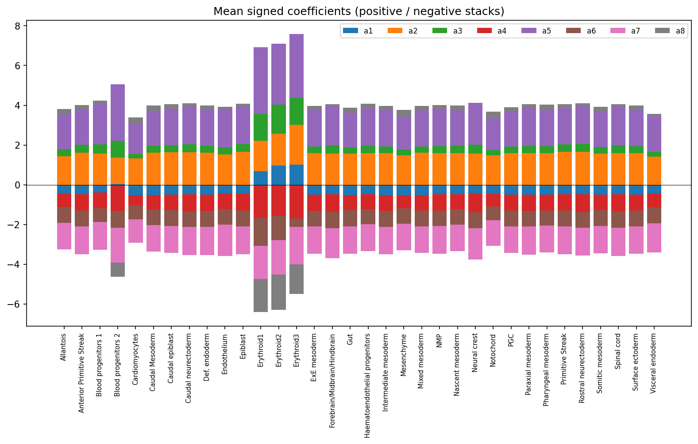
横軸＝celltype、縦軸＝平均a_k。色＝8成分。正と負を上下に積み上げます。
正負の細胞が混在すると平均で相殺されます。棒の総高さは係数の総量ではありません。
matsum/t049/coefficients/signed_mean.pngMatSum / LoRA · 結果の読み方
実行状態：complete ／ 重み：ema ／ 固有空間の本数q：32
/home/suzuki/Projects/scDiffusion-github/work/20261027_matsum_lora_analysis/outputs/job_20261027_201651_2523778/analysis
「8基底間のstd」はk方向、「細胞間のstd」はc方向の計算です。tは拡散ステップで、発生段階stageとは別です。
青い見出しごとに問いを1つずつ確認します。図をクリックすると元PNGを開きます。

横軸＝celltype、縦軸＝平均a_k。色＝8成分。正と負を上下に積み上げます。
正負の細胞が混在すると平均で相殺されます。棒の総高さは係数の総量ではありません。
matsum/t049/coefficients/signed_mean.png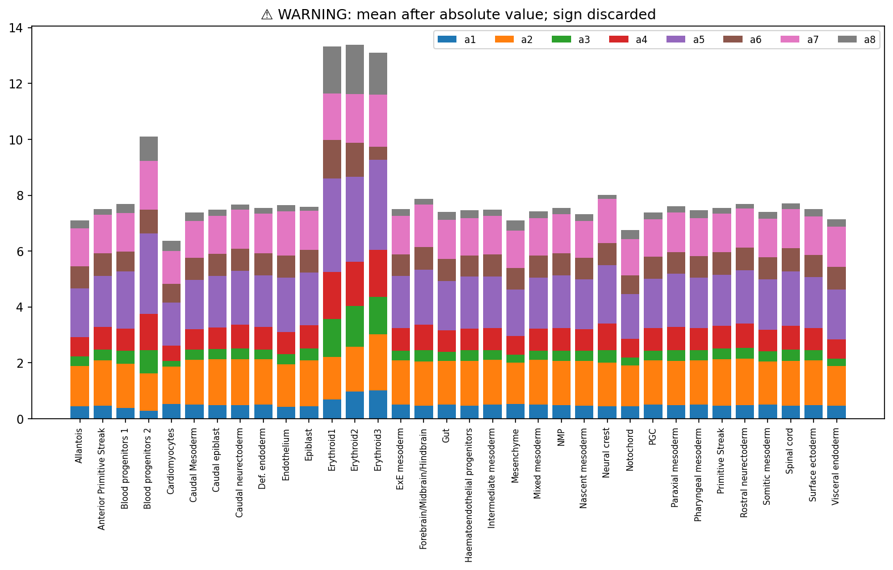
横軸＝celltype、縦軸＝mean(|a_k|)。色＝8成分。棒の高さ＝平均L1総量。
符号を捨てています。出力への寄与率ではなく、係数の大きさです。
matsum/t049/coefficients/mean_absolute.png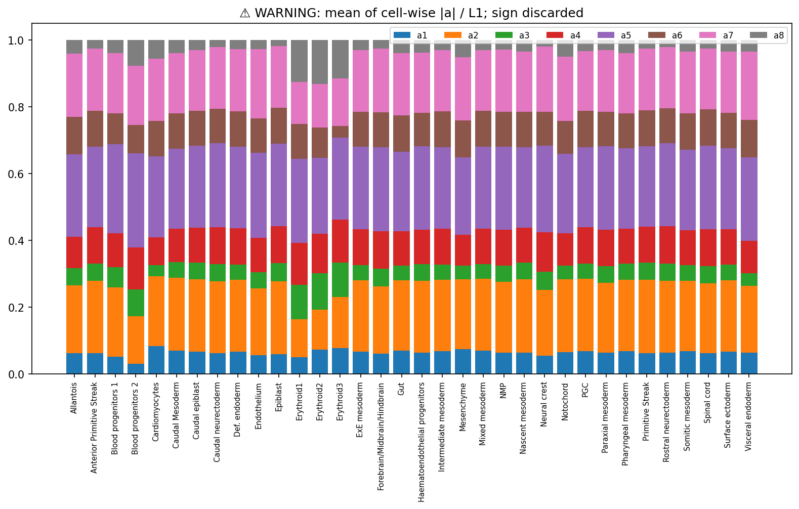
横軸＝celltype、縦軸＝mean(|a_k|/Σ|a|)。色＝8成分。各棒の合計＝1。
細胞を等しく扱った構成比です。符号と総量は失われます。全ゼロ細胞は除外。
matsum/t049/coefficients/mean_cell_composition.png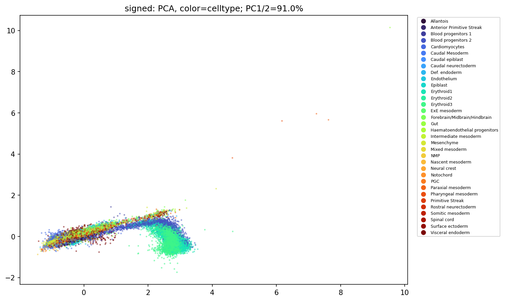
点＝細胞、色＝celltype。横・縦＝PC1/PC2。
PCAは中心化のみ。UMAPの見た目の分離だけで差の大きさを断定しません。原データはこのフォルダのCSV。
matsum/t049/coefficients/embeddings/signed/pca_celltype.png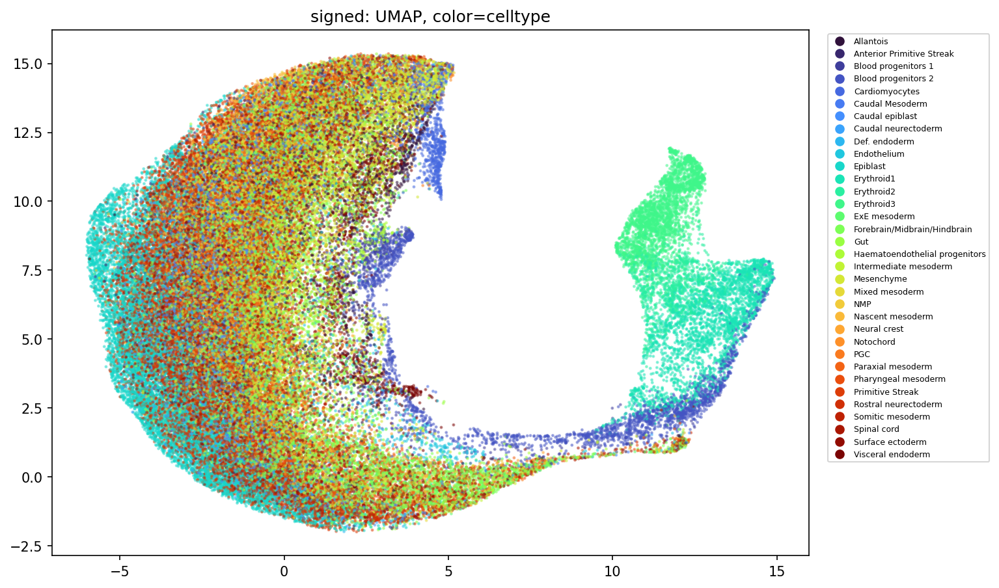
点＝細胞、色＝celltype。横・縦＝UMAPの2座標。
PCAは中心化のみ。UMAPの見た目の分離だけで差の大きさを断定しません。原データはこのフォルダのCSV。
matsum/t049/coefficients/embeddings/signed/umap_celltype.pngincoming＝標的として受ける絶対重みの和、outgoing＝制御元として送る絶対重みの和です。各モデルのgenes.csvでIDから遺伝子名を確認できます。
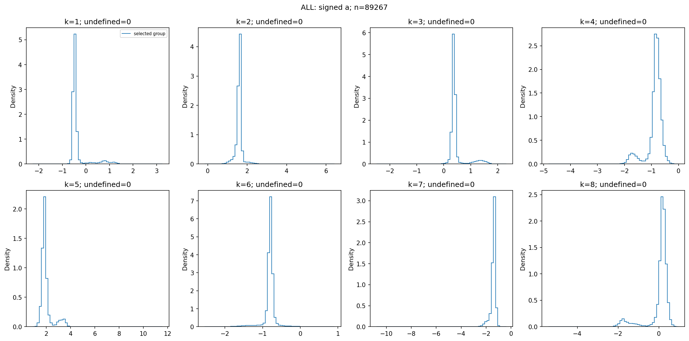
8パネル＝a1〜a8。横軸＝係数値、縦軸＝確率密度。青＝対象集団、灰＝全細胞。
細胞数ではなく密度を比較します。正負の混在や裾の広がりを見ます。
matsum/t049/coefficients/groups/all/signed_histograms.png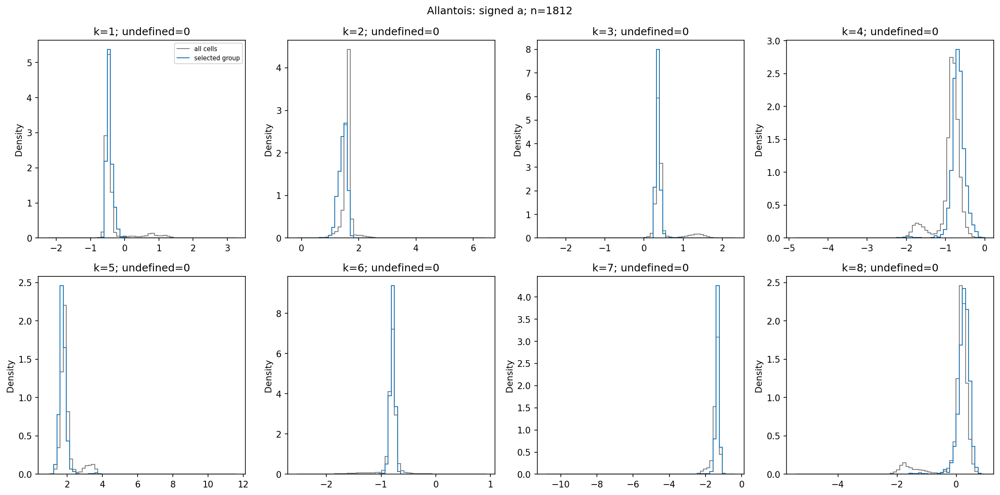
8パネル＝a1〜a8。横軸＝係数値、縦軸＝確率密度。青＝対象集団、灰＝全細胞。
細胞数ではなく密度を比較します。正負の混在や裾の広がりを見ます。
matsum/t049/coefficients/groups/00_Allantois/signed_histograms.png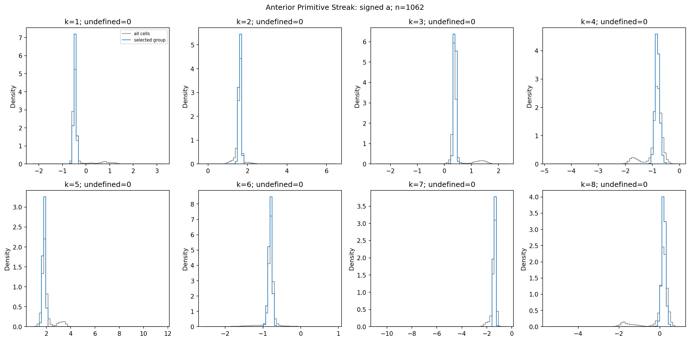
8パネル＝a1〜a8。横軸＝係数値、縦軸＝確率密度。青＝対象集団、灰＝全細胞。
細胞数ではなく密度を比較します。正負の混在や裾の広がりを見ます。
matsum/t049/coefficients/groups/01_Anterior_Primitive_Streak/signed_histograms.png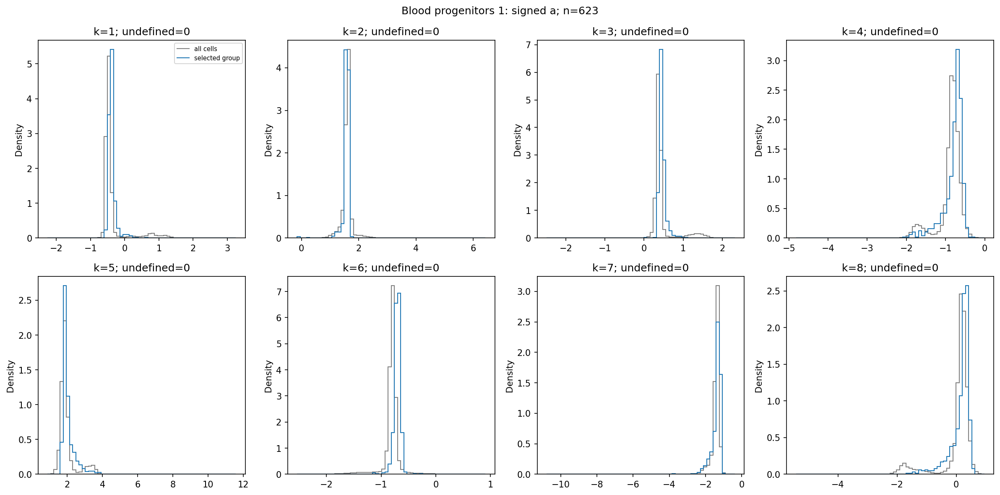
8パネル＝a1〜a8。横軸＝係数値、縦軸＝確率密度。青＝対象集団、灰＝全細胞。
細胞数ではなく密度を比較します。正負の混在や裾の広がりを見ます。
matsum/t049/coefficients/groups/02_Blood_progenitors_1/signed_histograms.png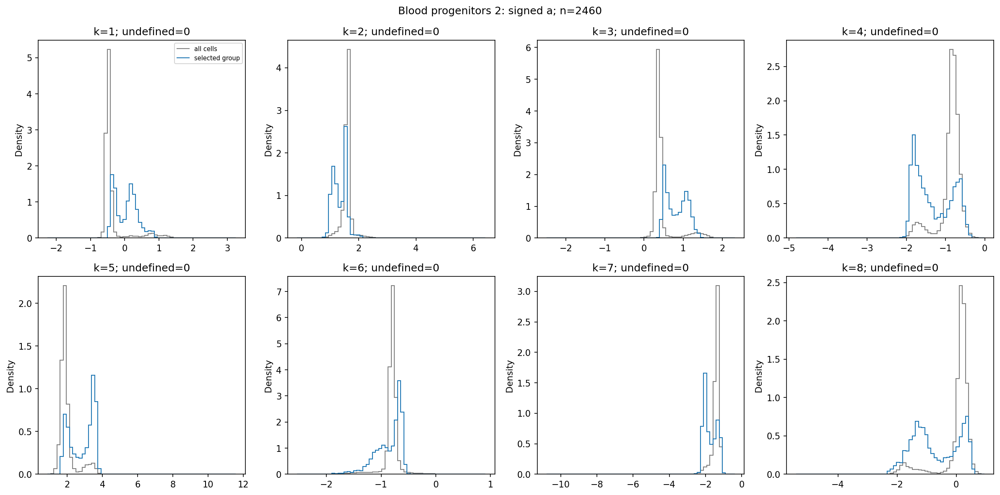
8パネル＝a1〜a8。横軸＝係数値、縦軸＝確率密度。青＝対象集団、灰＝全細胞。
細胞数ではなく密度を比較します。正負の混在や裾の広がりを見ます。
matsum/t049/coefficients/groups/03_Blood_progenitors_2/signed_histograms.png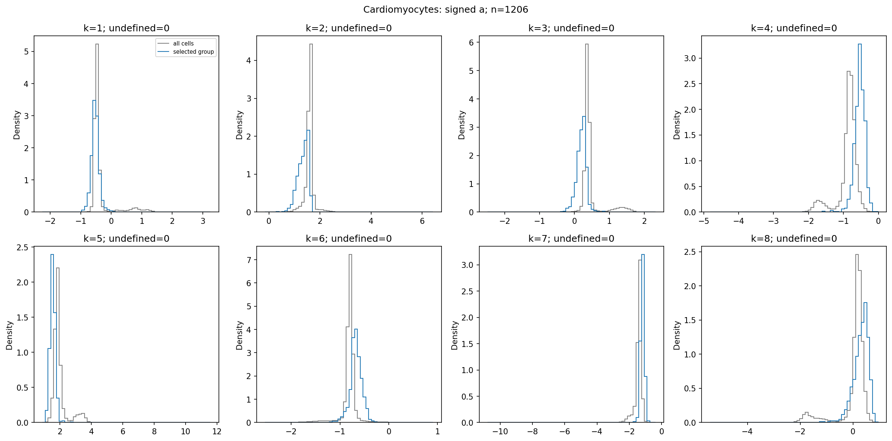
8パネル＝a1〜a8。横軸＝係数値、縦軸＝確率密度。青＝対象集団、灰＝全細胞。
細胞数ではなく密度を比較します。正負の混在や裾の広がりを見ます。
matsum/t049/coefficients/groups/04_Cardiomyocytes/signed_histograms.png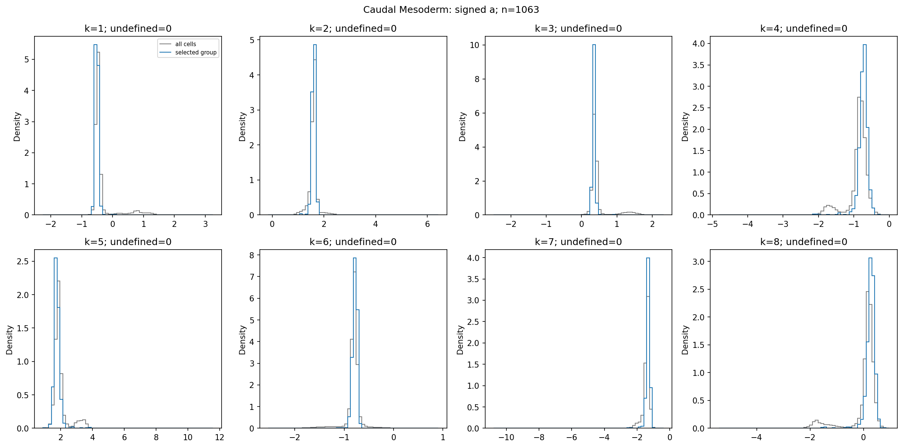
8パネル＝a1〜a8。横軸＝係数値、縦軸＝確率密度。青＝対象集団、灰＝全細胞。
細胞数ではなく密度を比較します。正負の混在や裾の広がりを見ます。
matsum/t049/coefficients/groups/05_Caudal_Mesoderm/signed_histograms.png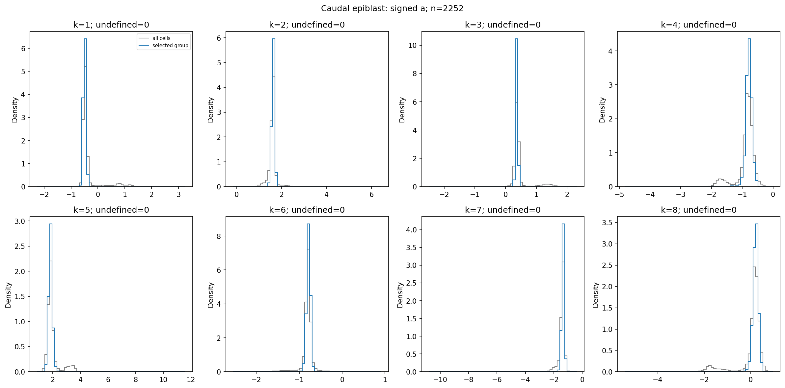
8パネル＝a1〜a8。横軸＝係数値、縦軸＝確率密度。青＝対象集団、灰＝全細胞。
細胞数ではなく密度を比較します。正負の混在や裾の広がりを見ます。
matsum/t049/coefficients/groups/06_Caudal_epiblast/signed_histograms.png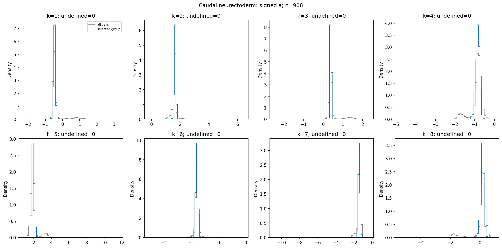
8パネル＝a1〜a8。横軸＝係数値、縦軸＝確率密度。青＝対象集団、灰＝全細胞。
細胞数ではなく密度を比較します。正負の混在や裾の広がりを見ます。
matsum/t049/coefficients/groups/07_Caudal_neurectoderm/signed_histograms.png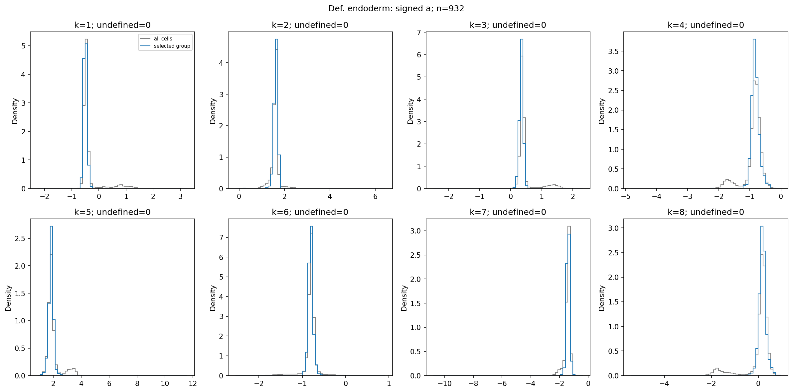
8パネル＝a1〜a8。横軸＝係数値、縦軸＝確率密度。青＝対象集団、灰＝全細胞。
細胞数ではなく密度を比較します。正負の混在や裾の広がりを見ます。
matsum/t049/coefficients/groups/08_Def_endoderm/signed_histograms.png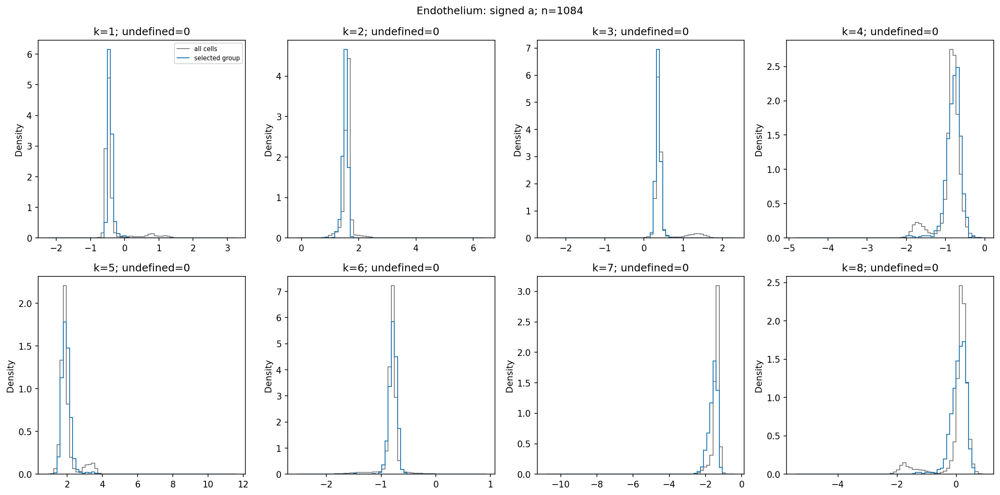
8パネル＝a1〜a8。横軸＝係数値、縦軸＝確率密度。青＝対象集団、灰＝全細胞。
細胞数ではなく密度を比較します。正負の混在や裾の広がりを見ます。
matsum/t049/coefficients/groups/09_Endothelium/signed_histograms.png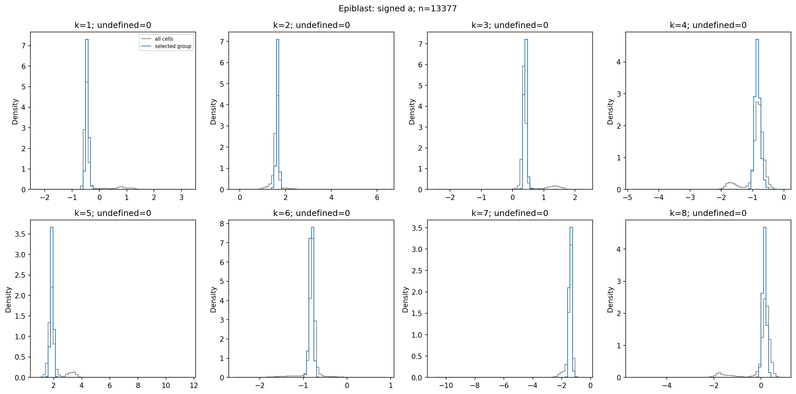
8パネル＝a1〜a8。横軸＝係数値、縦軸＝確率密度。青＝対象集団、灰＝全細胞。
細胞数ではなく密度を比較します。正負の混在や裾の広がりを見ます。
matsum/t049/coefficients/groups/10_Epiblast/signed_histograms.png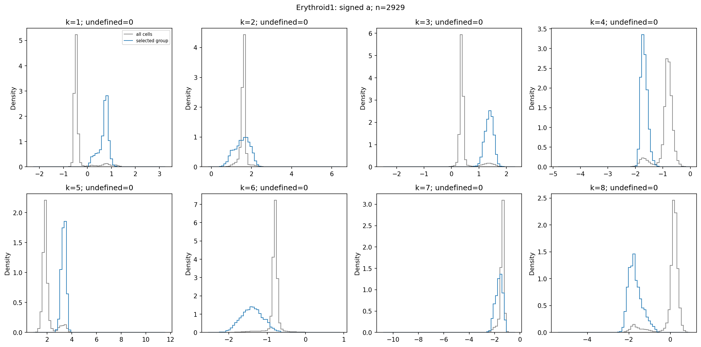
8パネル＝a1〜a8。横軸＝係数値、縦軸＝確率密度。青＝対象集団、灰＝全細胞。
細胞数ではなく密度を比較します。正負の混在や裾の広がりを見ます。
matsum/t049/coefficients/groups/11_Erythroid1/signed_histograms.png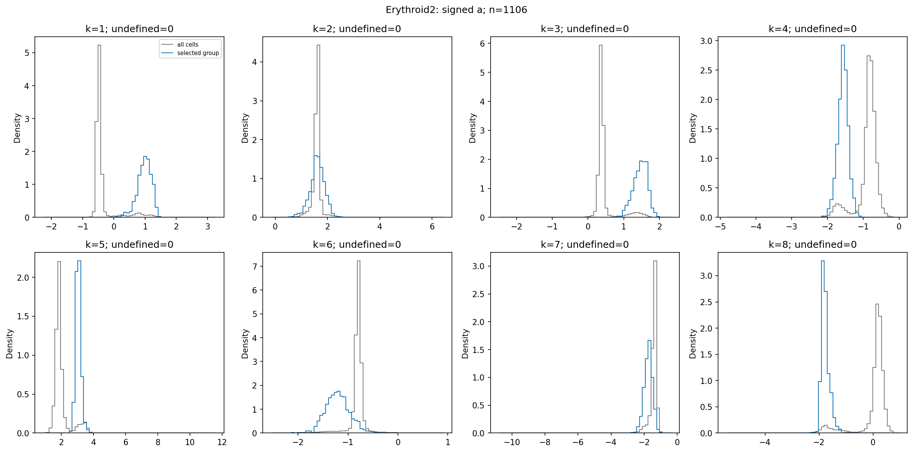
8パネル＝a1〜a8。横軸＝係数値、縦軸＝確率密度。青＝対象集団、灰＝全細胞。
細胞数ではなく密度を比較します。正負の混在や裾の広がりを見ます。
matsum/t049/coefficients/groups/12_Erythroid2/signed_histograms.png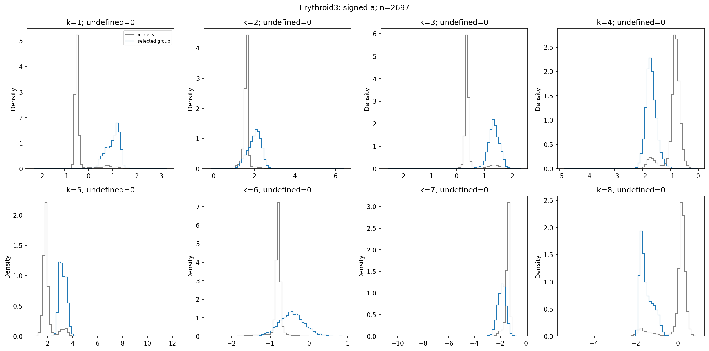
8パネル＝a1〜a8。横軸＝係数値、縦軸＝確率密度。青＝対象集団、灰＝全細胞。
細胞数ではなく密度を比較します。正負の混在や裾の広がりを見ます。
matsum/t049/coefficients/groups/13_Erythroid3/signed_histograms.png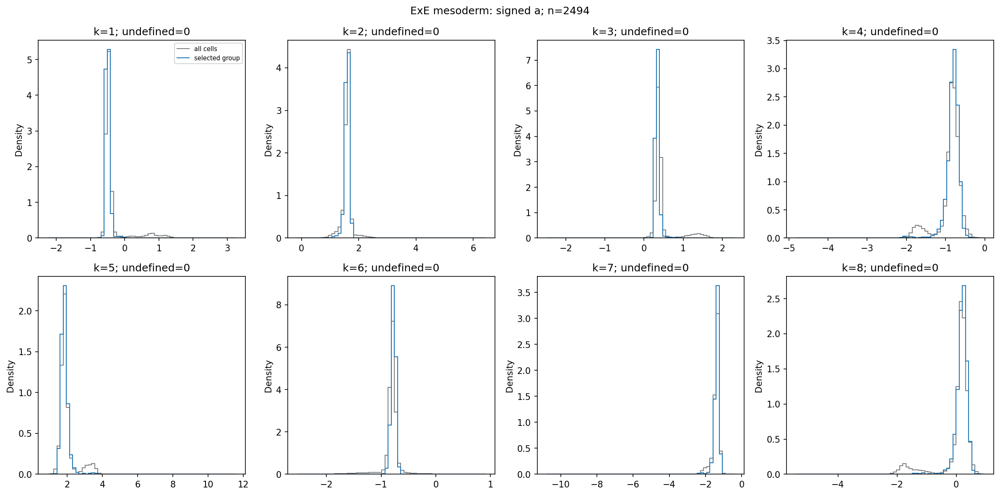
8パネル＝a1〜a8。横軸＝係数値、縦軸＝確率密度。青＝対象集団、灰＝全細胞。
細胞数ではなく密度を比較します。正負の混在や裾の広がりを見ます。
matsum/t049/coefficients/groups/14_ExE_mesoderm/signed_histograms.png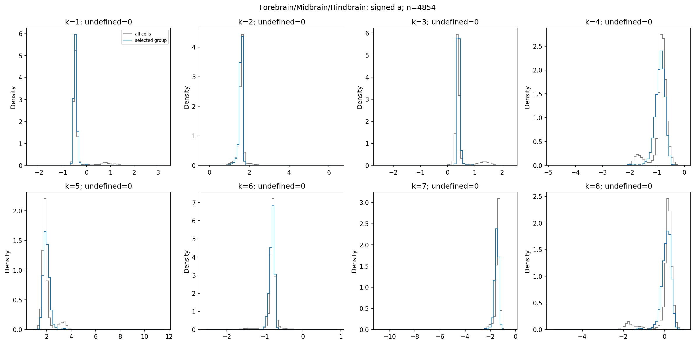
8パネル＝a1〜a8。横軸＝係数値、縦軸＝確率密度。青＝対象集団、灰＝全細胞。
細胞数ではなく密度を比較します。正負の混在や裾の広がりを見ます。
matsum/t049/coefficients/groups/15_Forebrain_Midbrain_Hindbrain/signed_histograms.png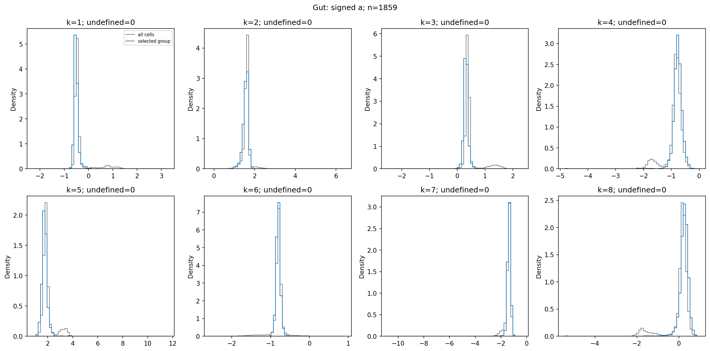
8パネル＝a1〜a8。横軸＝係数値、縦軸＝確率密度。青＝対象集団、灰＝全細胞。
細胞数ではなく密度を比較します。正負の混在や裾の広がりを見ます。
matsum/t049/coefficients/groups/16_Gut/signed_histograms.png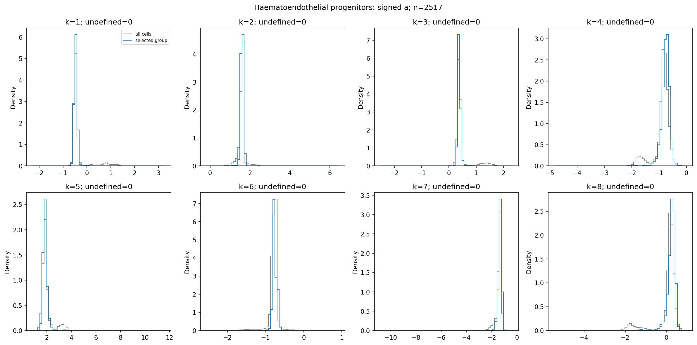
8パネル＝a1〜a8。横軸＝係数値、縦軸＝確率密度。青＝対象集団、灰＝全細胞。
細胞数ではなく密度を比較します。正負の混在や裾の広がりを見ます。
matsum/t049/coefficients/groups/17_Haematoendothelial_progenitors/signed_histograms.png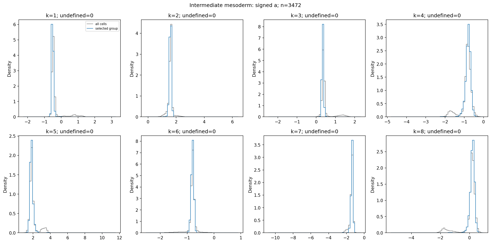
8パネル＝a1〜a8。横軸＝係数値、縦軸＝確率密度。青＝対象集団、灰＝全細胞。
細胞数ではなく密度を比較します。正負の混在や裾の広がりを見ます。
matsum/t049/coefficients/groups/18_Intermediate_mesoderm/signed_histograms.png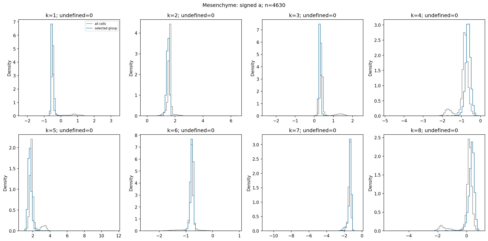
8パネル＝a1〜a8。横軸＝係数値、縦軸＝確率密度。青＝対象集団、灰＝全細胞。
細胞数ではなく密度を比較します。正負の混在や裾の広がりを見ます。
matsum/t049/coefficients/groups/19_Mesenchyme/signed_histograms.png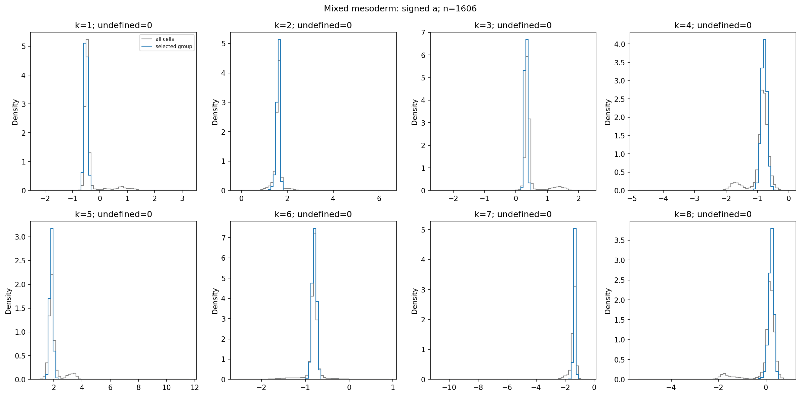
8パネル＝a1〜a8。横軸＝係数値、縦軸＝確率密度。青＝対象集団、灰＝全細胞。
細胞数ではなく密度を比較します。正負の混在や裾の広がりを見ます。
matsum/t049/coefficients/groups/20_Mixed_mesoderm/signed_histograms.png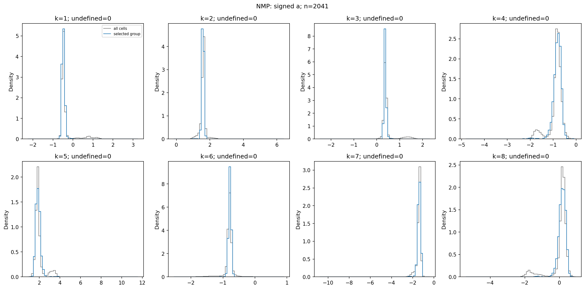
8パネル＝a1〜a8。横軸＝係数値、縦軸＝確率密度。青＝対象集団、灰＝全細胞。
細胞数ではなく密度を比較します。正負の混在や裾の広がりを見ます。
matsum/t049/coefficients/groups/21_NMP/signed_histograms.png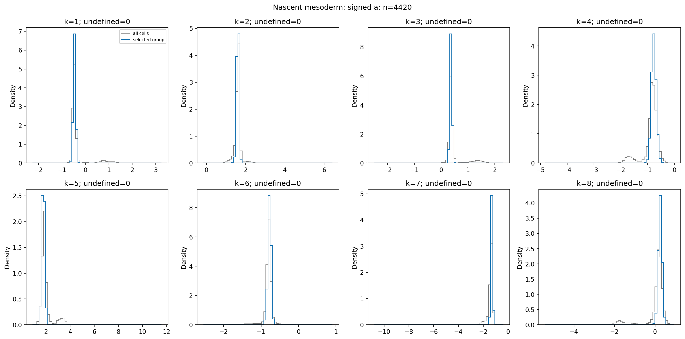
8パネル＝a1〜a8。横軸＝係数値、縦軸＝確率密度。青＝対象集団、灰＝全細胞。
細胞数ではなく密度を比較します。正負の混在や裾の広がりを見ます。
matsum/t049/coefficients/groups/22_Nascent_mesoderm/signed_histograms.png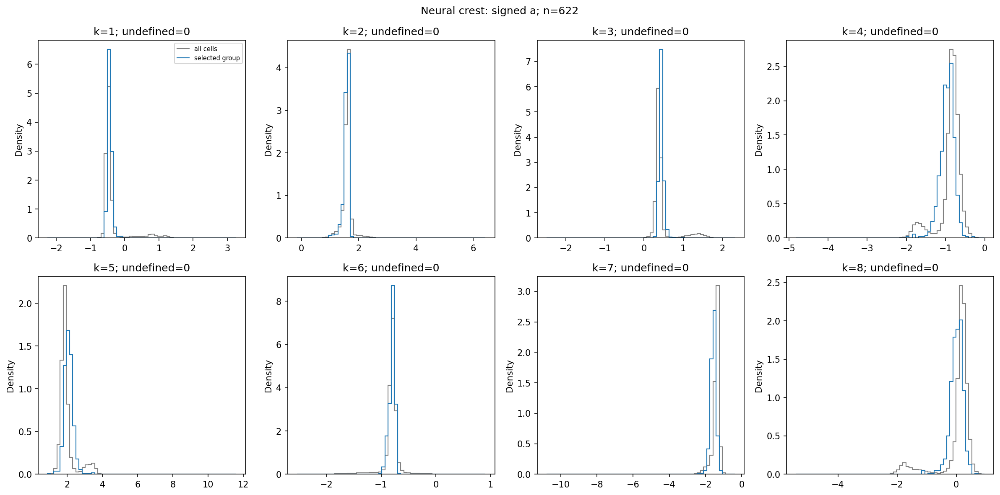
8パネル＝a1〜a8。横軸＝係数値、縦軸＝確率密度。青＝対象集団、灰＝全細胞。
細胞数ではなく密度を比較します。正負の混在や裾の広がりを見ます。
matsum/t049/coefficients/groups/23_Neural_crest/signed_histograms.png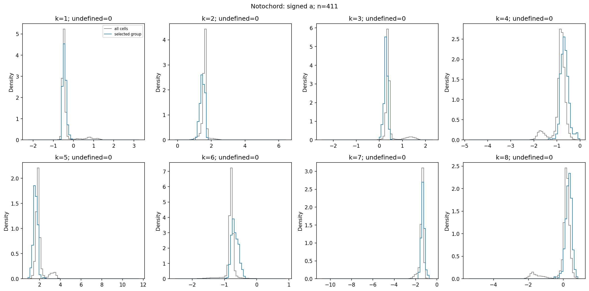
8パネル＝a1〜a8。横軸＝係数値、縦軸＝確率密度。青＝対象集団、灰＝全細胞。
細胞数ではなく密度を比較します。正負の混在や裾の広がりを見ます。
matsum/t049/coefficients/groups/24_Notochord/signed_histograms.png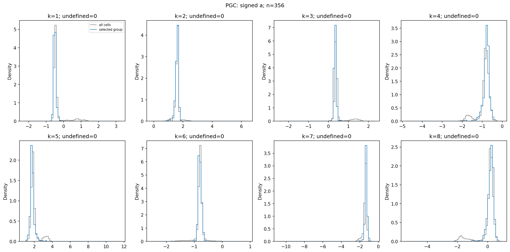
8パネル＝a1〜a8。横軸＝係数値、縦軸＝確率密度。青＝対象集団、灰＝全細胞。
細胞数ではなく密度を比較します。正負の混在や裾の広がりを見ます。
matsum/t049/coefficients/groups/25_PGC/signed_histograms.png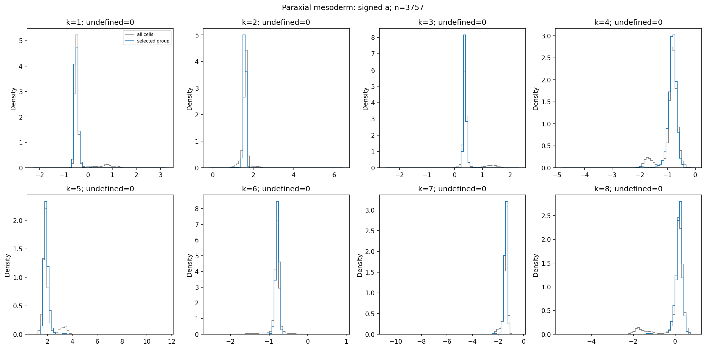
8パネル＝a1〜a8。横軸＝係数値、縦軸＝確率密度。青＝対象集団、灰＝全細胞。
細胞数ではなく密度を比較します。正負の混在や裾の広がりを見ます。
matsum/t049/coefficients/groups/26_Paraxial_mesoderm/signed_histograms.png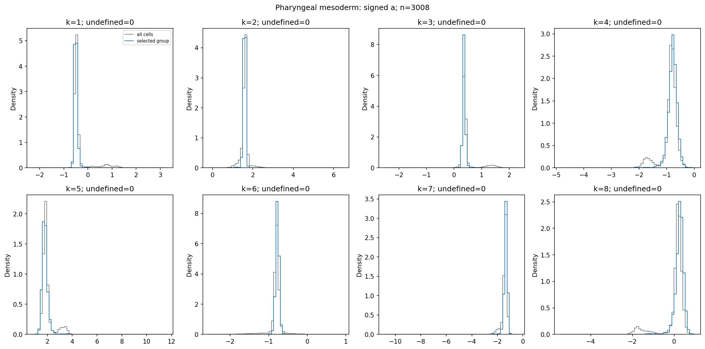
8パネル＝a1〜a8。横軸＝係数値、縦軸＝確率密度。青＝対象集団、灰＝全細胞。
細胞数ではなく密度を比較します。正負の混在や裾の広がりを見ます。
matsum/t049/coefficients/groups/27_Pharyngeal_mesoderm/signed_histograms.png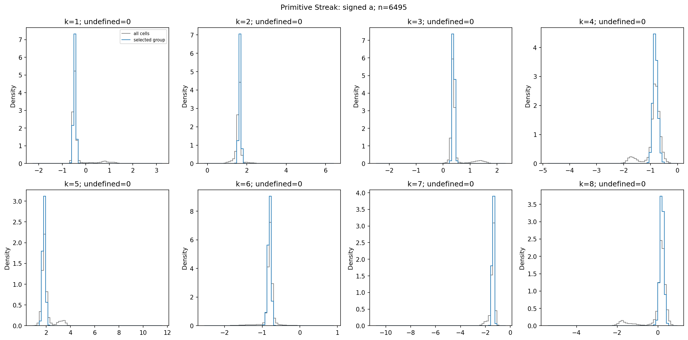
8パネル＝a1〜a8。横軸＝係数値、縦軸＝確率密度。青＝対象集団、灰＝全細胞。
細胞数ではなく密度を比較します。正負の混在や裾の広がりを見ます。
matsum/t049/coefficients/groups/28_Primitive_Streak/signed_histograms.png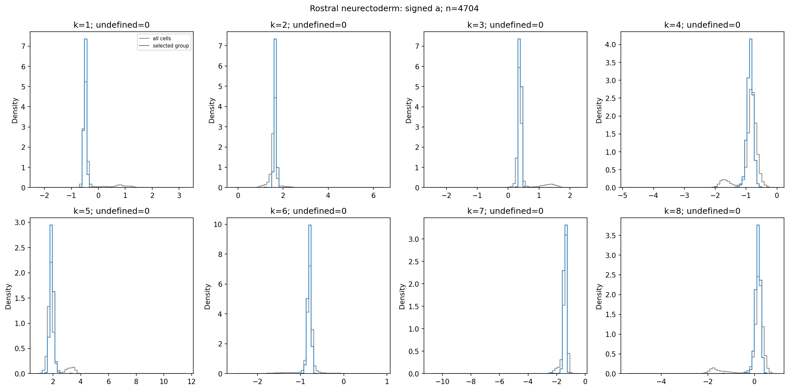
8パネル＝a1〜a8。横軸＝係数値、縦軸＝確率密度。青＝対象集団、灰＝全細胞。
細胞数ではなく密度を比較します。正負の混在や裾の広がりを見ます。
matsum/t049/coefficients/groups/29_Rostral_neurectoderm/signed_histograms.png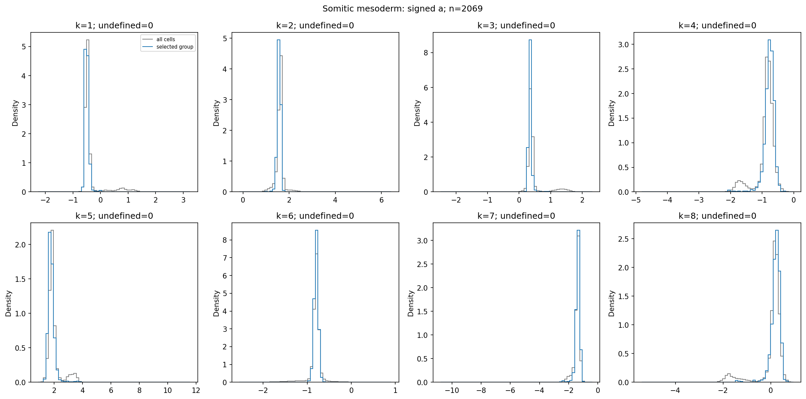
8パネル＝a1〜a8。横軸＝係数値、縦軸＝確率密度。青＝対象集団、灰＝全細胞。
細胞数ではなく密度を比較します。正負の混在や裾の広がりを見ます。
matsum/t049/coefficients/groups/30_Somitic_mesoderm/signed_histograms.png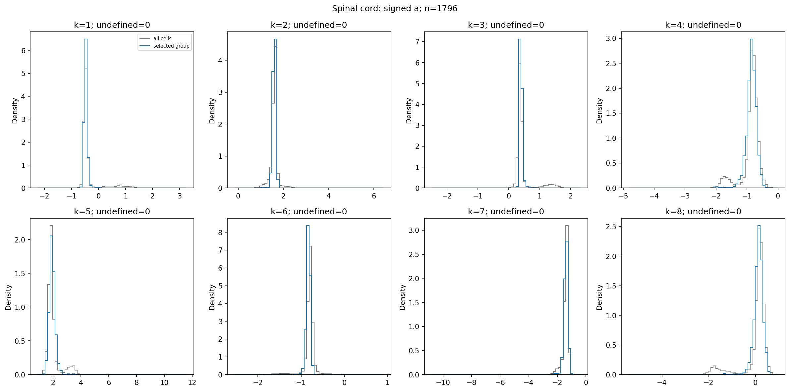
8パネル＝a1〜a8。横軸＝係数値、縦軸＝確率密度。青＝対象集団、灰＝全細胞。
細胞数ではなく密度を比較します。正負の混在や裾の広がりを見ます。
matsum/t049/coefficients/groups/31_Spinal_cord/signed_histograms.png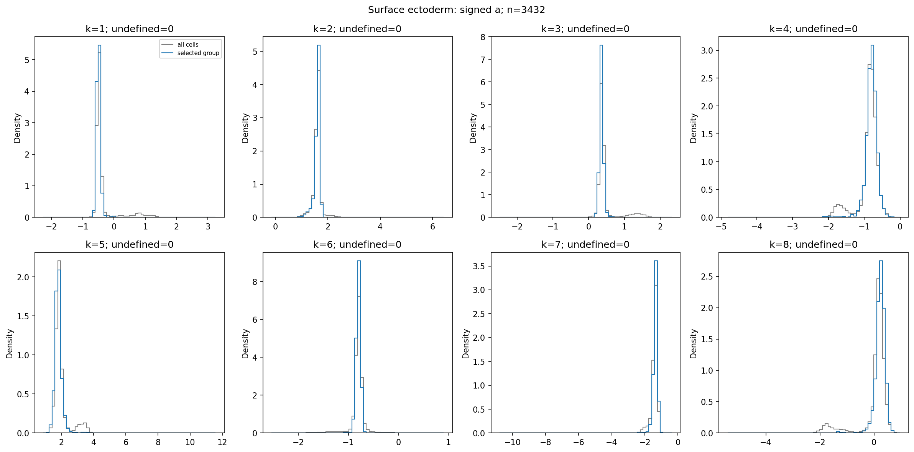
8パネル＝a1〜a8。横軸＝係数値、縦軸＝確率密度。青＝対象集団、灰＝全細胞。
細胞数ではなく密度を比較します。正負の混在や裾の広がりを見ます。
matsum/t049/coefficients/groups/32_Surface_ectoderm/signed_histograms.png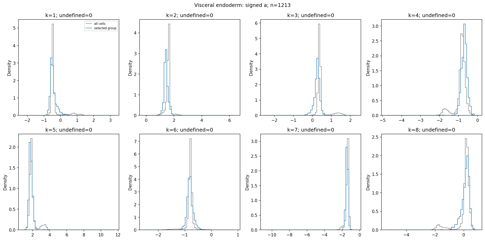
8パネル＝a1〜a8。横軸＝係数値、縦軸＝確率密度。青＝対象集団、灰＝全細胞。
細胞数ではなく密度を比較します。正負の混在や裾の広がりを見ます。
matsum/t049/coefficients/groups/33_Visceral_endoderm/signed_histograms.png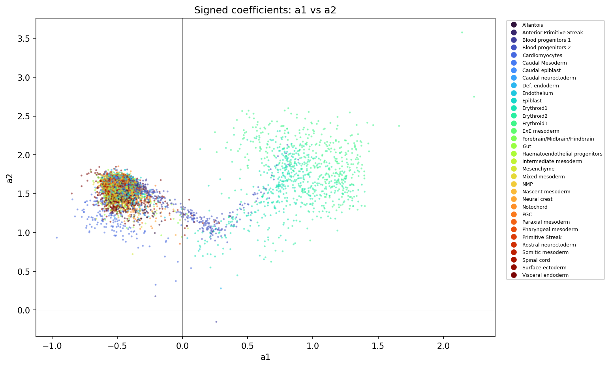
横軸＝符号付きa1、縦軸＝符号付きa2。点＝抽出細胞、色＝celltype。
表示用にcelltype別抽出。使用IDはscatter_cell_ids.csv。
matsum/t049/coefficients/pairs_balanced/a1_a2.png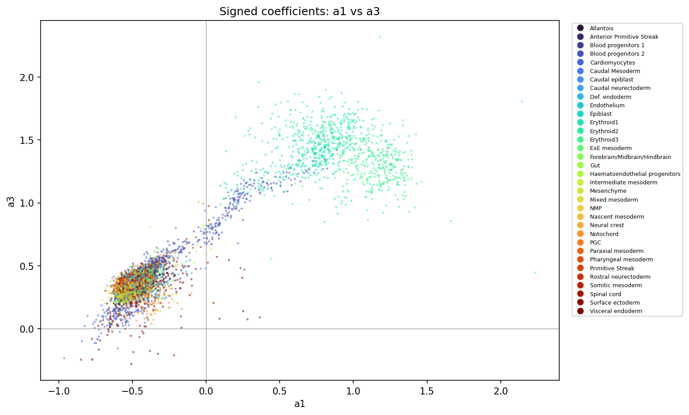
横軸＝符号付きa1、縦軸＝符号付きa3。点＝抽出細胞、色＝celltype。
表示用にcelltype別抽出。使用IDはscatter_cell_ids.csv。
matsum/t049/coefficients/pairs_balanced/a1_a3.png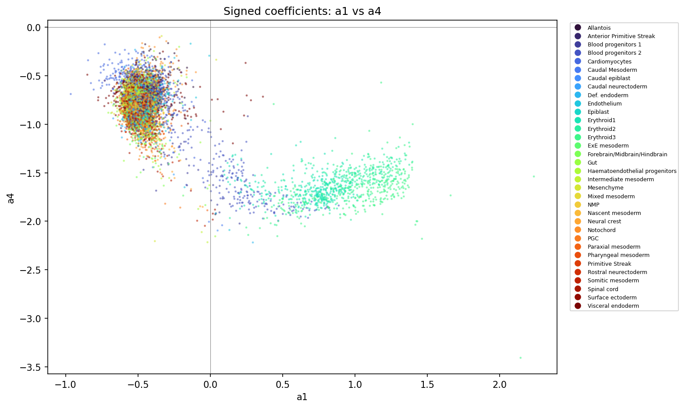
横軸＝符号付きa1、縦軸＝符号付きa4。点＝抽出細胞、色＝celltype。
表示用にcelltype別抽出。使用IDはscatter_cell_ids.csv。
matsum/t049/coefficients/pairs_balanced/a1_a4.png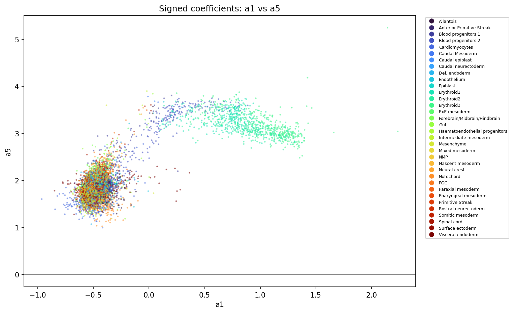
横軸＝符号付きa1、縦軸＝符号付きa5。点＝抽出細胞、色＝celltype。
表示用にcelltype別抽出。使用IDはscatter_cell_ids.csv。
matsum/t049/coefficients/pairs_balanced/a1_a5.png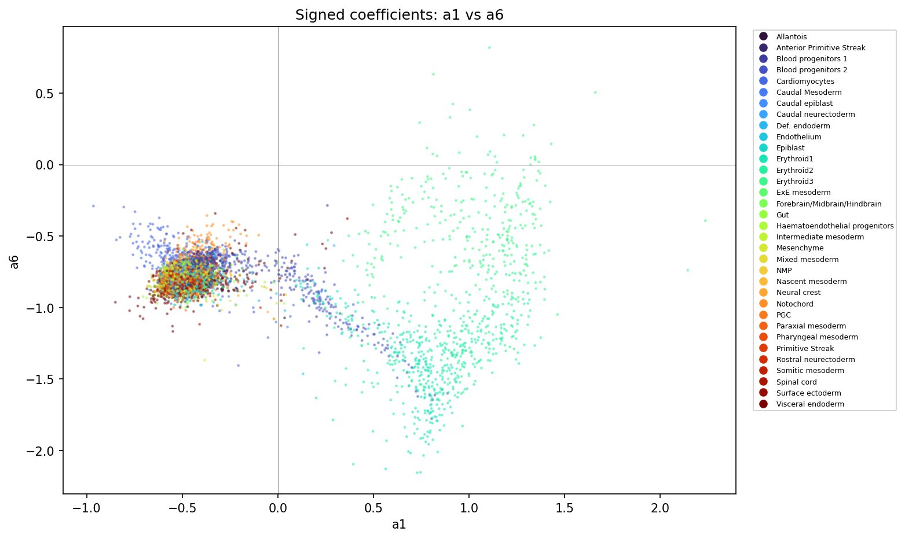
横軸＝符号付きa1、縦軸＝符号付きa6。点＝抽出細胞、色＝celltype。
表示用にcelltype別抽出。使用IDはscatter_cell_ids.csv。
matsum/t049/coefficients/pairs_balanced/a1_a6.png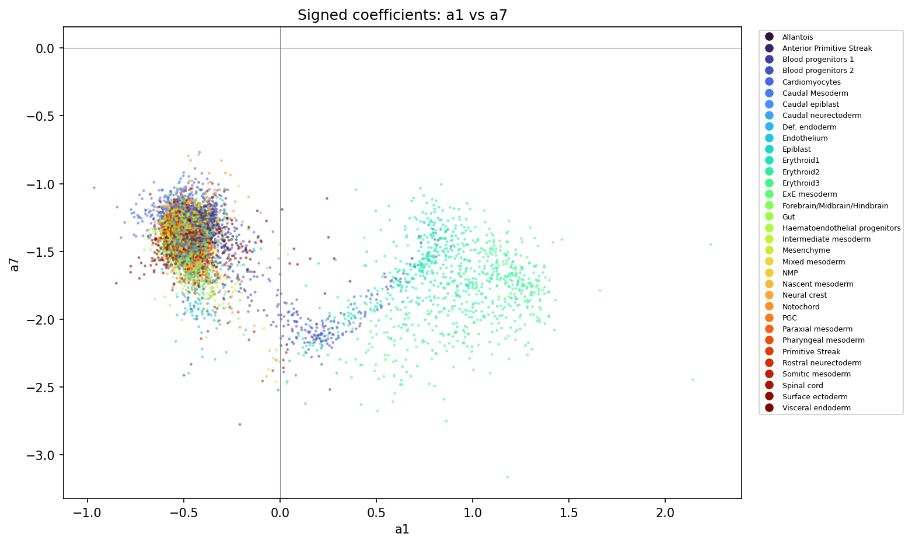
横軸＝符号付きa1、縦軸＝符号付きa7。点＝抽出細胞、色＝celltype。
表示用にcelltype別抽出。使用IDはscatter_cell_ids.csv。
matsum/t049/coefficients/pairs_balanced/a1_a7.png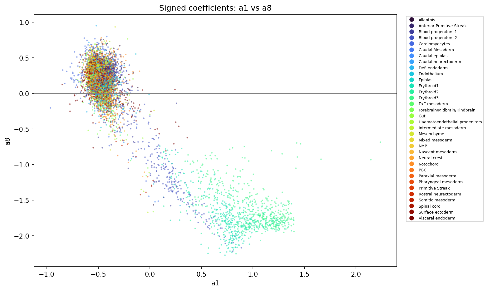
横軸＝符号付きa1、縦軸＝符号付きa8。点＝抽出細胞、色＝celltype。
表示用にcelltype別抽出。使用IDはscatter_cell_ids.csv。
matsum/t049/coefficients/pairs_balanced/a1_a8.png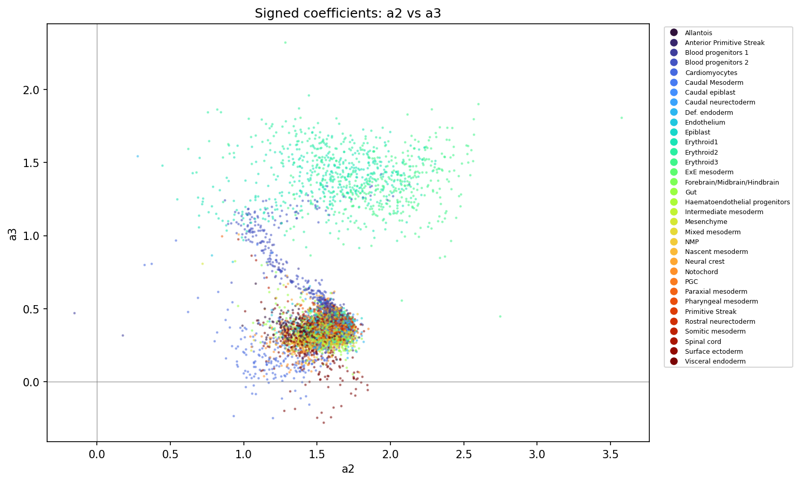
横軸＝符号付きa2、縦軸＝符号付きa3。点＝抽出細胞、色＝celltype。
表示用にcelltype別抽出。使用IDはscatter_cell_ids.csv。
matsum/t049/coefficients/pairs_balanced/a2_a3.png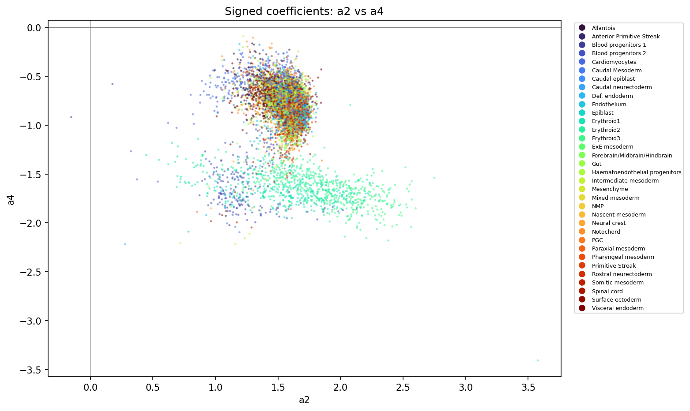
横軸＝符号付きa2、縦軸＝符号付きa4。点＝抽出細胞、色＝celltype。
表示用にcelltype別抽出。使用IDはscatter_cell_ids.csv。
matsum/t049/coefficients/pairs_balanced/a2_a4.png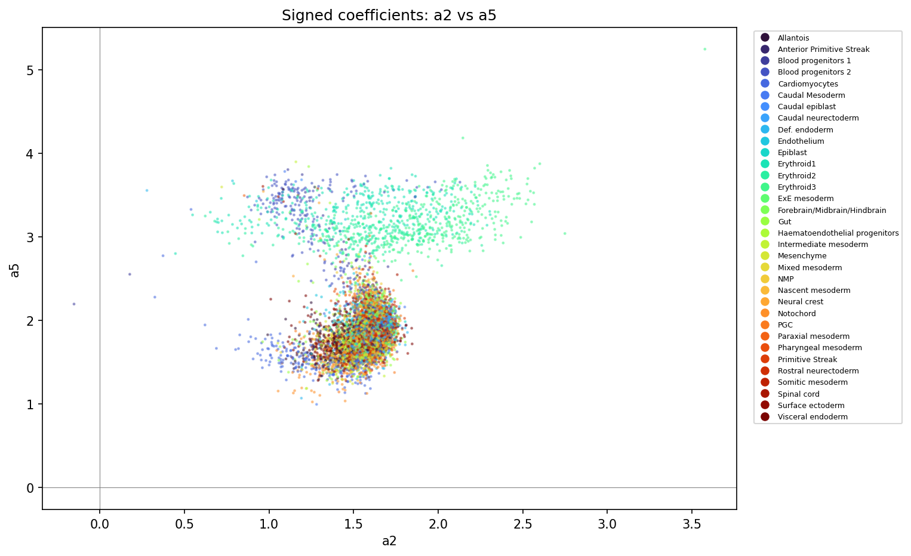
横軸＝符号付きa2、縦軸＝符号付きa5。点＝抽出細胞、色＝celltype。
表示用にcelltype別抽出。使用IDはscatter_cell_ids.csv。
matsum/t049/coefficients/pairs_balanced/a2_a5.png横軸＝符号付きa2、縦軸＝符号付きa6。点＝抽出細胞、色＝celltype。
表示用にcelltype別抽出。使用IDはscatter_cell_ids.csv。
matsum/t049/coefficients/pairs_balanced/a2_a6.png横軸＝符号付きa2、縦軸＝符号付きa7。点＝抽出細胞、色＝celltype。
表示用にcelltype別抽出。使用IDはscatter_cell_ids.csv。
matsum/t049/coefficients/pairs_balanced/a2_a7.png横軸＝符号付きa2、縦軸＝符号付きa8。点＝抽出細胞、色＝celltype。
表示用にcelltype別抽出。使用IDはscatter_cell_ids.csv。
matsum/t049/coefficients/pairs_balanced/a2_a8.png横軸＝符号付きa3、縦軸＝符号付きa4。点＝抽出細胞、色＝celltype。
表示用にcelltype別抽出。使用IDはscatter_cell_ids.csv。
matsum/t049/coefficients/pairs_balanced/a3_a4.png横軸＝符号付きa3、縦軸＝符号付きa5。点＝抽出細胞、色＝celltype。
表示用にcelltype別抽出。使用IDはscatter_cell_ids.csv。
matsum/t049/coefficients/pairs_balanced/a3_a5.png横軸＝符号付きa3、縦軸＝符号付きa6。点＝抽出細胞、色＝celltype。
表示用にcelltype別抽出。使用IDはscatter_cell_ids.csv。
matsum/t049/coefficients/pairs_balanced/a3_a6.png横軸＝符号付きa3、縦軸＝符号付きa7。点＝抽出細胞、色＝celltype。
表示用にcelltype別抽出。使用IDはscatter_cell_ids.csv。
matsum/t049/coefficients/pairs_balanced/a3_a7.png横軸＝符号付きa3、縦軸＝符号付きa8。点＝抽出細胞、色＝celltype。
表示用にcelltype別抽出。使用IDはscatter_cell_ids.csv。
matsum/t049/coefficients/pairs_balanced/a3_a8.png横軸＝符号付きa4、縦軸＝符号付きa5。点＝抽出細胞、色＝celltype。
表示用にcelltype別抽出。使用IDはscatter_cell_ids.csv。
matsum/t049/coefficients/pairs_balanced/a4_a5.png横軸＝符号付きa4、縦軸＝符号付きa6。点＝抽出細胞、色＝celltype。
表示用にcelltype別抽出。使用IDはscatter_cell_ids.csv。
matsum/t049/coefficients/pairs_balanced/a4_a6.png横軸＝符号付きa4、縦軸＝符号付きa7。点＝抽出細胞、色＝celltype。
表示用にcelltype別抽出。使用IDはscatter_cell_ids.csv。
matsum/t049/coefficients/pairs_balanced/a4_a7.png横軸＝符号付きa4、縦軸＝符号付きa8。点＝抽出細胞、色＝celltype。
表示用にcelltype別抽出。使用IDはscatter_cell_ids.csv。
matsum/t049/coefficients/pairs_balanced/a4_a8.png横軸＝符号付きa5、縦軸＝符号付きa6。点＝抽出細胞、色＝celltype。
表示用にcelltype別抽出。使用IDはscatter_cell_ids.csv。
matsum/t049/coefficients/pairs_balanced/a5_a6.png横軸＝符号付きa5、縦軸＝符号付きa7。点＝抽出細胞、色＝celltype。
表示用にcelltype別抽出。使用IDはscatter_cell_ids.csv。
matsum/t049/coefficients/pairs_balanced/a5_a7.png横軸＝符号付きa5、縦軸＝符号付きa8。点＝抽出細胞、色＝celltype。
表示用にcelltype別抽出。使用IDはscatter_cell_ids.csv。
matsum/t049/coefficients/pairs_balanced/a5_a8.png横軸＝符号付きa6、縦軸＝符号付きa7。点＝抽出細胞、色＝celltype。
表示用にcelltype別抽出。使用IDはscatter_cell_ids.csv。
matsum/t049/coefficients/pairs_balanced/a6_a7.png横軸＝符号付きa6、縦軸＝符号付きa8。点＝抽出細胞、色＝celltype。
表示用にcelltype別抽出。使用IDはscatter_cell_ids.csv。
matsum/t049/coefficients/pairs_balanced/a6_a8.png横軸＝符号付きa7、縦軸＝符号付きa8。点＝抽出細胞、色＝celltype。
表示用にcelltype別抽出。使用IDはscatter_cell_ids.csv。
matsum/t049/coefficients/pairs_balanced/a7_a8.png縦軸＝cluster、横軸＝celltype、色＝細胞数。
元8次元でK-meansした結果。正解・不正解のconfusion matrixではなく分割表です。最初のseedを表示。
matsum/t049/coefficients/embeddings/signed/cluster_k16_counts.png縦軸＝cluster、横軸＝celltype、色＝細胞数。
元8次元でK-meansした結果。正解・不正解のconfusion matrixではなく分割表です。最初のseedを表示。
matsum/t049/coefficients/embeddings/signed/cluster_k34_counts.png縦軸＝cluster、横軸＝celltype、色＝細胞数。
元8次元でK-meansした結果。正解・不正解のconfusion matrixではなく分割表です。最初のseedを表示。
matsum/t049/coefficients/embeddings/signed/cluster_k8_counts.png各遺伝子ペアを固定して細胞方向に計算。横軸＝std、縦軸＝密度。青＝対象集団、灰＝全細胞。
Cは8パネル、Wは1パネル。Cのstd/|mean|は非ゼロ要素で同じ値になる数学的構造があります。比率の除外数はratio_validity.csv。
matsum/t049/cell_matrices/groups/all/C_std_histogram.png各遺伝子ペアを固定して細胞方向に計算。横軸＝std_over_mean、縦軸＝密度。青＝対象集団、灰＝全細胞。
Cは8パネル、Wは1パネル。Cのstd/|mean|は非ゼロ要素で同じ値になる数学的構造があります。比率の除外数はratio_validity.csv。
matsum/t049/cell_matrices/groups/all/C_std_over_mean_histogram.png8パネル。縦＝標的、横＝制御元。色＝mean_c(a_ck) B_kij。
同じkでは基底の倍率と符号だけが変わります。新しい行列形状を学習した意味ではありません。
matsum/t049/cell_matrices/groups/all/mean_C_full.png各遺伝子ペアを固定して細胞方向に計算。横軸＝std、縦軸＝密度。青＝対象集団、灰＝全細胞。
Cは8パネル、Wは1パネル。Cのstd/|mean|は非ゼロ要素で同じ値になる数学的構造があります。比率の除外数はratio_validity.csv。
matsum/t049/cell_matrices/groups/00_Allantois/C_std_histogram.png各遺伝子ペアを固定して細胞方向に計算。横軸＝std_over_mean、縦軸＝密度。青＝対象集団、灰＝全細胞。
Cは8パネル、Wは1パネル。Cのstd/|mean|は非ゼロ要素で同じ値になる数学的構造があります。比率の除外数はratio_validity.csv。
matsum/t049/cell_matrices/groups/00_Allantois/C_std_over_mean_histogram.png8パネル。縦＝標的、横＝制御元。色＝mean_c(a_ck) B_kij。
同じkでは基底の倍率と符号だけが変わります。新しい行列形状を学習した意味ではありません。
matsum/t049/cell_matrices/groups/00_Allantois/mean_C_full.png各遺伝子ペアを固定して細胞方向に計算。横軸＝std、縦軸＝密度。青＝対象集団、灰＝全細胞。
Cは8パネル、Wは1パネル。Cのstd/|mean|は非ゼロ要素で同じ値になる数学的構造があります。比率の除外数はratio_validity.csv。
matsum/t049/cell_matrices/groups/01_Anterior_Primitive_Streak/C_std_histogram.png各遺伝子ペアを固定して細胞方向に計算。横軸＝std_over_mean、縦軸＝密度。青＝対象集団、灰＝全細胞。
Cは8パネル、Wは1パネル。Cのstd/|mean|は非ゼロ要素で同じ値になる数学的構造があります。比率の除外数はratio_validity.csv。
matsum/t049/cell_matrices/groups/01_Anterior_Primitive_Streak/C_std_over_mean_histogram.png8パネル。縦＝標的、横＝制御元。色＝mean_c(a_ck) B_kij。
同じkでは基底の倍率と符号だけが変わります。新しい行列形状を学習した意味ではありません。
matsum/t049/cell_matrices/groups/01_Anterior_Primitive_Streak/mean_C_full.png各遺伝子ペアを固定して細胞方向に計算。横軸＝std、縦軸＝密度。青＝対象集団、灰＝全細胞。
Cは8パネル、Wは1パネル。Cのstd/|mean|は非ゼロ要素で同じ値になる数学的構造があります。比率の除外数はratio_validity.csv。
matsum/t049/cell_matrices/groups/02_Blood_progenitors_1/C_std_histogram.png各遺伝子ペアを固定して細胞方向に計算。横軸＝std_over_mean、縦軸＝密度。青＝対象集団、灰＝全細胞。
Cは8パネル、Wは1パネル。Cのstd/|mean|は非ゼロ要素で同じ値になる数学的構造があります。比率の除外数はratio_validity.csv。
matsum/t049/cell_matrices/groups/02_Blood_progenitors_1/C_std_over_mean_histogram.png8パネル。縦＝標的、横＝制御元。色＝mean_c(a_ck) B_kij。
同じkでは基底の倍率と符号だけが変わります。新しい行列形状を学習した意味ではありません。
matsum/t049/cell_matrices/groups/02_Blood_progenitors_1/mean_C_full.png各遺伝子ペアを固定して細胞方向に計算。横軸＝std、縦軸＝密度。青＝対象集団、灰＝全細胞。
Cは8パネル、Wは1パネル。Cのstd/|mean|は非ゼロ要素で同じ値になる数学的構造があります。比率の除外数はratio_validity.csv。
matsum/t049/cell_matrices/groups/03_Blood_progenitors_2/C_std_histogram.png各遺伝子ペアを固定して細胞方向に計算。横軸＝std_over_mean、縦軸＝密度。青＝対象集団、灰＝全細胞。
Cは8パネル、Wは1パネル。Cのstd/|mean|は非ゼロ要素で同じ値になる数学的構造があります。比率の除外数はratio_validity.csv。
matsum/t049/cell_matrices/groups/03_Blood_progenitors_2/C_std_over_mean_histogram.png8パネル。縦＝標的、横＝制御元。色＝mean_c(a_ck) B_kij。
同じkでは基底の倍率と符号だけが変わります。新しい行列形状を学習した意味ではありません。
matsum/t049/cell_matrices/groups/03_Blood_progenitors_2/mean_C_full.png各遺伝子ペアを固定して細胞方向に計算。横軸＝std、縦軸＝密度。青＝対象集団、灰＝全細胞。
Cは8パネル、Wは1パネル。Cのstd/|mean|は非ゼロ要素で同じ値になる数学的構造があります。比率の除外数はratio_validity.csv。
matsum/t049/cell_matrices/groups/04_Cardiomyocytes/C_std_histogram.png各遺伝子ペアを固定して細胞方向に計算。横軸＝std_over_mean、縦軸＝密度。青＝対象集団、灰＝全細胞。
Cは8パネル、Wは1パネル。Cのstd/|mean|は非ゼロ要素で同じ値になる数学的構造があります。比率の除外数はratio_validity.csv。
matsum/t049/cell_matrices/groups/04_Cardiomyocytes/C_std_over_mean_histogram.png8パネル。縦＝標的、横＝制御元。色＝mean_c(a_ck) B_kij。
同じkでは基底の倍率と符号だけが変わります。新しい行列形状を学習した意味ではありません。
matsum/t049/cell_matrices/groups/04_Cardiomyocytes/mean_C_full.png各遺伝子ペアを固定して細胞方向に計算。横軸＝std、縦軸＝密度。青＝対象集団、灰＝全細胞。
Cは8パネル、Wは1パネル。Cのstd/|mean|は非ゼロ要素で同じ値になる数学的構造があります。比率の除外数はratio_validity.csv。
matsum/t049/cell_matrices/groups/05_Caudal_Mesoderm/C_std_histogram.png各遺伝子ペアを固定して細胞方向に計算。横軸＝std_over_mean、縦軸＝密度。青＝対象集団、灰＝全細胞。
Cは8パネル、Wは1パネル。Cのstd/|mean|は非ゼロ要素で同じ値になる数学的構造があります。比率の除外数はratio_validity.csv。
matsum/t049/cell_matrices/groups/05_Caudal_Mesoderm/C_std_over_mean_histogram.png8パネル。縦＝標的、横＝制御元。色＝mean_c(a_ck) B_kij。
同じkでは基底の倍率と符号だけが変わります。新しい行列形状を学習した意味ではありません。
matsum/t049/cell_matrices/groups/05_Caudal_Mesoderm/mean_C_full.png各遺伝子ペアを固定して細胞方向に計算。横軸＝std、縦軸＝密度。青＝対象集団、灰＝全細胞。
Cは8パネル、Wは1パネル。Cのstd/|mean|は非ゼロ要素で同じ値になる数学的構造があります。比率の除外数はratio_validity.csv。
matsum/t049/cell_matrices/groups/06_Caudal_epiblast/C_std_histogram.png各遺伝子ペアを固定して細胞方向に計算。横軸＝std_over_mean、縦軸＝密度。青＝対象集団、灰＝全細胞。
Cは8パネル、Wは1パネル。Cのstd/|mean|は非ゼロ要素で同じ値になる数学的構造があります。比率の除外数はratio_validity.csv。
matsum/t049/cell_matrices/groups/06_Caudal_epiblast/C_std_over_mean_histogram.png8パネル。縦＝標的、横＝制御元。色＝mean_c(a_ck) B_kij。
同じkでは基底の倍率と符号だけが変わります。新しい行列形状を学習した意味ではありません。
matsum/t049/cell_matrices/groups/06_Caudal_epiblast/mean_C_full.png各遺伝子ペアを固定して細胞方向に計算。横軸＝std、縦軸＝密度。青＝対象集団、灰＝全細胞。
Cは8パネル、Wは1パネル。Cのstd/|mean|は非ゼロ要素で同じ値になる数学的構造があります。比率の除外数はratio_validity.csv。
matsum/t049/cell_matrices/groups/07_Caudal_neurectoderm/C_std_histogram.png各遺伝子ペアを固定して細胞方向に計算。横軸＝std_over_mean、縦軸＝密度。青＝対象集団、灰＝全細胞。
Cは8パネル、Wは1パネル。Cのstd/|mean|は非ゼロ要素で同じ値になる数学的構造があります。比率の除外数はratio_validity.csv。
matsum/t049/cell_matrices/groups/07_Caudal_neurectoderm/C_std_over_mean_histogram.png8パネル。縦＝標的、横＝制御元。色＝mean_c(a_ck) B_kij。
同じkでは基底の倍率と符号だけが変わります。新しい行列形状を学習した意味ではありません。
matsum/t049/cell_matrices/groups/07_Caudal_neurectoderm/mean_C_full.png各遺伝子ペアを固定して細胞方向に計算。横軸＝std、縦軸＝密度。青＝対象集団、灰＝全細胞。
Cは8パネル、Wは1パネル。Cのstd/|mean|は非ゼロ要素で同じ値になる数学的構造があります。比率の除外数はratio_validity.csv。
matsum/t049/cell_matrices/groups/08_Def_endoderm/C_std_histogram.png各遺伝子ペアを固定して細胞方向に計算。横軸＝std_over_mean、縦軸＝密度。青＝対象集団、灰＝全細胞。
Cは8パネル、Wは1パネル。Cのstd/|mean|は非ゼロ要素で同じ値になる数学的構造があります。比率の除外数はratio_validity.csv。
matsum/t049/cell_matrices/groups/08_Def_endoderm/C_std_over_mean_histogram.png8パネル。縦＝標的、横＝制御元。色＝mean_c(a_ck) B_kij。
同じkでは基底の倍率と符号だけが変わります。新しい行列形状を学習した意味ではありません。
matsum/t049/cell_matrices/groups/08_Def_endoderm/mean_C_full.png各遺伝子ペアを固定して細胞方向に計算。横軸＝std、縦軸＝密度。青＝対象集団、灰＝全細胞。
Cは8パネル、Wは1パネル。Cのstd/|mean|は非ゼロ要素で同じ値になる数学的構造があります。比率の除外数はratio_validity.csv。
matsum/t049/cell_matrices/groups/09_Endothelium/C_std_histogram.png各遺伝子ペアを固定して細胞方向に計算。横軸＝std_over_mean、縦軸＝密度。青＝対象集団、灰＝全細胞。
Cは8パネル、Wは1パネル。Cのstd/|mean|は非ゼロ要素で同じ値になる数学的構造があります。比率の除外数はratio_validity.csv。
matsum/t049/cell_matrices/groups/09_Endothelium/C_std_over_mean_histogram.png8パネル。縦＝標的、横＝制御元。色＝mean_c(a_ck) B_kij。
同じkでは基底の倍率と符号だけが変わります。新しい行列形状を学習した意味ではありません。
matsum/t049/cell_matrices/groups/09_Endothelium/mean_C_full.png各遺伝子ペアを固定して細胞方向に計算。横軸＝std、縦軸＝密度。青＝対象集団、灰＝全細胞。
Cは8パネル、Wは1パネル。Cのstd/|mean|は非ゼロ要素で同じ値になる数学的構造があります。比率の除外数はratio_validity.csv。
matsum/t049/cell_matrices/groups/10_Epiblast/C_std_histogram.png各遺伝子ペアを固定して細胞方向に計算。横軸＝std_over_mean、縦軸＝密度。青＝対象集団、灰＝全細胞。
Cは8パネル、Wは1パネル。Cのstd/|mean|は非ゼロ要素で同じ値になる数学的構造があります。比率の除外数はratio_validity.csv。
matsum/t049/cell_matrices/groups/10_Epiblast/C_std_over_mean_histogram.png8パネル。縦＝標的、横＝制御元。色＝mean_c(a_ck) B_kij。
同じkでは基底の倍率と符号だけが変わります。新しい行列形状を学習した意味ではありません。
matsum/t049/cell_matrices/groups/10_Epiblast/mean_C_full.png各遺伝子ペアを固定して細胞方向に計算。横軸＝std、縦軸＝密度。青＝対象集団、灰＝全細胞。
Cは8パネル、Wは1パネル。Cのstd/|mean|は非ゼロ要素で同じ値になる数学的構造があります。比率の除外数はratio_validity.csv。
matsum/t049/cell_matrices/groups/11_Erythroid1/C_std_histogram.png各遺伝子ペアを固定して細胞方向に計算。横軸＝std_over_mean、縦軸＝密度。青＝対象集団、灰＝全細胞。
Cは8パネル、Wは1パネル。Cのstd/|mean|は非ゼロ要素で同じ値になる数学的構造があります。比率の除外数はratio_validity.csv。
matsum/t049/cell_matrices/groups/11_Erythroid1/C_std_over_mean_histogram.png8パネル。縦＝標的、横＝制御元。色＝mean_c(a_ck) B_kij。
同じkでは基底の倍率と符号だけが変わります。新しい行列形状を学習した意味ではありません。
matsum/t049/cell_matrices/groups/11_Erythroid1/mean_C_full.png各遺伝子ペアを固定して細胞方向に計算。横軸＝std、縦軸＝密度。青＝対象集団、灰＝全細胞。
Cは8パネル、Wは1パネル。Cのstd/|mean|は非ゼロ要素で同じ値になる数学的構造があります。比率の除外数はratio_validity.csv。
matsum/t049/cell_matrices/groups/12_Erythroid2/C_std_histogram.png各遺伝子ペアを固定して細胞方向に計算。横軸＝std_over_mean、縦軸＝密度。青＝対象集団、灰＝全細胞。
Cは8パネル、Wは1パネル。Cのstd/|mean|は非ゼロ要素で同じ値になる数学的構造があります。比率の除外数はratio_validity.csv。
matsum/t049/cell_matrices/groups/12_Erythroid2/C_std_over_mean_histogram.png8パネル。縦＝標的、横＝制御元。色＝mean_c(a_ck) B_kij。
同じkでは基底の倍率と符号だけが変わります。新しい行列形状を学習した意味ではありません。
matsum/t049/cell_matrices/groups/12_Erythroid2/mean_C_full.png各遺伝子ペアを固定して細胞方向に計算。横軸＝std、縦軸＝密度。青＝対象集団、灰＝全細胞。
Cは8パネル、Wは1パネル。Cのstd/|mean|は非ゼロ要素で同じ値になる数学的構造があります。比率の除外数はratio_validity.csv。
matsum/t049/cell_matrices/groups/13_Erythroid3/C_std_histogram.png各遺伝子ペアを固定して細胞方向に計算。横軸＝std_over_mean、縦軸＝密度。青＝対象集団、灰＝全細胞。
Cは8パネル、Wは1パネル。Cのstd/|mean|は非ゼロ要素で同じ値になる数学的構造があります。比率の除外数はratio_validity.csv。
matsum/t049/cell_matrices/groups/13_Erythroid3/C_std_over_mean_histogram.png8パネル。縦＝標的、横＝制御元。色＝mean_c(a_ck) B_kij。
同じkでは基底の倍率と符号だけが変わります。新しい行列形状を学習した意味ではありません。
matsum/t049/cell_matrices/groups/13_Erythroid3/mean_C_full.png各遺伝子ペアを固定して細胞方向に計算。横軸＝std、縦軸＝密度。青＝対象集団、灰＝全細胞。
Cは8パネル、Wは1パネル。Cのstd/|mean|は非ゼロ要素で同じ値になる数学的構造があります。比率の除外数はratio_validity.csv。
matsum/t049/cell_matrices/groups/14_ExE_mesoderm/C_std_histogram.png各遺伝子ペアを固定して細胞方向に計算。横軸＝std_over_mean、縦軸＝密度。青＝対象集団、灰＝全細胞。
Cは8パネル、Wは1パネル。Cのstd/|mean|は非ゼロ要素で同じ値になる数学的構造があります。比率の除外数はratio_validity.csv。
matsum/t049/cell_matrices/groups/14_ExE_mesoderm/C_std_over_mean_histogram.png8パネル。縦＝標的、横＝制御元。色＝mean_c(a_ck) B_kij。
同じkでは基底の倍率と符号だけが変わります。新しい行列形状を学習した意味ではありません。
matsum/t049/cell_matrices/groups/14_ExE_mesoderm/mean_C_full.png各遺伝子ペアを固定して細胞方向に計算。横軸＝std、縦軸＝密度。青＝対象集団、灰＝全細胞。
Cは8パネル、Wは1パネル。Cのstd/|mean|は非ゼロ要素で同じ値になる数学的構造があります。比率の除外数はratio_validity.csv。
matsum/t049/cell_matrices/groups/15_Forebrain_Midbrain_Hindbrain/C_std_histogram.png各遺伝子ペアを固定して細胞方向に計算。横軸＝std_over_mean、縦軸＝密度。青＝対象集団、灰＝全細胞。
Cは8パネル、Wは1パネル。Cのstd/|mean|は非ゼロ要素で同じ値になる数学的構造があります。比率の除外数はratio_validity.csv。
matsum/t049/cell_matrices/groups/15_Forebrain_Midbrain_Hindbrain/C_std_over_mean_histogram.png8パネル。縦＝標的、横＝制御元。色＝mean_c(a_ck) B_kij。
同じkでは基底の倍率と符号だけが変わります。新しい行列形状を学習した意味ではありません。
matsum/t049/cell_matrices/groups/15_Forebrain_Midbrain_Hindbrain/mean_C_full.png各遺伝子ペアを固定して細胞方向に計算。横軸＝std、縦軸＝密度。青＝対象集団、灰＝全細胞。
Cは8パネル、Wは1パネル。Cのstd/|mean|は非ゼロ要素で同じ値になる数学的構造があります。比率の除外数はratio_validity.csv。
matsum/t049/cell_matrices/groups/16_Gut/C_std_histogram.png各遺伝子ペアを固定して細胞方向に計算。横軸＝std_over_mean、縦軸＝密度。青＝対象集団、灰＝全細胞。
Cは8パネル、Wは1パネル。Cのstd/|mean|は非ゼロ要素で同じ値になる数学的構造があります。比率の除外数はratio_validity.csv。
matsum/t049/cell_matrices/groups/16_Gut/C_std_over_mean_histogram.png8パネル。縦＝標的、横＝制御元。色＝mean_c(a_ck) B_kij。
同じkでは基底の倍率と符号だけが変わります。新しい行列形状を学習した意味ではありません。
matsum/t049/cell_matrices/groups/16_Gut/mean_C_full.png各遺伝子ペアを固定して細胞方向に計算。横軸＝std、縦軸＝密度。青＝対象集団、灰＝全細胞。
Cは8パネル、Wは1パネル。Cのstd/|mean|は非ゼロ要素で同じ値になる数学的構造があります。比率の除外数はratio_validity.csv。
matsum/t049/cell_matrices/groups/17_Haematoendothelial_progenitors/C_std_histogram.png各遺伝子ペアを固定して細胞方向に計算。横軸＝std_over_mean、縦軸＝密度。青＝対象集団、灰＝全細胞。
Cは8パネル、Wは1パネル。Cのstd/|mean|は非ゼロ要素で同じ値になる数学的構造があります。比率の除外数はratio_validity.csv。
matsum/t049/cell_matrices/groups/17_Haematoendothelial_progenitors/C_std_over_mean_histogram.png8パネル。縦＝標的、横＝制御元。色＝mean_c(a_ck) B_kij。
同じkでは基底の倍率と符号だけが変わります。新しい行列形状を学習した意味ではありません。
matsum/t049/cell_matrices/groups/17_Haematoendothelial_progenitors/mean_C_full.png各遺伝子ペアを固定して細胞方向に計算。横軸＝std、縦軸＝密度。青＝対象集団、灰＝全細胞。
Cは8パネル、Wは1パネル。Cのstd/|mean|は非ゼロ要素で同じ値になる数学的構造があります。比率の除外数はratio_validity.csv。
matsum/t049/cell_matrices/groups/18_Intermediate_mesoderm/C_std_histogram.png各遺伝子ペアを固定して細胞方向に計算。横軸＝std_over_mean、縦軸＝密度。青＝対象集団、灰＝全細胞。
Cは8パネル、Wは1パネル。Cのstd/|mean|は非ゼロ要素で同じ値になる数学的構造があります。比率の除外数はratio_validity.csv。
matsum/t049/cell_matrices/groups/18_Intermediate_mesoderm/C_std_over_mean_histogram.png8パネル。縦＝標的、横＝制御元。色＝mean_c(a_ck) B_kij。
同じkでは基底の倍率と符号だけが変わります。新しい行列形状を学習した意味ではありません。
matsum/t049/cell_matrices/groups/18_Intermediate_mesoderm/mean_C_full.png各遺伝子ペアを固定して細胞方向に計算。横軸＝std、縦軸＝密度。青＝対象集団、灰＝全細胞。
Cは8パネル、Wは1パネル。Cのstd/|mean|は非ゼロ要素で同じ値になる数学的構造があります。比率の除外数はratio_validity.csv。
matsum/t049/cell_matrices/groups/19_Mesenchyme/C_std_histogram.png各遺伝子ペアを固定して細胞方向に計算。横軸＝std_over_mean、縦軸＝密度。青＝対象集団、灰＝全細胞。
Cは8パネル、Wは1パネル。Cのstd/|mean|は非ゼロ要素で同じ値になる数学的構造があります。比率の除外数はratio_validity.csv。
matsum/t049/cell_matrices/groups/19_Mesenchyme/C_std_over_mean_histogram.png8パネル。縦＝標的、横＝制御元。色＝mean_c(a_ck) B_kij。
同じkでは基底の倍率と符号だけが変わります。新しい行列形状を学習した意味ではありません。
matsum/t049/cell_matrices/groups/19_Mesenchyme/mean_C_full.png各遺伝子ペアを固定して細胞方向に計算。横軸＝std、縦軸＝密度。青＝対象集団、灰＝全細胞。
Cは8パネル、Wは1パネル。Cのstd/|mean|は非ゼロ要素で同じ値になる数学的構造があります。比率の除外数はratio_validity.csv。
matsum/t049/cell_matrices/groups/20_Mixed_mesoderm/C_std_histogram.png各遺伝子ペアを固定して細胞方向に計算。横軸＝std_over_mean、縦軸＝密度。青＝対象集団、灰＝全細胞。
Cは8パネル、Wは1パネル。Cのstd/|mean|は非ゼロ要素で同じ値になる数学的構造があります。比率の除外数はratio_validity.csv。
matsum/t049/cell_matrices/groups/20_Mixed_mesoderm/C_std_over_mean_histogram.png8パネル。縦＝標的、横＝制御元。色＝mean_c(a_ck) B_kij。
同じkでは基底の倍率と符号だけが変わります。新しい行列形状を学習した意味ではありません。
matsum/t049/cell_matrices/groups/20_Mixed_mesoderm/mean_C_full.png各遺伝子ペアを固定して細胞方向に計算。横軸＝std、縦軸＝密度。青＝対象集団、灰＝全細胞。
Cは8パネル、Wは1パネル。Cのstd/|mean|は非ゼロ要素で同じ値になる数学的構造があります。比率の除外数はratio_validity.csv。
matsum/t049/cell_matrices/groups/21_NMP/C_std_histogram.png各遺伝子ペアを固定して細胞方向に計算。横軸＝std_over_mean、縦軸＝密度。青＝対象集団、灰＝全細胞。
Cは8パネル、Wは1パネル。Cのstd/|mean|は非ゼロ要素で同じ値になる数学的構造があります。比率の除外数はratio_validity.csv。
matsum/t049/cell_matrices/groups/21_NMP/C_std_over_mean_histogram.png8パネル。縦＝標的、横＝制御元。色＝mean_c(a_ck) B_kij。
同じkでは基底の倍率と符号だけが変わります。新しい行列形状を学習した意味ではありません。
matsum/t049/cell_matrices/groups/21_NMP/mean_C_full.png各遺伝子ペアを固定して細胞方向に計算。横軸＝std、縦軸＝密度。青＝対象集団、灰＝全細胞。
Cは8パネル、Wは1パネル。Cのstd/|mean|は非ゼロ要素で同じ値になる数学的構造があります。比率の除外数はratio_validity.csv。
matsum/t049/cell_matrices/groups/22_Nascent_mesoderm/C_std_histogram.png各遺伝子ペアを固定して細胞方向に計算。横軸＝std_over_mean、縦軸＝密度。青＝対象集団、灰＝全細胞。
Cは8パネル、Wは1パネル。Cのstd/|mean|は非ゼロ要素で同じ値になる数学的構造があります。比率の除外数はratio_validity.csv。
matsum/t049/cell_matrices/groups/22_Nascent_mesoderm/C_std_over_mean_histogram.png8パネル。縦＝標的、横＝制御元。色＝mean_c(a_ck) B_kij。
同じkでは基底の倍率と符号だけが変わります。新しい行列形状を学習した意味ではありません。
matsum/t049/cell_matrices/groups/22_Nascent_mesoderm/mean_C_full.png各遺伝子ペアを固定して細胞方向に計算。横軸＝std、縦軸＝密度。青＝対象集団、灰＝全細胞。
Cは8パネル、Wは1パネル。Cのstd/|mean|は非ゼロ要素で同じ値になる数学的構造があります。比率の除外数はratio_validity.csv。
matsum/t049/cell_matrices/groups/23_Neural_crest/C_std_histogram.png各遺伝子ペアを固定して細胞方向に計算。横軸＝std_over_mean、縦軸＝密度。青＝対象集団、灰＝全細胞。
Cは8パネル、Wは1パネル。Cのstd/|mean|は非ゼロ要素で同じ値になる数学的構造があります。比率の除外数はratio_validity.csv。
matsum/t049/cell_matrices/groups/23_Neural_crest/C_std_over_mean_histogram.png8パネル。縦＝標的、横＝制御元。色＝mean_c(a_ck) B_kij。
同じkでは基底の倍率と符号だけが変わります。新しい行列形状を学習した意味ではありません。
matsum/t049/cell_matrices/groups/23_Neural_crest/mean_C_full.png各遺伝子ペアを固定して細胞方向に計算。横軸＝std、縦軸＝密度。青＝対象集団、灰＝全細胞。
Cは8パネル、Wは1パネル。Cのstd/|mean|は非ゼロ要素で同じ値になる数学的構造があります。比率の除外数はratio_validity.csv。
matsum/t049/cell_matrices/groups/24_Notochord/C_std_histogram.png各遺伝子ペアを固定して細胞方向に計算。横軸＝std_over_mean、縦軸＝密度。青＝対象集団、灰＝全細胞。
Cは8パネル、Wは1パネル。Cのstd/|mean|は非ゼロ要素で同じ値になる数学的構造があります。比率の除外数はratio_validity.csv。
matsum/t049/cell_matrices/groups/24_Notochord/C_std_over_mean_histogram.png8パネル。縦＝標的、横＝制御元。色＝mean_c(a_ck) B_kij。
同じkでは基底の倍率と符号だけが変わります。新しい行列形状を学習した意味ではありません。
matsum/t049/cell_matrices/groups/24_Notochord/mean_C_full.png各遺伝子ペアを固定して細胞方向に計算。横軸＝std、縦軸＝密度。青＝対象集団、灰＝全細胞。
Cは8パネル、Wは1パネル。Cのstd/|mean|は非ゼロ要素で同じ値になる数学的構造があります。比率の除外数はratio_validity.csv。
matsum/t049/cell_matrices/groups/25_PGC/C_std_histogram.png各遺伝子ペアを固定して細胞方向に計算。横軸＝std_over_mean、縦軸＝密度。青＝対象集団、灰＝全細胞。
Cは8パネル、Wは1パネル。Cのstd/|mean|は非ゼロ要素で同じ値になる数学的構造があります。比率の除外数はratio_validity.csv。
matsum/t049/cell_matrices/groups/25_PGC/C_std_over_mean_histogram.png8パネル。縦＝標的、横＝制御元。色＝mean_c(a_ck) B_kij。
同じkでは基底の倍率と符号だけが変わります。新しい行列形状を学習した意味ではありません。
matsum/t049/cell_matrices/groups/25_PGC/mean_C_full.png各遺伝子ペアを固定して細胞方向に計算。横軸＝std、縦軸＝密度。青＝対象集団、灰＝全細胞。
Cは8パネル、Wは1パネル。Cのstd/|mean|は非ゼロ要素で同じ値になる数学的構造があります。比率の除外数はratio_validity.csv。
matsum/t049/cell_matrices/groups/26_Paraxial_mesoderm/C_std_histogram.png各遺伝子ペアを固定して細胞方向に計算。横軸＝std_over_mean、縦軸＝密度。青＝対象集団、灰＝全細胞。
Cは8パネル、Wは1パネル。Cのstd/|mean|は非ゼロ要素で同じ値になる数学的構造があります。比率の除外数はratio_validity.csv。
matsum/t049/cell_matrices/groups/26_Paraxial_mesoderm/C_std_over_mean_histogram.png8パネル。縦＝標的、横＝制御元。色＝mean_c(a_ck) B_kij。
同じkでは基底の倍率と符号だけが変わります。新しい行列形状を学習した意味ではありません。
matsum/t049/cell_matrices/groups/26_Paraxial_mesoderm/mean_C_full.png各遺伝子ペアを固定して細胞方向に計算。横軸＝std、縦軸＝密度。青＝対象集団、灰＝全細胞。
Cは8パネル、Wは1パネル。Cのstd/|mean|は非ゼロ要素で同じ値になる数学的構造があります。比率の除外数はratio_validity.csv。
matsum/t049/cell_matrices/groups/27_Pharyngeal_mesoderm/C_std_histogram.png各遺伝子ペアを固定して細胞方向に計算。横軸＝std_over_mean、縦軸＝密度。青＝対象集団、灰＝全細胞。
Cは8パネル、Wは1パネル。Cのstd/|mean|は非ゼロ要素で同じ値になる数学的構造があります。比率の除外数はratio_validity.csv。
matsum/t049/cell_matrices/groups/27_Pharyngeal_mesoderm/C_std_over_mean_histogram.png8パネル。縦＝標的、横＝制御元。色＝mean_c(a_ck) B_kij。
同じkでは基底の倍率と符号だけが変わります。新しい行列形状を学習した意味ではありません。
matsum/t049/cell_matrices/groups/27_Pharyngeal_mesoderm/mean_C_full.png各遺伝子ペアを固定して細胞方向に計算。横軸＝std、縦軸＝密度。青＝対象集団、灰＝全細胞。
Cは8パネル、Wは1パネル。Cのstd/|mean|は非ゼロ要素で同じ値になる数学的構造があります。比率の除外数はratio_validity.csv。
matsum/t049/cell_matrices/groups/28_Primitive_Streak/C_std_histogram.png各遺伝子ペアを固定して細胞方向に計算。横軸＝std_over_mean、縦軸＝密度。青＝対象集団、灰＝全細胞。
Cは8パネル、Wは1パネル。Cのstd/|mean|は非ゼロ要素で同じ値になる数学的構造があります。比率の除外数はratio_validity.csv。
matsum/t049/cell_matrices/groups/28_Primitive_Streak/C_std_over_mean_histogram.png8パネル。縦＝標的、横＝制御元。色＝mean_c(a_ck) B_kij。
同じkでは基底の倍率と符号だけが変わります。新しい行列形状を学習した意味ではありません。
matsum/t049/cell_matrices/groups/28_Primitive_Streak/mean_C_full.png各遺伝子ペアを固定して細胞方向に計算。横軸＝std、縦軸＝密度。青＝対象集団、灰＝全細胞。
Cは8パネル、Wは1パネル。Cのstd/|mean|は非ゼロ要素で同じ値になる数学的構造があります。比率の除外数はratio_validity.csv。
matsum/t049/cell_matrices/groups/29_Rostral_neurectoderm/C_std_histogram.png各遺伝子ペアを固定して細胞方向に計算。横軸＝std_over_mean、縦軸＝密度。青＝対象集団、灰＝全細胞。
Cは8パネル、Wは1パネル。Cのstd/|mean|は非ゼロ要素で同じ値になる数学的構造があります。比率の除外数はratio_validity.csv。
matsum/t049/cell_matrices/groups/29_Rostral_neurectoderm/C_std_over_mean_histogram.png8パネル。縦＝標的、横＝制御元。色＝mean_c(a_ck) B_kij。
同じkでは基底の倍率と符号だけが変わります。新しい行列形状を学習した意味ではありません。
matsum/t049/cell_matrices/groups/29_Rostral_neurectoderm/mean_C_full.png各遺伝子ペアを固定して細胞方向に計算。横軸＝std、縦軸＝密度。青＝対象集団、灰＝全細胞。
Cは8パネル、Wは1パネル。Cのstd/|mean|は非ゼロ要素で同じ値になる数学的構造があります。比率の除外数はratio_validity.csv。
matsum/t049/cell_matrices/groups/30_Somitic_mesoderm/C_std_histogram.png各遺伝子ペアを固定して細胞方向に計算。横軸＝std_over_mean、縦軸＝密度。青＝対象集団、灰＝全細胞。
Cは8パネル、Wは1パネル。Cのstd/|mean|は非ゼロ要素で同じ値になる数学的構造があります。比率の除外数はratio_validity.csv。
matsum/t049/cell_matrices/groups/30_Somitic_mesoderm/C_std_over_mean_histogram.png8パネル。縦＝標的、横＝制御元。色＝mean_c(a_ck) B_kij。
同じkでは基底の倍率と符号だけが変わります。新しい行列形状を学習した意味ではありません。
matsum/t049/cell_matrices/groups/30_Somitic_mesoderm/mean_C_full.png各遺伝子ペアを固定して細胞方向に計算。横軸＝std、縦軸＝密度。青＝対象集団、灰＝全細胞。
Cは8パネル、Wは1パネル。Cのstd/|mean|は非ゼロ要素で同じ値になる数学的構造があります。比率の除外数はratio_validity.csv。
matsum/t049/cell_matrices/groups/31_Spinal_cord/C_std_histogram.png各遺伝子ペアを固定して細胞方向に計算。横軸＝std_over_mean、縦軸＝密度。青＝対象集団、灰＝全細胞。
Cは8パネル、Wは1パネル。Cのstd/|mean|は非ゼロ要素で同じ値になる数学的構造があります。比率の除外数はratio_validity.csv。
matsum/t049/cell_matrices/groups/31_Spinal_cord/C_std_over_mean_histogram.png8パネル。縦＝標的、横＝制御元。色＝mean_c(a_ck) B_kij。
同じkでは基底の倍率と符号だけが変わります。新しい行列形状を学習した意味ではありません。
matsum/t049/cell_matrices/groups/31_Spinal_cord/mean_C_full.png各遺伝子ペアを固定して細胞方向に計算。横軸＝std、縦軸＝密度。青＝対象集団、灰＝全細胞。
Cは8パネル、Wは1パネル。Cのstd/|mean|は非ゼロ要素で同じ値になる数学的構造があります。比率の除外数はratio_validity.csv。
matsum/t049/cell_matrices/groups/32_Surface_ectoderm/C_std_histogram.png各遺伝子ペアを固定して細胞方向に計算。横軸＝std_over_mean、縦軸＝密度。青＝対象集団、灰＝全細胞。
Cは8パネル、Wは1パネル。Cのstd/|mean|は非ゼロ要素で同じ値になる数学的構造があります。比率の除外数はratio_validity.csv。
matsum/t049/cell_matrices/groups/32_Surface_ectoderm/C_std_over_mean_histogram.png8パネル。縦＝標的、横＝制御元。色＝mean_c(a_ck) B_kij。
同じkでは基底の倍率と符号だけが変わります。新しい行列形状を学習した意味ではありません。
matsum/t049/cell_matrices/groups/32_Surface_ectoderm/mean_C_full.png各遺伝子ペアを固定して細胞方向に計算。横軸＝std、縦軸＝密度。青＝対象集団、灰＝全細胞。
Cは8パネル、Wは1パネル。Cのstd/|mean|は非ゼロ要素で同じ値になる数学的構造があります。比率の除外数はratio_validity.csv。
matsum/t049/cell_matrices/groups/33_Visceral_endoderm/C_std_histogram.png各遺伝子ペアを固定して細胞方向に計算。横軸＝std_over_mean、縦軸＝密度。青＝対象集団、灰＝全細胞。
Cは8パネル、Wは1パネル。Cのstd/|mean|は非ゼロ要素で同じ値になる数学的構造があります。比率の除外数はratio_validity.csv。
matsum/t049/cell_matrices/groups/33_Visceral_endoderm/C_std_over_mean_histogram.png8パネル。縦＝標的、横＝制御元。色＝mean_c(a_ck) B_kij。
同じkでは基底の倍率と符号だけが変わります。新しい行列形状を学習した意味ではありません。
matsum/t049/cell_matrices/groups/33_Visceral_endoderm/mean_C_full.png横軸＝固有値番号、縦軸＝固有値。線＝8成分。cell番号はsampled_cells.csvの行順（0始まり）。
通常Lは|a_k|倍の基底スペクトル。正規化Lはa_k≠0なら基底と同じです。
matsum/t049/cell_matrices/sampled_graphs/cell_0000_C_ordinary.png横軸＝固有値番号、縦軸＝固有値。線＝8成分。cell番号はsampled_cells.csvの行順（0始まり）。
通常Lは|a_k|倍の基底スペクトル。正規化Lはa_k≠0なら基底と同じです。
matsum/t049/cell_matrices/sampled_graphs/cell_0001_C_ordinary.png横軸＝固有値番号、縦軸＝固有値。線＝8成分。cell番号はsampled_cells.csvの行順（0始まり）。
通常Lは|a_k|倍の基底スペクトル。正規化Lはa_k≠0なら基底と同じです。
matsum/t049/cell_matrices/sampled_graphs/cell_0002_C_ordinary.png横軸＝固有値番号、縦軸＝固有値。線＝8成分。cell番号はsampled_cells.csvの行順（0始まり）。
通常Lは|a_k|倍の基底スペクトル。正規化Lはa_k≠0なら基底と同じです。
matsum/t049/cell_matrices/sampled_graphs/cell_0003_C_ordinary.png横軸＝固有値番号、縦軸＝固有値。線＝8成分。cell番号はsampled_cells.csvの行順（0始まり）。
通常Lは|a_k|倍の基底スペクトル。正規化Lはa_k≠0なら基底と同じです。
matsum/t049/cell_matrices/sampled_graphs/cell_0004_C_ordinary.png横軸＝固有値番号、縦軸＝固有値。線＝8成分。cell番号はsampled_cells.csvの行順（0始まり）。
通常Lは|a_k|倍の基底スペクトル。正規化Lはa_k≠0なら基底と同じです。
matsum/t049/cell_matrices/sampled_graphs/cell_0005_C_ordinary.png横軸＝固有値番号、縦軸＝固有値。線＝8成分。cell番号はsampled_cells.csvの行順（0始まり）。
通常Lは|a_k|倍の基底スペクトル。正規化Lはa_k≠0なら基底と同じです。
matsum/t049/cell_matrices/sampled_graphs/cell_0006_C_ordinary.png横軸＝固有値番号、縦軸＝固有値。線＝8成分。cell番号はsampled_cells.csvの行順（0始まり）。
通常Lは|a_k|倍の基底スペクトル。正規化Lはa_k≠0なら基底と同じです。
matsum/t049/cell_matrices/sampled_graphs/cell_0007_C_ordinary.png横軸＝固有値番号、縦軸＝固有値。線＝8成分。cell番号はsampled_cells.csvの行順（0始まり）。
通常Lは|a_k|倍の基底スペクトル。正規化Lはa_k≠0なら基底と同じです。
matsum/t049/cell_matrices/sampled_graphs/cell_0008_C_ordinary.png横軸＝固有値番号、縦軸＝固有値。線＝8成分。cell番号はsampled_cells.csvの行順（0始まり）。
通常Lは|a_k|倍の基底スペクトル。正規化Lはa_k≠0なら基底と同じです。
matsum/t049/cell_matrices/sampled_graphs/cell_0009_C_ordinary.png横軸＝固有値番号、縦軸＝固有値。線＝8成分。cell番号はsampled_cells.csvの行順（0始まり）。
通常Lは|a_k|倍の基底スペクトル。正規化Lはa_k≠0なら基底と同じです。
matsum/t049/cell_matrices/sampled_graphs/cell_0010_C_ordinary.png横軸＝固有値番号、縦軸＝固有値。線＝8成分。cell番号はsampled_cells.csvの行順（0始まり）。
通常Lは|a_k|倍の基底スペクトル。正規化Lはa_k≠0なら基底と同じです。
matsum/t049/cell_matrices/sampled_graphs/cell_0011_C_ordinary.png横軸＝固有値番号、縦軸＝固有値。線＝8成分。cell番号はsampled_cells.csvの行順（0始まり）。
通常Lは|a_k|倍の基底スペクトル。正規化Lはa_k≠0なら基底と同じです。
matsum/t049/cell_matrices/sampled_graphs/cell_0012_C_ordinary.png横軸＝固有値番号、縦軸＝固有値。線＝8成分。cell番号はsampled_cells.csvの行順（0始まり）。
通常Lは|a_k|倍の基底スペクトル。正規化Lはa_k≠0なら基底と同じです。
matsum/t049/cell_matrices/sampled_graphs/cell_0013_C_ordinary.png横軸＝固有値番号、縦軸＝固有値。線＝8成分。cell番号はsampled_cells.csvの行順（0始まり）。
通常Lは|a_k|倍の基底スペクトル。正規化Lはa_k≠0なら基底と同じです。
matsum/t049/cell_matrices/sampled_graphs/cell_0014_C_ordinary.png横軸＝固有値番号、縦軸＝固有値。線＝8成分。cell番号はsampled_cells.csvの行順（0始まり）。
通常Lは|a_k|倍の基底スペクトル。正規化Lはa_k≠0なら基底と同じです。
matsum/t049/cell_matrices/sampled_graphs/cell_0015_C_ordinary.png横軸＝固有値番号、縦軸＝固有値。線＝8成分。cell番号はsampled_cells.csvの行順（0始まり）。
通常Lは|a_k|倍の基底スペクトル。正規化Lはa_k≠0なら基底と同じです。
matsum/t049/cell_matrices/sampled_graphs/cell_0016_C_ordinary.png横軸＝固有値番号、縦軸＝固有値。線＝8成分。cell番号はsampled_cells.csvの行順（0始まり）。
通常Lは|a_k|倍の基底スペクトル。正規化Lはa_k≠0なら基底と同じです。
matsum/t049/cell_matrices/sampled_graphs/cell_0017_C_ordinary.png横軸＝固有値番号、縦軸＝固有値。線＝8成分。cell番号はsampled_cells.csvの行順（0始まり）。
通常Lは|a_k|倍の基底スペクトル。正規化Lはa_k≠0なら基底と同じです。
matsum/t049/cell_matrices/sampled_graphs/cell_0018_C_ordinary.png横軸＝固有値番号、縦軸＝固有値。線＝8成分。cell番号はsampled_cells.csvの行順（0始まり）。
通常Lは|a_k|倍の基底スペクトル。正規化Lはa_k≠0なら基底と同じです。
matsum/t049/cell_matrices/sampled_graphs/cell_0019_C_ordinary.png横軸＝固有値番号、縦軸＝固有値。線＝8成分。cell番号はsampled_cells.csvの行順（0始まり）。
通常Lは|a_k|倍の基底スペクトル。正規化Lはa_k≠0なら基底と同じです。
matsum/t049/cell_matrices/sampled_graphs/cell_0020_C_ordinary.png横軸＝固有値番号、縦軸＝固有値。線＝8成分。cell番号はsampled_cells.csvの行順（0始まり）。
通常Lは|a_k|倍の基底スペクトル。正規化Lはa_k≠0なら基底と同じです。
matsum/t049/cell_matrices/sampled_graphs/cell_0021_C_ordinary.png横軸＝固有値番号、縦軸＝固有値。線＝8成分。cell番号はsampled_cells.csvの行順（0始まり）。
通常Lは|a_k|倍の基底スペクトル。正規化Lはa_k≠0なら基底と同じです。
matsum/t049/cell_matrices/sampled_graphs/cell_0022_C_ordinary.png横軸＝固有値番号、縦軸＝固有値。線＝8成分。cell番号はsampled_cells.csvの行順（0始まり）。
通常Lは|a_k|倍の基底スペクトル。正規化Lはa_k≠0なら基底と同じです。
matsum/t049/cell_matrices/sampled_graphs/cell_0023_C_ordinary.png横軸＝固有値番号、縦軸＝固有値。線＝8成分。cell番号はsampled_cells.csvの行順（0始まり）。
通常Lは|a_k|倍の基底スペクトル。正規化Lはa_k≠0なら基底と同じです。
matsum/t049/cell_matrices/sampled_graphs/cell_0024_C_ordinary.png横軸＝固有値番号、縦軸＝固有値。線＝8成分。cell番号はsampled_cells.csvの行順（0始まり）。
通常Lは|a_k|倍の基底スペクトル。正規化Lはa_k≠0なら基底と同じです。
matsum/t049/cell_matrices/sampled_graphs/cell_0025_C_ordinary.png横軸＝固有値番号、縦軸＝固有値。線＝8成分。cell番号はsampled_cells.csvの行順（0始まり）。
通常Lは|a_k|倍の基底スペクトル。正規化Lはa_k≠0なら基底と同じです。
matsum/t049/cell_matrices/sampled_graphs/cell_0026_C_ordinary.png横軸＝固有値番号、縦軸＝固有値。線＝8成分。cell番号はsampled_cells.csvの行順（0始まり）。
通常Lは|a_k|倍の基底スペクトル。正規化Lはa_k≠0なら基底と同じです。
matsum/t049/cell_matrices/sampled_graphs/cell_0027_C_ordinary.png横軸＝固有値番号、縦軸＝固有値。線＝8成分。cell番号はsampled_cells.csvの行順（0始まり）。
通常Lは|a_k|倍の基底スペクトル。正規化Lはa_k≠0なら基底と同じです。
matsum/t049/cell_matrices/sampled_graphs/cell_0028_C_ordinary.png横軸＝固有値番号、縦軸＝固有値。線＝8成分。cell番号はsampled_cells.csvの行順（0始まり）。
通常Lは|a_k|倍の基底スペクトル。正規化Lはa_k≠0なら基底と同じです。
matsum/t049/cell_matrices/sampled_graphs/cell_0029_C_ordinary.png横軸＝固有値番号、縦軸＝固有値。線＝8成分。cell番号はsampled_cells.csvの行順（0始まり）。
通常Lは|a_k|倍の基底スペクトル。正規化Lはa_k≠0なら基底と同じです。
matsum/t049/cell_matrices/sampled_graphs/cell_0030_C_ordinary.png横軸＝固有値番号、縦軸＝固有値。線＝8成分。cell番号はsampled_cells.csvの行順（0始まり）。
通常Lは|a_k|倍の基底スペクトル。正規化Lはa_k≠0なら基底と同じです。
matsum/t049/cell_matrices/sampled_graphs/cell_0031_C_ordinary.png横軸＝固有値番号、縦軸＝固有値。線＝8成分。cell番号はsampled_cells.csvの行順（0始まり）。
通常Lは|a_k|倍の基底スペクトル。正規化Lはa_k≠0なら基底と同じです。
matsum/t049/cell_matrices/sampled_graphs/cell_0032_C_ordinary.png横軸＝固有値番号、縦軸＝固有値。線＝8成分。cell番号はsampled_cells.csvの行順（0始まり）。
通常Lは|a_k|倍の基底スペクトル。正規化Lはa_k≠0なら基底と同じです。
matsum/t049/cell_matrices/sampled_graphs/cell_0033_C_ordinary.png横軸＝固有値番号、縦軸＝固有値。線＝8成分。cell番号はsampled_cells.csvの行順（0始まり）。
通常Lは|a_k|倍の基底スペクトル。正規化Lはa_k≠0なら基底と同じです。
matsum/t049/cell_matrices/sampled_graphs/cell_0034_C_ordinary.png横軸＝固有値番号、縦軸＝固有値。線＝8成分。cell番号はsampled_cells.csvの行順（0始まり）。
通常Lは|a_k|倍の基底スペクトル。正規化Lはa_k≠0なら基底と同じです。
matsum/t049/cell_matrices/sampled_graphs/cell_0035_C_ordinary.png横軸＝固有値番号、縦軸＝固有値。線＝8成分。cell番号はsampled_cells.csvの行順（0始まり）。
通常Lは|a_k|倍の基底スペクトル。正規化Lはa_k≠0なら基底と同じです。
matsum/t049/cell_matrices/sampled_graphs/cell_0036_C_ordinary.png横軸＝固有値番号、縦軸＝固有値。線＝8成分。cell番号はsampled_cells.csvの行順（0始まり）。
通常Lは|a_k|倍の基底スペクトル。正規化Lはa_k≠0なら基底と同じです。
matsum/t049/cell_matrices/sampled_graphs/cell_0037_C_ordinary.png横軸＝固有値番号、縦軸＝固有値。線＝8成分。cell番号はsampled_cells.csvの行順（0始まり）。
通常Lは|a_k|倍の基底スペクトル。正規化Lはa_k≠0なら基底と同じです。
matsum/t049/cell_matrices/sampled_graphs/cell_0038_C_ordinary.png横軸＝固有値番号、縦軸＝固有値。線＝8成分。cell番号はsampled_cells.csvの行順（0始まり）。
通常Lは|a_k|倍の基底スペクトル。正規化Lはa_k≠0なら基底と同じです。
matsum/t049/cell_matrices/sampled_graphs/cell_0039_C_ordinary.png横軸＝固有値番号、縦軸＝固有値。線＝8成分。cell番号はsampled_cells.csvの行順（0始まり）。
通常Lは|a_k|倍の基底スペクトル。正規化Lはa_k≠0なら基底と同じです。
matsum/t049/cell_matrices/sampled_graphs/cell_0040_C_ordinary.png横軸＝固有値番号、縦軸＝固有値。線＝8成分。cell番号はsampled_cells.csvの行順（0始まり）。
通常Lは|a_k|倍の基底スペクトル。正規化Lはa_k≠0なら基底と同じです。
matsum/t049/cell_matrices/sampled_graphs/cell_0041_C_ordinary.png横軸＝固有値番号、縦軸＝固有値。線＝8成分。cell番号はsampled_cells.csvの行順（0始まり）。
通常Lは|a_k|倍の基底スペクトル。正規化Lはa_k≠0なら基底と同じです。
matsum/t049/cell_matrices/sampled_graphs/cell_0042_C_ordinary.png横軸＝固有値番号、縦軸＝固有値。線＝8成分。cell番号はsampled_cells.csvの行順（0始まり）。
通常Lは|a_k|倍の基底スペクトル。正規化Lはa_k≠0なら基底と同じです。
matsum/t049/cell_matrices/sampled_graphs/cell_0043_C_ordinary.png横軸＝固有値番号、縦軸＝固有値。線＝8成分。cell番号はsampled_cells.csvの行順（0始まり）。
通常Lは|a_k|倍の基底スペクトル。正規化Lはa_k≠0なら基底と同じです。
matsum/t049/cell_matrices/sampled_graphs/cell_0044_C_ordinary.png横軸＝固有値番号、縦軸＝固有値。線＝8成分。cell番号はsampled_cells.csvの行順（0始まり）。
通常Lは|a_k|倍の基底スペクトル。正規化Lはa_k≠0なら基底と同じです。
matsum/t049/cell_matrices/sampled_graphs/cell_0045_C_ordinary.png横軸＝固有値番号、縦軸＝固有値。線＝8成分。cell番号はsampled_cells.csvの行順（0始まり）。
通常Lは|a_k|倍の基底スペクトル。正規化Lはa_k≠0なら基底と同じです。
matsum/t049/cell_matrices/sampled_graphs/cell_0046_C_ordinary.png横軸＝固有値番号、縦軸＝固有値。線＝8成分。cell番号はsampled_cells.csvの行順（0始まり）。
通常Lは|a_k|倍の基底スペクトル。正規化Lはa_k≠0なら基底と同じです。
matsum/t049/cell_matrices/sampled_graphs/cell_0047_C_ordinary.png横軸＝固有値番号、縦軸＝固有値。線＝8成分。cell番号はsampled_cells.csvの行順（0始まり）。
通常Lは|a_k|倍の基底スペクトル。正規化Lはa_k≠0なら基底と同じです。
matsum/t049/cell_matrices/sampled_graphs/cell_0048_C_ordinary.png横軸＝固有値番号、縦軸＝固有値。線＝8成分。cell番号はsampled_cells.csvの行順（0始まり）。
通常Lは|a_k|倍の基底スペクトル。正規化Lはa_k≠0なら基底と同じです。
matsum/t049/cell_matrices/sampled_graphs/cell_0049_C_ordinary.png横軸＝固有値番号、縦軸＝固有値。線＝8成分。cell番号はsampled_cells.csvの行順（0始まり）。
通常Lは|a_k|倍の基底スペクトル。正規化Lはa_k≠0なら基底と同じです。
matsum/t049/cell_matrices/sampled_graphs/cell_0050_C_ordinary.png横軸＝固有値番号、縦軸＝固有値。線＝8成分。cell番号はsampled_cells.csvの行順（0始まり）。
通常Lは|a_k|倍の基底スペクトル。正規化Lはa_k≠0なら基底と同じです。
matsum/t049/cell_matrices/sampled_graphs/cell_0051_C_ordinary.png横軸＝固有値番号、縦軸＝固有値。線＝8成分。cell番号はsampled_cells.csvの行順（0始まり）。
通常Lは|a_k|倍の基底スペクトル。正規化Lはa_k≠0なら基底と同じです。
matsum/t049/cell_matrices/sampled_graphs/cell_0052_C_ordinary.png横軸＝固有値番号、縦軸＝固有値。線＝8成分。cell番号はsampled_cells.csvの行順（0始まり）。
通常Lは|a_k|倍の基底スペクトル。正規化Lはa_k≠0なら基底と同じです。
matsum/t049/cell_matrices/sampled_graphs/cell_0053_C_ordinary.png横軸＝固有値番号、縦軸＝固有値。線＝8成分。cell番号はsampled_cells.csvの行順（0始まり）。
通常Lは|a_k|倍の基底スペクトル。正規化Lはa_k≠0なら基底と同じです。
matsum/t049/cell_matrices/sampled_graphs/cell_0054_C_ordinary.png横軸＝固有値番号、縦軸＝固有値。線＝8成分。cell番号はsampled_cells.csvの行順（0始まり）。
通常Lは|a_k|倍の基底スペクトル。正規化Lはa_k≠0なら基底と同じです。
matsum/t049/cell_matrices/sampled_graphs/cell_0055_C_ordinary.png横軸＝固有値番号、縦軸＝固有値。線＝8成分。cell番号はsampled_cells.csvの行順（0始まり）。
通常Lは|a_k|倍の基底スペクトル。正規化Lはa_k≠0なら基底と同じです。
matsum/t049/cell_matrices/sampled_graphs/cell_0056_C_ordinary.png横軸＝固有値番号、縦軸＝固有値。線＝8成分。cell番号はsampled_cells.csvの行順（0始まり）。
通常Lは|a_k|倍の基底スペクトル。正規化Lはa_k≠0なら基底と同じです。
matsum/t049/cell_matrices/sampled_graphs/cell_0057_C_ordinary.png横軸＝固有値番号、縦軸＝固有値。線＝8成分。cell番号はsampled_cells.csvの行順（0始まり）。
通常Lは|a_k|倍の基底スペクトル。正規化Lはa_k≠0なら基底と同じです。
matsum/t049/cell_matrices/sampled_graphs/cell_0058_C_ordinary.png横軸＝固有値番号、縦軸＝固有値。線＝8成分。cell番号はsampled_cells.csvの行順（0始まり）。
通常Lは|a_k|倍の基底スペクトル。正規化Lはa_k≠0なら基底と同じです。
matsum/t049/cell_matrices/sampled_graphs/cell_0059_C_ordinary.png横軸＝固有値番号、縦軸＝固有値。線＝8成分。cell番号はsampled_cells.csvの行順（0始まり）。
通常Lは|a_k|倍の基底スペクトル。正規化Lはa_k≠0なら基底と同じです。
matsum/t049/cell_matrices/sampled_graphs/cell_0060_C_ordinary.png横軸＝固有値番号、縦軸＝固有値。線＝8成分。cell番号はsampled_cells.csvの行順（0始まり）。
通常Lは|a_k|倍の基底スペクトル。正規化Lはa_k≠0なら基底と同じです。
matsum/t049/cell_matrices/sampled_graphs/cell_0061_C_ordinary.png横軸＝固有値番号、縦軸＝固有値。線＝8成分。cell番号はsampled_cells.csvの行順（0始まり）。
通常Lは|a_k|倍の基底スペクトル。正規化Lはa_k≠0なら基底と同じです。
matsum/t049/cell_matrices/sampled_graphs/cell_0062_C_ordinary.png横軸＝固有値番号、縦軸＝固有値。線＝8成分。cell番号はsampled_cells.csvの行順（0始まり）。
通常Lは|a_k|倍の基底スペクトル。正規化Lはa_k≠0なら基底と同じです。
matsum/t049/cell_matrices/sampled_graphs/cell_0063_C_ordinary.png横軸＝固有値番号、縦軸＝固有値。線＝8成分。cell番号はsampled_cells.csvの行順（0始まり）。
通常Lは|a_k|倍の基底スペクトル。正規化Lはa_k≠0なら基底と同じです。
matsum/t049/cell_matrices/sampled_graphs/cell_0064_C_ordinary.png横軸＝固有値番号、縦軸＝固有値。線＝8成分。cell番号はsampled_cells.csvの行順（0始まり）。
通常Lは|a_k|倍の基底スペクトル。正規化Lはa_k≠0なら基底と同じです。
matsum/t049/cell_matrices/sampled_graphs/cell_0065_C_ordinary.png横軸＝固有値番号、縦軸＝固有値。線＝8成分。cell番号はsampled_cells.csvの行順（0始まり）。
通常Lは|a_k|倍の基底スペクトル。正規化Lはa_k≠0なら基底と同じです。
matsum/t049/cell_matrices/sampled_graphs/cell_0066_C_ordinary.png横軸＝固有値番号、縦軸＝固有値。線＝8成分。cell番号はsampled_cells.csvの行順（0始まり）。
通常Lは|a_k|倍の基底スペクトル。正規化Lはa_k≠0なら基底と同じです。
matsum/t049/cell_matrices/sampled_graphs/cell_0067_C_ordinary.png横軸＝固有値番号、縦軸＝固有値。線＝8成分。cell番号はsampled_cells.csvの行順（0始まり）。
通常Lは|a_k|倍の基底スペクトル。正規化Lはa_k≠0なら基底と同じです。
matsum/t049/cell_matrices/sampled_graphs/cell_0068_C_ordinary.png横軸＝固有値番号、縦軸＝固有値。線＝8成分。cell番号はsampled_cells.csvの行順（0始まり）。
通常Lは|a_k|倍の基底スペクトル。正規化Lはa_k≠0なら基底と同じです。
matsum/t049/cell_matrices/sampled_graphs/cell_0069_C_ordinary.png横軸＝固有値番号、縦軸＝固有値。線＝8成分。cell番号はsampled_cells.csvの行順（0始まり）。
通常Lは|a_k|倍の基底スペクトル。正規化Lはa_k≠0なら基底と同じです。
matsum/t049/cell_matrices/sampled_graphs/cell_0070_C_ordinary.png横軸＝固有値番号、縦軸＝固有値。線＝8成分。cell番号はsampled_cells.csvの行順（0始まり）。
通常Lは|a_k|倍の基底スペクトル。正規化Lはa_k≠0なら基底と同じです。
matsum/t049/cell_matrices/sampled_graphs/cell_0071_C_ordinary.png横軸＝固有値番号、縦軸＝固有値。線＝8成分。cell番号はsampled_cells.csvの行順（0始まり）。
通常Lは|a_k|倍の基底スペクトル。正規化Lはa_k≠0なら基底と同じです。
matsum/t049/cell_matrices/sampled_graphs/cell_0072_C_ordinary.png横軸＝固有値番号、縦軸＝固有値。線＝8成分。cell番号はsampled_cells.csvの行順（0始まり）。
通常Lは|a_k|倍の基底スペクトル。正規化Lはa_k≠0なら基底と同じです。
matsum/t049/cell_matrices/sampled_graphs/cell_0073_C_ordinary.png横軸＝固有値番号、縦軸＝固有値。線＝8成分。cell番号はsampled_cells.csvの行順（0始まり）。
通常Lは|a_k|倍の基底スペクトル。正規化Lはa_k≠0なら基底と同じです。
matsum/t049/cell_matrices/sampled_graphs/cell_0074_C_ordinary.png横軸＝固有値番号、縦軸＝固有値。線＝8成分。cell番号はsampled_cells.csvの行順（0始まり）。
通常Lは|a_k|倍の基底スペクトル。正規化Lはa_k≠0なら基底と同じです。
matsum/t049/cell_matrices/sampled_graphs/cell_0075_C_ordinary.png横軸＝固有値番号、縦軸＝固有値。線＝8成分。cell番号はsampled_cells.csvの行順（0始まり）。
通常Lは|a_k|倍の基底スペクトル。正規化Lはa_k≠0なら基底と同じです。
matsum/t049/cell_matrices/sampled_graphs/cell_0076_C_ordinary.png横軸＝固有値番号、縦軸＝固有値。線＝8成分。cell番号はsampled_cells.csvの行順（0始まり）。
通常Lは|a_k|倍の基底スペクトル。正規化Lはa_k≠0なら基底と同じです。
matsum/t049/cell_matrices/sampled_graphs/cell_0077_C_ordinary.png横軸＝固有値番号、縦軸＝固有値。線＝8成分。cell番号はsampled_cells.csvの行順（0始まり）。
通常Lは|a_k|倍の基底スペクトル。正規化Lはa_k≠0なら基底と同じです。
matsum/t049/cell_matrices/sampled_graphs/cell_0078_C_ordinary.png横軸＝固有値番号、縦軸＝固有値。線＝8成分。cell番号はsampled_cells.csvの行順（0始まり）。
通常Lは|a_k|倍の基底スペクトル。正規化Lはa_k≠0なら基底と同じです。
matsum/t049/cell_matrices/sampled_graphs/cell_0079_C_ordinary.png横軸＝固有値番号、縦軸＝固有値。線＝8成分。cell番号はsampled_cells.csvの行順（0始まり）。
通常Lは|a_k|倍の基底スペクトル。正規化Lはa_k≠0なら基底と同じです。
matsum/t049/cell_matrices/sampled_graphs/cell_0080_C_ordinary.png横軸＝固有値番号、縦軸＝固有値。線＝8成分。cell番号はsampled_cells.csvの行順（0始まり）。
通常Lは|a_k|倍の基底スペクトル。正規化Lはa_k≠0なら基底と同じです。
matsum/t049/cell_matrices/sampled_graphs/cell_0081_C_ordinary.png横軸＝固有値番号、縦軸＝固有値。線＝8成分。cell番号はsampled_cells.csvの行順（0始まり）。
通常Lは|a_k|倍の基底スペクトル。正規化Lはa_k≠0なら基底と同じです。
matsum/t049/cell_matrices/sampled_graphs/cell_0082_C_ordinary.png横軸＝固有値番号、縦軸＝固有値。線＝8成分。cell番号はsampled_cells.csvの行順（0始まり）。
通常Lは|a_k|倍の基底スペクトル。正規化Lはa_k≠0なら基底と同じです。
matsum/t049/cell_matrices/sampled_graphs/cell_0083_C_ordinary.png横軸＝固有値番号、縦軸＝固有値。線＝8成分。cell番号はsampled_cells.csvの行順（0始まり）。
通常Lは|a_k|倍の基底スペクトル。正規化Lはa_k≠0なら基底と同じです。
matsum/t049/cell_matrices/sampled_graphs/cell_0084_C_ordinary.png横軸＝固有値番号、縦軸＝固有値。線＝8成分。cell番号はsampled_cells.csvの行順（0始まり）。
通常Lは|a_k|倍の基底スペクトル。正規化Lはa_k≠0なら基底と同じです。
matsum/t049/cell_matrices/sampled_graphs/cell_0085_C_ordinary.png横軸＝固有値番号、縦軸＝固有値。線＝8成分。cell番号はsampled_cells.csvの行順（0始まり）。
通常Lは|a_k|倍の基底スペクトル。正規化Lはa_k≠0なら基底と同じです。
matsum/t049/cell_matrices/sampled_graphs/cell_0086_C_ordinary.png横軸＝固有値番号、縦軸＝固有値。線＝8成分。cell番号はsampled_cells.csvの行順（0始まり）。
通常Lは|a_k|倍の基底スペクトル。正規化Lはa_k≠0なら基底と同じです。
matsum/t049/cell_matrices/sampled_graphs/cell_0087_C_ordinary.png横軸＝固有値番号、縦軸＝固有値。線＝8成分。cell番号はsampled_cells.csvの行順（0始まり）。
通常Lは|a_k|倍の基底スペクトル。正規化Lはa_k≠0なら基底と同じです。
matsum/t049/cell_matrices/sampled_graphs/cell_0088_C_ordinary.png横軸＝固有値番号、縦軸＝固有値。線＝8成分。cell番号はsampled_cells.csvの行順（0始まり）。
通常Lは|a_k|倍の基底スペクトル。正規化Lはa_k≠0なら基底と同じです。
matsum/t049/cell_matrices/sampled_graphs/cell_0089_C_ordinary.png横軸＝固有値番号、縦軸＝固有値。線＝8成分。cell番号はsampled_cells.csvの行順（0始まり）。
通常Lは|a_k|倍の基底スペクトル。正規化Lはa_k≠0なら基底と同じです。
matsum/t049/cell_matrices/sampled_graphs/cell_0090_C_ordinary.png横軸＝固有値番号、縦軸＝固有値。線＝8成分。cell番号はsampled_cells.csvの行順（0始まり）。
通常Lは|a_k|倍の基底スペクトル。正規化Lはa_k≠0なら基底と同じです。
matsum/t049/cell_matrices/sampled_graphs/cell_0091_C_ordinary.png横軸＝固有値番号、縦軸＝固有値。線＝8成分。cell番号はsampled_cells.csvの行順（0始まり）。
通常Lは|a_k|倍の基底スペクトル。正規化Lはa_k≠0なら基底と同じです。
matsum/t049/cell_matrices/sampled_graphs/cell_0092_C_ordinary.png横軸＝固有値番号、縦軸＝固有値。線＝8成分。cell番号はsampled_cells.csvの行順（0始まり）。
通常Lは|a_k|倍の基底スペクトル。正規化Lはa_k≠0なら基底と同じです。
matsum/t049/cell_matrices/sampled_graphs/cell_0093_C_ordinary.png横軸＝固有値番号、縦軸＝固有値。線＝8成分。cell番号はsampled_cells.csvの行順（0始まり）。
通常Lは|a_k|倍の基底スペクトル。正規化Lはa_k≠0なら基底と同じです。
matsum/t049/cell_matrices/sampled_graphs/cell_0094_C_ordinary.png横軸＝固有値番号、縦軸＝固有値。線＝8成分。cell番号はsampled_cells.csvの行順（0始まり）。
通常Lは|a_k|倍の基底スペクトル。正規化Lはa_k≠0なら基底と同じです。
matsum/t049/cell_matrices/sampled_graphs/cell_0095_C_ordinary.png横軸＝固有値番号、縦軸＝固有値。線＝8成分。cell番号はsampled_cells.csvの行順（0始まり）。
通常Lは|a_k|倍の基底スペクトル。正規化Lはa_k≠0なら基底と同じです。
matsum/t049/cell_matrices/sampled_graphs/cell_0096_C_ordinary.png横軸＝固有値番号、縦軸＝固有値。線＝8成分。cell番号はsampled_cells.csvの行順（0始まり）。
通常Lは|a_k|倍の基底スペクトル。正規化Lはa_k≠0なら基底と同じです。
matsum/t049/cell_matrices/sampled_graphs/cell_0097_C_ordinary.png横軸＝固有値番号、縦軸＝固有値。線＝8成分。cell番号はsampled_cells.csvの行順（0始まり）。
通常Lは|a_k|倍の基底スペクトル。正規化Lはa_k≠0なら基底と同じです。
matsum/t049/cell_matrices/sampled_graphs/cell_0098_C_ordinary.png横軸＝固有値番号、縦軸＝固有値。線＝8成分。cell番号はsampled_cells.csvの行順（0始まり）。
通常Lは|a_k|倍の基底スペクトル。正規化Lはa_k≠0なら基底と同じです。
matsum/t049/cell_matrices/sampled_graphs/cell_0099_C_ordinary.png横軸＝固有値番号、縦軸＝固有値。線＝8成分。cell番号はsampled_cells.csvの行順（0始まり）。
通常Lは|a_k|倍の基底スペクトル。正規化Lはa_k≠0なら基底と同じです。
matsum/t049/cell_matrices/sampled_graphs/cell_0100_C_ordinary.png横軸＝固有値番号、縦軸＝固有値。線＝8成分。cell番号はsampled_cells.csvの行順（0始まり）。
通常Lは|a_k|倍の基底スペクトル。正規化Lはa_k≠0なら基底と同じです。
matsum/t049/cell_matrices/sampled_graphs/cell_0101_C_ordinary.png細胞別・celltype別の詳細図は、ページ末尾の全ファイル検索で sampled_graphs を検索してください。
ここはcelltype差ではなく、モデル内部の8基底どうしを比較する部分です。
横軸＝std、縦軸＝密度。各遺伝子ペア(i,j)を固定し、8個のB_k方向で計算。
細胞間のばらつきではありません。std/meanは平均ゼロ近傍を除外、負値や極端値を取り得ます。
matsum/basis/across_basis_std_histogram.png横軸＝std_over_mean、縦軸＝密度。各遺伝子ペア(i,j)を固定し、8個のB_k方向で計算。
細胞間のばらつきではありません。std/meanは平均ゼロ近傍を除外、負値や極端値を取り得ます。
matsum/basis/across_basis_std_over_mean_histogram.png8パネル＝B1〜B8。縦軸＝標的遺伝子、横軸＝制御元遺伝子。赤＝正、青＝負、白＝0。
細胞間で共有する行列です。celltype差を直接描いた図ではありません。
matsum/basis/basis_heatmaps_full.png両軸＝B1〜B8、色＝比較指標。先頭q本の固有値または固有ベクトルを使用。
||Qi.T Qj||F。大きいほど近い類似度で、距離ではありません。
matsum/basis/ordinary_eigenvector_product_frobenius.png両軸＝B1〜B8、色＝比較指標。先頭q本の固有値または固有ベクトルを使用。
小さいほどスペクトルが近い。固有値が同じでも同じグラフとは限りません。
matsum/basis/ordinary_low_eigenvalue_rmsd.png横軸＝小さい順の固有値番号、縦軸＝固有値。8本の線＝B1〜B8。lowは先頭q本、fullは全固有値。
通常Lは重みの総量も反映。正規化Lは行列全体の定数倍に不変。
matsum/basis/ordinary_spectrum_full.png両軸＝B1〜B8。色＝1−cosine（0〜2）。
類似度は大きいほど近く、距離は小さいほど近い。対称化前の元行列を比較します。
matsum/basis/signed_matrix_cosine_distance.png青い見出しごとに問いを1つずつ確認します。図をクリックすると元PNGを開きます。
横軸＝celltype、縦軸＝平均a_k。色＝8成分。正と負を上下に積み上げます。
正負の細胞が混在すると平均で相殺されます。棒の総高さは係数の総量ではありません。
lora/t049/coefficients/signed_mean.png横軸＝celltype、縦軸＝mean(|a_k|)。色＝8成分。棒の高さ＝平均L1総量。
符号を捨てています。出力への寄与率ではなく、係数の大きさです。
lora/t049/coefficients/mean_absolute.png横軸＝celltype、縦軸＝mean(|a_k|/Σ|a|)。色＝8成分。各棒の合計＝1。
細胞を等しく扱った構成比です。符号と総量は失われます。全ゼロ細胞は除外。
lora/t049/coefficients/mean_cell_composition.png点＝細胞、色＝celltype。横・縦＝PC1/PC2。
PCAは中心化のみ。UMAPの見た目の分離だけで差の大きさを断定しません。原データはこのフォルダのCSV。
lora/t049/coefficients/embeddings/signed/pca_celltype.png点＝細胞、色＝celltype。横・縦＝UMAPの2座標。
PCAは中心化のみ。UMAPの見た目の分離だけで差の大きさを断定しません。原データはこのフォルダのCSV。
lora/t049/coefficients/embeddings/signed/umap_celltype.pngincoming＝標的として受ける絶対重みの和、outgoing＝制御元として送る絶対重みの和です。各モデルのgenes.csvでIDから遺伝子名を確認できます。
8パネル＝a1〜a8。横軸＝係数値、縦軸＝確率密度。青＝対象集団、灰＝全細胞。
細胞数ではなく密度を比較します。正負の混在や裾の広がりを見ます。
lora/t049/coefficients/groups/all/signed_histograms.png8パネル＝a1〜a8。横軸＝係数値、縦軸＝確率密度。青＝対象集団、灰＝全細胞。
細胞数ではなく密度を比較します。正負の混在や裾の広がりを見ます。
lora/t049/coefficients/groups/00_Allantois/signed_histograms.png8パネル＝a1〜a8。横軸＝係数値、縦軸＝確率密度。青＝対象集団、灰＝全細胞。
細胞数ではなく密度を比較します。正負の混在や裾の広がりを見ます。
lora/t049/coefficients/groups/01_Anterior_Primitive_Streak/signed_histograms.png8パネル＝a1〜a8。横軸＝係数値、縦軸＝確率密度。青＝対象集団、灰＝全細胞。
細胞数ではなく密度を比較します。正負の混在や裾の広がりを見ます。
lora/t049/coefficients/groups/02_Blood_progenitors_1/signed_histograms.png8パネル＝a1〜a8。横軸＝係数値、縦軸＝確率密度。青＝対象集団、灰＝全細胞。
細胞数ではなく密度を比較します。正負の混在や裾の広がりを見ます。
lora/t049/coefficients/groups/03_Blood_progenitors_2/signed_histograms.png8パネル＝a1〜a8。横軸＝係数値、縦軸＝確率密度。青＝対象集団、灰＝全細胞。
細胞数ではなく密度を比較します。正負の混在や裾の広がりを見ます。
lora/t049/coefficients/groups/04_Cardiomyocytes/signed_histograms.png8パネル＝a1〜a8。横軸＝係数値、縦軸＝確率密度。青＝対象集団、灰＝全細胞。
細胞数ではなく密度を比較します。正負の混在や裾の広がりを見ます。
lora/t049/coefficients/groups/05_Caudal_Mesoderm/signed_histograms.png8パネル＝a1〜a8。横軸＝係数値、縦軸＝確率密度。青＝対象集団、灰＝全細胞。
細胞数ではなく密度を比較します。正負の混在や裾の広がりを見ます。
lora/t049/coefficients/groups/06_Caudal_epiblast/signed_histograms.png8パネル＝a1〜a8。横軸＝係数値、縦軸＝確率密度。青＝対象集団、灰＝全細胞。
細胞数ではなく密度を比較します。正負の混在や裾の広がりを見ます。
lora/t049/coefficients/groups/07_Caudal_neurectoderm/signed_histograms.png8パネル＝a1〜a8。横軸＝係数値、縦軸＝確率密度。青＝対象集団、灰＝全細胞。
細胞数ではなく密度を比較します。正負の混在や裾の広がりを見ます。
lora/t049/coefficients/groups/08_Def_endoderm/signed_histograms.png8パネル＝a1〜a8。横軸＝係数値、縦軸＝確率密度。青＝対象集団、灰＝全細胞。
細胞数ではなく密度を比較します。正負の混在や裾の広がりを見ます。
lora/t049/coefficients/groups/09_Endothelium/signed_histograms.png8パネル＝a1〜a8。横軸＝係数値、縦軸＝確率密度。青＝対象集団、灰＝全細胞。
細胞数ではなく密度を比較します。正負の混在や裾の広がりを見ます。
lora/t049/coefficients/groups/10_Epiblast/signed_histograms.png8パネル＝a1〜a8。横軸＝係数値、縦軸＝確率密度。青＝対象集団、灰＝全細胞。
細胞数ではなく密度を比較します。正負の混在や裾の広がりを見ます。
lora/t049/coefficients/groups/11_Erythroid1/signed_histograms.png8パネル＝a1〜a8。横軸＝係数値、縦軸＝確率密度。青＝対象集団、灰＝全細胞。
細胞数ではなく密度を比較します。正負の混在や裾の広がりを見ます。
lora/t049/coefficients/groups/12_Erythroid2/signed_histograms.png8パネル＝a1〜a8。横軸＝係数値、縦軸＝確率密度。青＝対象集団、灰＝全細胞。
細胞数ではなく密度を比較します。正負の混在や裾の広がりを見ます。
lora/t049/coefficients/groups/13_Erythroid3/signed_histograms.png8パネル＝a1〜a8。横軸＝係数値、縦軸＝確率密度。青＝対象集団、灰＝全細胞。
細胞数ではなく密度を比較します。正負の混在や裾の広がりを見ます。
lora/t049/coefficients/groups/14_ExE_mesoderm/signed_histograms.png8パネル＝a1〜a8。横軸＝係数値、縦軸＝確率密度。青＝対象集団、灰＝全細胞。
細胞数ではなく密度を比較します。正負の混在や裾の広がりを見ます。
lora/t049/coefficients/groups/15_Forebrain_Midbrain_Hindbrain/signed_histograms.png8パネル＝a1〜a8。横軸＝係数値、縦軸＝確率密度。青＝対象集団、灰＝全細胞。
細胞数ではなく密度を比較します。正負の混在や裾の広がりを見ます。
lora/t049/coefficients/groups/16_Gut/signed_histograms.png8パネル＝a1〜a8。横軸＝係数値、縦軸＝確率密度。青＝対象集団、灰＝全細胞。
細胞数ではなく密度を比較します。正負の混在や裾の広がりを見ます。
lora/t049/coefficients/groups/17_Haematoendothelial_progenitors/signed_histograms.png8パネル＝a1〜a8。横軸＝係数値、縦軸＝確率密度。青＝対象集団、灰＝全細胞。
細胞数ではなく密度を比較します。正負の混在や裾の広がりを見ます。
lora/t049/coefficients/groups/18_Intermediate_mesoderm/signed_histograms.png8パネル＝a1〜a8。横軸＝係数値、縦軸＝確率密度。青＝対象集団、灰＝全細胞。
細胞数ではなく密度を比較します。正負の混在や裾の広がりを見ます。
lora/t049/coefficients/groups/19_Mesenchyme/signed_histograms.png8パネル＝a1〜a8。横軸＝係数値、縦軸＝確率密度。青＝対象集団、灰＝全細胞。
細胞数ではなく密度を比較します。正負の混在や裾の広がりを見ます。
lora/t049/coefficients/groups/20_Mixed_mesoderm/signed_histograms.png8パネル＝a1〜a8。横軸＝係数値、縦軸＝確率密度。青＝対象集団、灰＝全細胞。
細胞数ではなく密度を比較します。正負の混在や裾の広がりを見ます。
lora/t049/coefficients/groups/21_NMP/signed_histograms.png8パネル＝a1〜a8。横軸＝係数値、縦軸＝確率密度。青＝対象集団、灰＝全細胞。
細胞数ではなく密度を比較します。正負の混在や裾の広がりを見ます。
lora/t049/coefficients/groups/22_Nascent_mesoderm/signed_histograms.png8パネル＝a1〜a8。横軸＝係数値、縦軸＝確率密度。青＝対象集団、灰＝全細胞。
細胞数ではなく密度を比較します。正負の混在や裾の広がりを見ます。
lora/t049/coefficients/groups/23_Neural_crest/signed_histograms.png8パネル＝a1〜a8。横軸＝係数値、縦軸＝確率密度。青＝対象集団、灰＝全細胞。
細胞数ではなく密度を比較します。正負の混在や裾の広がりを見ます。
lora/t049/coefficients/groups/24_Notochord/signed_histograms.png8パネル＝a1〜a8。横軸＝係数値、縦軸＝確率密度。青＝対象集団、灰＝全細胞。
細胞数ではなく密度を比較します。正負の混在や裾の広がりを見ます。
lora/t049/coefficients/groups/25_PGC/signed_histograms.png8パネル＝a1〜a8。横軸＝係数値、縦軸＝確率密度。青＝対象集団、灰＝全細胞。
細胞数ではなく密度を比較します。正負の混在や裾の広がりを見ます。
lora/t049/coefficients/groups/26_Paraxial_mesoderm/signed_histograms.png8パネル＝a1〜a8。横軸＝係数値、縦軸＝確率密度。青＝対象集団、灰＝全細胞。
細胞数ではなく密度を比較します。正負の混在や裾の広がりを見ます。
lora/t049/coefficients/groups/27_Pharyngeal_mesoderm/signed_histograms.png8パネル＝a1〜a8。横軸＝係数値、縦軸＝確率密度。青＝対象集団、灰＝全細胞。
細胞数ではなく密度を比較します。正負の混在や裾の広がりを見ます。
lora/t049/coefficients/groups/28_Primitive_Streak/signed_histograms.png8パネル＝a1〜a8。横軸＝係数値、縦軸＝確率密度。青＝対象集団、灰＝全細胞。
細胞数ではなく密度を比較します。正負の混在や裾の広がりを見ます。
lora/t049/coefficients/groups/29_Rostral_neurectoderm/signed_histograms.png8パネル＝a1〜a8。横軸＝係数値、縦軸＝確率密度。青＝対象集団、灰＝全細胞。
細胞数ではなく密度を比較します。正負の混在や裾の広がりを見ます。
lora/t049/coefficients/groups/30_Somitic_mesoderm/signed_histograms.png8パネル＝a1〜a8。横軸＝係数値、縦軸＝確率密度。青＝対象集団、灰＝全細胞。
細胞数ではなく密度を比較します。正負の混在や裾の広がりを見ます。
lora/t049/coefficients/groups/31_Spinal_cord/signed_histograms.png横軸＝符号付きa1、縦軸＝符号付きa2。点＝抽出細胞、色＝celltype。
表示用にcelltype別抽出。使用IDはscatter_cell_ids.csv。
lora/t049/coefficients/pairs_balanced/a1_a2.png横軸＝符号付きa1、縦軸＝符号付きa3。点＝抽出細胞、色＝celltype。
表示用にcelltype別抽出。使用IDはscatter_cell_ids.csv。
lora/t049/coefficients/pairs_balanced/a1_a3.png横軸＝符号付きa1、縦軸＝符号付きa4。点＝抽出細胞、色＝celltype。
表示用にcelltype別抽出。使用IDはscatter_cell_ids.csv。
lora/t049/coefficients/pairs_balanced/a1_a4.png横軸＝符号付きa1、縦軸＝符号付きa5。点＝抽出細胞、色＝celltype。
表示用にcelltype別抽出。使用IDはscatter_cell_ids.csv。
lora/t049/coefficients/pairs_balanced/a1_a5.png横軸＝符号付きa1、縦軸＝符号付きa6。点＝抽出細胞、色＝celltype。
表示用にcelltype別抽出。使用IDはscatter_cell_ids.csv。
lora/t049/coefficients/pairs_balanced/a1_a6.png横軸＝符号付きa1、縦軸＝符号付きa7。点＝抽出細胞、色＝celltype。
表示用にcelltype別抽出。使用IDはscatter_cell_ids.csv。
lora/t049/coefficients/pairs_balanced/a1_a7.png横軸＝符号付きa1、縦軸＝符号付きa8。点＝抽出細胞、色＝celltype。
表示用にcelltype別抽出。使用IDはscatter_cell_ids.csv。
lora/t049/coefficients/pairs_balanced/a1_a8.png横軸＝符号付きa2、縦軸＝符号付きa3。点＝抽出細胞、色＝celltype。
表示用にcelltype別抽出。使用IDはscatter_cell_ids.csv。
lora/t049/coefficients/pairs_balanced/a2_a3.png横軸＝符号付きa2、縦軸＝符号付きa4。点＝抽出細胞、色＝celltype。
表示用にcelltype別抽出。使用IDはscatter_cell_ids.csv。
lora/t049/coefficients/pairs_balanced/a2_a4.png横軸＝符号付きa2、縦軸＝符号付きa5。点＝抽出細胞、色＝celltype。
表示用にcelltype別抽出。使用IDはscatter_cell_ids.csv。
lora/t049/coefficients/pairs_balanced/a2_a5.png横軸＝符号付きa2、縦軸＝符号付きa6。点＝抽出細胞、色＝celltype。
表示用にcelltype別抽出。使用IDはscatter_cell_ids.csv。
lora/t049/coefficients/pairs_balanced/a2_a6.png横軸＝符号付きa2、縦軸＝符号付きa7。点＝抽出細胞、色＝celltype。
表示用にcelltype別抽出。使用IDはscatter_cell_ids.csv。
lora/t049/coefficients/pairs_balanced/a2_a7.png横軸＝符号付きa2、縦軸＝符号付きa8。点＝抽出細胞、色＝celltype。
表示用にcelltype別抽出。使用IDはscatter_cell_ids.csv。
lora/t049/coefficients/pairs_balanced/a2_a8.png横軸＝符号付きa3、縦軸＝符号付きa4。点＝抽出細胞、色＝celltype。
表示用にcelltype別抽出。使用IDはscatter_cell_ids.csv。
lora/t049/coefficients/pairs_balanced/a3_a4.png横軸＝符号付きa3、縦軸＝符号付きa5。点＝抽出細胞、色＝celltype。
表示用にcelltype別抽出。使用IDはscatter_cell_ids.csv。
lora/t049/coefficients/pairs_balanced/a3_a5.png横軸＝符号付きa3、縦軸＝符号付きa6。点＝抽出細胞、色＝celltype。
表示用にcelltype別抽出。使用IDはscatter_cell_ids.csv。
lora/t049/coefficients/pairs_balanced/a3_a6.png横軸＝符号付きa3、縦軸＝符号付きa7。点＝抽出細胞、色＝celltype。
表示用にcelltype別抽出。使用IDはscatter_cell_ids.csv。
lora/t049/coefficients/pairs_balanced/a3_a7.png横軸＝符号付きa3、縦軸＝符号付きa8。点＝抽出細胞、色＝celltype。
表示用にcelltype別抽出。使用IDはscatter_cell_ids.csv。
lora/t049/coefficients/pairs_balanced/a3_a8.png横軸＝符号付きa4、縦軸＝符号付きa5。点＝抽出細胞、色＝celltype。
表示用にcelltype別抽出。使用IDはscatter_cell_ids.csv。
lora/t049/coefficients/pairs_balanced/a4_a5.png横軸＝符号付きa4、縦軸＝符号付きa6。点＝抽出細胞、色＝celltype。
表示用にcelltype別抽出。使用IDはscatter_cell_ids.csv。
lora/t049/coefficients/pairs_balanced/a4_a6.png横軸＝符号付きa4、縦軸＝符号付きa7。点＝抽出細胞、色＝celltype。
表示用にcelltype別抽出。使用IDはscatter_cell_ids.csv。
lora/t049/coefficients/pairs_balanced/a4_a7.png横軸＝符号付きa4、縦軸＝符号付きa8。点＝抽出細胞、色＝celltype。
表示用にcelltype別抽出。使用IDはscatter_cell_ids.csv。
lora/t049/coefficients/pairs_balanced/a4_a8.png横軸＝符号付きa5、縦軸＝符号付きa6。点＝抽出細胞、色＝celltype。
表示用にcelltype別抽出。使用IDはscatter_cell_ids.csv。
lora/t049/coefficients/pairs_balanced/a5_a6.png横軸＝符号付きa5、縦軸＝符号付きa7。点＝抽出細胞、色＝celltype。
表示用にcelltype別抽出。使用IDはscatter_cell_ids.csv。
lora/t049/coefficients/pairs_balanced/a5_a7.png横軸＝符号付きa5、縦軸＝符号付きa8。点＝抽出細胞、色＝celltype。
表示用にcelltype別抽出。使用IDはscatter_cell_ids.csv。
lora/t049/coefficients/pairs_balanced/a5_a8.png横軸＝符号付きa6、縦軸＝符号付きa7。点＝抽出細胞、色＝celltype。
表示用にcelltype別抽出。使用IDはscatter_cell_ids.csv。
lora/t049/coefficients/pairs_balanced/a6_a7.png横軸＝符号付きa6、縦軸＝符号付きa8。点＝抽出細胞、色＝celltype。
表示用にcelltype別抽出。使用IDはscatter_cell_ids.csv。
lora/t049/coefficients/pairs_balanced/a6_a8.png横軸＝符号付きa7、縦軸＝符号付きa8。点＝抽出細胞、色＝celltype。
表示用にcelltype別抽出。使用IDはscatter_cell_ids.csv。
lora/t049/coefficients/pairs_balanced/a7_a8.png縦軸＝cluster、横軸＝celltype、色＝細胞数。
元8次元でK-meansした結果。正解・不正解のconfusion matrixではなく分割表です。最初のseedを表示。
lora/t049/coefficients/embeddings/signed/cluster_k16_counts.png縦軸＝cluster、横軸＝celltype、色＝細胞数。
元8次元でK-meansした結果。正解・不正解のconfusion matrixではなく分割表です。最初のseedを表示。
lora/t049/coefficients/embeddings/signed/cluster_k34_counts.png縦軸＝cluster、横軸＝celltype、色＝細胞数。
元8次元でK-meansした結果。正解・不正解のconfusion matrixではなく分割表です。最初のseedを表示。
lora/t049/coefficients/embeddings/signed/cluster_k8_counts.png各遺伝子ペアを固定して細胞方向に計算。横軸＝std、縦軸＝密度。青＝対象集団、灰＝全細胞。
Cは8パネル、Wは1パネル。Cのstd/|mean|は非ゼロ要素で同じ値になる数学的構造があります。比率の除外数はratio_validity.csv。
lora/t049/cell_matrices/groups/all/C_std_histogram.png各遺伝子ペアを固定して細胞方向に計算。横軸＝std_over_mean、縦軸＝密度。青＝対象集団、灰＝全細胞。
Cは8パネル、Wは1パネル。Cのstd/|mean|は非ゼロ要素で同じ値になる数学的構造があります。比率の除外数はratio_validity.csv。
lora/t049/cell_matrices/groups/all/C_std_over_mean_histogram.png8パネル。縦＝標的、横＝制御元。色＝mean_c(a_ck) B_kij。
同じkでは基底の倍率と符号だけが変わります。新しい行列形状を学習した意味ではありません。
lora/t049/cell_matrices/groups/all/mean_C_full.png各遺伝子ペアを固定して細胞方向に計算。横軸＝std、縦軸＝密度。青＝対象集団、灰＝全細胞。
Cは8パネル、Wは1パネル。Cのstd/|mean|は非ゼロ要素で同じ値になる数学的構造があります。比率の除外数はratio_validity.csv。
lora/t049/cell_matrices/groups/00_Allantois/C_std_histogram.png各遺伝子ペアを固定して細胞方向に計算。横軸＝std_over_mean、縦軸＝密度。青＝対象集団、灰＝全細胞。
Cは8パネル、Wは1パネル。Cのstd/|mean|は非ゼロ要素で同じ値になる数学的構造があります。比率の除外数はratio_validity.csv。
lora/t049/cell_matrices/groups/00_Allantois/C_std_over_mean_histogram.png8パネル。縦＝標的、横＝制御元。色＝mean_c(a_ck) B_kij。
同じkでは基底の倍率と符号だけが変わります。新しい行列形状を学習した意味ではありません。
lora/t049/cell_matrices/groups/00_Allantois/mean_C_full.png各遺伝子ペアを固定して細胞方向に計算。横軸＝std、縦軸＝密度。青＝対象集団、灰＝全細胞。
Cは8パネル、Wは1パネル。Cのstd/|mean|は非ゼロ要素で同じ値になる数学的構造があります。比率の除外数はratio_validity.csv。
lora/t049/cell_matrices/groups/01_Anterior_Primitive_Streak/C_std_histogram.png各遺伝子ペアを固定して細胞方向に計算。横軸＝std_over_mean、縦軸＝密度。青＝対象集団、灰＝全細胞。
Cは8パネル、Wは1パネル。Cのstd/|mean|は非ゼロ要素で同じ値になる数学的構造があります。比率の除外数はratio_validity.csv。
lora/t049/cell_matrices/groups/01_Anterior_Primitive_Streak/C_std_over_mean_histogram.png8パネル。縦＝標的、横＝制御元。色＝mean_c(a_ck) B_kij。
同じkでは基底の倍率と符号だけが変わります。新しい行列形状を学習した意味ではありません。
lora/t049/cell_matrices/groups/01_Anterior_Primitive_Streak/mean_C_full.png各遺伝子ペアを固定して細胞方向に計算。横軸＝std、縦軸＝密度。青＝対象集団、灰＝全細胞。
Cは8パネル、Wは1パネル。Cのstd/|mean|は非ゼロ要素で同じ値になる数学的構造があります。比率の除外数はratio_validity.csv。
lora/t049/cell_matrices/groups/02_Blood_progenitors_1/C_std_histogram.png各遺伝子ペアを固定して細胞方向に計算。横軸＝std_over_mean、縦軸＝密度。青＝対象集団、灰＝全細胞。
Cは8パネル、Wは1パネル。Cのstd/|mean|は非ゼロ要素で同じ値になる数学的構造があります。比率の除外数はratio_validity.csv。
lora/t049/cell_matrices/groups/02_Blood_progenitors_1/C_std_over_mean_histogram.png8パネル。縦＝標的、横＝制御元。色＝mean_c(a_ck) B_kij。
同じkでは基底の倍率と符号だけが変わります。新しい行列形状を学習した意味ではありません。
lora/t049/cell_matrices/groups/02_Blood_progenitors_1/mean_C_full.png各遺伝子ペアを固定して細胞方向に計算。横軸＝std、縦軸＝密度。青＝対象集団、灰＝全細胞。
Cは8パネル、Wは1パネル。Cのstd/|mean|は非ゼロ要素で同じ値になる数学的構造があります。比率の除外数はratio_validity.csv。
lora/t049/cell_matrices/groups/03_Blood_progenitors_2/C_std_histogram.png各遺伝子ペアを固定して細胞方向に計算。横軸＝std_over_mean、縦軸＝密度。青＝対象集団、灰＝全細胞。
Cは8パネル、Wは1パネル。Cのstd/|mean|は非ゼロ要素で同じ値になる数学的構造があります。比率の除外数はratio_validity.csv。
lora/t049/cell_matrices/groups/03_Blood_progenitors_2/C_std_over_mean_histogram.png8パネル。縦＝標的、横＝制御元。色＝mean_c(a_ck) B_kij。
同じkでは基底の倍率と符号だけが変わります。新しい行列形状を学習した意味ではありません。
lora/t049/cell_matrices/groups/03_Blood_progenitors_2/mean_C_full.png各遺伝子ペアを固定して細胞方向に計算。横軸＝std、縦軸＝密度。青＝対象集団、灰＝全細胞。
Cは8パネル、Wは1パネル。Cのstd/|mean|は非ゼロ要素で同じ値になる数学的構造があります。比率の除外数はratio_validity.csv。
lora/t049/cell_matrices/groups/04_Cardiomyocytes/C_std_histogram.png各遺伝子ペアを固定して細胞方向に計算。横軸＝std_over_mean、縦軸＝密度。青＝対象集団、灰＝全細胞。
Cは8パネル、Wは1パネル。Cのstd/|mean|は非ゼロ要素で同じ値になる数学的構造があります。比率の除外数はratio_validity.csv。
lora/t049/cell_matrices/groups/04_Cardiomyocytes/C_std_over_mean_histogram.png8パネル。縦＝標的、横＝制御元。色＝mean_c(a_ck) B_kij。
同じkでは基底の倍率と符号だけが変わります。新しい行列形状を学習した意味ではありません。
lora/t049/cell_matrices/groups/04_Cardiomyocytes/mean_C_full.png各遺伝子ペアを固定して細胞方向に計算。横軸＝std、縦軸＝密度。青＝対象集団、灰＝全細胞。
Cは8パネル、Wは1パネル。Cのstd/|mean|は非ゼロ要素で同じ値になる数学的構造があります。比率の除外数はratio_validity.csv。
lora/t049/cell_matrices/groups/05_Caudal_Mesoderm/C_std_histogram.png各遺伝子ペアを固定して細胞方向に計算。横軸＝std_over_mean、縦軸＝密度。青＝対象集団、灰＝全細胞。
Cは8パネル、Wは1パネル。Cのstd/|mean|は非ゼロ要素で同じ値になる数学的構造があります。比率の除外数はratio_validity.csv。
lora/t049/cell_matrices/groups/05_Caudal_Mesoderm/C_std_over_mean_histogram.png8パネル。縦＝標的、横＝制御元。色＝mean_c(a_ck) B_kij。
同じkでは基底の倍率と符号だけが変わります。新しい行列形状を学習した意味ではありません。
lora/t049/cell_matrices/groups/05_Caudal_Mesoderm/mean_C_full.png各遺伝子ペアを固定して細胞方向に計算。横軸＝std、縦軸＝密度。青＝対象集団、灰＝全細胞。
Cは8パネル、Wは1パネル。Cのstd/|mean|は非ゼロ要素で同じ値になる数学的構造があります。比率の除外数はratio_validity.csv。
lora/t049/cell_matrices/groups/06_Caudal_epiblast/C_std_histogram.png各遺伝子ペアを固定して細胞方向に計算。横軸＝std_over_mean、縦軸＝密度。青＝対象集団、灰＝全細胞。
Cは8パネル、Wは1パネル。Cのstd/|mean|は非ゼロ要素で同じ値になる数学的構造があります。比率の除外数はratio_validity.csv。
lora/t049/cell_matrices/groups/06_Caudal_epiblast/C_std_over_mean_histogram.png8パネル。縦＝標的、横＝制御元。色＝mean_c(a_ck) B_kij。
同じkでは基底の倍率と符号だけが変わります。新しい行列形状を学習した意味ではありません。
lora/t049/cell_matrices/groups/06_Caudal_epiblast/mean_C_full.png各遺伝子ペアを固定して細胞方向に計算。横軸＝std、縦軸＝密度。青＝対象集団、灰＝全細胞。
Cは8パネル、Wは1パネル。Cのstd/|mean|は非ゼロ要素で同じ値になる数学的構造があります。比率の除外数はratio_validity.csv。
lora/t049/cell_matrices/groups/07_Caudal_neurectoderm/C_std_histogram.png各遺伝子ペアを固定して細胞方向に計算。横軸＝std_over_mean、縦軸＝密度。青＝対象集団、灰＝全細胞。
Cは8パネル、Wは1パネル。Cのstd/|mean|は非ゼロ要素で同じ値になる数学的構造があります。比率の除外数はratio_validity.csv。
lora/t049/cell_matrices/groups/07_Caudal_neurectoderm/C_std_over_mean_histogram.png8パネル。縦＝標的、横＝制御元。色＝mean_c(a_ck) B_kij。
同じkでは基底の倍率と符号だけが変わります。新しい行列形状を学習した意味ではありません。
lora/t049/cell_matrices/groups/07_Caudal_neurectoderm/mean_C_full.png各遺伝子ペアを固定して細胞方向に計算。横軸＝std、縦軸＝密度。青＝対象集団、灰＝全細胞。
Cは8パネル、Wは1パネル。Cのstd/|mean|は非ゼロ要素で同じ値になる数学的構造があります。比率の除外数はratio_validity.csv。
lora/t049/cell_matrices/groups/08_Def_endoderm/C_std_histogram.png各遺伝子ペアを固定して細胞方向に計算。横軸＝std_over_mean、縦軸＝密度。青＝対象集団、灰＝全細胞。
Cは8パネル、Wは1パネル。Cのstd/|mean|は非ゼロ要素で同じ値になる数学的構造があります。比率の除外数はratio_validity.csv。
lora/t049/cell_matrices/groups/08_Def_endoderm/C_std_over_mean_histogram.png8パネル。縦＝標的、横＝制御元。色＝mean_c(a_ck) B_kij。
同じkでは基底の倍率と符号だけが変わります。新しい行列形状を学習した意味ではありません。
lora/t049/cell_matrices/groups/08_Def_endoderm/mean_C_full.png各遺伝子ペアを固定して細胞方向に計算。横軸＝std、縦軸＝密度。青＝対象集団、灰＝全細胞。
Cは8パネル、Wは1パネル。Cのstd/|mean|は非ゼロ要素で同じ値になる数学的構造があります。比率の除外数はratio_validity.csv。
lora/t049/cell_matrices/groups/09_Endothelium/C_std_histogram.png各遺伝子ペアを固定して細胞方向に計算。横軸＝std_over_mean、縦軸＝密度。青＝対象集団、灰＝全細胞。
Cは8パネル、Wは1パネル。Cのstd/|mean|は非ゼロ要素で同じ値になる数学的構造があります。比率の除外数はratio_validity.csv。
lora/t049/cell_matrices/groups/09_Endothelium/C_std_over_mean_histogram.png8パネル。縦＝標的、横＝制御元。色＝mean_c(a_ck) B_kij。
同じkでは基底の倍率と符号だけが変わります。新しい行列形状を学習した意味ではありません。
lora/t049/cell_matrices/groups/09_Endothelium/mean_C_full.png各遺伝子ペアを固定して細胞方向に計算。横軸＝std、縦軸＝密度。青＝対象集団、灰＝全細胞。
Cは8パネル、Wは1パネル。Cのstd/|mean|は非ゼロ要素で同じ値になる数学的構造があります。比率の除外数はratio_validity.csv。
lora/t049/cell_matrices/groups/10_Epiblast/C_std_histogram.png各遺伝子ペアを固定して細胞方向に計算。横軸＝std_over_mean、縦軸＝密度。青＝対象集団、灰＝全細胞。
Cは8パネル、Wは1パネル。Cのstd/|mean|は非ゼロ要素で同じ値になる数学的構造があります。比率の除外数はratio_validity.csv。
lora/t049/cell_matrices/groups/10_Epiblast/C_std_over_mean_histogram.png8パネル。縦＝標的、横＝制御元。色＝mean_c(a_ck) B_kij。
同じkでは基底の倍率と符号だけが変わります。新しい行列形状を学習した意味ではありません。
lora/t049/cell_matrices/groups/10_Epiblast/mean_C_full.png各遺伝子ペアを固定して細胞方向に計算。横軸＝std、縦軸＝密度。青＝対象集団、灰＝全細胞。
Cは8パネル、Wは1パネル。Cのstd/|mean|は非ゼロ要素で同じ値になる数学的構造があります。比率の除外数はratio_validity.csv。
lora/t049/cell_matrices/groups/11_Erythroid1/C_std_histogram.png各遺伝子ペアを固定して細胞方向に計算。横軸＝std_over_mean、縦軸＝密度。青＝対象集団、灰＝全細胞。
Cは8パネル、Wは1パネル。Cのstd/|mean|は非ゼロ要素で同じ値になる数学的構造があります。比率の除外数はratio_validity.csv。
lora/t049/cell_matrices/groups/11_Erythroid1/C_std_over_mean_histogram.png8パネル。縦＝標的、横＝制御元。色＝mean_c(a_ck) B_kij。
同じkでは基底の倍率と符号だけが変わります。新しい行列形状を学習した意味ではありません。
lora/t049/cell_matrices/groups/11_Erythroid1/mean_C_full.png各遺伝子ペアを固定して細胞方向に計算。横軸＝std、縦軸＝密度。青＝対象集団、灰＝全細胞。
Cは8パネル、Wは1パネル。Cのstd/|mean|は非ゼロ要素で同じ値になる数学的構造があります。比率の除外数はratio_validity.csv。
lora/t049/cell_matrices/groups/12_Erythroid2/C_std_histogram.png各遺伝子ペアを固定して細胞方向に計算。横軸＝std_over_mean、縦軸＝密度。青＝対象集団、灰＝全細胞。
Cは8パネル、Wは1パネル。Cのstd/|mean|は非ゼロ要素で同じ値になる数学的構造があります。比率の除外数はratio_validity.csv。
lora/t049/cell_matrices/groups/12_Erythroid2/C_std_over_mean_histogram.png8パネル。縦＝標的、横＝制御元。色＝mean_c(a_ck) B_kij。
同じkでは基底の倍率と符号だけが変わります。新しい行列形状を学習した意味ではありません。
lora/t049/cell_matrices/groups/12_Erythroid2/mean_C_full.png各遺伝子ペアを固定して細胞方向に計算。横軸＝std、縦軸＝密度。青＝対象集団、灰＝全細胞。
Cは8パネル、Wは1パネル。Cのstd/|mean|は非ゼロ要素で同じ値になる数学的構造があります。比率の除外数はratio_validity.csv。
lora/t049/cell_matrices/groups/13_Erythroid3/C_std_histogram.png各遺伝子ペアを固定して細胞方向に計算。横軸＝std_over_mean、縦軸＝密度。青＝対象集団、灰＝全細胞。
Cは8パネル、Wは1パネル。Cのstd/|mean|は非ゼロ要素で同じ値になる数学的構造があります。比率の除外数はratio_validity.csv。
lora/t049/cell_matrices/groups/13_Erythroid3/C_std_over_mean_histogram.png8パネル。縦＝標的、横＝制御元。色＝mean_c(a_ck) B_kij。
同じkでは基底の倍率と符号だけが変わります。新しい行列形状を学習した意味ではありません。
lora/t049/cell_matrices/groups/13_Erythroid3/mean_C_full.png各遺伝子ペアを固定して細胞方向に計算。横軸＝std、縦軸＝密度。青＝対象集団、灰＝全細胞。
Cは8パネル、Wは1パネル。Cのstd/|mean|は非ゼロ要素で同じ値になる数学的構造があります。比率の除外数はratio_validity.csv。
lora/t049/cell_matrices/groups/14_ExE_mesoderm/C_std_histogram.png各遺伝子ペアを固定して細胞方向に計算。横軸＝std_over_mean、縦軸＝密度。青＝対象集団、灰＝全細胞。
Cは8パネル、Wは1パネル。Cのstd/|mean|は非ゼロ要素で同じ値になる数学的構造があります。比率の除外数はratio_validity.csv。
lora/t049/cell_matrices/groups/14_ExE_mesoderm/C_std_over_mean_histogram.png8パネル。縦＝標的、横＝制御元。色＝mean_c(a_ck) B_kij。
同じkでは基底の倍率と符号だけが変わります。新しい行列形状を学習した意味ではありません。
lora/t049/cell_matrices/groups/14_ExE_mesoderm/mean_C_full.png各遺伝子ペアを固定して細胞方向に計算。横軸＝std、縦軸＝密度。青＝対象集団、灰＝全細胞。
Cは8パネル、Wは1パネル。Cのstd/|mean|は非ゼロ要素で同じ値になる数学的構造があります。比率の除外数はratio_validity.csv。
lora/t049/cell_matrices/groups/15_Forebrain_Midbrain_Hindbrain/C_std_histogram.png各遺伝子ペアを固定して細胞方向に計算。横軸＝std_over_mean、縦軸＝密度。青＝対象集団、灰＝全細胞。
Cは8パネル、Wは1パネル。Cのstd/|mean|は非ゼロ要素で同じ値になる数学的構造があります。比率の除外数はratio_validity.csv。
lora/t049/cell_matrices/groups/15_Forebrain_Midbrain_Hindbrain/C_std_over_mean_histogram.png8パネル。縦＝標的、横＝制御元。色＝mean_c(a_ck) B_kij。
同じkでは基底の倍率と符号だけが変わります。新しい行列形状を学習した意味ではありません。
lora/t049/cell_matrices/groups/15_Forebrain_Midbrain_Hindbrain/mean_C_full.png各遺伝子ペアを固定して細胞方向に計算。横軸＝std、縦軸＝密度。青＝対象集団、灰＝全細胞。
Cは8パネル、Wは1パネル。Cのstd/|mean|は非ゼロ要素で同じ値になる数学的構造があります。比率の除外数はratio_validity.csv。
lora/t049/cell_matrices/groups/16_Gut/C_std_histogram.png各遺伝子ペアを固定して細胞方向に計算。横軸＝std_over_mean、縦軸＝密度。青＝対象集団、灰＝全細胞。
Cは8パネル、Wは1パネル。Cのstd/|mean|は非ゼロ要素で同じ値になる数学的構造があります。比率の除外数はratio_validity.csv。
lora/t049/cell_matrices/groups/16_Gut/C_std_over_mean_histogram.png8パネル。縦＝標的、横＝制御元。色＝mean_c(a_ck) B_kij。
同じkでは基底の倍率と符号だけが変わります。新しい行列形状を学習した意味ではありません。
lora/t049/cell_matrices/groups/16_Gut/mean_C_full.png各遺伝子ペアを固定して細胞方向に計算。横軸＝std、縦軸＝密度。青＝対象集団、灰＝全細胞。
Cは8パネル、Wは1パネル。Cのstd/|mean|は非ゼロ要素で同じ値になる数学的構造があります。比率の除外数はratio_validity.csv。
lora/t049/cell_matrices/groups/17_Haematoendothelial_progenitors/C_std_histogram.png各遺伝子ペアを固定して細胞方向に計算。横軸＝std_over_mean、縦軸＝密度。青＝対象集団、灰＝全細胞。
Cは8パネル、Wは1パネル。Cのstd/|mean|は非ゼロ要素で同じ値になる数学的構造があります。比率の除外数はratio_validity.csv。
lora/t049/cell_matrices/groups/17_Haematoendothelial_progenitors/C_std_over_mean_histogram.png8パネル。縦＝標的、横＝制御元。色＝mean_c(a_ck) B_kij。
同じkでは基底の倍率と符号だけが変わります。新しい行列形状を学習した意味ではありません。
lora/t049/cell_matrices/groups/17_Haematoendothelial_progenitors/mean_C_full.png各遺伝子ペアを固定して細胞方向に計算。横軸＝std、縦軸＝密度。青＝対象集団、灰＝全細胞。
Cは8パネル、Wは1パネル。Cのstd/|mean|は非ゼロ要素で同じ値になる数学的構造があります。比率の除外数はratio_validity.csv。
lora/t049/cell_matrices/groups/18_Intermediate_mesoderm/C_std_histogram.png各遺伝子ペアを固定して細胞方向に計算。横軸＝std_over_mean、縦軸＝密度。青＝対象集団、灰＝全細胞。
Cは8パネル、Wは1パネル。Cのstd/|mean|は非ゼロ要素で同じ値になる数学的構造があります。比率の除外数はratio_validity.csv。
lora/t049/cell_matrices/groups/18_Intermediate_mesoderm/C_std_over_mean_histogram.png8パネル。縦＝標的、横＝制御元。色＝mean_c(a_ck) B_kij。
同じkでは基底の倍率と符号だけが変わります。新しい行列形状を学習した意味ではありません。
lora/t049/cell_matrices/groups/18_Intermediate_mesoderm/mean_C_full.png各遺伝子ペアを固定して細胞方向に計算。横軸＝std、縦軸＝密度。青＝対象集団、灰＝全細胞。
Cは8パネル、Wは1パネル。Cのstd/|mean|は非ゼロ要素で同じ値になる数学的構造があります。比率の除外数はratio_validity.csv。
lora/t049/cell_matrices/groups/19_Mesenchyme/C_std_histogram.png各遺伝子ペアを固定して細胞方向に計算。横軸＝std_over_mean、縦軸＝密度。青＝対象集団、灰＝全細胞。
Cは8パネル、Wは1パネル。Cのstd/|mean|は非ゼロ要素で同じ値になる数学的構造があります。比率の除外数はratio_validity.csv。
lora/t049/cell_matrices/groups/19_Mesenchyme/C_std_over_mean_histogram.png8パネル。縦＝標的、横＝制御元。色＝mean_c(a_ck) B_kij。
同じkでは基底の倍率と符号だけが変わります。新しい行列形状を学習した意味ではありません。
lora/t049/cell_matrices/groups/19_Mesenchyme/mean_C_full.png各遺伝子ペアを固定して細胞方向に計算。横軸＝std、縦軸＝密度。青＝対象集団、灰＝全細胞。
Cは8パネル、Wは1パネル。Cのstd/|mean|は非ゼロ要素で同じ値になる数学的構造があります。比率の除外数はratio_validity.csv。
lora/t049/cell_matrices/groups/20_Mixed_mesoderm/C_std_histogram.png各遺伝子ペアを固定して細胞方向に計算。横軸＝std_over_mean、縦軸＝密度。青＝対象集団、灰＝全細胞。
Cは8パネル、Wは1パネル。Cのstd/|mean|は非ゼロ要素で同じ値になる数学的構造があります。比率の除外数はratio_validity.csv。
lora/t049/cell_matrices/groups/20_Mixed_mesoderm/C_std_over_mean_histogram.png8パネル。縦＝標的、横＝制御元。色＝mean_c(a_ck) B_kij。
同じkでは基底の倍率と符号だけが変わります。新しい行列形状を学習した意味ではありません。
lora/t049/cell_matrices/groups/20_Mixed_mesoderm/mean_C_full.png各遺伝子ペアを固定して細胞方向に計算。横軸＝std、縦軸＝密度。青＝対象集団、灰＝全細胞。
Cは8パネル、Wは1パネル。Cのstd/|mean|は非ゼロ要素で同じ値になる数学的構造があります。比率の除外数はratio_validity.csv。
lora/t049/cell_matrices/groups/21_NMP/C_std_histogram.png各遺伝子ペアを固定して細胞方向に計算。横軸＝std_over_mean、縦軸＝密度。青＝対象集団、灰＝全細胞。
Cは8パネル、Wは1パネル。Cのstd/|mean|は非ゼロ要素で同じ値になる数学的構造があります。比率の除外数はratio_validity.csv。
lora/t049/cell_matrices/groups/21_NMP/C_std_over_mean_histogram.png8パネル。縦＝標的、横＝制御元。色＝mean_c(a_ck) B_kij。
同じkでは基底の倍率と符号だけが変わります。新しい行列形状を学習した意味ではありません。
lora/t049/cell_matrices/groups/21_NMP/mean_C_full.png各遺伝子ペアを固定して細胞方向に計算。横軸＝std、縦軸＝密度。青＝対象集団、灰＝全細胞。
Cは8パネル、Wは1パネル。Cのstd/|mean|は非ゼロ要素で同じ値になる数学的構造があります。比率の除外数はratio_validity.csv。
lora/t049/cell_matrices/groups/22_Nascent_mesoderm/C_std_histogram.png各遺伝子ペアを固定して細胞方向に計算。横軸＝std_over_mean、縦軸＝密度。青＝対象集団、灰＝全細胞。
Cは8パネル、Wは1パネル。Cのstd/|mean|は非ゼロ要素で同じ値になる数学的構造があります。比率の除外数はratio_validity.csv。
lora/t049/cell_matrices/groups/22_Nascent_mesoderm/C_std_over_mean_histogram.png8パネル。縦＝標的、横＝制御元。色＝mean_c(a_ck) B_kij。
同じkでは基底の倍率と符号だけが変わります。新しい行列形状を学習した意味ではありません。
lora/t049/cell_matrices/groups/22_Nascent_mesoderm/mean_C_full.png各遺伝子ペアを固定して細胞方向に計算。横軸＝std、縦軸＝密度。青＝対象集団、灰＝全細胞。
Cは8パネル、Wは1パネル。Cのstd/|mean|は非ゼロ要素で同じ値になる数学的構造があります。比率の除外数はratio_validity.csv。
lora/t049/cell_matrices/groups/23_Neural_crest/C_std_histogram.png各遺伝子ペアを固定して細胞方向に計算。横軸＝std_over_mean、縦軸＝密度。青＝対象集団、灰＝全細胞。
Cは8パネル、Wは1パネル。Cのstd/|mean|は非ゼロ要素で同じ値になる数学的構造があります。比率の除外数はratio_validity.csv。
lora/t049/cell_matrices/groups/23_Neural_crest/C_std_over_mean_histogram.png8パネル。縦＝標的、横＝制御元。色＝mean_c(a_ck) B_kij。
同じkでは基底の倍率と符号だけが変わります。新しい行列形状を学習した意味ではありません。
lora/t049/cell_matrices/groups/23_Neural_crest/mean_C_full.png各遺伝子ペアを固定して細胞方向に計算。横軸＝std、縦軸＝密度。青＝対象集団、灰＝全細胞。
Cは8パネル、Wは1パネル。Cのstd/|mean|は非ゼロ要素で同じ値になる数学的構造があります。比率の除外数はratio_validity.csv。
lora/t049/cell_matrices/groups/24_Notochord/C_std_histogram.png各遺伝子ペアを固定して細胞方向に計算。横軸＝std_over_mean、縦軸＝密度。青＝対象集団、灰＝全細胞。
Cは8パネル、Wは1パネル。Cのstd/|mean|は非ゼロ要素で同じ値になる数学的構造があります。比率の除外数はratio_validity.csv。
lora/t049/cell_matrices/groups/24_Notochord/C_std_over_mean_histogram.png8パネル。縦＝標的、横＝制御元。色＝mean_c(a_ck) B_kij。
同じkでは基底の倍率と符号だけが変わります。新しい行列形状を学習した意味ではありません。
lora/t049/cell_matrices/groups/24_Notochord/mean_C_full.png各遺伝子ペアを固定して細胞方向に計算。横軸＝std、縦軸＝密度。青＝対象集団、灰＝全細胞。
Cは8パネル、Wは1パネル。Cのstd/|mean|は非ゼロ要素で同じ値になる数学的構造があります。比率の除外数はratio_validity.csv。
lora/t049/cell_matrices/groups/25_PGC/C_std_histogram.png各遺伝子ペアを固定して細胞方向に計算。横軸＝std_over_mean、縦軸＝密度。青＝対象集団、灰＝全細胞。
Cは8パネル、Wは1パネル。Cのstd/|mean|は非ゼロ要素で同じ値になる数学的構造があります。比率の除外数はratio_validity.csv。
lora/t049/cell_matrices/groups/25_PGC/C_std_over_mean_histogram.png8パネル。縦＝標的、横＝制御元。色＝mean_c(a_ck) B_kij。
同じkでは基底の倍率と符号だけが変わります。新しい行列形状を学習した意味ではありません。
lora/t049/cell_matrices/groups/25_PGC/mean_C_full.png各遺伝子ペアを固定して細胞方向に計算。横軸＝std、縦軸＝密度。青＝対象集団、灰＝全細胞。
Cは8パネル、Wは1パネル。Cのstd/|mean|は非ゼロ要素で同じ値になる数学的構造があります。比率の除外数はratio_validity.csv。
lora/t049/cell_matrices/groups/26_Paraxial_mesoderm/C_std_histogram.png各遺伝子ペアを固定して細胞方向に計算。横軸＝std_over_mean、縦軸＝密度。青＝対象集団、灰＝全細胞。
Cは8パネル、Wは1パネル。Cのstd/|mean|は非ゼロ要素で同じ値になる数学的構造があります。比率の除外数はratio_validity.csv。
lora/t049/cell_matrices/groups/26_Paraxial_mesoderm/C_std_over_mean_histogram.png8パネル。縦＝標的、横＝制御元。色＝mean_c(a_ck) B_kij。
同じkでは基底の倍率と符号だけが変わります。新しい行列形状を学習した意味ではありません。
lora/t049/cell_matrices/groups/26_Paraxial_mesoderm/mean_C_full.png各遺伝子ペアを固定して細胞方向に計算。横軸＝std、縦軸＝密度。青＝対象集団、灰＝全細胞。
Cは8パネル、Wは1パネル。Cのstd/|mean|は非ゼロ要素で同じ値になる数学的構造があります。比率の除外数はratio_validity.csv。
lora/t049/cell_matrices/groups/27_Pharyngeal_mesoderm/C_std_histogram.png各遺伝子ペアを固定して細胞方向に計算。横軸＝std_over_mean、縦軸＝密度。青＝対象集団、灰＝全細胞。
Cは8パネル、Wは1パネル。Cのstd/|mean|は非ゼロ要素で同じ値になる数学的構造があります。比率の除外数はratio_validity.csv。
lora/t049/cell_matrices/groups/27_Pharyngeal_mesoderm/C_std_over_mean_histogram.png8パネル。縦＝標的、横＝制御元。色＝mean_c(a_ck) B_kij。
同じkでは基底の倍率と符号だけが変わります。新しい行列形状を学習した意味ではありません。
lora/t049/cell_matrices/groups/27_Pharyngeal_mesoderm/mean_C_full.png各遺伝子ペアを固定して細胞方向に計算。横軸＝std、縦軸＝密度。青＝対象集団、灰＝全細胞。
Cは8パネル、Wは1パネル。Cのstd/|mean|は非ゼロ要素で同じ値になる数学的構造があります。比率の除外数はratio_validity.csv。
lora/t049/cell_matrices/groups/28_Primitive_Streak/C_std_histogram.png各遺伝子ペアを固定して細胞方向に計算。横軸＝std_over_mean、縦軸＝密度。青＝対象集団、灰＝全細胞。
Cは8パネル、Wは1パネル。Cのstd/|mean|は非ゼロ要素で同じ値になる数学的構造があります。比率の除外数はratio_validity.csv。
lora/t049/cell_matrices/groups/28_Primitive_Streak/C_std_over_mean_histogram.png8パネル。縦＝標的、横＝制御元。色＝mean_c(a_ck) B_kij。
同じkでは基底の倍率と符号だけが変わります。新しい行列形状を学習した意味ではありません。
lora/t049/cell_matrices/groups/28_Primitive_Streak/mean_C_full.png各遺伝子ペアを固定して細胞方向に計算。横軸＝std、縦軸＝密度。青＝対象集団、灰＝全細胞。
Cは8パネル、Wは1パネル。Cのstd/|mean|は非ゼロ要素で同じ値になる数学的構造があります。比率の除外数はratio_validity.csv。
lora/t049/cell_matrices/groups/29_Rostral_neurectoderm/C_std_histogram.png各遺伝子ペアを固定して細胞方向に計算。横軸＝std_over_mean、縦軸＝密度。青＝対象集団、灰＝全細胞。
Cは8パネル、Wは1パネル。Cのstd/|mean|は非ゼロ要素で同じ値になる数学的構造があります。比率の除外数はratio_validity.csv。
lora/t049/cell_matrices/groups/29_Rostral_neurectoderm/C_std_over_mean_histogram.png8パネル。縦＝標的、横＝制御元。色＝mean_c(a_ck) B_kij。
同じkでは基底の倍率と符号だけが変わります。新しい行列形状を学習した意味ではありません。
lora/t049/cell_matrices/groups/29_Rostral_neurectoderm/mean_C_full.png各遺伝子ペアを固定して細胞方向に計算。横軸＝std、縦軸＝密度。青＝対象集団、灰＝全細胞。
Cは8パネル、Wは1パネル。Cのstd/|mean|は非ゼロ要素で同じ値になる数学的構造があります。比率の除外数はratio_validity.csv。
lora/t049/cell_matrices/groups/30_Somitic_mesoderm/C_std_histogram.png各遺伝子ペアを固定して細胞方向に計算。横軸＝std_over_mean、縦軸＝密度。青＝対象集団、灰＝全細胞。
Cは8パネル、Wは1パネル。Cのstd/|mean|は非ゼロ要素で同じ値になる数学的構造があります。比率の除外数はratio_validity.csv。
lora/t049/cell_matrices/groups/30_Somitic_mesoderm/C_std_over_mean_histogram.png8パネル。縦＝標的、横＝制御元。色＝mean_c(a_ck) B_kij。
同じkでは基底の倍率と符号だけが変わります。新しい行列形状を学習した意味ではありません。
lora/t049/cell_matrices/groups/30_Somitic_mesoderm/mean_C_full.png各遺伝子ペアを固定して細胞方向に計算。横軸＝std、縦軸＝密度。青＝対象集団、灰＝全細胞。
Cは8パネル、Wは1パネル。Cのstd/|mean|は非ゼロ要素で同じ値になる数学的構造があります。比率の除外数はratio_validity.csv。
lora/t049/cell_matrices/groups/31_Spinal_cord/C_std_histogram.png各遺伝子ペアを固定して細胞方向に計算。横軸＝std_over_mean、縦軸＝密度。青＝対象集団、灰＝全細胞。
Cは8パネル、Wは1パネル。Cのstd/|mean|は非ゼロ要素で同じ値になる数学的構造があります。比率の除外数はratio_validity.csv。
lora/t049/cell_matrices/groups/31_Spinal_cord/C_std_over_mean_histogram.png8パネル。縦＝標的、横＝制御元。色＝mean_c(a_ck) B_kij。
同じkでは基底の倍率と符号だけが変わります。新しい行列形状を学習した意味ではありません。
lora/t049/cell_matrices/groups/31_Spinal_cord/mean_C_full.png各遺伝子ペアを固定して細胞方向に計算。横軸＝std、縦軸＝密度。青＝対象集団、灰＝全細胞。
Cは8パネル、Wは1パネル。Cのstd/|mean|は非ゼロ要素で同じ値になる数学的構造があります。比率の除外数はratio_validity.csv。
lora/t049/cell_matrices/groups/32_Surface_ectoderm/C_std_histogram.png各遺伝子ペアを固定して細胞方向に計算。横軸＝std_over_mean、縦軸＝密度。青＝対象集団、灰＝全細胞。
Cは8パネル、Wは1パネル。Cのstd/|mean|は非ゼロ要素で同じ値になる数学的構造があります。比率の除外数はratio_validity.csv。
lora/t049/cell_matrices/groups/32_Surface_ectoderm/C_std_over_mean_histogram.png8パネル。縦＝標的、横＝制御元。色＝mean_c(a_ck) B_kij。
同じkでは基底の倍率と符号だけが変わります。新しい行列形状を学習した意味ではありません。
lora/t049/cell_matrices/groups/32_Surface_ectoderm/mean_C_full.png各遺伝子ペアを固定して細胞方向に計算。横軸＝std、縦軸＝密度。青＝対象集団、灰＝全細胞。
Cは8パネル、Wは1パネル。Cのstd/|mean|は非ゼロ要素で同じ値になる数学的構造があります。比率の除外数はratio_validity.csv。
lora/t049/cell_matrices/groups/33_Visceral_endoderm/C_std_histogram.png各遺伝子ペアを固定して細胞方向に計算。横軸＝std_over_mean、縦軸＝密度。青＝対象集団、灰＝全細胞。
Cは8パネル、Wは1パネル。Cのstd/|mean|は非ゼロ要素で同じ値になる数学的構造があります。比率の除外数はratio_validity.csv。
lora/t049/cell_matrices/groups/33_Visceral_endoderm/C_std_over_mean_histogram.png8パネル。縦＝標的、横＝制御元。色＝mean_c(a_ck) B_kij。
同じkでは基底の倍率と符号だけが変わります。新しい行列形状を学習した意味ではありません。
lora/t049/cell_matrices/groups/33_Visceral_endoderm/mean_C_full.png横軸＝固有値番号、縦軸＝固有値。線＝8成分。cell番号はsampled_cells.csvの行順（0始まり）。
通常Lは|a_k|倍の基底スペクトル。正規化Lはa_k≠0なら基底と同じです。
lora/t049/cell_matrices/sampled_graphs/cell_0000_C_ordinary.png横軸＝固有値番号、縦軸＝固有値。線＝8成分。cell番号はsampled_cells.csvの行順（0始まり）。
通常Lは|a_k|倍の基底スペクトル。正規化Lはa_k≠0なら基底と同じです。
lora/t049/cell_matrices/sampled_graphs/cell_0001_C_ordinary.png横軸＝固有値番号、縦軸＝固有値。線＝8成分。cell番号はsampled_cells.csvの行順（0始まり）。
通常Lは|a_k|倍の基底スペクトル。正規化Lはa_k≠0なら基底と同じです。
lora/t049/cell_matrices/sampled_graphs/cell_0002_C_ordinary.png横軸＝固有値番号、縦軸＝固有値。線＝8成分。cell番号はsampled_cells.csvの行順（0始まり）。
通常Lは|a_k|倍の基底スペクトル。正規化Lはa_k≠0なら基底と同じです。
lora/t049/cell_matrices/sampled_graphs/cell_0003_C_ordinary.png横軸＝固有値番号、縦軸＝固有値。線＝8成分。cell番号はsampled_cells.csvの行順（0始まり）。
通常Lは|a_k|倍の基底スペクトル。正規化Lはa_k≠0なら基底と同じです。
lora/t049/cell_matrices/sampled_graphs/cell_0004_C_ordinary.png横軸＝固有値番号、縦軸＝固有値。線＝8成分。cell番号はsampled_cells.csvの行順（0始まり）。
通常Lは|a_k|倍の基底スペクトル。正規化Lはa_k≠0なら基底と同じです。
lora/t049/cell_matrices/sampled_graphs/cell_0005_C_ordinary.png横軸＝固有値番号、縦軸＝固有値。線＝8成分。cell番号はsampled_cells.csvの行順（0始まり）。
通常Lは|a_k|倍の基底スペクトル。正規化Lはa_k≠0なら基底と同じです。
lora/t049/cell_matrices/sampled_graphs/cell_0006_C_ordinary.png横軸＝固有値番号、縦軸＝固有値。線＝8成分。cell番号はsampled_cells.csvの行順（0始まり）。
通常Lは|a_k|倍の基底スペクトル。正規化Lはa_k≠0なら基底と同じです。
lora/t049/cell_matrices/sampled_graphs/cell_0007_C_ordinary.png横軸＝固有値番号、縦軸＝固有値。線＝8成分。cell番号はsampled_cells.csvの行順（0始まり）。
通常Lは|a_k|倍の基底スペクトル。正規化Lはa_k≠0なら基底と同じです。
lora/t049/cell_matrices/sampled_graphs/cell_0008_C_ordinary.png横軸＝固有値番号、縦軸＝固有値。線＝8成分。cell番号はsampled_cells.csvの行順（0始まり）。
通常Lは|a_k|倍の基底スペクトル。正規化Lはa_k≠0なら基底と同じです。
lora/t049/cell_matrices/sampled_graphs/cell_0009_C_ordinary.png横軸＝固有値番号、縦軸＝固有値。線＝8成分。cell番号はsampled_cells.csvの行順（0始まり）。
通常Lは|a_k|倍の基底スペクトル。正規化Lはa_k≠0なら基底と同じです。
lora/t049/cell_matrices/sampled_graphs/cell_0010_C_ordinary.png横軸＝固有値番号、縦軸＝固有値。線＝8成分。cell番号はsampled_cells.csvの行順（0始まり）。
通常Lは|a_k|倍の基底スペクトル。正規化Lはa_k≠0なら基底と同じです。
lora/t049/cell_matrices/sampled_graphs/cell_0011_C_ordinary.png横軸＝固有値番号、縦軸＝固有値。線＝8成分。cell番号はsampled_cells.csvの行順（0始まり）。
通常Lは|a_k|倍の基底スペクトル。正規化Lはa_k≠0なら基底と同じです。
lora/t049/cell_matrices/sampled_graphs/cell_0012_C_ordinary.png横軸＝固有値番号、縦軸＝固有値。線＝8成分。cell番号はsampled_cells.csvの行順（0始まり）。
通常Lは|a_k|倍の基底スペクトル。正規化Lはa_k≠0なら基底と同じです。
lora/t049/cell_matrices/sampled_graphs/cell_0013_C_ordinary.png横軸＝固有値番号、縦軸＝固有値。線＝8成分。cell番号はsampled_cells.csvの行順（0始まり）。
通常Lは|a_k|倍の基底スペクトル。正規化Lはa_k≠0なら基底と同じです。
lora/t049/cell_matrices/sampled_graphs/cell_0014_C_ordinary.png横軸＝固有値番号、縦軸＝固有値。線＝8成分。cell番号はsampled_cells.csvの行順（0始まり）。
通常Lは|a_k|倍の基底スペクトル。正規化Lはa_k≠0なら基底と同じです。
lora/t049/cell_matrices/sampled_graphs/cell_0015_C_ordinary.png横軸＝固有値番号、縦軸＝固有値。線＝8成分。cell番号はsampled_cells.csvの行順（0始まり）。
通常Lは|a_k|倍の基底スペクトル。正規化Lはa_k≠0なら基底と同じです。
lora/t049/cell_matrices/sampled_graphs/cell_0016_C_ordinary.png横軸＝固有値番号、縦軸＝固有値。線＝8成分。cell番号はsampled_cells.csvの行順（0始まり）。
通常Lは|a_k|倍の基底スペクトル。正規化Lはa_k≠0なら基底と同じです。
lora/t049/cell_matrices/sampled_graphs/cell_0017_C_ordinary.png横軸＝固有値番号、縦軸＝固有値。線＝8成分。cell番号はsampled_cells.csvの行順（0始まり）。
通常Lは|a_k|倍の基底スペクトル。正規化Lはa_k≠0なら基底と同じです。
lora/t049/cell_matrices/sampled_graphs/cell_0018_C_ordinary.png横軸＝固有値番号、縦軸＝固有値。線＝8成分。cell番号はsampled_cells.csvの行順（0始まり）。
通常Lは|a_k|倍の基底スペクトル。正規化Lはa_k≠0なら基底と同じです。
lora/t049/cell_matrices/sampled_graphs/cell_0019_C_ordinary.png横軸＝固有値番号、縦軸＝固有値。線＝8成分。cell番号はsampled_cells.csvの行順（0始まり）。
通常Lは|a_k|倍の基底スペクトル。正規化Lはa_k≠0なら基底と同じです。
lora/t049/cell_matrices/sampled_graphs/cell_0020_C_ordinary.png横軸＝固有値番号、縦軸＝固有値。線＝8成分。cell番号はsampled_cells.csvの行順（0始まり）。
通常Lは|a_k|倍の基底スペクトル。正規化Lはa_k≠0なら基底と同じです。
lora/t049/cell_matrices/sampled_graphs/cell_0021_C_ordinary.png横軸＝固有値番号、縦軸＝固有値。線＝8成分。cell番号はsampled_cells.csvの行順（0始まり）。
通常Lは|a_k|倍の基底スペクトル。正規化Lはa_k≠0なら基底と同じです。
lora/t049/cell_matrices/sampled_graphs/cell_0022_C_ordinary.png横軸＝固有値番号、縦軸＝固有値。線＝8成分。cell番号はsampled_cells.csvの行順（0始まり）。
通常Lは|a_k|倍の基底スペクトル。正規化Lはa_k≠0なら基底と同じです。
lora/t049/cell_matrices/sampled_graphs/cell_0023_C_ordinary.png横軸＝固有値番号、縦軸＝固有値。線＝8成分。cell番号はsampled_cells.csvの行順（0始まり）。
通常Lは|a_k|倍の基底スペクトル。正規化Lはa_k≠0なら基底と同じです。
lora/t049/cell_matrices/sampled_graphs/cell_0024_C_ordinary.png横軸＝固有値番号、縦軸＝固有値。線＝8成分。cell番号はsampled_cells.csvの行順（0始まり）。
通常Lは|a_k|倍の基底スペクトル。正規化Lはa_k≠0なら基底と同じです。
lora/t049/cell_matrices/sampled_graphs/cell_0025_C_ordinary.png横軸＝固有値番号、縦軸＝固有値。線＝8成分。cell番号はsampled_cells.csvの行順（0始まり）。
通常Lは|a_k|倍の基底スペクトル。正規化Lはa_k≠0なら基底と同じです。
lora/t049/cell_matrices/sampled_graphs/cell_0026_C_ordinary.png横軸＝固有値番号、縦軸＝固有値。線＝8成分。cell番号はsampled_cells.csvの行順（0始まり）。
通常Lは|a_k|倍の基底スペクトル。正規化Lはa_k≠0なら基底と同じです。
lora/t049/cell_matrices/sampled_graphs/cell_0027_C_ordinary.png横軸＝固有値番号、縦軸＝固有値。線＝8成分。cell番号はsampled_cells.csvの行順（0始まり）。
通常Lは|a_k|倍の基底スペクトル。正規化Lはa_k≠0なら基底と同じです。
lora/t049/cell_matrices/sampled_graphs/cell_0028_C_ordinary.png横軸＝固有値番号、縦軸＝固有値。線＝8成分。cell番号はsampled_cells.csvの行順（0始まり）。
通常Lは|a_k|倍の基底スペクトル。正規化Lはa_k≠0なら基底と同じです。
lora/t049/cell_matrices/sampled_graphs/cell_0029_C_ordinary.png横軸＝固有値番号、縦軸＝固有値。線＝8成分。cell番号はsampled_cells.csvの行順（0始まり）。
通常Lは|a_k|倍の基底スペクトル。正規化Lはa_k≠0なら基底と同じです。
lora/t049/cell_matrices/sampled_graphs/cell_0030_C_ordinary.png横軸＝固有値番号、縦軸＝固有値。線＝8成分。cell番号はsampled_cells.csvの行順（0始まり）。
通常Lは|a_k|倍の基底スペクトル。正規化Lはa_k≠0なら基底と同じです。
lora/t049/cell_matrices/sampled_graphs/cell_0031_C_ordinary.png横軸＝固有値番号、縦軸＝固有値。線＝8成分。cell番号はsampled_cells.csvの行順（0始まり）。
通常Lは|a_k|倍の基底スペクトル。正規化Lはa_k≠0なら基底と同じです。
lora/t049/cell_matrices/sampled_graphs/cell_0032_C_ordinary.png横軸＝固有値番号、縦軸＝固有値。線＝8成分。cell番号はsampled_cells.csvの行順（0始まり）。
通常Lは|a_k|倍の基底スペクトル。正規化Lはa_k≠0なら基底と同じです。
lora/t049/cell_matrices/sampled_graphs/cell_0033_C_ordinary.png横軸＝固有値番号、縦軸＝固有値。線＝8成分。cell番号はsampled_cells.csvの行順（0始まり）。
通常Lは|a_k|倍の基底スペクトル。正規化Lはa_k≠0なら基底と同じです。
lora/t049/cell_matrices/sampled_graphs/cell_0034_C_ordinary.png横軸＝固有値番号、縦軸＝固有値。線＝8成分。cell番号はsampled_cells.csvの行順（0始まり）。
通常Lは|a_k|倍の基底スペクトル。正規化Lはa_k≠0なら基底と同じです。
lora/t049/cell_matrices/sampled_graphs/cell_0035_C_ordinary.png横軸＝固有値番号、縦軸＝固有値。線＝8成分。cell番号はsampled_cells.csvの行順（0始まり）。
通常Lは|a_k|倍の基底スペクトル。正規化Lはa_k≠0なら基底と同じです。
lora/t049/cell_matrices/sampled_graphs/cell_0036_C_ordinary.png横軸＝固有値番号、縦軸＝固有値。線＝8成分。cell番号はsampled_cells.csvの行順（0始まり）。
通常Lは|a_k|倍の基底スペクトル。正規化Lはa_k≠0なら基底と同じです。
lora/t049/cell_matrices/sampled_graphs/cell_0037_C_ordinary.png横軸＝固有値番号、縦軸＝固有値。線＝8成分。cell番号はsampled_cells.csvの行順（0始まり）。
通常Lは|a_k|倍の基底スペクトル。正規化Lはa_k≠0なら基底と同じです。
lora/t049/cell_matrices/sampled_graphs/cell_0038_C_ordinary.png横軸＝固有値番号、縦軸＝固有値。線＝8成分。cell番号はsampled_cells.csvの行順（0始まり）。
通常Lは|a_k|倍の基底スペクトル。正規化Lはa_k≠0なら基底と同じです。
lora/t049/cell_matrices/sampled_graphs/cell_0039_C_ordinary.png横軸＝固有値番号、縦軸＝固有値。線＝8成分。cell番号はsampled_cells.csvの行順（0始まり）。
通常Lは|a_k|倍の基底スペクトル。正規化Lはa_k≠0なら基底と同じです。
lora/t049/cell_matrices/sampled_graphs/cell_0040_C_ordinary.png横軸＝固有値番号、縦軸＝固有値。線＝8成分。cell番号はsampled_cells.csvの行順（0始まり）。
通常Lは|a_k|倍の基底スペクトル。正規化Lはa_k≠0なら基底と同じです。
lora/t049/cell_matrices/sampled_graphs/cell_0041_C_ordinary.png横軸＝固有値番号、縦軸＝固有値。線＝8成分。cell番号はsampled_cells.csvの行順（0始まり）。
通常Lは|a_k|倍の基底スペクトル。正規化Lはa_k≠0なら基底と同じです。
lora/t049/cell_matrices/sampled_graphs/cell_0042_C_ordinary.png横軸＝固有値番号、縦軸＝固有値。線＝8成分。cell番号はsampled_cells.csvの行順（0始まり）。
通常Lは|a_k|倍の基底スペクトル。正規化Lはa_k≠0なら基底と同じです。
lora/t049/cell_matrices/sampled_graphs/cell_0043_C_ordinary.png横軸＝固有値番号、縦軸＝固有値。線＝8成分。cell番号はsampled_cells.csvの行順（0始まり）。
通常Lは|a_k|倍の基底スペクトル。正規化Lはa_k≠0なら基底と同じです。
lora/t049/cell_matrices/sampled_graphs/cell_0044_C_ordinary.png横軸＝固有値番号、縦軸＝固有値。線＝8成分。cell番号はsampled_cells.csvの行順（0始まり）。
通常Lは|a_k|倍の基底スペクトル。正規化Lはa_k≠0なら基底と同じです。
lora/t049/cell_matrices/sampled_graphs/cell_0045_C_ordinary.png横軸＝固有値番号、縦軸＝固有値。線＝8成分。cell番号はsampled_cells.csvの行順（0始まり）。
通常Lは|a_k|倍の基底スペクトル。正規化Lはa_k≠0なら基底と同じです。
lora/t049/cell_matrices/sampled_graphs/cell_0046_C_ordinary.png横軸＝固有値番号、縦軸＝固有値。線＝8成分。cell番号はsampled_cells.csvの行順（0始まり）。
通常Lは|a_k|倍の基底スペクトル。正規化Lはa_k≠0なら基底と同じです。
lora/t049/cell_matrices/sampled_graphs/cell_0047_C_ordinary.png横軸＝固有値番号、縦軸＝固有値。線＝8成分。cell番号はsampled_cells.csvの行順（0始まり）。
通常Lは|a_k|倍の基底スペクトル。正規化Lはa_k≠0なら基底と同じです。
lora/t049/cell_matrices/sampled_graphs/cell_0048_C_ordinary.png横軸＝固有値番号、縦軸＝固有値。線＝8成分。cell番号はsampled_cells.csvの行順（0始まり）。
通常Lは|a_k|倍の基底スペクトル。正規化Lはa_k≠0なら基底と同じです。
lora/t049/cell_matrices/sampled_graphs/cell_0049_C_ordinary.png横軸＝固有値番号、縦軸＝固有値。線＝8成分。cell番号はsampled_cells.csvの行順（0始まり）。
通常Lは|a_k|倍の基底スペクトル。正規化Lはa_k≠0なら基底と同じです。
lora/t049/cell_matrices/sampled_graphs/cell_0050_C_ordinary.png横軸＝固有値番号、縦軸＝固有値。線＝8成分。cell番号はsampled_cells.csvの行順（0始まり）。
通常Lは|a_k|倍の基底スペクトル。正規化Lはa_k≠0なら基底と同じです。
lora/t049/cell_matrices/sampled_graphs/cell_0051_C_ordinary.png横軸＝固有値番号、縦軸＝固有値。線＝8成分。cell番号はsampled_cells.csvの行順（0始まり）。
通常Lは|a_k|倍の基底スペクトル。正規化Lはa_k≠0なら基底と同じです。
lora/t049/cell_matrices/sampled_graphs/cell_0052_C_ordinary.png横軸＝固有値番号、縦軸＝固有値。線＝8成分。cell番号はsampled_cells.csvの行順（0始まり）。
通常Lは|a_k|倍の基底スペクトル。正規化Lはa_k≠0なら基底と同じです。
lora/t049/cell_matrices/sampled_graphs/cell_0053_C_ordinary.png横軸＝固有値番号、縦軸＝固有値。線＝8成分。cell番号はsampled_cells.csvの行順（0始まり）。
通常Lは|a_k|倍の基底スペクトル。正規化Lはa_k≠0なら基底と同じです。
lora/t049/cell_matrices/sampled_graphs/cell_0054_C_ordinary.png横軸＝固有値番号、縦軸＝固有値。線＝8成分。cell番号はsampled_cells.csvの行順（0始まり）。
通常Lは|a_k|倍の基底スペクトル。正規化Lはa_k≠0なら基底と同じです。
lora/t049/cell_matrices/sampled_graphs/cell_0055_C_ordinary.png横軸＝固有値番号、縦軸＝固有値。線＝8成分。cell番号はsampled_cells.csvの行順（0始まり）。
通常Lは|a_k|倍の基底スペクトル。正規化Lはa_k≠0なら基底と同じです。
lora/t049/cell_matrices/sampled_graphs/cell_0056_C_ordinary.png横軸＝固有値番号、縦軸＝固有値。線＝8成分。cell番号はsampled_cells.csvの行順（0始まり）。
通常Lは|a_k|倍の基底スペクトル。正規化Lはa_k≠0なら基底と同じです。
lora/t049/cell_matrices/sampled_graphs/cell_0057_C_ordinary.png横軸＝固有値番号、縦軸＝固有値。線＝8成分。cell番号はsampled_cells.csvの行順（0始まり）。
通常Lは|a_k|倍の基底スペクトル。正規化Lはa_k≠0なら基底と同じです。
lora/t049/cell_matrices/sampled_graphs/cell_0058_C_ordinary.png横軸＝固有値番号、縦軸＝固有値。線＝8成分。cell番号はsampled_cells.csvの行順（0始まり）。
通常Lは|a_k|倍の基底スペクトル。正規化Lはa_k≠0なら基底と同じです。
lora/t049/cell_matrices/sampled_graphs/cell_0059_C_ordinary.png横軸＝固有値番号、縦軸＝固有値。線＝8成分。cell番号はsampled_cells.csvの行順（0始まり）。
通常Lは|a_k|倍の基底スペクトル。正規化Lはa_k≠0なら基底と同じです。
lora/t049/cell_matrices/sampled_graphs/cell_0060_C_ordinary.png横軸＝固有値番号、縦軸＝固有値。線＝8成分。cell番号はsampled_cells.csvの行順（0始まり）。
通常Lは|a_k|倍の基底スペクトル。正規化Lはa_k≠0なら基底と同じです。
lora/t049/cell_matrices/sampled_graphs/cell_0061_C_ordinary.png横軸＝固有値番号、縦軸＝固有値。線＝8成分。cell番号はsampled_cells.csvの行順（0始まり）。
通常Lは|a_k|倍の基底スペクトル。正規化Lはa_k≠0なら基底と同じです。
lora/t049/cell_matrices/sampled_graphs/cell_0062_C_ordinary.png横軸＝固有値番号、縦軸＝固有値。線＝8成分。cell番号はsampled_cells.csvの行順（0始まり）。
通常Lは|a_k|倍の基底スペクトル。正規化Lはa_k≠0なら基底と同じです。
lora/t049/cell_matrices/sampled_graphs/cell_0063_C_ordinary.png横軸＝固有値番号、縦軸＝固有値。線＝8成分。cell番号はsampled_cells.csvの行順（0始まり）。
通常Lは|a_k|倍の基底スペクトル。正規化Lはa_k≠0なら基底と同じです。
lora/t049/cell_matrices/sampled_graphs/cell_0064_C_ordinary.png横軸＝固有値番号、縦軸＝固有値。線＝8成分。cell番号はsampled_cells.csvの行順（0始まり）。
通常Lは|a_k|倍の基底スペクトル。正規化Lはa_k≠0なら基底と同じです。
lora/t049/cell_matrices/sampled_graphs/cell_0065_C_ordinary.png横軸＝固有値番号、縦軸＝固有値。線＝8成分。cell番号はsampled_cells.csvの行順（0始まり）。
通常Lは|a_k|倍の基底スペクトル。正規化Lはa_k≠0なら基底と同じです。
lora/t049/cell_matrices/sampled_graphs/cell_0066_C_ordinary.png横軸＝固有値番号、縦軸＝固有値。線＝8成分。cell番号はsampled_cells.csvの行順（0始まり）。
通常Lは|a_k|倍の基底スペクトル。正規化Lはa_k≠0なら基底と同じです。
lora/t049/cell_matrices/sampled_graphs/cell_0067_C_ordinary.png横軸＝固有値番号、縦軸＝固有値。線＝8成分。cell番号はsampled_cells.csvの行順（0始まり）。
通常Lは|a_k|倍の基底スペクトル。正規化Lはa_k≠0なら基底と同じです。
lora/t049/cell_matrices/sampled_graphs/cell_0068_C_ordinary.png横軸＝固有値番号、縦軸＝固有値。線＝8成分。cell番号はsampled_cells.csvの行順（0始まり）。
通常Lは|a_k|倍の基底スペクトル。正規化Lはa_k≠0なら基底と同じです。
lora/t049/cell_matrices/sampled_graphs/cell_0069_C_ordinary.png横軸＝固有値番号、縦軸＝固有値。線＝8成分。cell番号はsampled_cells.csvの行順（0始まり）。
通常Lは|a_k|倍の基底スペクトル。正規化Lはa_k≠0なら基底と同じです。
lora/t049/cell_matrices/sampled_graphs/cell_0070_C_ordinary.png横軸＝固有値番号、縦軸＝固有値。線＝8成分。cell番号はsampled_cells.csvの行順（0始まり）。
通常Lは|a_k|倍の基底スペクトル。正規化Lはa_k≠0なら基底と同じです。
lora/t049/cell_matrices/sampled_graphs/cell_0071_C_ordinary.png横軸＝固有値番号、縦軸＝固有値。線＝8成分。cell番号はsampled_cells.csvの行順（0始まり）。
通常Lは|a_k|倍の基底スペクトル。正規化Lはa_k≠0なら基底と同じです。
lora/t049/cell_matrices/sampled_graphs/cell_0072_C_ordinary.png横軸＝固有値番号、縦軸＝固有値。線＝8成分。cell番号はsampled_cells.csvの行順（0始まり）。
通常Lは|a_k|倍の基底スペクトル。正規化Lはa_k≠0なら基底と同じです。
lora/t049/cell_matrices/sampled_graphs/cell_0073_C_ordinary.png横軸＝固有値番号、縦軸＝固有値。線＝8成分。cell番号はsampled_cells.csvの行順（0始まり）。
通常Lは|a_k|倍の基底スペクトル。正規化Lはa_k≠0なら基底と同じです。
lora/t049/cell_matrices/sampled_graphs/cell_0074_C_ordinary.png横軸＝固有値番号、縦軸＝固有値。線＝8成分。cell番号はsampled_cells.csvの行順（0始まり）。
通常Lは|a_k|倍の基底スペクトル。正規化Lはa_k≠0なら基底と同じです。
lora/t049/cell_matrices/sampled_graphs/cell_0075_C_ordinary.png横軸＝固有値番号、縦軸＝固有値。線＝8成分。cell番号はsampled_cells.csvの行順（0始まり）。
通常Lは|a_k|倍の基底スペクトル。正規化Lはa_k≠0なら基底と同じです。
lora/t049/cell_matrices/sampled_graphs/cell_0076_C_ordinary.png横軸＝固有値番号、縦軸＝固有値。線＝8成分。cell番号はsampled_cells.csvの行順（0始まり）。
通常Lは|a_k|倍の基底スペクトル。正規化Lはa_k≠0なら基底と同じです。
lora/t049/cell_matrices/sampled_graphs/cell_0077_C_ordinary.png横軸＝固有値番号、縦軸＝固有値。線＝8成分。cell番号はsampled_cells.csvの行順（0始まり）。
通常Lは|a_k|倍の基底スペクトル。正規化Lはa_k≠0なら基底と同じです。
lora/t049/cell_matrices/sampled_graphs/cell_0078_C_ordinary.png横軸＝固有値番号、縦軸＝固有値。線＝8成分。cell番号はsampled_cells.csvの行順（0始まり）。
通常Lは|a_k|倍の基底スペクトル。正規化Lはa_k≠0なら基底と同じです。
lora/t049/cell_matrices/sampled_graphs/cell_0079_C_ordinary.png横軸＝固有値番号、縦軸＝固有値。線＝8成分。cell番号はsampled_cells.csvの行順（0始まり）。
通常Lは|a_k|倍の基底スペクトル。正規化Lはa_k≠0なら基底と同じです。
lora/t049/cell_matrices/sampled_graphs/cell_0080_C_ordinary.png横軸＝固有値番号、縦軸＝固有値。線＝8成分。cell番号はsampled_cells.csvの行順（0始まり）。
通常Lは|a_k|倍の基底スペクトル。正規化Lはa_k≠0なら基底と同じです。
lora/t049/cell_matrices/sampled_graphs/cell_0081_C_ordinary.png横軸＝固有値番号、縦軸＝固有値。線＝8成分。cell番号はsampled_cells.csvの行順（0始まり）。
通常Lは|a_k|倍の基底スペクトル。正規化Lはa_k≠0なら基底と同じです。
lora/t049/cell_matrices/sampled_graphs/cell_0082_C_ordinary.png横軸＝固有値番号、縦軸＝固有値。線＝8成分。cell番号はsampled_cells.csvの行順（0始まり）。
通常Lは|a_k|倍の基底スペクトル。正規化Lはa_k≠0なら基底と同じです。
lora/t049/cell_matrices/sampled_graphs/cell_0083_C_ordinary.png横軸＝固有値番号、縦軸＝固有値。線＝8成分。cell番号はsampled_cells.csvの行順（0始まり）。
通常Lは|a_k|倍の基底スペクトル。正規化Lはa_k≠0なら基底と同じです。
lora/t049/cell_matrices/sampled_graphs/cell_0084_C_ordinary.png横軸＝固有値番号、縦軸＝固有値。線＝8成分。cell番号はsampled_cells.csvの行順（0始まり）。
通常Lは|a_k|倍の基底スペクトル。正規化Lはa_k≠0なら基底と同じです。
lora/t049/cell_matrices/sampled_graphs/cell_0085_C_ordinary.png横軸＝固有値番号、縦軸＝固有値。線＝8成分。cell番号はsampled_cells.csvの行順（0始まり）。
通常Lは|a_k|倍の基底スペクトル。正規化Lはa_k≠0なら基底と同じです。
lora/t049/cell_matrices/sampled_graphs/cell_0086_C_ordinary.png横軸＝固有値番号、縦軸＝固有値。線＝8成分。cell番号はsampled_cells.csvの行順（0始まり）。
通常Lは|a_k|倍の基底スペクトル。正規化Lはa_k≠0なら基底と同じです。
lora/t049/cell_matrices/sampled_graphs/cell_0087_C_ordinary.png横軸＝固有値番号、縦軸＝固有値。線＝8成分。cell番号はsampled_cells.csvの行順（0始まり）。
通常Lは|a_k|倍の基底スペクトル。正規化Lはa_k≠0なら基底と同じです。
lora/t049/cell_matrices/sampled_graphs/cell_0088_C_ordinary.png横軸＝固有値番号、縦軸＝固有値。線＝8成分。cell番号はsampled_cells.csvの行順（0始まり）。
通常Lは|a_k|倍の基底スペクトル。正規化Lはa_k≠0なら基底と同じです。
lora/t049/cell_matrices/sampled_graphs/cell_0089_C_ordinary.png横軸＝固有値番号、縦軸＝固有値。線＝8成分。cell番号はsampled_cells.csvの行順（0始まり）。
通常Lは|a_k|倍の基底スペクトル。正規化Lはa_k≠0なら基底と同じです。
lora/t049/cell_matrices/sampled_graphs/cell_0090_C_ordinary.png横軸＝固有値番号、縦軸＝固有値。線＝8成分。cell番号はsampled_cells.csvの行順（0始まり）。
通常Lは|a_k|倍の基底スペクトル。正規化Lはa_k≠0なら基底と同じです。
lora/t049/cell_matrices/sampled_graphs/cell_0091_C_ordinary.png横軸＝固有値番号、縦軸＝固有値。線＝8成分。cell番号はsampled_cells.csvの行順（0始まり）。
通常Lは|a_k|倍の基底スペクトル。正規化Lはa_k≠0なら基底と同じです。
lora/t049/cell_matrices/sampled_graphs/cell_0092_C_ordinary.png横軸＝固有値番号、縦軸＝固有値。線＝8成分。cell番号はsampled_cells.csvの行順（0始まり）。
通常Lは|a_k|倍の基底スペクトル。正規化Lはa_k≠0なら基底と同じです。
lora/t049/cell_matrices/sampled_graphs/cell_0093_C_ordinary.png横軸＝固有値番号、縦軸＝固有値。線＝8成分。cell番号はsampled_cells.csvの行順（0始まり）。
通常Lは|a_k|倍の基底スペクトル。正規化Lはa_k≠0なら基底と同じです。
lora/t049/cell_matrices/sampled_graphs/cell_0094_C_ordinary.png横軸＝固有値番号、縦軸＝固有値。線＝8成分。cell番号はsampled_cells.csvの行順（0始まり）。
通常Lは|a_k|倍の基底スペクトル。正規化Lはa_k≠0なら基底と同じです。
lora/t049/cell_matrices/sampled_graphs/cell_0095_C_ordinary.png横軸＝固有値番号、縦軸＝固有値。線＝8成分。cell番号はsampled_cells.csvの行順（0始まり）。
通常Lは|a_k|倍の基底スペクトル。正規化Lはa_k≠0なら基底と同じです。
lora/t049/cell_matrices/sampled_graphs/cell_0096_C_ordinary.png横軸＝固有値番号、縦軸＝固有値。線＝8成分。cell番号はsampled_cells.csvの行順（0始まり）。
通常Lは|a_k|倍の基底スペクトル。正規化Lはa_k≠0なら基底と同じです。
lora/t049/cell_matrices/sampled_graphs/cell_0097_C_ordinary.png横軸＝固有値番号、縦軸＝固有値。線＝8成分。cell番号はsampled_cells.csvの行順（0始まり）。
通常Lは|a_k|倍の基底スペクトル。正規化Lはa_k≠0なら基底と同じです。
lora/t049/cell_matrices/sampled_graphs/cell_0098_C_ordinary.png横軸＝固有値番号、縦軸＝固有値。線＝8成分。cell番号はsampled_cells.csvの行順（0始まり）。
通常Lは|a_k|倍の基底スペクトル。正規化Lはa_k≠0なら基底と同じです。
lora/t049/cell_matrices/sampled_graphs/cell_0099_C_ordinary.png横軸＝固有値番号、縦軸＝固有値。線＝8成分。cell番号はsampled_cells.csvの行順（0始まり）。
通常Lは|a_k|倍の基底スペクトル。正規化Lはa_k≠0なら基底と同じです。
lora/t049/cell_matrices/sampled_graphs/cell_0100_C_ordinary.png横軸＝固有値番号、縦軸＝固有値。線＝8成分。cell番号はsampled_cells.csvの行順（0始まり）。
通常Lは|a_k|倍の基底スペクトル。正規化Lはa_k≠0なら基底と同じです。
lora/t049/cell_matrices/sampled_graphs/cell_0101_C_ordinary.png細胞別・celltype別の詳細図は、ページ末尾の全ファイル検索で sampled_graphs を検索してください。
ここはcelltype差ではなく、モデル内部の8基底どうしを比較する部分です。
横軸＝std、縦軸＝密度。各遺伝子ペア(i,j)を固定し、8個のB_k方向で計算。
細胞間のばらつきではありません。std/meanは平均ゼロ近傍を除外、負値や極端値を取り得ます。
lora/basis/across_basis_std_histogram.png横軸＝std_over_mean、縦軸＝密度。各遺伝子ペア(i,j)を固定し、8個のB_k方向で計算。
細胞間のばらつきではありません。std/meanは平均ゼロ近傍を除外、負値や極端値を取り得ます。
lora/basis/across_basis_std_over_mean_histogram.png8パネル＝B1〜B8。縦軸＝標的遺伝子、横軸＝制御元遺伝子。赤＝正、青＝負、白＝0。
細胞間で共有する行列です。celltype差を直接描いた図ではありません。
lora/basis/basis_heatmaps_full.png両軸＝B1〜B8、色＝比較指標。先頭q本の固有値または固有ベクトルを使用。
||Qi.T Qj||F。大きいほど近い類似度で、距離ではありません。
lora/basis/ordinary_eigenvector_product_frobenius.png両軸＝B1〜B8、色＝比較指標。先頭q本の固有値または固有ベクトルを使用。
小さいほどスペクトルが近い。固有値が同じでも同じグラフとは限りません。
lora/basis/ordinary_low_eigenvalue_rmsd.png横軸＝小さい順の固有値番号、縦軸＝固有値。8本の線＝B1〜B8。lowは先頭q本、fullは全固有値。
通常Lは重みの総量も反映。正規化Lは行列全体の定数倍に不変。
lora/basis/ordinary_spectrum_full.png両軸＝B1〜B8。色＝1−cosine（0〜2）。
類似度は大きいほど近く、距離は小さいほど近い。対称化前の元行列を比較します。
lora/basis/signed_matrix_cosine_distance.pngPNG＝見る図、CSV/CSV.GZ＝数値表、NPZ＝再解析用配列、JSON/LOG＝条件・実行記録です。
| 相対パス | 何を描く・保存するか |
|---|---|
| cleanup_20261027_213040_477887.json | 計算条件・細胞数・検証結果・由来の記録。図そのものではありません。 |
| lora/basis/B1_gene_ranking.csv | 補助データ。ファイルの列名とREADMEの出力一覧を参照。 |
| lora/basis/B1_graph.npz | 再解析用の数値配列。グラフ隣接行列、固有値・固有ベクトルまたは抽出細胞のスペクトル。 |
| lora/basis/B2_gene_ranking.csv | 補助データ。ファイルの列名とREADMEの出力一覧を参照。 |
| lora/basis/B2_graph.npz | 再解析用の数値配列。グラフ隣接行列、固有値・固有ベクトルまたは抽出細胞のスペクトル。 |
| lora/basis/B3_gene_ranking.csv | 補助データ。ファイルの列名とREADMEの出力一覧を参照。 |
| lora/basis/B3_graph.npz | 再解析用の数値配列。グラフ隣接行列、固有値・固有ベクトルまたは抽出細胞のスペクトル。 |
| lora/basis/B4_gene_ranking.csv | 補助データ。ファイルの列名とREADMEの出力一覧を参照。 |
| lora/basis/B4_graph.npz | 再解析用の数値配列。グラフ隣接行列、固有値・固有ベクトルまたは抽出細胞のスペクトル。 |
| lora/basis/B5_gene_ranking.csv | 補助データ。ファイルの列名とREADMEの出力一覧を参照。 |
| lora/basis/B5_graph.npz | 再解析用の数値配列。グラフ隣接行列、固有値・固有ベクトルまたは抽出細胞のスペクトル。 |
| lora/basis/B6_gene_ranking.csv | 補助データ。ファイルの列名とREADMEの出力一覧を参照。 |
| lora/basis/B6_graph.npz | 再解析用の数値配列。グラフ隣接行列、固有値・固有ベクトルまたは抽出細胞のスペクトル。 |
| lora/basis/B7_gene_ranking.csv | 補助データ。ファイルの列名とREADMEの出力一覧を参照。 |
| lora/basis/B7_graph.npz | 再解析用の数値配列。グラフ隣接行列、固有値・固有ベクトルまたは抽出細胞のスペクトル。 |
| lora/basis/B8_gene_ranking.csv | 補助データ。ファイルの列名とREADMEの出力一覧を参照。 |
| lora/basis/B8_graph.npz | 再解析用の数値配列。グラフ隣接行列、固有値・固有ベクトルまたは抽出細胞のスペクトル。 |
| lora/basis/across_basis_definition.json | 計算条件・細胞数・検証結果・由来の記録。図そのものではありません。 |
| lora/basis/across_basis_std_histogram.png | 8基底間の要素ごとの std 横軸＝std、縦軸＝密度。各遺伝子ペア(i,j)を固定し、8個のB_k方向で計算。 細胞間のばらつきではありません。std/meanは平均ゼロ近傍を除外、負値や極端値を取り得ます。 |
| lora/basis/across_basis_std_over_mean_histogram.png | 8基底間の要素ごとの std_over_mean 横軸＝std_over_mean、縦軸＝密度。各遺伝子ペア(i,j)を固定し、8個のB_k方向で計算。 細胞間のばらつきではありません。std/meanは平均ゼロ近傍を除外、負値や極端値を取り得ます。 |
| lora/basis/across_eight_basis_statistics.npz | 8基底方向に計算した各遺伝子ペアのmean・std・比率。 |
| lora/basis/basis_heatmaps_full.png | 全細胞共通の8基底 B_k 8パネル＝B1〜B8。縦軸＝標的遺伝子、横軸＝制御元遺伝子。赤＝正、青＝負、白＝0。 細胞間で共有する行列です。celltype差を直接描いた図ではありません。 |
| lora/basis/ordinary_eigenvector_product_frobenius.csv | 対応するPNGの元数値。固有ベクトル部分空間の重なり：通常ラプラシアン |
| lora/basis/ordinary_eigenvector_product_frobenius.png | 固有ベクトル部分空間の重なり：通常ラプラシアン 両軸＝B1〜B8、色＝比較指標。先頭q本の固有値または固有ベクトルを使用。 ||Qi.T Qj||F。大きいほど近い類似度で、距離ではありません。 |
| lora/basis/ordinary_low_eigenvalue_rmsd.csv | 対応するPNGの元数値。小さい固有値のRMSD：通常ラプラシアン |
| lora/basis/ordinary_low_eigenvalue_rmsd.png | 小さい固有値のRMSD：通常ラプラシアン 両軸＝B1〜B8、色＝比較指標。先頭q本の固有値または固有ベクトルを使用。 小さいほどスペクトルが近い。固有値が同じでも同じグラフとは限りません。 |
| lora/basis/ordinary_spectrum_full.png | 8基底の固有値スペクトル：通常ラプラシアン 横軸＝小さい順の固有値番号、縦軸＝固有値。8本の線＝B1〜B8。lowは先頭q本、fullは全固有値。 通常Lは重みの総量も反映。正規化Lは行列全体の定数倍に不変。 |
| lora/basis/shared_matrices.npz | 共有B[8,d,d]、W0[d,d]、遺伝子ID順序。 |
| lora/basis/signed_matrix_cosine_distance.csv | 対応するPNGの元数値。元の符号付き基底行列のcosine比較 |
| lora/basis/signed_matrix_cosine_distance.png | 元の符号付き基底行列のcosine比較 両軸＝B1〜B8。色＝1−cosine（0〜2）。 類似度は大きいほど近く、距離は小さいほど近い。対称化前の元行列を比較します。 |
| lora/basis/spectral_diagnostics.csv | 先頭q本の境界での縮退、ゼロ固有値・孤立点数。 |
| lora/genes.csv | 行列の遺伝子ID順序とgene_nameなどの元注釈。 |
| lora/model_provenance.json | 計算条件・細胞数・検証結果・由来の記録。図そのものではありません。 |
| lora/t049/cell_matrices/component_gene_rankings.csv.gz | 各C_kについての全体・celltype別の遺伝子スコアと順位。 |
| lora/t049/cell_matrices/effective_gene_rankings.csv | 全遺伝子のcelltype別Wスコア・順位。各細胞の絶対重みを計算してから平均。 |
| lora/t049/cell_matrices/genes_varying_by_celltype.csv | celltype平均outgoingスコアのstd/rangeが大きい遺伝子。 |
| lora/t049/cell_matrices/groups/00_Allantois/C_std_histogram.png | Cの細胞間 std 各遺伝子ペアを固定して細胞方向に計算。横軸＝std、縦軸＝密度。青＝対象集団、灰＝全細胞。 Cは8パネル、Wは1パネル。Cのstd/|mean|は非ゼロ要素で同じ値になる数学的構造があります。比率の除外数はratio_validity.csv。 |
| lora/t049/cell_matrices/groups/00_Allantois/C_std_over_mean_histogram.png | Cの細胞間 std_over_mean 各遺伝子ペアを固定して細胞方向に計算。横軸＝std_over_mean、縦軸＝密度。青＝対象集団、灰＝全細胞。 Cは8パネル、Wは1パネル。Cのstd/|mean|は非ゼロ要素で同じ値になる数学的構造があります。比率の除外数はratio_validity.csv。 |
| lora/t049/cell_matrices/groups/00_Allantois/definition.json | 計算条件・細胞数・検証結果・由来の記録。図そのものではありません。 |
| lora/t049/cell_matrices/groups/00_Allantois/matrix_moments.npz | Cの平均・stdを再構成できる係数平均・std・共分散・絶対値平均。基底はshared_matrices.npz。 |
| lora/t049/cell_matrices/groups/00_Allantois/mean_C_full.png | 係数付き各成分 C_k の集団平均 8パネル。縦＝標的、横＝制御元。色＝mean_c(a_ck) B_kij。 同じkでは基底の倍率と符号だけが変わります。新しい行列形状を学習した意味ではありません。 |
| lora/t049/cell_matrices/groups/00_Allantois/mean_W_gene_rankings.csv | |集団平均W|からの遺伝子スコア。細胞ごとの絶対重み平均とは異なる。 |
| lora/t049/cell_matrices/groups/01_Anterior_Primitive_Streak/C_std_histogram.png | Cの細胞間 std 各遺伝子ペアを固定して細胞方向に計算。横軸＝std、縦軸＝密度。青＝対象集団、灰＝全細胞。 Cは8パネル、Wは1パネル。Cのstd/|mean|は非ゼロ要素で同じ値になる数学的構造があります。比率の除外数はratio_validity.csv。 |
| lora/t049/cell_matrices/groups/01_Anterior_Primitive_Streak/C_std_over_mean_histogram.png | Cの細胞間 std_over_mean 各遺伝子ペアを固定して細胞方向に計算。横軸＝std_over_mean、縦軸＝密度。青＝対象集団、灰＝全細胞。 Cは8パネル、Wは1パネル。Cのstd/|mean|は非ゼロ要素で同じ値になる数学的構造があります。比率の除外数はratio_validity.csv。 |
| lora/t049/cell_matrices/groups/01_Anterior_Primitive_Streak/definition.json | 計算条件・細胞数・検証結果・由来の記録。図そのものではありません。 |
| lora/t049/cell_matrices/groups/01_Anterior_Primitive_Streak/matrix_moments.npz | Cの平均・stdを再構成できる係数平均・std・共分散・絶対値平均。基底はshared_matrices.npz。 |
| lora/t049/cell_matrices/groups/01_Anterior_Primitive_Streak/mean_C_full.png | 係数付き各成分 C_k の集団平均 8パネル。縦＝標的、横＝制御元。色＝mean_c(a_ck) B_kij。 同じkでは基底の倍率と符号だけが変わります。新しい行列形状を学習した意味ではありません。 |
| lora/t049/cell_matrices/groups/01_Anterior_Primitive_Streak/mean_W_gene_rankings.csv | |集団平均W|からの遺伝子スコア。細胞ごとの絶対重み平均とは異なる。 |
| lora/t049/cell_matrices/groups/02_Blood_progenitors_1/C_std_histogram.png | Cの細胞間 std 各遺伝子ペアを固定して細胞方向に計算。横軸＝std、縦軸＝密度。青＝対象集団、灰＝全細胞。 Cは8パネル、Wは1パネル。Cのstd/|mean|は非ゼロ要素で同じ値になる数学的構造があります。比率の除外数はratio_validity.csv。 |
| lora/t049/cell_matrices/groups/02_Blood_progenitors_1/C_std_over_mean_histogram.png | Cの細胞間 std_over_mean 各遺伝子ペアを固定して細胞方向に計算。横軸＝std_over_mean、縦軸＝密度。青＝対象集団、灰＝全細胞。 Cは8パネル、Wは1パネル。Cのstd/|mean|は非ゼロ要素で同じ値になる数学的構造があります。比率の除外数はratio_validity.csv。 |
| lora/t049/cell_matrices/groups/02_Blood_progenitors_1/definition.json | 計算条件・細胞数・検証結果・由来の記録。図そのものではありません。 |
| lora/t049/cell_matrices/groups/02_Blood_progenitors_1/matrix_moments.npz | Cの平均・stdを再構成できる係数平均・std・共分散・絶対値平均。基底はshared_matrices.npz。 |
| lora/t049/cell_matrices/groups/02_Blood_progenitors_1/mean_C_full.png | 係数付き各成分 C_k の集団平均 8パネル。縦＝標的、横＝制御元。色＝mean_c(a_ck) B_kij。 同じkでは基底の倍率と符号だけが変わります。新しい行列形状を学習した意味ではありません。 |
| lora/t049/cell_matrices/groups/02_Blood_progenitors_1/mean_W_gene_rankings.csv | |集団平均W|からの遺伝子スコア。細胞ごとの絶対重み平均とは異なる。 |
| lora/t049/cell_matrices/groups/03_Blood_progenitors_2/C_std_histogram.png | Cの細胞間 std 各遺伝子ペアを固定して細胞方向に計算。横軸＝std、縦軸＝密度。青＝対象集団、灰＝全細胞。 Cは8パネル、Wは1パネル。Cのstd/|mean|は非ゼロ要素で同じ値になる数学的構造があります。比率の除外数はratio_validity.csv。 |
| lora/t049/cell_matrices/groups/03_Blood_progenitors_2/C_std_over_mean_histogram.png | Cの細胞間 std_over_mean 各遺伝子ペアを固定して細胞方向に計算。横軸＝std_over_mean、縦軸＝密度。青＝対象集団、灰＝全細胞。 Cは8パネル、Wは1パネル。Cのstd/|mean|は非ゼロ要素で同じ値になる数学的構造があります。比率の除外数はratio_validity.csv。 |
| lora/t049/cell_matrices/groups/03_Blood_progenitors_2/definition.json | 計算条件・細胞数・検証結果・由来の記録。図そのものではありません。 |
| lora/t049/cell_matrices/groups/03_Blood_progenitors_2/matrix_moments.npz | Cの平均・stdを再構成できる係数平均・std・共分散・絶対値平均。基底はshared_matrices.npz。 |
| lora/t049/cell_matrices/groups/03_Blood_progenitors_2/mean_C_full.png | 係数付き各成分 C_k の集団平均 8パネル。縦＝標的、横＝制御元。色＝mean_c(a_ck) B_kij。 同じkでは基底の倍率と符号だけが変わります。新しい行列形状を学習した意味ではありません。 |
| lora/t049/cell_matrices/groups/03_Blood_progenitors_2/mean_W_gene_rankings.csv | |集団平均W|からの遺伝子スコア。細胞ごとの絶対重み平均とは異なる。 |
| lora/t049/cell_matrices/groups/04_Cardiomyocytes/C_std_histogram.png | Cの細胞間 std 各遺伝子ペアを固定して細胞方向に計算。横軸＝std、縦軸＝密度。青＝対象集団、灰＝全細胞。 Cは8パネル、Wは1パネル。Cのstd/|mean|は非ゼロ要素で同じ値になる数学的構造があります。比率の除外数はratio_validity.csv。 |
| lora/t049/cell_matrices/groups/04_Cardiomyocytes/C_std_over_mean_histogram.png | Cの細胞間 std_over_mean 各遺伝子ペアを固定して細胞方向に計算。横軸＝std_over_mean、縦軸＝密度。青＝対象集団、灰＝全細胞。 Cは8パネル、Wは1パネル。Cのstd/|mean|は非ゼロ要素で同じ値になる数学的構造があります。比率の除外数はratio_validity.csv。 |
| lora/t049/cell_matrices/groups/04_Cardiomyocytes/definition.json | 計算条件・細胞数・検証結果・由来の記録。図そのものではありません。 |
| lora/t049/cell_matrices/groups/04_Cardiomyocytes/matrix_moments.npz | Cの平均・stdを再構成できる係数平均・std・共分散・絶対値平均。基底はshared_matrices.npz。 |
| lora/t049/cell_matrices/groups/04_Cardiomyocytes/mean_C_full.png | 係数付き各成分 C_k の集団平均 8パネル。縦＝標的、横＝制御元。色＝mean_c(a_ck) B_kij。 同じkでは基底の倍率と符号だけが変わります。新しい行列形状を学習した意味ではありません。 |
| lora/t049/cell_matrices/groups/04_Cardiomyocytes/mean_W_gene_rankings.csv | |集団平均W|からの遺伝子スコア。細胞ごとの絶対重み平均とは異なる。 |
| lora/t049/cell_matrices/groups/05_Caudal_Mesoderm/C_std_histogram.png | Cの細胞間 std 各遺伝子ペアを固定して細胞方向に計算。横軸＝std、縦軸＝密度。青＝対象集団、灰＝全細胞。 Cは8パネル、Wは1パネル。Cのstd/|mean|は非ゼロ要素で同じ値になる数学的構造があります。比率の除外数はratio_validity.csv。 |
| lora/t049/cell_matrices/groups/05_Caudal_Mesoderm/C_std_over_mean_histogram.png | Cの細胞間 std_over_mean 各遺伝子ペアを固定して細胞方向に計算。横軸＝std_over_mean、縦軸＝密度。青＝対象集団、灰＝全細胞。 Cは8パネル、Wは1パネル。Cのstd/|mean|は非ゼロ要素で同じ値になる数学的構造があります。比率の除外数はratio_validity.csv。 |
| lora/t049/cell_matrices/groups/05_Caudal_Mesoderm/definition.json | 計算条件・細胞数・検証結果・由来の記録。図そのものではありません。 |
| lora/t049/cell_matrices/groups/05_Caudal_Mesoderm/matrix_moments.npz | Cの平均・stdを再構成できる係数平均・std・共分散・絶対値平均。基底はshared_matrices.npz。 |
| lora/t049/cell_matrices/groups/05_Caudal_Mesoderm/mean_C_full.png | 係数付き各成分 C_k の集団平均 8パネル。縦＝標的、横＝制御元。色＝mean_c(a_ck) B_kij。 同じkでは基底の倍率と符号だけが変わります。新しい行列形状を学習した意味ではありません。 |
| lora/t049/cell_matrices/groups/05_Caudal_Mesoderm/mean_W_gene_rankings.csv | |集団平均W|からの遺伝子スコア。細胞ごとの絶対重み平均とは異なる。 |
| lora/t049/cell_matrices/groups/06_Caudal_epiblast/C_std_histogram.png | Cの細胞間 std 各遺伝子ペアを固定して細胞方向に計算。横軸＝std、縦軸＝密度。青＝対象集団、灰＝全細胞。 Cは8パネル、Wは1パネル。Cのstd/|mean|は非ゼロ要素で同じ値になる数学的構造があります。比率の除外数はratio_validity.csv。 |
| lora/t049/cell_matrices/groups/06_Caudal_epiblast/C_std_over_mean_histogram.png | Cの細胞間 std_over_mean 各遺伝子ペアを固定して細胞方向に計算。横軸＝std_over_mean、縦軸＝密度。青＝対象集団、灰＝全細胞。 Cは8パネル、Wは1パネル。Cのstd/|mean|は非ゼロ要素で同じ値になる数学的構造があります。比率の除外数はratio_validity.csv。 |
| lora/t049/cell_matrices/groups/06_Caudal_epiblast/definition.json | 計算条件・細胞数・検証結果・由来の記録。図そのものではありません。 |
| lora/t049/cell_matrices/groups/06_Caudal_epiblast/matrix_moments.npz | Cの平均・stdを再構成できる係数平均・std・共分散・絶対値平均。基底はshared_matrices.npz。 |
| lora/t049/cell_matrices/groups/06_Caudal_epiblast/mean_C_full.png | 係数付き各成分 C_k の集団平均 8パネル。縦＝標的、横＝制御元。色＝mean_c(a_ck) B_kij。 同じkでは基底の倍率と符号だけが変わります。新しい行列形状を学習した意味ではありません。 |
| lora/t049/cell_matrices/groups/06_Caudal_epiblast/mean_W_gene_rankings.csv | |集団平均W|からの遺伝子スコア。細胞ごとの絶対重み平均とは異なる。 |
| lora/t049/cell_matrices/groups/07_Caudal_neurectoderm/C_std_histogram.png | Cの細胞間 std 各遺伝子ペアを固定して細胞方向に計算。横軸＝std、縦軸＝密度。青＝対象集団、灰＝全細胞。 Cは8パネル、Wは1パネル。Cのstd/|mean|は非ゼロ要素で同じ値になる数学的構造があります。比率の除外数はratio_validity.csv。 |
| lora/t049/cell_matrices/groups/07_Caudal_neurectoderm/C_std_over_mean_histogram.png | Cの細胞間 std_over_mean 各遺伝子ペアを固定して細胞方向に計算。横軸＝std_over_mean、縦軸＝密度。青＝対象集団、灰＝全細胞。 Cは8パネル、Wは1パネル。Cのstd/|mean|は非ゼロ要素で同じ値になる数学的構造があります。比率の除外数はratio_validity.csv。 |
| lora/t049/cell_matrices/groups/07_Caudal_neurectoderm/definition.json | 計算条件・細胞数・検証結果・由来の記録。図そのものではありません。 |
| lora/t049/cell_matrices/groups/07_Caudal_neurectoderm/matrix_moments.npz | Cの平均・stdを再構成できる係数平均・std・共分散・絶対値平均。基底はshared_matrices.npz。 |
| lora/t049/cell_matrices/groups/07_Caudal_neurectoderm/mean_C_full.png | 係数付き各成分 C_k の集団平均 8パネル。縦＝標的、横＝制御元。色＝mean_c(a_ck) B_kij。 同じkでは基底の倍率と符号だけが変わります。新しい行列形状を学習した意味ではありません。 |
| lora/t049/cell_matrices/groups/07_Caudal_neurectoderm/mean_W_gene_rankings.csv | |集団平均W|からの遺伝子スコア。細胞ごとの絶対重み平均とは異なる。 |
| lora/t049/cell_matrices/groups/08_Def_endoderm/C_std_histogram.png | Cの細胞間 std 各遺伝子ペアを固定して細胞方向に計算。横軸＝std、縦軸＝密度。青＝対象集団、灰＝全細胞。 Cは8パネル、Wは1パネル。Cのstd/|mean|は非ゼロ要素で同じ値になる数学的構造があります。比率の除外数はratio_validity.csv。 |
| lora/t049/cell_matrices/groups/08_Def_endoderm/C_std_over_mean_histogram.png | Cの細胞間 std_over_mean 各遺伝子ペアを固定して細胞方向に計算。横軸＝std_over_mean、縦軸＝密度。青＝対象集団、灰＝全細胞。 Cは8パネル、Wは1パネル。Cのstd/|mean|は非ゼロ要素で同じ値になる数学的構造があります。比率の除外数はratio_validity.csv。 |
| lora/t049/cell_matrices/groups/08_Def_endoderm/definition.json | 計算条件・細胞数・検証結果・由来の記録。図そのものではありません。 |
| lora/t049/cell_matrices/groups/08_Def_endoderm/matrix_moments.npz | Cの平均・stdを再構成できる係数平均・std・共分散・絶対値平均。基底はshared_matrices.npz。 |
| lora/t049/cell_matrices/groups/08_Def_endoderm/mean_C_full.png | 係数付き各成分 C_k の集団平均 8パネル。縦＝標的、横＝制御元。色＝mean_c(a_ck) B_kij。 同じkでは基底の倍率と符号だけが変わります。新しい行列形状を学習した意味ではありません。 |
| lora/t049/cell_matrices/groups/08_Def_endoderm/mean_W_gene_rankings.csv | |集団平均W|からの遺伝子スコア。細胞ごとの絶対重み平均とは異なる。 |
| lora/t049/cell_matrices/groups/09_Endothelium/C_std_histogram.png | Cの細胞間 std 各遺伝子ペアを固定して細胞方向に計算。横軸＝std、縦軸＝密度。青＝対象集団、灰＝全細胞。 Cは8パネル、Wは1パネル。Cのstd/|mean|は非ゼロ要素で同じ値になる数学的構造があります。比率の除外数はratio_validity.csv。 |
| lora/t049/cell_matrices/groups/09_Endothelium/C_std_over_mean_histogram.png | Cの細胞間 std_over_mean 各遺伝子ペアを固定して細胞方向に計算。横軸＝std_over_mean、縦軸＝密度。青＝対象集団、灰＝全細胞。 Cは8パネル、Wは1パネル。Cのstd/|mean|は非ゼロ要素で同じ値になる数学的構造があります。比率の除外数はratio_validity.csv。 |
| lora/t049/cell_matrices/groups/09_Endothelium/definition.json | 計算条件・細胞数・検証結果・由来の記録。図そのものではありません。 |
| lora/t049/cell_matrices/groups/09_Endothelium/matrix_moments.npz | Cの平均・stdを再構成できる係数平均・std・共分散・絶対値平均。基底はshared_matrices.npz。 |
| lora/t049/cell_matrices/groups/09_Endothelium/mean_C_full.png | 係数付き各成分 C_k の集団平均 8パネル。縦＝標的、横＝制御元。色＝mean_c(a_ck) B_kij。 同じkでは基底の倍率と符号だけが変わります。新しい行列形状を学習した意味ではありません。 |
| lora/t049/cell_matrices/groups/09_Endothelium/mean_W_gene_rankings.csv | |集団平均W|からの遺伝子スコア。細胞ごとの絶対重み平均とは異なる。 |
| lora/t049/cell_matrices/groups/10_Epiblast/C_std_histogram.png | Cの細胞間 std 各遺伝子ペアを固定して細胞方向に計算。横軸＝std、縦軸＝密度。青＝対象集団、灰＝全細胞。 Cは8パネル、Wは1パネル。Cのstd/|mean|は非ゼロ要素で同じ値になる数学的構造があります。比率の除外数はratio_validity.csv。 |
| lora/t049/cell_matrices/groups/10_Epiblast/C_std_over_mean_histogram.png | Cの細胞間 std_over_mean 各遺伝子ペアを固定して細胞方向に計算。横軸＝std_over_mean、縦軸＝密度。青＝対象集団、灰＝全細胞。 Cは8パネル、Wは1パネル。Cのstd/|mean|は非ゼロ要素で同じ値になる数学的構造があります。比率の除外数はratio_validity.csv。 |
| lora/t049/cell_matrices/groups/10_Epiblast/definition.json | 計算条件・細胞数・検証結果・由来の記録。図そのものではありません。 |
| lora/t049/cell_matrices/groups/10_Epiblast/matrix_moments.npz | Cの平均・stdを再構成できる係数平均・std・共分散・絶対値平均。基底はshared_matrices.npz。 |
| lora/t049/cell_matrices/groups/10_Epiblast/mean_C_full.png | 係数付き各成分 C_k の集団平均 8パネル。縦＝標的、横＝制御元。色＝mean_c(a_ck) B_kij。 同じkでは基底の倍率と符号だけが変わります。新しい行列形状を学習した意味ではありません。 |
| lora/t049/cell_matrices/groups/10_Epiblast/mean_W_gene_rankings.csv | |集団平均W|からの遺伝子スコア。細胞ごとの絶対重み平均とは異なる。 |
| lora/t049/cell_matrices/groups/11_Erythroid1/C_std_histogram.png | Cの細胞間 std 各遺伝子ペアを固定して細胞方向に計算。横軸＝std、縦軸＝密度。青＝対象集団、灰＝全細胞。 Cは8パネル、Wは1パネル。Cのstd/|mean|は非ゼロ要素で同じ値になる数学的構造があります。比率の除外数はratio_validity.csv。 |
| lora/t049/cell_matrices/groups/11_Erythroid1/C_std_over_mean_histogram.png | Cの細胞間 std_over_mean 各遺伝子ペアを固定して細胞方向に計算。横軸＝std_over_mean、縦軸＝密度。青＝対象集団、灰＝全細胞。 Cは8パネル、Wは1パネル。Cのstd/|mean|は非ゼロ要素で同じ値になる数学的構造があります。比率の除外数はratio_validity.csv。 |
| lora/t049/cell_matrices/groups/11_Erythroid1/definition.json | 計算条件・細胞数・検証結果・由来の記録。図そのものではありません。 |
| lora/t049/cell_matrices/groups/11_Erythroid1/matrix_moments.npz | Cの平均・stdを再構成できる係数平均・std・共分散・絶対値平均。基底はshared_matrices.npz。 |
| lora/t049/cell_matrices/groups/11_Erythroid1/mean_C_full.png | 係数付き各成分 C_k の集団平均 8パネル。縦＝標的、横＝制御元。色＝mean_c(a_ck) B_kij。 同じkでは基底の倍率と符号だけが変わります。新しい行列形状を学習した意味ではありません。 |
| lora/t049/cell_matrices/groups/11_Erythroid1/mean_W_gene_rankings.csv | |集団平均W|からの遺伝子スコア。細胞ごとの絶対重み平均とは異なる。 |
| lora/t049/cell_matrices/groups/12_Erythroid2/C_std_histogram.png | Cの細胞間 std 各遺伝子ペアを固定して細胞方向に計算。横軸＝std、縦軸＝密度。青＝対象集団、灰＝全細胞。 Cは8パネル、Wは1パネル。Cのstd/|mean|は非ゼロ要素で同じ値になる数学的構造があります。比率の除外数はratio_validity.csv。 |
| lora/t049/cell_matrices/groups/12_Erythroid2/C_std_over_mean_histogram.png | Cの細胞間 std_over_mean 各遺伝子ペアを固定して細胞方向に計算。横軸＝std_over_mean、縦軸＝密度。青＝対象集団、灰＝全細胞。 Cは8パネル、Wは1パネル。Cのstd/|mean|は非ゼロ要素で同じ値になる数学的構造があります。比率の除外数はratio_validity.csv。 |
| lora/t049/cell_matrices/groups/12_Erythroid2/definition.json | 計算条件・細胞数・検証結果・由来の記録。図そのものではありません。 |
| lora/t049/cell_matrices/groups/12_Erythroid2/matrix_moments.npz | Cの平均・stdを再構成できる係数平均・std・共分散・絶対値平均。基底はshared_matrices.npz。 |
| lora/t049/cell_matrices/groups/12_Erythroid2/mean_C_full.png | 係数付き各成分 C_k の集団平均 8パネル。縦＝標的、横＝制御元。色＝mean_c(a_ck) B_kij。 同じkでは基底の倍率と符号だけが変わります。新しい行列形状を学習した意味ではありません。 |
| lora/t049/cell_matrices/groups/12_Erythroid2/mean_W_gene_rankings.csv | |集団平均W|からの遺伝子スコア。細胞ごとの絶対重み平均とは異なる。 |
| lora/t049/cell_matrices/groups/13_Erythroid3/C_std_histogram.png | Cの細胞間 std 各遺伝子ペアを固定して細胞方向に計算。横軸＝std、縦軸＝密度。青＝対象集団、灰＝全細胞。 Cは8パネル、Wは1パネル。Cのstd/|mean|は非ゼロ要素で同じ値になる数学的構造があります。比率の除外数はratio_validity.csv。 |
| lora/t049/cell_matrices/groups/13_Erythroid3/C_std_over_mean_histogram.png | Cの細胞間 std_over_mean 各遺伝子ペアを固定して細胞方向に計算。横軸＝std_over_mean、縦軸＝密度。青＝対象集団、灰＝全細胞。 Cは8パネル、Wは1パネル。Cのstd/|mean|は非ゼロ要素で同じ値になる数学的構造があります。比率の除外数はratio_validity.csv。 |
| lora/t049/cell_matrices/groups/13_Erythroid3/definition.json | 計算条件・細胞数・検証結果・由来の記録。図そのものではありません。 |
| lora/t049/cell_matrices/groups/13_Erythroid3/matrix_moments.npz | Cの平均・stdを再構成できる係数平均・std・共分散・絶対値平均。基底はshared_matrices.npz。 |
| lora/t049/cell_matrices/groups/13_Erythroid3/mean_C_full.png | 係数付き各成分 C_k の集団平均 8パネル。縦＝標的、横＝制御元。色＝mean_c(a_ck) B_kij。 同じkでは基底の倍率と符号だけが変わります。新しい行列形状を学習した意味ではありません。 |
| lora/t049/cell_matrices/groups/13_Erythroid3/mean_W_gene_rankings.csv | |集団平均W|からの遺伝子スコア。細胞ごとの絶対重み平均とは異なる。 |
| lora/t049/cell_matrices/groups/14_ExE_mesoderm/C_std_histogram.png | Cの細胞間 std 各遺伝子ペアを固定して細胞方向に計算。横軸＝std、縦軸＝密度。青＝対象集団、灰＝全細胞。 Cは8パネル、Wは1パネル。Cのstd/|mean|は非ゼロ要素で同じ値になる数学的構造があります。比率の除外数はratio_validity.csv。 |
| lora/t049/cell_matrices/groups/14_ExE_mesoderm/C_std_over_mean_histogram.png | Cの細胞間 std_over_mean 各遺伝子ペアを固定して細胞方向に計算。横軸＝std_over_mean、縦軸＝密度。青＝対象集団、灰＝全細胞。 Cは8パネル、Wは1パネル。Cのstd/|mean|は非ゼロ要素で同じ値になる数学的構造があります。比率の除外数はratio_validity.csv。 |
| lora/t049/cell_matrices/groups/14_ExE_mesoderm/definition.json | 計算条件・細胞数・検証結果・由来の記録。図そのものではありません。 |
| lora/t049/cell_matrices/groups/14_ExE_mesoderm/matrix_moments.npz | Cの平均・stdを再構成できる係数平均・std・共分散・絶対値平均。基底はshared_matrices.npz。 |
| lora/t049/cell_matrices/groups/14_ExE_mesoderm/mean_C_full.png | 係数付き各成分 C_k の集団平均 8パネル。縦＝標的、横＝制御元。色＝mean_c(a_ck) B_kij。 同じkでは基底の倍率と符号だけが変わります。新しい行列形状を学習した意味ではありません。 |
| lora/t049/cell_matrices/groups/14_ExE_mesoderm/mean_W_gene_rankings.csv | |集団平均W|からの遺伝子スコア。細胞ごとの絶対重み平均とは異なる。 |
| lora/t049/cell_matrices/groups/15_Forebrain_Midbrain_Hindbrain/C_std_histogram.png | Cの細胞間 std 各遺伝子ペアを固定して細胞方向に計算。横軸＝std、縦軸＝密度。青＝対象集団、灰＝全細胞。 Cは8パネル、Wは1パネル。Cのstd/|mean|は非ゼロ要素で同じ値になる数学的構造があります。比率の除外数はratio_validity.csv。 |
| lora/t049/cell_matrices/groups/15_Forebrain_Midbrain_Hindbrain/C_std_over_mean_histogram.png | Cの細胞間 std_over_mean 各遺伝子ペアを固定して細胞方向に計算。横軸＝std_over_mean、縦軸＝密度。青＝対象集団、灰＝全細胞。 Cは8パネル、Wは1パネル。Cのstd/|mean|は非ゼロ要素で同じ値になる数学的構造があります。比率の除外数はratio_validity.csv。 |
| lora/t049/cell_matrices/groups/15_Forebrain_Midbrain_Hindbrain/definition.json | 計算条件・細胞数・検証結果・由来の記録。図そのものではありません。 |
| lora/t049/cell_matrices/groups/15_Forebrain_Midbrain_Hindbrain/matrix_moments.npz | Cの平均・stdを再構成できる係数平均・std・共分散・絶対値平均。基底はshared_matrices.npz。 |
| lora/t049/cell_matrices/groups/15_Forebrain_Midbrain_Hindbrain/mean_C_full.png | 係数付き各成分 C_k の集団平均 8パネル。縦＝標的、横＝制御元。色＝mean_c(a_ck) B_kij。 同じkでは基底の倍率と符号だけが変わります。新しい行列形状を学習した意味ではありません。 |
| lora/t049/cell_matrices/groups/15_Forebrain_Midbrain_Hindbrain/mean_W_gene_rankings.csv | |集団平均W|からの遺伝子スコア。細胞ごとの絶対重み平均とは異なる。 |
| lora/t049/cell_matrices/groups/16_Gut/C_std_histogram.png | Cの細胞間 std 各遺伝子ペアを固定して細胞方向に計算。横軸＝std、縦軸＝密度。青＝対象集団、灰＝全細胞。 Cは8パネル、Wは1パネル。Cのstd/|mean|は非ゼロ要素で同じ値になる数学的構造があります。比率の除外数はratio_validity.csv。 |
| lora/t049/cell_matrices/groups/16_Gut/C_std_over_mean_histogram.png | Cの細胞間 std_over_mean 各遺伝子ペアを固定して細胞方向に計算。横軸＝std_over_mean、縦軸＝密度。青＝対象集団、灰＝全細胞。 Cは8パネル、Wは1パネル。Cのstd/|mean|は非ゼロ要素で同じ値になる数学的構造があります。比率の除外数はratio_validity.csv。 |
| lora/t049/cell_matrices/groups/16_Gut/definition.json | 計算条件・細胞数・検証結果・由来の記録。図そのものではありません。 |
| lora/t049/cell_matrices/groups/16_Gut/matrix_moments.npz | Cの平均・stdを再構成できる係数平均・std・共分散・絶対値平均。基底はshared_matrices.npz。 |
| lora/t049/cell_matrices/groups/16_Gut/mean_C_full.png | 係数付き各成分 C_k の集団平均 8パネル。縦＝標的、横＝制御元。色＝mean_c(a_ck) B_kij。 同じkでは基底の倍率と符号だけが変わります。新しい行列形状を学習した意味ではありません。 |
| lora/t049/cell_matrices/groups/16_Gut/mean_W_gene_rankings.csv | |集団平均W|からの遺伝子スコア。細胞ごとの絶対重み平均とは異なる。 |
| lora/t049/cell_matrices/groups/17_Haematoendothelial_progenitors/C_std_histogram.png | Cの細胞間 std 各遺伝子ペアを固定して細胞方向に計算。横軸＝std、縦軸＝密度。青＝対象集団、灰＝全細胞。 Cは8パネル、Wは1パネル。Cのstd/|mean|は非ゼロ要素で同じ値になる数学的構造があります。比率の除外数はratio_validity.csv。 |
| lora/t049/cell_matrices/groups/17_Haematoendothelial_progenitors/C_std_over_mean_histogram.png | Cの細胞間 std_over_mean 各遺伝子ペアを固定して細胞方向に計算。横軸＝std_over_mean、縦軸＝密度。青＝対象集団、灰＝全細胞。 Cは8パネル、Wは1パネル。Cのstd/|mean|は非ゼロ要素で同じ値になる数学的構造があります。比率の除外数はratio_validity.csv。 |
| lora/t049/cell_matrices/groups/17_Haematoendothelial_progenitors/definition.json | 計算条件・細胞数・検証結果・由来の記録。図そのものではありません。 |
| lora/t049/cell_matrices/groups/17_Haematoendothelial_progenitors/matrix_moments.npz | Cの平均・stdを再構成できる係数平均・std・共分散・絶対値平均。基底はshared_matrices.npz。 |
| lora/t049/cell_matrices/groups/17_Haematoendothelial_progenitors/mean_C_full.png | 係数付き各成分 C_k の集団平均 8パネル。縦＝標的、横＝制御元。色＝mean_c(a_ck) B_kij。 同じkでは基底の倍率と符号だけが変わります。新しい行列形状を学習した意味ではありません。 |
| lora/t049/cell_matrices/groups/17_Haematoendothelial_progenitors/mean_W_gene_rankings.csv | |集団平均W|からの遺伝子スコア。細胞ごとの絶対重み平均とは異なる。 |
| lora/t049/cell_matrices/groups/18_Intermediate_mesoderm/C_std_histogram.png | Cの細胞間 std 各遺伝子ペアを固定して細胞方向に計算。横軸＝std、縦軸＝密度。青＝対象集団、灰＝全細胞。 Cは8パネル、Wは1パネル。Cのstd/|mean|は非ゼロ要素で同じ値になる数学的構造があります。比率の除外数はratio_validity.csv。 |
| lora/t049/cell_matrices/groups/18_Intermediate_mesoderm/C_std_over_mean_histogram.png | Cの細胞間 std_over_mean 各遺伝子ペアを固定して細胞方向に計算。横軸＝std_over_mean、縦軸＝密度。青＝対象集団、灰＝全細胞。 Cは8パネル、Wは1パネル。Cのstd/|mean|は非ゼロ要素で同じ値になる数学的構造があります。比率の除外数はratio_validity.csv。 |
| lora/t049/cell_matrices/groups/18_Intermediate_mesoderm/definition.json | 計算条件・細胞数・検証結果・由来の記録。図そのものではありません。 |
| lora/t049/cell_matrices/groups/18_Intermediate_mesoderm/matrix_moments.npz | Cの平均・stdを再構成できる係数平均・std・共分散・絶対値平均。基底はshared_matrices.npz。 |
| lora/t049/cell_matrices/groups/18_Intermediate_mesoderm/mean_C_full.png | 係数付き各成分 C_k の集団平均 8パネル。縦＝標的、横＝制御元。色＝mean_c(a_ck) B_kij。 同じkでは基底の倍率と符号だけが変わります。新しい行列形状を学習した意味ではありません。 |
| lora/t049/cell_matrices/groups/18_Intermediate_mesoderm/mean_W_gene_rankings.csv | |集団平均W|からの遺伝子スコア。細胞ごとの絶対重み平均とは異なる。 |
| lora/t049/cell_matrices/groups/19_Mesenchyme/C_std_histogram.png | Cの細胞間 std 各遺伝子ペアを固定して細胞方向に計算。横軸＝std、縦軸＝密度。青＝対象集団、灰＝全細胞。 Cは8パネル、Wは1パネル。Cのstd/|mean|は非ゼロ要素で同じ値になる数学的構造があります。比率の除外数はratio_validity.csv。 |
| lora/t049/cell_matrices/groups/19_Mesenchyme/C_std_over_mean_histogram.png | Cの細胞間 std_over_mean 各遺伝子ペアを固定して細胞方向に計算。横軸＝std_over_mean、縦軸＝密度。青＝対象集団、灰＝全細胞。 Cは8パネル、Wは1パネル。Cのstd/|mean|は非ゼロ要素で同じ値になる数学的構造があります。比率の除外数はratio_validity.csv。 |
| lora/t049/cell_matrices/groups/19_Mesenchyme/definition.json | 計算条件・細胞数・検証結果・由来の記録。図そのものではありません。 |
| lora/t049/cell_matrices/groups/19_Mesenchyme/matrix_moments.npz | Cの平均・stdを再構成できる係数平均・std・共分散・絶対値平均。基底はshared_matrices.npz。 |
| lora/t049/cell_matrices/groups/19_Mesenchyme/mean_C_full.png | 係数付き各成分 C_k の集団平均 8パネル。縦＝標的、横＝制御元。色＝mean_c(a_ck) B_kij。 同じkでは基底の倍率と符号だけが変わります。新しい行列形状を学習した意味ではありません。 |
| lora/t049/cell_matrices/groups/19_Mesenchyme/mean_W_gene_rankings.csv | |集団平均W|からの遺伝子スコア。細胞ごとの絶対重み平均とは異なる。 |
| lora/t049/cell_matrices/groups/20_Mixed_mesoderm/C_std_histogram.png | Cの細胞間 std 各遺伝子ペアを固定して細胞方向に計算。横軸＝std、縦軸＝密度。青＝対象集団、灰＝全細胞。 Cは8パネル、Wは1パネル。Cのstd/|mean|は非ゼロ要素で同じ値になる数学的構造があります。比率の除外数はratio_validity.csv。 |
| lora/t049/cell_matrices/groups/20_Mixed_mesoderm/C_std_over_mean_histogram.png | Cの細胞間 std_over_mean 各遺伝子ペアを固定して細胞方向に計算。横軸＝std_over_mean、縦軸＝密度。青＝対象集団、灰＝全細胞。 Cは8パネル、Wは1パネル。Cのstd/|mean|は非ゼロ要素で同じ値になる数学的構造があります。比率の除外数はratio_validity.csv。 |
| lora/t049/cell_matrices/groups/20_Mixed_mesoderm/definition.json | 計算条件・細胞数・検証結果・由来の記録。図そのものではありません。 |
| lora/t049/cell_matrices/groups/20_Mixed_mesoderm/matrix_moments.npz | Cの平均・stdを再構成できる係数平均・std・共分散・絶対値平均。基底はshared_matrices.npz。 |
| lora/t049/cell_matrices/groups/20_Mixed_mesoderm/mean_C_full.png | 係数付き各成分 C_k の集団平均 8パネル。縦＝標的、横＝制御元。色＝mean_c(a_ck) B_kij。 同じkでは基底の倍率と符号だけが変わります。新しい行列形状を学習した意味ではありません。 |
| lora/t049/cell_matrices/groups/20_Mixed_mesoderm/mean_W_gene_rankings.csv | |集団平均W|からの遺伝子スコア。細胞ごとの絶対重み平均とは異なる。 |
| lora/t049/cell_matrices/groups/21_NMP/C_std_histogram.png | Cの細胞間 std 各遺伝子ペアを固定して細胞方向に計算。横軸＝std、縦軸＝密度。青＝対象集団、灰＝全細胞。 Cは8パネル、Wは1パネル。Cのstd/|mean|は非ゼロ要素で同じ値になる数学的構造があります。比率の除外数はratio_validity.csv。 |
| lora/t049/cell_matrices/groups/21_NMP/C_std_over_mean_histogram.png | Cの細胞間 std_over_mean 各遺伝子ペアを固定して細胞方向に計算。横軸＝std_over_mean、縦軸＝密度。青＝対象集団、灰＝全細胞。 Cは8パネル、Wは1パネル。Cのstd/|mean|は非ゼロ要素で同じ値になる数学的構造があります。比率の除外数はratio_validity.csv。 |
| lora/t049/cell_matrices/groups/21_NMP/definition.json | 計算条件・細胞数・検証結果・由来の記録。図そのものではありません。 |
| lora/t049/cell_matrices/groups/21_NMP/matrix_moments.npz | Cの平均・stdを再構成できる係数平均・std・共分散・絶対値平均。基底はshared_matrices.npz。 |
| lora/t049/cell_matrices/groups/21_NMP/mean_C_full.png | 係数付き各成分 C_k の集団平均 8パネル。縦＝標的、横＝制御元。色＝mean_c(a_ck) B_kij。 同じkでは基底の倍率と符号だけが変わります。新しい行列形状を学習した意味ではありません。 |
| lora/t049/cell_matrices/groups/21_NMP/mean_W_gene_rankings.csv | |集団平均W|からの遺伝子スコア。細胞ごとの絶対重み平均とは異なる。 |
| lora/t049/cell_matrices/groups/22_Nascent_mesoderm/C_std_histogram.png | Cの細胞間 std 各遺伝子ペアを固定して細胞方向に計算。横軸＝std、縦軸＝密度。青＝対象集団、灰＝全細胞。 Cは8パネル、Wは1パネル。Cのstd/|mean|は非ゼロ要素で同じ値になる数学的構造があります。比率の除外数はratio_validity.csv。 |
| lora/t049/cell_matrices/groups/22_Nascent_mesoderm/C_std_over_mean_histogram.png | Cの細胞間 std_over_mean 各遺伝子ペアを固定して細胞方向に計算。横軸＝std_over_mean、縦軸＝密度。青＝対象集団、灰＝全細胞。 Cは8パネル、Wは1パネル。Cのstd/|mean|は非ゼロ要素で同じ値になる数学的構造があります。比率の除外数はratio_validity.csv。 |
| lora/t049/cell_matrices/groups/22_Nascent_mesoderm/definition.json | 計算条件・細胞数・検証結果・由来の記録。図そのものではありません。 |
| lora/t049/cell_matrices/groups/22_Nascent_mesoderm/matrix_moments.npz | Cの平均・stdを再構成できる係数平均・std・共分散・絶対値平均。基底はshared_matrices.npz。 |
| lora/t049/cell_matrices/groups/22_Nascent_mesoderm/mean_C_full.png | 係数付き各成分 C_k の集団平均 8パネル。縦＝標的、横＝制御元。色＝mean_c(a_ck) B_kij。 同じkでは基底の倍率と符号だけが変わります。新しい行列形状を学習した意味ではありません。 |
| lora/t049/cell_matrices/groups/22_Nascent_mesoderm/mean_W_gene_rankings.csv | |集団平均W|からの遺伝子スコア。細胞ごとの絶対重み平均とは異なる。 |
| lora/t049/cell_matrices/groups/23_Neural_crest/C_std_histogram.png | Cの細胞間 std 各遺伝子ペアを固定して細胞方向に計算。横軸＝std、縦軸＝密度。青＝対象集団、灰＝全細胞。 Cは8パネル、Wは1パネル。Cのstd/|mean|は非ゼロ要素で同じ値になる数学的構造があります。比率の除外数はratio_validity.csv。 |
| lora/t049/cell_matrices/groups/23_Neural_crest/C_std_over_mean_histogram.png | Cの細胞間 std_over_mean 各遺伝子ペアを固定して細胞方向に計算。横軸＝std_over_mean、縦軸＝密度。青＝対象集団、灰＝全細胞。 Cは8パネル、Wは1パネル。Cのstd/|mean|は非ゼロ要素で同じ値になる数学的構造があります。比率の除外数はratio_validity.csv。 |
| lora/t049/cell_matrices/groups/23_Neural_crest/definition.json | 計算条件・細胞数・検証結果・由来の記録。図そのものではありません。 |
| lora/t049/cell_matrices/groups/23_Neural_crest/matrix_moments.npz | Cの平均・stdを再構成できる係数平均・std・共分散・絶対値平均。基底はshared_matrices.npz。 |
| lora/t049/cell_matrices/groups/23_Neural_crest/mean_C_full.png | 係数付き各成分 C_k の集団平均 8パネル。縦＝標的、横＝制御元。色＝mean_c(a_ck) B_kij。 同じkでは基底の倍率と符号だけが変わります。新しい行列形状を学習した意味ではありません。 |
| lora/t049/cell_matrices/groups/23_Neural_crest/mean_W_gene_rankings.csv | |集団平均W|からの遺伝子スコア。細胞ごとの絶対重み平均とは異なる。 |
| lora/t049/cell_matrices/groups/24_Notochord/C_std_histogram.png | Cの細胞間 std 各遺伝子ペアを固定して細胞方向に計算。横軸＝std、縦軸＝密度。青＝対象集団、灰＝全細胞。 Cは8パネル、Wは1パネル。Cのstd/|mean|は非ゼロ要素で同じ値になる数学的構造があります。比率の除外数はratio_validity.csv。 |
| lora/t049/cell_matrices/groups/24_Notochord/C_std_over_mean_histogram.png | Cの細胞間 std_over_mean 各遺伝子ペアを固定して細胞方向に計算。横軸＝std_over_mean、縦軸＝密度。青＝対象集団、灰＝全細胞。 Cは8パネル、Wは1パネル。Cのstd/|mean|は非ゼロ要素で同じ値になる数学的構造があります。比率の除外数はratio_validity.csv。 |
| lora/t049/cell_matrices/groups/24_Notochord/definition.json | 計算条件・細胞数・検証結果・由来の記録。図そのものではありません。 |
| lora/t049/cell_matrices/groups/24_Notochord/matrix_moments.npz | Cの平均・stdを再構成できる係数平均・std・共分散・絶対値平均。基底はshared_matrices.npz。 |
| lora/t049/cell_matrices/groups/24_Notochord/mean_C_full.png | 係数付き各成分 C_k の集団平均 8パネル。縦＝標的、横＝制御元。色＝mean_c(a_ck) B_kij。 同じkでは基底の倍率と符号だけが変わります。新しい行列形状を学習した意味ではありません。 |
| lora/t049/cell_matrices/groups/24_Notochord/mean_W_gene_rankings.csv | |集団平均W|からの遺伝子スコア。細胞ごとの絶対重み平均とは異なる。 |
| lora/t049/cell_matrices/groups/25_PGC/C_std_histogram.png | Cの細胞間 std 各遺伝子ペアを固定して細胞方向に計算。横軸＝std、縦軸＝密度。青＝対象集団、灰＝全細胞。 Cは8パネル、Wは1パネル。Cのstd/|mean|は非ゼロ要素で同じ値になる数学的構造があります。比率の除外数はratio_validity.csv。 |
| lora/t049/cell_matrices/groups/25_PGC/C_std_over_mean_histogram.png | Cの細胞間 std_over_mean 各遺伝子ペアを固定して細胞方向に計算。横軸＝std_over_mean、縦軸＝密度。青＝対象集団、灰＝全細胞。 Cは8パネル、Wは1パネル。Cのstd/|mean|は非ゼロ要素で同じ値になる数学的構造があります。比率の除外数はratio_validity.csv。 |
| lora/t049/cell_matrices/groups/25_PGC/definition.json | 計算条件・細胞数・検証結果・由来の記録。図そのものではありません。 |
| lora/t049/cell_matrices/groups/25_PGC/matrix_moments.npz | Cの平均・stdを再構成できる係数平均・std・共分散・絶対値平均。基底はshared_matrices.npz。 |
| lora/t049/cell_matrices/groups/25_PGC/mean_C_full.png | 係数付き各成分 C_k の集団平均 8パネル。縦＝標的、横＝制御元。色＝mean_c(a_ck) B_kij。 同じkでは基底の倍率と符号だけが変わります。新しい行列形状を学習した意味ではありません。 |
| lora/t049/cell_matrices/groups/25_PGC/mean_W_gene_rankings.csv | |集団平均W|からの遺伝子スコア。細胞ごとの絶対重み平均とは異なる。 |
| lora/t049/cell_matrices/groups/26_Paraxial_mesoderm/C_std_histogram.png | Cの細胞間 std 各遺伝子ペアを固定して細胞方向に計算。横軸＝std、縦軸＝密度。青＝対象集団、灰＝全細胞。 Cは8パネル、Wは1パネル。Cのstd/|mean|は非ゼロ要素で同じ値になる数学的構造があります。比率の除外数はratio_validity.csv。 |
| lora/t049/cell_matrices/groups/26_Paraxial_mesoderm/C_std_over_mean_histogram.png | Cの細胞間 std_over_mean 各遺伝子ペアを固定して細胞方向に計算。横軸＝std_over_mean、縦軸＝密度。青＝対象集団、灰＝全細胞。 Cは8パネル、Wは1パネル。Cのstd/|mean|は非ゼロ要素で同じ値になる数学的構造があります。比率の除外数はratio_validity.csv。 |
| lora/t049/cell_matrices/groups/26_Paraxial_mesoderm/definition.json | 計算条件・細胞数・検証結果・由来の記録。図そのものではありません。 |
| lora/t049/cell_matrices/groups/26_Paraxial_mesoderm/matrix_moments.npz | Cの平均・stdを再構成できる係数平均・std・共分散・絶対値平均。基底はshared_matrices.npz。 |
| lora/t049/cell_matrices/groups/26_Paraxial_mesoderm/mean_C_full.png | 係数付き各成分 C_k の集団平均 8パネル。縦＝標的、横＝制御元。色＝mean_c(a_ck) B_kij。 同じkでは基底の倍率と符号だけが変わります。新しい行列形状を学習した意味ではありません。 |
| lora/t049/cell_matrices/groups/26_Paraxial_mesoderm/mean_W_gene_rankings.csv | |集団平均W|からの遺伝子スコア。細胞ごとの絶対重み平均とは異なる。 |
| lora/t049/cell_matrices/groups/27_Pharyngeal_mesoderm/C_std_histogram.png | Cの細胞間 std 各遺伝子ペアを固定して細胞方向に計算。横軸＝std、縦軸＝密度。青＝対象集団、灰＝全細胞。 Cは8パネル、Wは1パネル。Cのstd/|mean|は非ゼロ要素で同じ値になる数学的構造があります。比率の除外数はratio_validity.csv。 |
| lora/t049/cell_matrices/groups/27_Pharyngeal_mesoderm/C_std_over_mean_histogram.png | Cの細胞間 std_over_mean 各遺伝子ペアを固定して細胞方向に計算。横軸＝std_over_mean、縦軸＝密度。青＝対象集団、灰＝全細胞。 Cは8パネル、Wは1パネル。Cのstd/|mean|は非ゼロ要素で同じ値になる数学的構造があります。比率の除外数はratio_validity.csv。 |
| lora/t049/cell_matrices/groups/27_Pharyngeal_mesoderm/definition.json | 計算条件・細胞数・検証結果・由来の記録。図そのものではありません。 |
| lora/t049/cell_matrices/groups/27_Pharyngeal_mesoderm/matrix_moments.npz | Cの平均・stdを再構成できる係数平均・std・共分散・絶対値平均。基底はshared_matrices.npz。 |
| lora/t049/cell_matrices/groups/27_Pharyngeal_mesoderm/mean_C_full.png | 係数付き各成分 C_k の集団平均 8パネル。縦＝標的、横＝制御元。色＝mean_c(a_ck) B_kij。 同じkでは基底の倍率と符号だけが変わります。新しい行列形状を学習した意味ではありません。 |
| lora/t049/cell_matrices/groups/27_Pharyngeal_mesoderm/mean_W_gene_rankings.csv | |集団平均W|からの遺伝子スコア。細胞ごとの絶対重み平均とは異なる。 |
| lora/t049/cell_matrices/groups/28_Primitive_Streak/C_std_histogram.png | Cの細胞間 std 各遺伝子ペアを固定して細胞方向に計算。横軸＝std、縦軸＝密度。青＝対象集団、灰＝全細胞。 Cは8パネル、Wは1パネル。Cのstd/|mean|は非ゼロ要素で同じ値になる数学的構造があります。比率の除外数はratio_validity.csv。 |
| lora/t049/cell_matrices/groups/28_Primitive_Streak/C_std_over_mean_histogram.png | Cの細胞間 std_over_mean 各遺伝子ペアを固定して細胞方向に計算。横軸＝std_over_mean、縦軸＝密度。青＝対象集団、灰＝全細胞。 Cは8パネル、Wは1パネル。Cのstd/|mean|は非ゼロ要素で同じ値になる数学的構造があります。比率の除外数はratio_validity.csv。 |
| lora/t049/cell_matrices/groups/28_Primitive_Streak/definition.json | 計算条件・細胞数・検証結果・由来の記録。図そのものではありません。 |
| lora/t049/cell_matrices/groups/28_Primitive_Streak/matrix_moments.npz | Cの平均・stdを再構成できる係数平均・std・共分散・絶対値平均。基底はshared_matrices.npz。 |
| lora/t049/cell_matrices/groups/28_Primitive_Streak/mean_C_full.png | 係数付き各成分 C_k の集団平均 8パネル。縦＝標的、横＝制御元。色＝mean_c(a_ck) B_kij。 同じkでは基底の倍率と符号だけが変わります。新しい行列形状を学習した意味ではありません。 |
| lora/t049/cell_matrices/groups/28_Primitive_Streak/mean_W_gene_rankings.csv | |集団平均W|からの遺伝子スコア。細胞ごとの絶対重み平均とは異なる。 |
| lora/t049/cell_matrices/groups/29_Rostral_neurectoderm/C_std_histogram.png | Cの細胞間 std 各遺伝子ペアを固定して細胞方向に計算。横軸＝std、縦軸＝密度。青＝対象集団、灰＝全細胞。 Cは8パネル、Wは1パネル。Cのstd/|mean|は非ゼロ要素で同じ値になる数学的構造があります。比率の除外数はratio_validity.csv。 |
| lora/t049/cell_matrices/groups/29_Rostral_neurectoderm/C_std_over_mean_histogram.png | Cの細胞間 std_over_mean 各遺伝子ペアを固定して細胞方向に計算。横軸＝std_over_mean、縦軸＝密度。青＝対象集団、灰＝全細胞。 Cは8パネル、Wは1パネル。Cのstd/|mean|は非ゼロ要素で同じ値になる数学的構造があります。比率の除外数はratio_validity.csv。 |
| lora/t049/cell_matrices/groups/29_Rostral_neurectoderm/definition.json | 計算条件・細胞数・検証結果・由来の記録。図そのものではありません。 |
| lora/t049/cell_matrices/groups/29_Rostral_neurectoderm/matrix_moments.npz | Cの平均・stdを再構成できる係数平均・std・共分散・絶対値平均。基底はshared_matrices.npz。 |
| lora/t049/cell_matrices/groups/29_Rostral_neurectoderm/mean_C_full.png | 係数付き各成分 C_k の集団平均 8パネル。縦＝標的、横＝制御元。色＝mean_c(a_ck) B_kij。 同じkでは基底の倍率と符号だけが変わります。新しい行列形状を学習した意味ではありません。 |
| lora/t049/cell_matrices/groups/29_Rostral_neurectoderm/mean_W_gene_rankings.csv | |集団平均W|からの遺伝子スコア。細胞ごとの絶対重み平均とは異なる。 |
| lora/t049/cell_matrices/groups/30_Somitic_mesoderm/C_std_histogram.png | Cの細胞間 std 各遺伝子ペアを固定して細胞方向に計算。横軸＝std、縦軸＝密度。青＝対象集団、灰＝全細胞。 Cは8パネル、Wは1パネル。Cのstd/|mean|は非ゼロ要素で同じ値になる数学的構造があります。比率の除外数はratio_validity.csv。 |
| lora/t049/cell_matrices/groups/30_Somitic_mesoderm/C_std_over_mean_histogram.png | Cの細胞間 std_over_mean 各遺伝子ペアを固定して細胞方向に計算。横軸＝std_over_mean、縦軸＝密度。青＝対象集団、灰＝全細胞。 Cは8パネル、Wは1パネル。Cのstd/|mean|は非ゼロ要素で同じ値になる数学的構造があります。比率の除外数はratio_validity.csv。 |
| lora/t049/cell_matrices/groups/30_Somitic_mesoderm/definition.json | 計算条件・細胞数・検証結果・由来の記録。図そのものではありません。 |
| lora/t049/cell_matrices/groups/30_Somitic_mesoderm/matrix_moments.npz | Cの平均・stdを再構成できる係数平均・std・共分散・絶対値平均。基底はshared_matrices.npz。 |
| lora/t049/cell_matrices/groups/30_Somitic_mesoderm/mean_C_full.png | 係数付き各成分 C_k の集団平均 8パネル。縦＝標的、横＝制御元。色＝mean_c(a_ck) B_kij。 同じkでは基底の倍率と符号だけが変わります。新しい行列形状を学習した意味ではありません。 |
| lora/t049/cell_matrices/groups/30_Somitic_mesoderm/mean_W_gene_rankings.csv | |集団平均W|からの遺伝子スコア。細胞ごとの絶対重み平均とは異なる。 |
| lora/t049/cell_matrices/groups/31_Spinal_cord/C_std_histogram.png | Cの細胞間 std 各遺伝子ペアを固定して細胞方向に計算。横軸＝std、縦軸＝密度。青＝対象集団、灰＝全細胞。 Cは8パネル、Wは1パネル。Cのstd/|mean|は非ゼロ要素で同じ値になる数学的構造があります。比率の除外数はratio_validity.csv。 |
| lora/t049/cell_matrices/groups/31_Spinal_cord/C_std_over_mean_histogram.png | Cの細胞間 std_over_mean 各遺伝子ペアを固定して細胞方向に計算。横軸＝std_over_mean、縦軸＝密度。青＝対象集団、灰＝全細胞。 Cは8パネル、Wは1パネル。Cのstd/|mean|は非ゼロ要素で同じ値になる数学的構造があります。比率の除外数はratio_validity.csv。 |
| lora/t049/cell_matrices/groups/31_Spinal_cord/definition.json | 計算条件・細胞数・検証結果・由来の記録。図そのものではありません。 |
| lora/t049/cell_matrices/groups/31_Spinal_cord/matrix_moments.npz | Cの平均・stdを再構成できる係数平均・std・共分散・絶対値平均。基底はshared_matrices.npz。 |
| lora/t049/cell_matrices/groups/31_Spinal_cord/mean_C_full.png | 係数付き各成分 C_k の集団平均 8パネル。縦＝標的、横＝制御元。色＝mean_c(a_ck) B_kij。 同じkでは基底の倍率と符号だけが変わります。新しい行列形状を学習した意味ではありません。 |
| lora/t049/cell_matrices/groups/31_Spinal_cord/mean_W_gene_rankings.csv | |集団平均W|からの遺伝子スコア。細胞ごとの絶対重み平均とは異なる。 |
| lora/t049/cell_matrices/groups/32_Surface_ectoderm/C_std_histogram.png | Cの細胞間 std 各遺伝子ペアを固定して細胞方向に計算。横軸＝std、縦軸＝密度。青＝対象集団、灰＝全細胞。 Cは8パネル、Wは1パネル。Cのstd/|mean|は非ゼロ要素で同じ値になる数学的構造があります。比率の除外数はratio_validity.csv。 |
| lora/t049/cell_matrices/groups/32_Surface_ectoderm/C_std_over_mean_histogram.png | Cの細胞間 std_over_mean 各遺伝子ペアを固定して細胞方向に計算。横軸＝std_over_mean、縦軸＝密度。青＝対象集団、灰＝全細胞。 Cは8パネル、Wは1パネル。Cのstd/|mean|は非ゼロ要素で同じ値になる数学的構造があります。比率の除外数はratio_validity.csv。 |
| lora/t049/cell_matrices/groups/32_Surface_ectoderm/definition.json | 計算条件・細胞数・検証結果・由来の記録。図そのものではありません。 |
| lora/t049/cell_matrices/groups/32_Surface_ectoderm/matrix_moments.npz | Cの平均・stdを再構成できる係数平均・std・共分散・絶対値平均。基底はshared_matrices.npz。 |
| lora/t049/cell_matrices/groups/32_Surface_ectoderm/mean_C_full.png | 係数付き各成分 C_k の集団平均 8パネル。縦＝標的、横＝制御元。色＝mean_c(a_ck) B_kij。 同じkでは基底の倍率と符号だけが変わります。新しい行列形状を学習した意味ではありません。 |
| lora/t049/cell_matrices/groups/32_Surface_ectoderm/mean_W_gene_rankings.csv | |集団平均W|からの遺伝子スコア。細胞ごとの絶対重み平均とは異なる。 |
| lora/t049/cell_matrices/groups/33_Visceral_endoderm/C_std_histogram.png | Cの細胞間 std 各遺伝子ペアを固定して細胞方向に計算。横軸＝std、縦軸＝密度。青＝対象集団、灰＝全細胞。 Cは8パネル、Wは1パネル。Cのstd/|mean|は非ゼロ要素で同じ値になる数学的構造があります。比率の除外数はratio_validity.csv。 |
| lora/t049/cell_matrices/groups/33_Visceral_endoderm/C_std_over_mean_histogram.png | Cの細胞間 std_over_mean 各遺伝子ペアを固定して細胞方向に計算。横軸＝std_over_mean、縦軸＝密度。青＝対象集団、灰＝全細胞。 Cは8パネル、Wは1パネル。Cのstd/|mean|は非ゼロ要素で同じ値になる数学的構造があります。比率の除外数はratio_validity.csv。 |
| lora/t049/cell_matrices/groups/33_Visceral_endoderm/definition.json | 計算条件・細胞数・検証結果・由来の記録。図そのものではありません。 |
| lora/t049/cell_matrices/groups/33_Visceral_endoderm/matrix_moments.npz | Cの平均・stdを再構成できる係数平均・std・共分散・絶対値平均。基底はshared_matrices.npz。 |
| lora/t049/cell_matrices/groups/33_Visceral_endoderm/mean_C_full.png | 係数付き各成分 C_k の集団平均 8パネル。縦＝標的、横＝制御元。色＝mean_c(a_ck) B_kij。 同じkでは基底の倍率と符号だけが変わります。新しい行列形状を学習した意味ではありません。 |
| lora/t049/cell_matrices/groups/33_Visceral_endoderm/mean_W_gene_rankings.csv | |集団平均W|からの遺伝子スコア。細胞ごとの絶対重み平均とは異なる。 |
| lora/t049/cell_matrices/groups/all/C_std_histogram.png | Cの細胞間 std 各遺伝子ペアを固定して細胞方向に計算。横軸＝std、縦軸＝密度。青＝対象集団、灰＝全細胞。 Cは8パネル、Wは1パネル。Cのstd/|mean|は非ゼロ要素で同じ値になる数学的構造があります。比率の除外数はratio_validity.csv。 |
| lora/t049/cell_matrices/groups/all/C_std_over_mean_histogram.png | Cの細胞間 std_over_mean 各遺伝子ペアを固定して細胞方向に計算。横軸＝std_over_mean、縦軸＝密度。青＝対象集団、灰＝全細胞。 Cは8パネル、Wは1パネル。Cのstd/|mean|は非ゼロ要素で同じ値になる数学的構造があります。比率の除外数はratio_validity.csv。 |
| lora/t049/cell_matrices/groups/all/definition.json | 計算条件・細胞数・検証結果・由来の記録。図そのものではありません。 |
| lora/t049/cell_matrices/groups/all/matrix_moments.npz | Cの平均・stdを再構成できる係数平均・std・共分散・絶対値平均。基底はshared_matrices.npz。 |
| lora/t049/cell_matrices/groups/all/mean_C_full.png | 係数付き各成分 C_k の集団平均 8パネル。縦＝標的、横＝制御元。色＝mean_c(a_ck) B_kij。 同じkでは基底の倍率と符号だけが変わります。新しい行列形状を学習した意味ではありません。 |
| lora/t049/cell_matrices/groups/all/mean_W_gene_rankings.csv | |集団平均W|からの遺伝子スコア。細胞ごとの絶対重み平均とは異なる。 |
| lora/t049/cell_matrices/ratio_validity.csv | std/meanのゼロ近傍閾値・未定義要素数。 |
| lora/t049/cell_matrices/sampled_graphs/cell_0000.npz | 再解析用の数値配列。グラフ隣接行列、固有値・固有ベクトルまたは抽出細胞のスペクトル。 |
| lora/t049/cell_matrices/sampled_graphs/cell_0000_C_ordinary.png | 抽出1細胞の8成分C_k：通常ラプラシアン 横軸＝固有値番号、縦軸＝固有値。線＝8成分。cell番号はsampled_cells.csvの行順（0始まり）。 通常Lは|a_k|倍の基底スペクトル。正規化Lはa_k≠0なら基底と同じです。 |
| lora/t049/cell_matrices/sampled_graphs/cell_0001.npz | 再解析用の数値配列。グラフ隣接行列、固有値・固有ベクトルまたは抽出細胞のスペクトル。 |
| lora/t049/cell_matrices/sampled_graphs/cell_0001_C_ordinary.png | 抽出1細胞の8成分C_k：通常ラプラシアン 横軸＝固有値番号、縦軸＝固有値。線＝8成分。cell番号はsampled_cells.csvの行順（0始まり）。 通常Lは|a_k|倍の基底スペクトル。正規化Lはa_k≠0なら基底と同じです。 |
| lora/t049/cell_matrices/sampled_graphs/cell_0002.npz | 再解析用の数値配列。グラフ隣接行列、固有値・固有ベクトルまたは抽出細胞のスペクトル。 |
| lora/t049/cell_matrices/sampled_graphs/cell_0002_C_ordinary.png | 抽出1細胞の8成分C_k：通常ラプラシアン 横軸＝固有値番号、縦軸＝固有値。線＝8成分。cell番号はsampled_cells.csvの行順（0始まり）。 通常Lは|a_k|倍の基底スペクトル。正規化Lはa_k≠0なら基底と同じです。 |
| lora/t049/cell_matrices/sampled_graphs/cell_0003.npz | 再解析用の数値配列。グラフ隣接行列、固有値・固有ベクトルまたは抽出細胞のスペクトル。 |
| lora/t049/cell_matrices/sampled_graphs/cell_0003_C_ordinary.png | 抽出1細胞の8成分C_k：通常ラプラシアン 横軸＝固有値番号、縦軸＝固有値。線＝8成分。cell番号はsampled_cells.csvの行順（0始まり）。 通常Lは|a_k|倍の基底スペクトル。正規化Lはa_k≠0なら基底と同じです。 |
| lora/t049/cell_matrices/sampled_graphs/cell_0004.npz | 再解析用の数値配列。グラフ隣接行列、固有値・固有ベクトルまたは抽出細胞のスペクトル。 |
| lora/t049/cell_matrices/sampled_graphs/cell_0004_C_ordinary.png | 抽出1細胞の8成分C_k：通常ラプラシアン 横軸＝固有値番号、縦軸＝固有値。線＝8成分。cell番号はsampled_cells.csvの行順（0始まり）。 通常Lは|a_k|倍の基底スペクトル。正規化Lはa_k≠0なら基底と同じです。 |
| lora/t049/cell_matrices/sampled_graphs/cell_0005.npz | 再解析用の数値配列。グラフ隣接行列、固有値・固有ベクトルまたは抽出細胞のスペクトル。 |
| lora/t049/cell_matrices/sampled_graphs/cell_0005_C_ordinary.png | 抽出1細胞の8成分C_k：通常ラプラシアン 横軸＝固有値番号、縦軸＝固有値。線＝8成分。cell番号はsampled_cells.csvの行順（0始まり）。 通常Lは|a_k|倍の基底スペクトル。正規化Lはa_k≠0なら基底と同じです。 |
| lora/t049/cell_matrices/sampled_graphs/cell_0006.npz | 再解析用の数値配列。グラフ隣接行列、固有値・固有ベクトルまたは抽出細胞のスペクトル。 |
| lora/t049/cell_matrices/sampled_graphs/cell_0006_C_ordinary.png | 抽出1細胞の8成分C_k：通常ラプラシアン 横軸＝固有値番号、縦軸＝固有値。線＝8成分。cell番号はsampled_cells.csvの行順（0始まり）。 通常Lは|a_k|倍の基底スペクトル。正規化Lはa_k≠0なら基底と同じです。 |
| lora/t049/cell_matrices/sampled_graphs/cell_0007.npz | 再解析用の数値配列。グラフ隣接行列、固有値・固有ベクトルまたは抽出細胞のスペクトル。 |
| lora/t049/cell_matrices/sampled_graphs/cell_0007_C_ordinary.png | 抽出1細胞の8成分C_k：通常ラプラシアン 横軸＝固有値番号、縦軸＝固有値。線＝8成分。cell番号はsampled_cells.csvの行順（0始まり）。 通常Lは|a_k|倍の基底スペクトル。正規化Lはa_k≠0なら基底と同じです。 |
| lora/t049/cell_matrices/sampled_graphs/cell_0008.npz | 再解析用の数値配列。グラフ隣接行列、固有値・固有ベクトルまたは抽出細胞のスペクトル。 |
| lora/t049/cell_matrices/sampled_graphs/cell_0008_C_ordinary.png | 抽出1細胞の8成分C_k：通常ラプラシアン 横軸＝固有値番号、縦軸＝固有値。線＝8成分。cell番号はsampled_cells.csvの行順（0始まり）。 通常Lは|a_k|倍の基底スペクトル。正規化Lはa_k≠0なら基底と同じです。 |
| lora/t049/cell_matrices/sampled_graphs/cell_0009.npz | 再解析用の数値配列。グラフ隣接行列、固有値・固有ベクトルまたは抽出細胞のスペクトル。 |
| lora/t049/cell_matrices/sampled_graphs/cell_0009_C_ordinary.png | 抽出1細胞の8成分C_k：通常ラプラシアン 横軸＝固有値番号、縦軸＝固有値。線＝8成分。cell番号はsampled_cells.csvの行順（0始まり）。 通常Lは|a_k|倍の基底スペクトル。正規化Lはa_k≠0なら基底と同じです。 |
| lora/t049/cell_matrices/sampled_graphs/cell_0010.npz | 再解析用の数値配列。グラフ隣接行列、固有値・固有ベクトルまたは抽出細胞のスペクトル。 |
| lora/t049/cell_matrices/sampled_graphs/cell_0010_C_ordinary.png | 抽出1細胞の8成分C_k：通常ラプラシアン 横軸＝固有値番号、縦軸＝固有値。線＝8成分。cell番号はsampled_cells.csvの行順（0始まり）。 通常Lは|a_k|倍の基底スペクトル。正規化Lはa_k≠0なら基底と同じです。 |
| lora/t049/cell_matrices/sampled_graphs/cell_0011.npz | 再解析用の数値配列。グラフ隣接行列、固有値・固有ベクトルまたは抽出細胞のスペクトル。 |
| lora/t049/cell_matrices/sampled_graphs/cell_0011_C_ordinary.png | 抽出1細胞の8成分C_k：通常ラプラシアン 横軸＝固有値番号、縦軸＝固有値。線＝8成分。cell番号はsampled_cells.csvの行順（0始まり）。 通常Lは|a_k|倍の基底スペクトル。正規化Lはa_k≠0なら基底と同じです。 |
| lora/t049/cell_matrices/sampled_graphs/cell_0012.npz | 再解析用の数値配列。グラフ隣接行列、固有値・固有ベクトルまたは抽出細胞のスペクトル。 |
| lora/t049/cell_matrices/sampled_graphs/cell_0012_C_ordinary.png | 抽出1細胞の8成分C_k：通常ラプラシアン 横軸＝固有値番号、縦軸＝固有値。線＝8成分。cell番号はsampled_cells.csvの行順（0始まり）。 通常Lは|a_k|倍の基底スペクトル。正規化Lはa_k≠0なら基底と同じです。 |
| lora/t049/cell_matrices/sampled_graphs/cell_0013.npz | 再解析用の数値配列。グラフ隣接行列、固有値・固有ベクトルまたは抽出細胞のスペクトル。 |
| lora/t049/cell_matrices/sampled_graphs/cell_0013_C_ordinary.png | 抽出1細胞の8成分C_k：通常ラプラシアン 横軸＝固有値番号、縦軸＝固有値。線＝8成分。cell番号はsampled_cells.csvの行順（0始まり）。 通常Lは|a_k|倍の基底スペクトル。正規化Lはa_k≠0なら基底と同じです。 |
| lora/t049/cell_matrices/sampled_graphs/cell_0014.npz | 再解析用の数値配列。グラフ隣接行列、固有値・固有ベクトルまたは抽出細胞のスペクトル。 |
| lora/t049/cell_matrices/sampled_graphs/cell_0014_C_ordinary.png | 抽出1細胞の8成分C_k：通常ラプラシアン 横軸＝固有値番号、縦軸＝固有値。線＝8成分。cell番号はsampled_cells.csvの行順（0始まり）。 通常Lは|a_k|倍の基底スペクトル。正規化Lはa_k≠0なら基底と同じです。 |
| lora/t049/cell_matrices/sampled_graphs/cell_0015.npz | 再解析用の数値配列。グラフ隣接行列、固有値・固有ベクトルまたは抽出細胞のスペクトル。 |
| lora/t049/cell_matrices/sampled_graphs/cell_0015_C_ordinary.png | 抽出1細胞の8成分C_k：通常ラプラシアン 横軸＝固有値番号、縦軸＝固有値。線＝8成分。cell番号はsampled_cells.csvの行順（0始まり）。 通常Lは|a_k|倍の基底スペクトル。正規化Lはa_k≠0なら基底と同じです。 |
| lora/t049/cell_matrices/sampled_graphs/cell_0016.npz | 再解析用の数値配列。グラフ隣接行列、固有値・固有ベクトルまたは抽出細胞のスペクトル。 |
| lora/t049/cell_matrices/sampled_graphs/cell_0016_C_ordinary.png | 抽出1細胞の8成分C_k：通常ラプラシアン 横軸＝固有値番号、縦軸＝固有値。線＝8成分。cell番号はsampled_cells.csvの行順（0始まり）。 通常Lは|a_k|倍の基底スペクトル。正規化Lはa_k≠0なら基底と同じです。 |
| lora/t049/cell_matrices/sampled_graphs/cell_0017.npz | 再解析用の数値配列。グラフ隣接行列、固有値・固有ベクトルまたは抽出細胞のスペクトル。 |
| lora/t049/cell_matrices/sampled_graphs/cell_0017_C_ordinary.png | 抽出1細胞の8成分C_k：通常ラプラシアン 横軸＝固有値番号、縦軸＝固有値。線＝8成分。cell番号はsampled_cells.csvの行順（0始まり）。 通常Lは|a_k|倍の基底スペクトル。正規化Lはa_k≠0なら基底と同じです。 |
| lora/t049/cell_matrices/sampled_graphs/cell_0018.npz | 再解析用の数値配列。グラフ隣接行列、固有値・固有ベクトルまたは抽出細胞のスペクトル。 |
| lora/t049/cell_matrices/sampled_graphs/cell_0018_C_ordinary.png | 抽出1細胞の8成分C_k：通常ラプラシアン 横軸＝固有値番号、縦軸＝固有値。線＝8成分。cell番号はsampled_cells.csvの行順（0始まり）。 通常Lは|a_k|倍の基底スペクトル。正規化Lはa_k≠0なら基底と同じです。 |
| lora/t049/cell_matrices/sampled_graphs/cell_0019.npz | 再解析用の数値配列。グラフ隣接行列、固有値・固有ベクトルまたは抽出細胞のスペクトル。 |
| lora/t049/cell_matrices/sampled_graphs/cell_0019_C_ordinary.png | 抽出1細胞の8成分C_k：通常ラプラシアン 横軸＝固有値番号、縦軸＝固有値。線＝8成分。cell番号はsampled_cells.csvの行順（0始まり）。 通常Lは|a_k|倍の基底スペクトル。正規化Lはa_k≠0なら基底と同じです。 |
| lora/t049/cell_matrices/sampled_graphs/cell_0020.npz | 再解析用の数値配列。グラフ隣接行列、固有値・固有ベクトルまたは抽出細胞のスペクトル。 |
| lora/t049/cell_matrices/sampled_graphs/cell_0020_C_ordinary.png | 抽出1細胞の8成分C_k：通常ラプラシアン 横軸＝固有値番号、縦軸＝固有値。線＝8成分。cell番号はsampled_cells.csvの行順（0始まり）。 通常Lは|a_k|倍の基底スペクトル。正規化Lはa_k≠0なら基底と同じです。 |
| lora/t049/cell_matrices/sampled_graphs/cell_0021.npz | 再解析用の数値配列。グラフ隣接行列、固有値・固有ベクトルまたは抽出細胞のスペクトル。 |
| lora/t049/cell_matrices/sampled_graphs/cell_0021_C_ordinary.png | 抽出1細胞の8成分C_k：通常ラプラシアン 横軸＝固有値番号、縦軸＝固有値。線＝8成分。cell番号はsampled_cells.csvの行順（0始まり）。 通常Lは|a_k|倍の基底スペクトル。正規化Lはa_k≠0なら基底と同じです。 |
| lora/t049/cell_matrices/sampled_graphs/cell_0022.npz | 再解析用の数値配列。グラフ隣接行列、固有値・固有ベクトルまたは抽出細胞のスペクトル。 |
| lora/t049/cell_matrices/sampled_graphs/cell_0022_C_ordinary.png | 抽出1細胞の8成分C_k：通常ラプラシアン 横軸＝固有値番号、縦軸＝固有値。線＝8成分。cell番号はsampled_cells.csvの行順（0始まり）。 通常Lは|a_k|倍の基底スペクトル。正規化Lはa_k≠0なら基底と同じです。 |
| lora/t049/cell_matrices/sampled_graphs/cell_0023.npz | 再解析用の数値配列。グラフ隣接行列、固有値・固有ベクトルまたは抽出細胞のスペクトル。 |
| lora/t049/cell_matrices/sampled_graphs/cell_0023_C_ordinary.png | 抽出1細胞の8成分C_k：通常ラプラシアン 横軸＝固有値番号、縦軸＝固有値。線＝8成分。cell番号はsampled_cells.csvの行順（0始まり）。 通常Lは|a_k|倍の基底スペクトル。正規化Lはa_k≠0なら基底と同じです。 |
| lora/t049/cell_matrices/sampled_graphs/cell_0024.npz | 再解析用の数値配列。グラフ隣接行列、固有値・固有ベクトルまたは抽出細胞のスペクトル。 |
| lora/t049/cell_matrices/sampled_graphs/cell_0024_C_ordinary.png | 抽出1細胞の8成分C_k：通常ラプラシアン 横軸＝固有値番号、縦軸＝固有値。線＝8成分。cell番号はsampled_cells.csvの行順（0始まり）。 通常Lは|a_k|倍の基底スペクトル。正規化Lはa_k≠0なら基底と同じです。 |
| lora/t049/cell_matrices/sampled_graphs/cell_0025.npz | 再解析用の数値配列。グラフ隣接行列、固有値・固有ベクトルまたは抽出細胞のスペクトル。 |
| lora/t049/cell_matrices/sampled_graphs/cell_0025_C_ordinary.png | 抽出1細胞の8成分C_k：通常ラプラシアン 横軸＝固有値番号、縦軸＝固有値。線＝8成分。cell番号はsampled_cells.csvの行順（0始まり）。 通常Lは|a_k|倍の基底スペクトル。正規化Lはa_k≠0なら基底と同じです。 |
| lora/t049/cell_matrices/sampled_graphs/cell_0026.npz | 再解析用の数値配列。グラフ隣接行列、固有値・固有ベクトルまたは抽出細胞のスペクトル。 |
| lora/t049/cell_matrices/sampled_graphs/cell_0026_C_ordinary.png | 抽出1細胞の8成分C_k：通常ラプラシアン 横軸＝固有値番号、縦軸＝固有値。線＝8成分。cell番号はsampled_cells.csvの行順（0始まり）。 通常Lは|a_k|倍の基底スペクトル。正規化Lはa_k≠0なら基底と同じです。 |
| lora/t049/cell_matrices/sampled_graphs/cell_0027.npz | 再解析用の数値配列。グラフ隣接行列、固有値・固有ベクトルまたは抽出細胞のスペクトル。 |
| lora/t049/cell_matrices/sampled_graphs/cell_0027_C_ordinary.png | 抽出1細胞の8成分C_k：通常ラプラシアン 横軸＝固有値番号、縦軸＝固有値。線＝8成分。cell番号はsampled_cells.csvの行順（0始まり）。 通常Lは|a_k|倍の基底スペクトル。正規化Lはa_k≠0なら基底と同じです。 |
| lora/t049/cell_matrices/sampled_graphs/cell_0028.npz | 再解析用の数値配列。グラフ隣接行列、固有値・固有ベクトルまたは抽出細胞のスペクトル。 |
| lora/t049/cell_matrices/sampled_graphs/cell_0028_C_ordinary.png | 抽出1細胞の8成分C_k：通常ラプラシアン 横軸＝固有値番号、縦軸＝固有値。線＝8成分。cell番号はsampled_cells.csvの行順（0始まり）。 通常Lは|a_k|倍の基底スペクトル。正規化Lはa_k≠0なら基底と同じです。 |
| lora/t049/cell_matrices/sampled_graphs/cell_0029.npz | 再解析用の数値配列。グラフ隣接行列、固有値・固有ベクトルまたは抽出細胞のスペクトル。 |
| lora/t049/cell_matrices/sampled_graphs/cell_0029_C_ordinary.png | 抽出1細胞の8成分C_k：通常ラプラシアン 横軸＝固有値番号、縦軸＝固有値。線＝8成分。cell番号はsampled_cells.csvの行順（0始まり）。 通常Lは|a_k|倍の基底スペクトル。正規化Lはa_k≠0なら基底と同じです。 |
| lora/t049/cell_matrices/sampled_graphs/cell_0030.npz | 再解析用の数値配列。グラフ隣接行列、固有値・固有ベクトルまたは抽出細胞のスペクトル。 |
| lora/t049/cell_matrices/sampled_graphs/cell_0030_C_ordinary.png | 抽出1細胞の8成分C_k：通常ラプラシアン 横軸＝固有値番号、縦軸＝固有値。線＝8成分。cell番号はsampled_cells.csvの行順（0始まり）。 通常Lは|a_k|倍の基底スペクトル。正規化Lはa_k≠0なら基底と同じです。 |
| lora/t049/cell_matrices/sampled_graphs/cell_0031.npz | 再解析用の数値配列。グラフ隣接行列、固有値・固有ベクトルまたは抽出細胞のスペクトル。 |
| lora/t049/cell_matrices/sampled_graphs/cell_0031_C_ordinary.png | 抽出1細胞の8成分C_k：通常ラプラシアン 横軸＝固有値番号、縦軸＝固有値。線＝8成分。cell番号はsampled_cells.csvの行順（0始まり）。 通常Lは|a_k|倍の基底スペクトル。正規化Lはa_k≠0なら基底と同じです。 |
| lora/t049/cell_matrices/sampled_graphs/cell_0032.npz | 再解析用の数値配列。グラフ隣接行列、固有値・固有ベクトルまたは抽出細胞のスペクトル。 |
| lora/t049/cell_matrices/sampled_graphs/cell_0032_C_ordinary.png | 抽出1細胞の8成分C_k：通常ラプラシアン 横軸＝固有値番号、縦軸＝固有値。線＝8成分。cell番号はsampled_cells.csvの行順（0始まり）。 通常Lは|a_k|倍の基底スペクトル。正規化Lはa_k≠0なら基底と同じです。 |
| lora/t049/cell_matrices/sampled_graphs/cell_0033.npz | 再解析用の数値配列。グラフ隣接行列、固有値・固有ベクトルまたは抽出細胞のスペクトル。 |
| lora/t049/cell_matrices/sampled_graphs/cell_0033_C_ordinary.png | 抽出1細胞の8成分C_k：通常ラプラシアン 横軸＝固有値番号、縦軸＝固有値。線＝8成分。cell番号はsampled_cells.csvの行順（0始まり）。 通常Lは|a_k|倍の基底スペクトル。正規化Lはa_k≠0なら基底と同じです。 |
| lora/t049/cell_matrices/sampled_graphs/cell_0034.npz | 再解析用の数値配列。グラフ隣接行列、固有値・固有ベクトルまたは抽出細胞のスペクトル。 |
| lora/t049/cell_matrices/sampled_graphs/cell_0034_C_ordinary.png | 抽出1細胞の8成分C_k：通常ラプラシアン 横軸＝固有値番号、縦軸＝固有値。線＝8成分。cell番号はsampled_cells.csvの行順（0始まり）。 通常Lは|a_k|倍の基底スペクトル。正規化Lはa_k≠0なら基底と同じです。 |
| lora/t049/cell_matrices/sampled_graphs/cell_0035.npz | 再解析用の数値配列。グラフ隣接行列、固有値・固有ベクトルまたは抽出細胞のスペクトル。 |
| lora/t049/cell_matrices/sampled_graphs/cell_0035_C_ordinary.png | 抽出1細胞の8成分C_k：通常ラプラシアン 横軸＝固有値番号、縦軸＝固有値。線＝8成分。cell番号はsampled_cells.csvの行順（0始まり）。 通常Lは|a_k|倍の基底スペクトル。正規化Lはa_k≠0なら基底と同じです。 |
| lora/t049/cell_matrices/sampled_graphs/cell_0036.npz | 再解析用の数値配列。グラフ隣接行列、固有値・固有ベクトルまたは抽出細胞のスペクトル。 |
| lora/t049/cell_matrices/sampled_graphs/cell_0036_C_ordinary.png | 抽出1細胞の8成分C_k：通常ラプラシアン 横軸＝固有値番号、縦軸＝固有値。線＝8成分。cell番号はsampled_cells.csvの行順（0始まり）。 通常Lは|a_k|倍の基底スペクトル。正規化Lはa_k≠0なら基底と同じです。 |
| lora/t049/cell_matrices/sampled_graphs/cell_0037.npz | 再解析用の数値配列。グラフ隣接行列、固有値・固有ベクトルまたは抽出細胞のスペクトル。 |
| lora/t049/cell_matrices/sampled_graphs/cell_0037_C_ordinary.png | 抽出1細胞の8成分C_k：通常ラプラシアン 横軸＝固有値番号、縦軸＝固有値。線＝8成分。cell番号はsampled_cells.csvの行順（0始まり）。 通常Lは|a_k|倍の基底スペクトル。正規化Lはa_k≠0なら基底と同じです。 |
| lora/t049/cell_matrices/sampled_graphs/cell_0038.npz | 再解析用の数値配列。グラフ隣接行列、固有値・固有ベクトルまたは抽出細胞のスペクトル。 |
| lora/t049/cell_matrices/sampled_graphs/cell_0038_C_ordinary.png | 抽出1細胞の8成分C_k：通常ラプラシアン 横軸＝固有値番号、縦軸＝固有値。線＝8成分。cell番号はsampled_cells.csvの行順（0始まり）。 通常Lは|a_k|倍の基底スペクトル。正規化Lはa_k≠0なら基底と同じです。 |
| lora/t049/cell_matrices/sampled_graphs/cell_0039.npz | 再解析用の数値配列。グラフ隣接行列、固有値・固有ベクトルまたは抽出細胞のスペクトル。 |
| lora/t049/cell_matrices/sampled_graphs/cell_0039_C_ordinary.png | 抽出1細胞の8成分C_k：通常ラプラシアン 横軸＝固有値番号、縦軸＝固有値。線＝8成分。cell番号はsampled_cells.csvの行順（0始まり）。 通常Lは|a_k|倍の基底スペクトル。正規化Lはa_k≠0なら基底と同じです。 |
| lora/t049/cell_matrices/sampled_graphs/cell_0040.npz | 再解析用の数値配列。グラフ隣接行列、固有値・固有ベクトルまたは抽出細胞のスペクトル。 |
| lora/t049/cell_matrices/sampled_graphs/cell_0040_C_ordinary.png | 抽出1細胞の8成分C_k：通常ラプラシアン 横軸＝固有値番号、縦軸＝固有値。線＝8成分。cell番号はsampled_cells.csvの行順（0始まり）。 通常Lは|a_k|倍の基底スペクトル。正規化Lはa_k≠0なら基底と同じです。 |
| lora/t049/cell_matrices/sampled_graphs/cell_0041.npz | 再解析用の数値配列。グラフ隣接行列、固有値・固有ベクトルまたは抽出細胞のスペクトル。 |
| lora/t049/cell_matrices/sampled_graphs/cell_0041_C_ordinary.png | 抽出1細胞の8成分C_k：通常ラプラシアン 横軸＝固有値番号、縦軸＝固有値。線＝8成分。cell番号はsampled_cells.csvの行順（0始まり）。 通常Lは|a_k|倍の基底スペクトル。正規化Lはa_k≠0なら基底と同じです。 |
| lora/t049/cell_matrices/sampled_graphs/cell_0042.npz | 再解析用の数値配列。グラフ隣接行列、固有値・固有ベクトルまたは抽出細胞のスペクトル。 |
| lora/t049/cell_matrices/sampled_graphs/cell_0042_C_ordinary.png | 抽出1細胞の8成分C_k：通常ラプラシアン 横軸＝固有値番号、縦軸＝固有値。線＝8成分。cell番号はsampled_cells.csvの行順（0始まり）。 通常Lは|a_k|倍の基底スペクトル。正規化Lはa_k≠0なら基底と同じです。 |
| lora/t049/cell_matrices/sampled_graphs/cell_0043.npz | 再解析用の数値配列。グラフ隣接行列、固有値・固有ベクトルまたは抽出細胞のスペクトル。 |
| lora/t049/cell_matrices/sampled_graphs/cell_0043_C_ordinary.png | 抽出1細胞の8成分C_k：通常ラプラシアン 横軸＝固有値番号、縦軸＝固有値。線＝8成分。cell番号はsampled_cells.csvの行順（0始まり）。 通常Lは|a_k|倍の基底スペクトル。正規化Lはa_k≠0なら基底と同じです。 |
| lora/t049/cell_matrices/sampled_graphs/cell_0044.npz | 再解析用の数値配列。グラフ隣接行列、固有値・固有ベクトルまたは抽出細胞のスペクトル。 |
| lora/t049/cell_matrices/sampled_graphs/cell_0044_C_ordinary.png | 抽出1細胞の8成分C_k：通常ラプラシアン 横軸＝固有値番号、縦軸＝固有値。線＝8成分。cell番号はsampled_cells.csvの行順（0始まり）。 通常Lは|a_k|倍の基底スペクトル。正規化Lはa_k≠0なら基底と同じです。 |
| lora/t049/cell_matrices/sampled_graphs/cell_0045.npz | 再解析用の数値配列。グラフ隣接行列、固有値・固有ベクトルまたは抽出細胞のスペクトル。 |
| lora/t049/cell_matrices/sampled_graphs/cell_0045_C_ordinary.png | 抽出1細胞の8成分C_k：通常ラプラシアン 横軸＝固有値番号、縦軸＝固有値。線＝8成分。cell番号はsampled_cells.csvの行順（0始まり）。 通常Lは|a_k|倍の基底スペクトル。正規化Lはa_k≠0なら基底と同じです。 |
| lora/t049/cell_matrices/sampled_graphs/cell_0046.npz | 再解析用の数値配列。グラフ隣接行列、固有値・固有ベクトルまたは抽出細胞のスペクトル。 |
| lora/t049/cell_matrices/sampled_graphs/cell_0046_C_ordinary.png | 抽出1細胞の8成分C_k：通常ラプラシアン 横軸＝固有値番号、縦軸＝固有値。線＝8成分。cell番号はsampled_cells.csvの行順（0始まり）。 通常Lは|a_k|倍の基底スペクトル。正規化Lはa_k≠0なら基底と同じです。 |
| lora/t049/cell_matrices/sampled_graphs/cell_0047.npz | 再解析用の数値配列。グラフ隣接行列、固有値・固有ベクトルまたは抽出細胞のスペクトル。 |
| lora/t049/cell_matrices/sampled_graphs/cell_0047_C_ordinary.png | 抽出1細胞の8成分C_k：通常ラプラシアン 横軸＝固有値番号、縦軸＝固有値。線＝8成分。cell番号はsampled_cells.csvの行順（0始まり）。 通常Lは|a_k|倍の基底スペクトル。正規化Lはa_k≠0なら基底と同じです。 |
| lora/t049/cell_matrices/sampled_graphs/cell_0048.npz | 再解析用の数値配列。グラフ隣接行列、固有値・固有ベクトルまたは抽出細胞のスペクトル。 |
| lora/t049/cell_matrices/sampled_graphs/cell_0048_C_ordinary.png | 抽出1細胞の8成分C_k：通常ラプラシアン 横軸＝固有値番号、縦軸＝固有値。線＝8成分。cell番号はsampled_cells.csvの行順（0始まり）。 通常Lは|a_k|倍の基底スペクトル。正規化Lはa_k≠0なら基底と同じです。 |
| lora/t049/cell_matrices/sampled_graphs/cell_0049.npz | 再解析用の数値配列。グラフ隣接行列、固有値・固有ベクトルまたは抽出細胞のスペクトル。 |
| lora/t049/cell_matrices/sampled_graphs/cell_0049_C_ordinary.png | 抽出1細胞の8成分C_k：通常ラプラシアン 横軸＝固有値番号、縦軸＝固有値。線＝8成分。cell番号はsampled_cells.csvの行順（0始まり）。 通常Lは|a_k|倍の基底スペクトル。正規化Lはa_k≠0なら基底と同じです。 |
| lora/t049/cell_matrices/sampled_graphs/cell_0050.npz | 再解析用の数値配列。グラフ隣接行列、固有値・固有ベクトルまたは抽出細胞のスペクトル。 |
| lora/t049/cell_matrices/sampled_graphs/cell_0050_C_ordinary.png | 抽出1細胞の8成分C_k：通常ラプラシアン 横軸＝固有値番号、縦軸＝固有値。線＝8成分。cell番号はsampled_cells.csvの行順（0始まり）。 通常Lは|a_k|倍の基底スペクトル。正規化Lはa_k≠0なら基底と同じです。 |
| lora/t049/cell_matrices/sampled_graphs/cell_0051.npz | 再解析用の数値配列。グラフ隣接行列、固有値・固有ベクトルまたは抽出細胞のスペクトル。 |
| lora/t049/cell_matrices/sampled_graphs/cell_0051_C_ordinary.png | 抽出1細胞の8成分C_k：通常ラプラシアン 横軸＝固有値番号、縦軸＝固有値。線＝8成分。cell番号はsampled_cells.csvの行順（0始まり）。 通常Lは|a_k|倍の基底スペクトル。正規化Lはa_k≠0なら基底と同じです。 |
| lora/t049/cell_matrices/sampled_graphs/cell_0052.npz | 再解析用の数値配列。グラフ隣接行列、固有値・固有ベクトルまたは抽出細胞のスペクトル。 |
| lora/t049/cell_matrices/sampled_graphs/cell_0052_C_ordinary.png | 抽出1細胞の8成分C_k：通常ラプラシアン 横軸＝固有値番号、縦軸＝固有値。線＝8成分。cell番号はsampled_cells.csvの行順（0始まり）。 通常Lは|a_k|倍の基底スペクトル。正規化Lはa_k≠0なら基底と同じです。 |
| lora/t049/cell_matrices/sampled_graphs/cell_0053.npz | 再解析用の数値配列。グラフ隣接行列、固有値・固有ベクトルまたは抽出細胞のスペクトル。 |
| lora/t049/cell_matrices/sampled_graphs/cell_0053_C_ordinary.png | 抽出1細胞の8成分C_k：通常ラプラシアン 横軸＝固有値番号、縦軸＝固有値。線＝8成分。cell番号はsampled_cells.csvの行順（0始まり）。 通常Lは|a_k|倍の基底スペクトル。正規化Lはa_k≠0なら基底と同じです。 |
| lora/t049/cell_matrices/sampled_graphs/cell_0054.npz | 再解析用の数値配列。グラフ隣接行列、固有値・固有ベクトルまたは抽出細胞のスペクトル。 |
| lora/t049/cell_matrices/sampled_graphs/cell_0054_C_ordinary.png | 抽出1細胞の8成分C_k：通常ラプラシアン 横軸＝固有値番号、縦軸＝固有値。線＝8成分。cell番号はsampled_cells.csvの行順（0始まり）。 通常Lは|a_k|倍の基底スペクトル。正規化Lはa_k≠0なら基底と同じです。 |
| lora/t049/cell_matrices/sampled_graphs/cell_0055.npz | 再解析用の数値配列。グラフ隣接行列、固有値・固有ベクトルまたは抽出細胞のスペクトル。 |
| lora/t049/cell_matrices/sampled_graphs/cell_0055_C_ordinary.png | 抽出1細胞の8成分C_k：通常ラプラシアン 横軸＝固有値番号、縦軸＝固有値。線＝8成分。cell番号はsampled_cells.csvの行順（0始まり）。 通常Lは|a_k|倍の基底スペクトル。正規化Lはa_k≠0なら基底と同じです。 |
| lora/t049/cell_matrices/sampled_graphs/cell_0056.npz | 再解析用の数値配列。グラフ隣接行列、固有値・固有ベクトルまたは抽出細胞のスペクトル。 |
| lora/t049/cell_matrices/sampled_graphs/cell_0056_C_ordinary.png | 抽出1細胞の8成分C_k：通常ラプラシアン 横軸＝固有値番号、縦軸＝固有値。線＝8成分。cell番号はsampled_cells.csvの行順（0始まり）。 通常Lは|a_k|倍の基底スペクトル。正規化Lはa_k≠0なら基底と同じです。 |
| lora/t049/cell_matrices/sampled_graphs/cell_0057.npz | 再解析用の数値配列。グラフ隣接行列、固有値・固有ベクトルまたは抽出細胞のスペクトル。 |
| lora/t049/cell_matrices/sampled_graphs/cell_0057_C_ordinary.png | 抽出1細胞の8成分C_k：通常ラプラシアン 横軸＝固有値番号、縦軸＝固有値。線＝8成分。cell番号はsampled_cells.csvの行順（0始まり）。 通常Lは|a_k|倍の基底スペクトル。正規化Lはa_k≠0なら基底と同じです。 |
| lora/t049/cell_matrices/sampled_graphs/cell_0058.npz | 再解析用の数値配列。グラフ隣接行列、固有値・固有ベクトルまたは抽出細胞のスペクトル。 |
| lora/t049/cell_matrices/sampled_graphs/cell_0058_C_ordinary.png | 抽出1細胞の8成分C_k：通常ラプラシアン 横軸＝固有値番号、縦軸＝固有値。線＝8成分。cell番号はsampled_cells.csvの行順（0始まり）。 通常Lは|a_k|倍の基底スペクトル。正規化Lはa_k≠0なら基底と同じです。 |
| lora/t049/cell_matrices/sampled_graphs/cell_0059.npz | 再解析用の数値配列。グラフ隣接行列、固有値・固有ベクトルまたは抽出細胞のスペクトル。 |
| lora/t049/cell_matrices/sampled_graphs/cell_0059_C_ordinary.png | 抽出1細胞の8成分C_k：通常ラプラシアン 横軸＝固有値番号、縦軸＝固有値。線＝8成分。cell番号はsampled_cells.csvの行順（0始まり）。 通常Lは|a_k|倍の基底スペクトル。正規化Lはa_k≠0なら基底と同じです。 |
| lora/t049/cell_matrices/sampled_graphs/cell_0060.npz | 再解析用の数値配列。グラフ隣接行列、固有値・固有ベクトルまたは抽出細胞のスペクトル。 |
| lora/t049/cell_matrices/sampled_graphs/cell_0060_C_ordinary.png | 抽出1細胞の8成分C_k：通常ラプラシアン 横軸＝固有値番号、縦軸＝固有値。線＝8成分。cell番号はsampled_cells.csvの行順（0始まり）。 通常Lは|a_k|倍の基底スペクトル。正規化Lはa_k≠0なら基底と同じです。 |
| lora/t049/cell_matrices/sampled_graphs/cell_0061.npz | 再解析用の数値配列。グラフ隣接行列、固有値・固有ベクトルまたは抽出細胞のスペクトル。 |
| lora/t049/cell_matrices/sampled_graphs/cell_0061_C_ordinary.png | 抽出1細胞の8成分C_k：通常ラプラシアン 横軸＝固有値番号、縦軸＝固有値。線＝8成分。cell番号はsampled_cells.csvの行順（0始まり）。 通常Lは|a_k|倍の基底スペクトル。正規化Lはa_k≠0なら基底と同じです。 |
| lora/t049/cell_matrices/sampled_graphs/cell_0062.npz | 再解析用の数値配列。グラフ隣接行列、固有値・固有ベクトルまたは抽出細胞のスペクトル。 |
| lora/t049/cell_matrices/sampled_graphs/cell_0062_C_ordinary.png | 抽出1細胞の8成分C_k：通常ラプラシアン 横軸＝固有値番号、縦軸＝固有値。線＝8成分。cell番号はsampled_cells.csvの行順（0始まり）。 通常Lは|a_k|倍の基底スペクトル。正規化Lはa_k≠0なら基底と同じです。 |
| lora/t049/cell_matrices/sampled_graphs/cell_0063.npz | 再解析用の数値配列。グラフ隣接行列、固有値・固有ベクトルまたは抽出細胞のスペクトル。 |
| lora/t049/cell_matrices/sampled_graphs/cell_0063_C_ordinary.png | 抽出1細胞の8成分C_k：通常ラプラシアン 横軸＝固有値番号、縦軸＝固有値。線＝8成分。cell番号はsampled_cells.csvの行順（0始まり）。 通常Lは|a_k|倍の基底スペクトル。正規化Lはa_k≠0なら基底と同じです。 |
| lora/t049/cell_matrices/sampled_graphs/cell_0064.npz | 再解析用の数値配列。グラフ隣接行列、固有値・固有ベクトルまたは抽出細胞のスペクトル。 |
| lora/t049/cell_matrices/sampled_graphs/cell_0064_C_ordinary.png | 抽出1細胞の8成分C_k：通常ラプラシアン 横軸＝固有値番号、縦軸＝固有値。線＝8成分。cell番号はsampled_cells.csvの行順（0始まり）。 通常Lは|a_k|倍の基底スペクトル。正規化Lはa_k≠0なら基底と同じです。 |
| lora/t049/cell_matrices/sampled_graphs/cell_0065.npz | 再解析用の数値配列。グラフ隣接行列、固有値・固有ベクトルまたは抽出細胞のスペクトル。 |
| lora/t049/cell_matrices/sampled_graphs/cell_0065_C_ordinary.png | 抽出1細胞の8成分C_k：通常ラプラシアン 横軸＝固有値番号、縦軸＝固有値。線＝8成分。cell番号はsampled_cells.csvの行順（0始まり）。 通常Lは|a_k|倍の基底スペクトル。正規化Lはa_k≠0なら基底と同じです。 |
| lora/t049/cell_matrices/sampled_graphs/cell_0066.npz | 再解析用の数値配列。グラフ隣接行列、固有値・固有ベクトルまたは抽出細胞のスペクトル。 |
| lora/t049/cell_matrices/sampled_graphs/cell_0066_C_ordinary.png | 抽出1細胞の8成分C_k：通常ラプラシアン 横軸＝固有値番号、縦軸＝固有値。線＝8成分。cell番号はsampled_cells.csvの行順（0始まり）。 通常Lは|a_k|倍の基底スペクトル。正規化Lはa_k≠0なら基底と同じです。 |
| lora/t049/cell_matrices/sampled_graphs/cell_0067.npz | 再解析用の数値配列。グラフ隣接行列、固有値・固有ベクトルまたは抽出細胞のスペクトル。 |
| lora/t049/cell_matrices/sampled_graphs/cell_0067_C_ordinary.png | 抽出1細胞の8成分C_k：通常ラプラシアン 横軸＝固有値番号、縦軸＝固有値。線＝8成分。cell番号はsampled_cells.csvの行順（0始まり）。 通常Lは|a_k|倍の基底スペクトル。正規化Lはa_k≠0なら基底と同じです。 |
| lora/t049/cell_matrices/sampled_graphs/cell_0068.npz | 再解析用の数値配列。グラフ隣接行列、固有値・固有ベクトルまたは抽出細胞のスペクトル。 |
| lora/t049/cell_matrices/sampled_graphs/cell_0068_C_ordinary.png | 抽出1細胞の8成分C_k：通常ラプラシアン 横軸＝固有値番号、縦軸＝固有値。線＝8成分。cell番号はsampled_cells.csvの行順（0始まり）。 通常Lは|a_k|倍の基底スペクトル。正規化Lはa_k≠0なら基底と同じです。 |
| lora/t049/cell_matrices/sampled_graphs/cell_0069.npz | 再解析用の数値配列。グラフ隣接行列、固有値・固有ベクトルまたは抽出細胞のスペクトル。 |
| lora/t049/cell_matrices/sampled_graphs/cell_0069_C_ordinary.png | 抽出1細胞の8成分C_k：通常ラプラシアン 横軸＝固有値番号、縦軸＝固有値。線＝8成分。cell番号はsampled_cells.csvの行順（0始まり）。 通常Lは|a_k|倍の基底スペクトル。正規化Lはa_k≠0なら基底と同じです。 |
| lora/t049/cell_matrices/sampled_graphs/cell_0070.npz | 再解析用の数値配列。グラフ隣接行列、固有値・固有ベクトルまたは抽出細胞のスペクトル。 |
| lora/t049/cell_matrices/sampled_graphs/cell_0070_C_ordinary.png | 抽出1細胞の8成分C_k：通常ラプラシアン 横軸＝固有値番号、縦軸＝固有値。線＝8成分。cell番号はsampled_cells.csvの行順（0始まり）。 通常Lは|a_k|倍の基底スペクトル。正規化Lはa_k≠0なら基底と同じです。 |
| lora/t049/cell_matrices/sampled_graphs/cell_0071.npz | 再解析用の数値配列。グラフ隣接行列、固有値・固有ベクトルまたは抽出細胞のスペクトル。 |
| lora/t049/cell_matrices/sampled_graphs/cell_0071_C_ordinary.png | 抽出1細胞の8成分C_k：通常ラプラシアン 横軸＝固有値番号、縦軸＝固有値。線＝8成分。cell番号はsampled_cells.csvの行順（0始まり）。 通常Lは|a_k|倍の基底スペクトル。正規化Lはa_k≠0なら基底と同じです。 |
| lora/t049/cell_matrices/sampled_graphs/cell_0072.npz | 再解析用の数値配列。グラフ隣接行列、固有値・固有ベクトルまたは抽出細胞のスペクトル。 |
| lora/t049/cell_matrices/sampled_graphs/cell_0072_C_ordinary.png | 抽出1細胞の8成分C_k：通常ラプラシアン 横軸＝固有値番号、縦軸＝固有値。線＝8成分。cell番号はsampled_cells.csvの行順（0始まり）。 通常Lは|a_k|倍の基底スペクトル。正規化Lはa_k≠0なら基底と同じです。 |
| lora/t049/cell_matrices/sampled_graphs/cell_0073.npz | 再解析用の数値配列。グラフ隣接行列、固有値・固有ベクトルまたは抽出細胞のスペクトル。 |
| lora/t049/cell_matrices/sampled_graphs/cell_0073_C_ordinary.png | 抽出1細胞の8成分C_k：通常ラプラシアン 横軸＝固有値番号、縦軸＝固有値。線＝8成分。cell番号はsampled_cells.csvの行順（0始まり）。 通常Lは|a_k|倍の基底スペクトル。正規化Lはa_k≠0なら基底と同じです。 |
| lora/t049/cell_matrices/sampled_graphs/cell_0074.npz | 再解析用の数値配列。グラフ隣接行列、固有値・固有ベクトルまたは抽出細胞のスペクトル。 |
| lora/t049/cell_matrices/sampled_graphs/cell_0074_C_ordinary.png | 抽出1細胞の8成分C_k：通常ラプラシアン 横軸＝固有値番号、縦軸＝固有値。線＝8成分。cell番号はsampled_cells.csvの行順（0始まり）。 通常Lは|a_k|倍の基底スペクトル。正規化Lはa_k≠0なら基底と同じです。 |
| lora/t049/cell_matrices/sampled_graphs/cell_0075.npz | 再解析用の数値配列。グラフ隣接行列、固有値・固有ベクトルまたは抽出細胞のスペクトル。 |
| lora/t049/cell_matrices/sampled_graphs/cell_0075_C_ordinary.png | 抽出1細胞の8成分C_k：通常ラプラシアン 横軸＝固有値番号、縦軸＝固有値。線＝8成分。cell番号はsampled_cells.csvの行順（0始まり）。 通常Lは|a_k|倍の基底スペクトル。正規化Lはa_k≠0なら基底と同じです。 |
| lora/t049/cell_matrices/sampled_graphs/cell_0076.npz | 再解析用の数値配列。グラフ隣接行列、固有値・固有ベクトルまたは抽出細胞のスペクトル。 |
| lora/t049/cell_matrices/sampled_graphs/cell_0076_C_ordinary.png | 抽出1細胞の8成分C_k：通常ラプラシアン 横軸＝固有値番号、縦軸＝固有値。線＝8成分。cell番号はsampled_cells.csvの行順（0始まり）。 通常Lは|a_k|倍の基底スペクトル。正規化Lはa_k≠0なら基底と同じです。 |
| lora/t049/cell_matrices/sampled_graphs/cell_0077.npz | 再解析用の数値配列。グラフ隣接行列、固有値・固有ベクトルまたは抽出細胞のスペクトル。 |
| lora/t049/cell_matrices/sampled_graphs/cell_0077_C_ordinary.png | 抽出1細胞の8成分C_k：通常ラプラシアン 横軸＝固有値番号、縦軸＝固有値。線＝8成分。cell番号はsampled_cells.csvの行順（0始まり）。 通常Lは|a_k|倍の基底スペクトル。正規化Lはa_k≠0なら基底と同じです。 |
| lora/t049/cell_matrices/sampled_graphs/cell_0078.npz | 再解析用の数値配列。グラフ隣接行列、固有値・固有ベクトルまたは抽出細胞のスペクトル。 |
| lora/t049/cell_matrices/sampled_graphs/cell_0078_C_ordinary.png | 抽出1細胞の8成分C_k：通常ラプラシアン 横軸＝固有値番号、縦軸＝固有値。線＝8成分。cell番号はsampled_cells.csvの行順（0始まり）。 通常Lは|a_k|倍の基底スペクトル。正規化Lはa_k≠0なら基底と同じです。 |
| lora/t049/cell_matrices/sampled_graphs/cell_0079.npz | 再解析用の数値配列。グラフ隣接行列、固有値・固有ベクトルまたは抽出細胞のスペクトル。 |
| lora/t049/cell_matrices/sampled_graphs/cell_0079_C_ordinary.png | 抽出1細胞の8成分C_k：通常ラプラシアン 横軸＝固有値番号、縦軸＝固有値。線＝8成分。cell番号はsampled_cells.csvの行順（0始まり）。 通常Lは|a_k|倍の基底スペクトル。正規化Lはa_k≠0なら基底と同じです。 |
| lora/t049/cell_matrices/sampled_graphs/cell_0080.npz | 再解析用の数値配列。グラフ隣接行列、固有値・固有ベクトルまたは抽出細胞のスペクトル。 |
| lora/t049/cell_matrices/sampled_graphs/cell_0080_C_ordinary.png | 抽出1細胞の8成分C_k：通常ラプラシアン 横軸＝固有値番号、縦軸＝固有値。線＝8成分。cell番号はsampled_cells.csvの行順（0始まり）。 通常Lは|a_k|倍の基底スペクトル。正規化Lはa_k≠0なら基底と同じです。 |
| lora/t049/cell_matrices/sampled_graphs/cell_0081.npz | 再解析用の数値配列。グラフ隣接行列、固有値・固有ベクトルまたは抽出細胞のスペクトル。 |
| lora/t049/cell_matrices/sampled_graphs/cell_0081_C_ordinary.png | 抽出1細胞の8成分C_k：通常ラプラシアン 横軸＝固有値番号、縦軸＝固有値。線＝8成分。cell番号はsampled_cells.csvの行順（0始まり）。 通常Lは|a_k|倍の基底スペクトル。正規化Lはa_k≠0なら基底と同じです。 |
| lora/t049/cell_matrices/sampled_graphs/cell_0082.npz | 再解析用の数値配列。グラフ隣接行列、固有値・固有ベクトルまたは抽出細胞のスペクトル。 |
| lora/t049/cell_matrices/sampled_graphs/cell_0082_C_ordinary.png | 抽出1細胞の8成分C_k：通常ラプラシアン 横軸＝固有値番号、縦軸＝固有値。線＝8成分。cell番号はsampled_cells.csvの行順（0始まり）。 通常Lは|a_k|倍の基底スペクトル。正規化Lはa_k≠0なら基底と同じです。 |
| lora/t049/cell_matrices/sampled_graphs/cell_0083.npz | 再解析用の数値配列。グラフ隣接行列、固有値・固有ベクトルまたは抽出細胞のスペクトル。 |
| lora/t049/cell_matrices/sampled_graphs/cell_0083_C_ordinary.png | 抽出1細胞の8成分C_k：通常ラプラシアン 横軸＝固有値番号、縦軸＝固有値。線＝8成分。cell番号はsampled_cells.csvの行順（0始まり）。 通常Lは|a_k|倍の基底スペクトル。正規化Lはa_k≠0なら基底と同じです。 |
| lora/t049/cell_matrices/sampled_graphs/cell_0084.npz | 再解析用の数値配列。グラフ隣接行列、固有値・固有ベクトルまたは抽出細胞のスペクトル。 |
| lora/t049/cell_matrices/sampled_graphs/cell_0084_C_ordinary.png | 抽出1細胞の8成分C_k：通常ラプラシアン 横軸＝固有値番号、縦軸＝固有値。線＝8成分。cell番号はsampled_cells.csvの行順（0始まり）。 通常Lは|a_k|倍の基底スペクトル。正規化Lはa_k≠0なら基底と同じです。 |
| lora/t049/cell_matrices/sampled_graphs/cell_0085.npz | 再解析用の数値配列。グラフ隣接行列、固有値・固有ベクトルまたは抽出細胞のスペクトル。 |
| lora/t049/cell_matrices/sampled_graphs/cell_0085_C_ordinary.png | 抽出1細胞の8成分C_k：通常ラプラシアン 横軸＝固有値番号、縦軸＝固有値。線＝8成分。cell番号はsampled_cells.csvの行順（0始まり）。 通常Lは|a_k|倍の基底スペクトル。正規化Lはa_k≠0なら基底と同じです。 |
| lora/t049/cell_matrices/sampled_graphs/cell_0086.npz | 再解析用の数値配列。グラフ隣接行列、固有値・固有ベクトルまたは抽出細胞のスペクトル。 |
| lora/t049/cell_matrices/sampled_graphs/cell_0086_C_ordinary.png | 抽出1細胞の8成分C_k：通常ラプラシアン 横軸＝固有値番号、縦軸＝固有値。線＝8成分。cell番号はsampled_cells.csvの行順（0始まり）。 通常Lは|a_k|倍の基底スペクトル。正規化Lはa_k≠0なら基底と同じです。 |
| lora/t049/cell_matrices/sampled_graphs/cell_0087.npz | 再解析用の数値配列。グラフ隣接行列、固有値・固有ベクトルまたは抽出細胞のスペクトル。 |
| lora/t049/cell_matrices/sampled_graphs/cell_0087_C_ordinary.png | 抽出1細胞の8成分C_k：通常ラプラシアン 横軸＝固有値番号、縦軸＝固有値。線＝8成分。cell番号はsampled_cells.csvの行順（0始まり）。 通常Lは|a_k|倍の基底スペクトル。正規化Lはa_k≠0なら基底と同じです。 |
| lora/t049/cell_matrices/sampled_graphs/cell_0088.npz | 再解析用の数値配列。グラフ隣接行列、固有値・固有ベクトルまたは抽出細胞のスペクトル。 |
| lora/t049/cell_matrices/sampled_graphs/cell_0088_C_ordinary.png | 抽出1細胞の8成分C_k：通常ラプラシアン 横軸＝固有値番号、縦軸＝固有値。線＝8成分。cell番号はsampled_cells.csvの行順（0始まり）。 通常Lは|a_k|倍の基底スペクトル。正規化Lはa_k≠0なら基底と同じです。 |
| lora/t049/cell_matrices/sampled_graphs/cell_0089.npz | 再解析用の数値配列。グラフ隣接行列、固有値・固有ベクトルまたは抽出細胞のスペクトル。 |
| lora/t049/cell_matrices/sampled_graphs/cell_0089_C_ordinary.png | 抽出1細胞の8成分C_k：通常ラプラシアン 横軸＝固有値番号、縦軸＝固有値。線＝8成分。cell番号はsampled_cells.csvの行順（0始まり）。 通常Lは|a_k|倍の基底スペクトル。正規化Lはa_k≠0なら基底と同じです。 |
| lora/t049/cell_matrices/sampled_graphs/cell_0090.npz | 再解析用の数値配列。グラフ隣接行列、固有値・固有ベクトルまたは抽出細胞のスペクトル。 |
| lora/t049/cell_matrices/sampled_graphs/cell_0090_C_ordinary.png | 抽出1細胞の8成分C_k：通常ラプラシアン 横軸＝固有値番号、縦軸＝固有値。線＝8成分。cell番号はsampled_cells.csvの行順（0始まり）。 通常Lは|a_k|倍の基底スペクトル。正規化Lはa_k≠0なら基底と同じです。 |
| lora/t049/cell_matrices/sampled_graphs/cell_0091.npz | 再解析用の数値配列。グラフ隣接行列、固有値・固有ベクトルまたは抽出細胞のスペクトル。 |
| lora/t049/cell_matrices/sampled_graphs/cell_0091_C_ordinary.png | 抽出1細胞の8成分C_k：通常ラプラシアン 横軸＝固有値番号、縦軸＝固有値。線＝8成分。cell番号はsampled_cells.csvの行順（0始まり）。 通常Lは|a_k|倍の基底スペクトル。正規化Lはa_k≠0なら基底と同じです。 |
| lora/t049/cell_matrices/sampled_graphs/cell_0092.npz | 再解析用の数値配列。グラフ隣接行列、固有値・固有ベクトルまたは抽出細胞のスペクトル。 |
| lora/t049/cell_matrices/sampled_graphs/cell_0092_C_ordinary.png | 抽出1細胞の8成分C_k：通常ラプラシアン 横軸＝固有値番号、縦軸＝固有値。線＝8成分。cell番号はsampled_cells.csvの行順（0始まり）。 通常Lは|a_k|倍の基底スペクトル。正規化Lはa_k≠0なら基底と同じです。 |
| lora/t049/cell_matrices/sampled_graphs/cell_0093.npz | 再解析用の数値配列。グラフ隣接行列、固有値・固有ベクトルまたは抽出細胞のスペクトル。 |
| lora/t049/cell_matrices/sampled_graphs/cell_0093_C_ordinary.png | 抽出1細胞の8成分C_k：通常ラプラシアン 横軸＝固有値番号、縦軸＝固有値。線＝8成分。cell番号はsampled_cells.csvの行順（0始まり）。 通常Lは|a_k|倍の基底スペクトル。正規化Lはa_k≠0なら基底と同じです。 |
| lora/t049/cell_matrices/sampled_graphs/cell_0094.npz | 再解析用の数値配列。グラフ隣接行列、固有値・固有ベクトルまたは抽出細胞のスペクトル。 |
| lora/t049/cell_matrices/sampled_graphs/cell_0094_C_ordinary.png | 抽出1細胞の8成分C_k：通常ラプラシアン 横軸＝固有値番号、縦軸＝固有値。線＝8成分。cell番号はsampled_cells.csvの行順（0始まり）。 通常Lは|a_k|倍の基底スペクトル。正規化Lはa_k≠0なら基底と同じです。 |
| lora/t049/cell_matrices/sampled_graphs/cell_0095.npz | 再解析用の数値配列。グラフ隣接行列、固有値・固有ベクトルまたは抽出細胞のスペクトル。 |
| lora/t049/cell_matrices/sampled_graphs/cell_0095_C_ordinary.png | 抽出1細胞の8成分C_k：通常ラプラシアン 横軸＝固有値番号、縦軸＝固有値。線＝8成分。cell番号はsampled_cells.csvの行順（0始まり）。 通常Lは|a_k|倍の基底スペクトル。正規化Lはa_k≠0なら基底と同じです。 |
| lora/t049/cell_matrices/sampled_graphs/cell_0096.npz | 再解析用の数値配列。グラフ隣接行列、固有値・固有ベクトルまたは抽出細胞のスペクトル。 |
| lora/t049/cell_matrices/sampled_graphs/cell_0096_C_ordinary.png | 抽出1細胞の8成分C_k：通常ラプラシアン 横軸＝固有値番号、縦軸＝固有値。線＝8成分。cell番号はsampled_cells.csvの行順（0始まり）。 通常Lは|a_k|倍の基底スペクトル。正規化Lはa_k≠0なら基底と同じです。 |
| lora/t049/cell_matrices/sampled_graphs/cell_0097.npz | 再解析用の数値配列。グラフ隣接行列、固有値・固有ベクトルまたは抽出細胞のスペクトル。 |
| lora/t049/cell_matrices/sampled_graphs/cell_0097_C_ordinary.png | 抽出1細胞の8成分C_k：通常ラプラシアン 横軸＝固有値番号、縦軸＝固有値。線＝8成分。cell番号はsampled_cells.csvの行順（0始まり）。 通常Lは|a_k|倍の基底スペクトル。正規化Lはa_k≠0なら基底と同じです。 |
| lora/t049/cell_matrices/sampled_graphs/cell_0098.npz | 再解析用の数値配列。グラフ隣接行列、固有値・固有ベクトルまたは抽出細胞のスペクトル。 |
| lora/t049/cell_matrices/sampled_graphs/cell_0098_C_ordinary.png | 抽出1細胞の8成分C_k：通常ラプラシアン 横軸＝固有値番号、縦軸＝固有値。線＝8成分。cell番号はsampled_cells.csvの行順（0始まり）。 通常Lは|a_k|倍の基底スペクトル。正規化Lはa_k≠0なら基底と同じです。 |
| lora/t049/cell_matrices/sampled_graphs/cell_0099.npz | 再解析用の数値配列。グラフ隣接行列、固有値・固有ベクトルまたは抽出細胞のスペクトル。 |
| lora/t049/cell_matrices/sampled_graphs/cell_0099_C_ordinary.png | 抽出1細胞の8成分C_k：通常ラプラシアン 横軸＝固有値番号、縦軸＝固有値。線＝8成分。cell番号はsampled_cells.csvの行順（0始まり）。 通常Lは|a_k|倍の基底スペクトル。正規化Lはa_k≠0なら基底と同じです。 |
| lora/t049/cell_matrices/sampled_graphs/cell_0100.npz | 再解析用の数値配列。グラフ隣接行列、固有値・固有ベクトルまたは抽出細胞のスペクトル。 |
| lora/t049/cell_matrices/sampled_graphs/cell_0100_C_ordinary.png | 抽出1細胞の8成分C_k：通常ラプラシアン 横軸＝固有値番号、縦軸＝固有値。線＝8成分。cell番号はsampled_cells.csvの行順（0始まり）。 通常Lは|a_k|倍の基底スペクトル。正規化Lはa_k≠0なら基底と同じです。 |
| lora/t049/cell_matrices/sampled_graphs/cell_0101.npz | 再解析用の数値配列。グラフ隣接行列、固有値・固有ベクトルまたは抽出細胞のスペクトル。 |
| lora/t049/cell_matrices/sampled_graphs/cell_0101_C_ordinary.png | 抽出1細胞の8成分C_k：通常ラプラシアン 横軸＝固有値番号、縦軸＝固有値。線＝8成分。cell番号はsampled_cells.csvの行順（0始まり）。 通常Lは|a_k|倍の基底スペクトル。正規化Lはa_k≠0なら基底と同じです。 |
| lora/t049/cell_matrices/sampled_graphs/definition.json | 計算条件・細胞数・検証結果・由来の記録。図そのものではありません。 |
| lora/t049/cell_matrices/sampled_graphs/sampled_cells.csv | 固有値解析に抽出した細胞IDと注釈。cell_0000は先頭行。 |
| lora/t049/cell_matrices/top30_effective_genes.csv | celltype別Wの平均incoming/outgoingで上位30位以内の遺伝子。順位の列で並べ替えて比較。 |
| lora/t049/coefficients/cell_coefficients.csv.gz | 全細胞の8係数・構成比・L1総量と注釈。 |
| lora/t049/coefficients/coefficient_statistics.csv | 全体・celltype別の各a成分の平均、絶対値平均、分散、std、正負割合。 |
| lora/t049/coefficients/embeddings/signed/cluster_k16_counts.csv | 対応するPNGの元数値。clusterとcelltypeの関係：k=16 |
| lora/t049/coefficients/embeddings/signed/cluster_k16_counts.png | clusterとcelltypeの関係：k=16 縦軸＝cluster、横軸＝celltype、色＝細胞数。 元8次元でK-meansした結果。正解・不正解のconfusion matrixではなく分割表です。最初のseedを表示。 |
| lora/t049/coefficients/embeddings/signed/cluster_k34_counts.csv | 対応するPNGの元数値。clusterとcelltypeの関係：k=34 |
| lora/t049/coefficients/embeddings/signed/cluster_k34_counts.png | clusterとcelltypeの関係：k=34 縦軸＝cluster、横軸＝celltype、色＝細胞数。 元8次元でK-meansした結果。正解・不正解のconfusion matrixではなく分割表です。最初のseedを表示。 |
| lora/t049/coefficients/embeddings/signed/cluster_k8_counts.csv | 対応するPNGの元数値。clusterとcelltypeの関係：k=8 |
| lora/t049/coefficients/embeddings/signed/cluster_k8_counts.png | clusterとcelltypeの関係：k=8 縦軸＝cluster、横軸＝celltype、色＝細胞数。 元8次元でK-meansした結果。正解・不正解のconfusion matrixではなく分割表です。最初のseedを表示。 |
| lora/t049/coefficients/embeddings/signed/clustering_metrics.csv | 全指定k/seedのARI、AMI、silhouette、seed間一致。 |
| lora/t049/coefficients/embeddings/signed/coordinates_and_clusters.csv.gz | 細胞IDごとのPCA/UMAP座標、全k/seedのclusterラベル。 |
| lora/t049/coefficients/embeddings/signed/definition.json | 計算条件・細胞数・検証結果・由来の記録。図そのものではありません。 |
| lora/t049/coefficients/embeddings/signed/pca_celltype.png | 符号付きaのPCA：celltypeで色分け 点＝細胞、色＝celltype。横・縦＝PC1/PC2。 PCAは中心化のみ。UMAPの見た目の分離だけで差の大きさを断定しません。原データはこのフォルダのCSV。 |
| lora/t049/coefficients/embeddings/signed/pca_loadings.csv | PCAのloading（各係数から各PCへの重み）または寄与率。 |
| lora/t049/coefficients/embeddings/signed/pca_variance.csv | PCAのloading（各係数から各PCへの重み）または寄与率。 |
| lora/t049/coefficients/embeddings/signed/umap_celltype.png | 符号付きaのUMAP：celltypeで色分け 点＝細胞、色＝celltype。横・縦＝UMAPの2座標。 PCAは中心化のみ。UMAPの見た目の分離だけで差の大きさを断定しません。原データはこのフォルダのCSV。 |
| lora/t049/coefficients/groups/00_Allantois/signed_histograms.png | 各係数の符号付き分布 8パネル＝a1〜a8。横軸＝係数値、縦軸＝確率密度。青＝対象集団、灰＝全細胞。 細胞数ではなく密度を比較します。正負の混在や裾の広がりを見ます。 |
| lora/t049/coefficients/groups/01_Anterior_Primitive_Streak/signed_histograms.png | 各係数の符号付き分布 8パネル＝a1〜a8。横軸＝係数値、縦軸＝確率密度。青＝対象集団、灰＝全細胞。 細胞数ではなく密度を比較します。正負の混在や裾の広がりを見ます。 |
| lora/t049/coefficients/groups/02_Blood_progenitors_1/signed_histograms.png | 各係数の符号付き分布 8パネル＝a1〜a8。横軸＝係数値、縦軸＝確率密度。青＝対象集団、灰＝全細胞。 細胞数ではなく密度を比較します。正負の混在や裾の広がりを見ます。 |
| lora/t049/coefficients/groups/03_Blood_progenitors_2/signed_histograms.png | 各係数の符号付き分布 8パネル＝a1〜a8。横軸＝係数値、縦軸＝確率密度。青＝対象集団、灰＝全細胞。 細胞数ではなく密度を比較します。正負の混在や裾の広がりを見ます。 |
| lora/t049/coefficients/groups/04_Cardiomyocytes/signed_histograms.png | 各係数の符号付き分布 8パネル＝a1〜a8。横軸＝係数値、縦軸＝確率密度。青＝対象集団、灰＝全細胞。 細胞数ではなく密度を比較します。正負の混在や裾の広がりを見ます。 |
| lora/t049/coefficients/groups/05_Caudal_Mesoderm/signed_histograms.png | 各係数の符号付き分布 8パネル＝a1〜a8。横軸＝係数値、縦軸＝確率密度。青＝対象集団、灰＝全細胞。 細胞数ではなく密度を比較します。正負の混在や裾の広がりを見ます。 |
| lora/t049/coefficients/groups/06_Caudal_epiblast/signed_histograms.png | 各係数の符号付き分布 8パネル＝a1〜a8。横軸＝係数値、縦軸＝確率密度。青＝対象集団、灰＝全細胞。 細胞数ではなく密度を比較します。正負の混在や裾の広がりを見ます。 |
| lora/t049/coefficients/groups/07_Caudal_neurectoderm/signed_histograms.png | 各係数の符号付き分布 8パネル＝a1〜a8。横軸＝係数値、縦軸＝確率密度。青＝対象集団、灰＝全細胞。 細胞数ではなく密度を比較します。正負の混在や裾の広がりを見ます。 |
| lora/t049/coefficients/groups/08_Def_endoderm/signed_histograms.png | 各係数の符号付き分布 8パネル＝a1〜a8。横軸＝係数値、縦軸＝確率密度。青＝対象集団、灰＝全細胞。 細胞数ではなく密度を比較します。正負の混在や裾の広がりを見ます。 |
| lora/t049/coefficients/groups/09_Endothelium/signed_histograms.png | 各係数の符号付き分布 8パネル＝a1〜a8。横軸＝係数値、縦軸＝確率密度。青＝対象集団、灰＝全細胞。 細胞数ではなく密度を比較します。正負の混在や裾の広がりを見ます。 |
| lora/t049/coefficients/groups/10_Epiblast/signed_histograms.png | 各係数の符号付き分布 8パネル＝a1〜a8。横軸＝係数値、縦軸＝確率密度。青＝対象集団、灰＝全細胞。 細胞数ではなく密度を比較します。正負の混在や裾の広がりを見ます。 |
| lora/t049/coefficients/groups/11_Erythroid1/signed_histograms.png | 各係数の符号付き分布 8パネル＝a1〜a8。横軸＝係数値、縦軸＝確率密度。青＝対象集団、灰＝全細胞。 細胞数ではなく密度を比較します。正負の混在や裾の広がりを見ます。 |
| lora/t049/coefficients/groups/12_Erythroid2/signed_histograms.png | 各係数の符号付き分布 8パネル＝a1〜a8。横軸＝係数値、縦軸＝確率密度。青＝対象集団、灰＝全細胞。 細胞数ではなく密度を比較します。正負の混在や裾の広がりを見ます。 |
| lora/t049/coefficients/groups/13_Erythroid3/signed_histograms.png | 各係数の符号付き分布 8パネル＝a1〜a8。横軸＝係数値、縦軸＝確率密度。青＝対象集団、灰＝全細胞。 細胞数ではなく密度を比較します。正負の混在や裾の広がりを見ます。 |
| lora/t049/coefficients/groups/14_ExE_mesoderm/signed_histograms.png | 各係数の符号付き分布 8パネル＝a1〜a8。横軸＝係数値、縦軸＝確率密度。青＝対象集団、灰＝全細胞。 細胞数ではなく密度を比較します。正負の混在や裾の広がりを見ます。 |
| lora/t049/coefficients/groups/15_Forebrain_Midbrain_Hindbrain/signed_histograms.png | 各係数の符号付き分布 8パネル＝a1〜a8。横軸＝係数値、縦軸＝確率密度。青＝対象集団、灰＝全細胞。 細胞数ではなく密度を比較します。正負の混在や裾の広がりを見ます。 |
| lora/t049/coefficients/groups/16_Gut/signed_histograms.png | 各係数の符号付き分布 8パネル＝a1〜a8。横軸＝係数値、縦軸＝確率密度。青＝対象集団、灰＝全細胞。 細胞数ではなく密度を比較します。正負の混在や裾の広がりを見ます。 |
| lora/t049/coefficients/groups/17_Haematoendothelial_progenitors/signed_histograms.png | 各係数の符号付き分布 8パネル＝a1〜a8。横軸＝係数値、縦軸＝確率密度。青＝対象集団、灰＝全細胞。 細胞数ではなく密度を比較します。正負の混在や裾の広がりを見ます。 |
| lora/t049/coefficients/groups/18_Intermediate_mesoderm/signed_histograms.png | 各係数の符号付き分布 8パネル＝a1〜a8。横軸＝係数値、縦軸＝確率密度。青＝対象集団、灰＝全細胞。 細胞数ではなく密度を比較します。正負の混在や裾の広がりを見ます。 |
| lora/t049/coefficients/groups/19_Mesenchyme/signed_histograms.png | 各係数の符号付き分布 8パネル＝a1〜a8。横軸＝係数値、縦軸＝確率密度。青＝対象集団、灰＝全細胞。 細胞数ではなく密度を比較します。正負の混在や裾の広がりを見ます。 |
| lora/t049/coefficients/groups/20_Mixed_mesoderm/signed_histograms.png | 各係数の符号付き分布 8パネル＝a1〜a8。横軸＝係数値、縦軸＝確率密度。青＝対象集団、灰＝全細胞。 細胞数ではなく密度を比較します。正負の混在や裾の広がりを見ます。 |
| lora/t049/coefficients/groups/21_NMP/signed_histograms.png | 各係数の符号付き分布 8パネル＝a1〜a8。横軸＝係数値、縦軸＝確率密度。青＝対象集団、灰＝全細胞。 細胞数ではなく密度を比較します。正負の混在や裾の広がりを見ます。 |
| lora/t049/coefficients/groups/22_Nascent_mesoderm/signed_histograms.png | 各係数の符号付き分布 8パネル＝a1〜a8。横軸＝係数値、縦軸＝確率密度。青＝対象集団、灰＝全細胞。 細胞数ではなく密度を比較します。正負の混在や裾の広がりを見ます。 |
| lora/t049/coefficients/groups/23_Neural_crest/signed_histograms.png | 各係数の符号付き分布 8パネル＝a1〜a8。横軸＝係数値、縦軸＝確率密度。青＝対象集団、灰＝全細胞。 細胞数ではなく密度を比較します。正負の混在や裾の広がりを見ます。 |
| lora/t049/coefficients/groups/24_Notochord/signed_histograms.png | 各係数の符号付き分布 8パネル＝a1〜a8。横軸＝係数値、縦軸＝確率密度。青＝対象集団、灰＝全細胞。 細胞数ではなく密度を比較します。正負の混在や裾の広がりを見ます。 |
| lora/t049/coefficients/groups/25_PGC/signed_histograms.png | 各係数の符号付き分布 8パネル＝a1〜a8。横軸＝係数値、縦軸＝確率密度。青＝対象集団、灰＝全細胞。 細胞数ではなく密度を比較します。正負の混在や裾の広がりを見ます。 |
| lora/t049/coefficients/groups/26_Paraxial_mesoderm/signed_histograms.png | 各係数の符号付き分布 8パネル＝a1〜a8。横軸＝係数値、縦軸＝確率密度。青＝対象集団、灰＝全細胞。 細胞数ではなく密度を比較します。正負の混在や裾の広がりを見ます。 |
| lora/t049/coefficients/groups/27_Pharyngeal_mesoderm/signed_histograms.png | 各係数の符号付き分布 8パネル＝a1〜a8。横軸＝係数値、縦軸＝確率密度。青＝対象集団、灰＝全細胞。 細胞数ではなく密度を比較します。正負の混在や裾の広がりを見ます。 |
| lora/t049/coefficients/groups/28_Primitive_Streak/signed_histograms.png | 各係数の符号付き分布 8パネル＝a1〜a8。横軸＝係数値、縦軸＝確率密度。青＝対象集団、灰＝全細胞。 細胞数ではなく密度を比較します。正負の混在や裾の広がりを見ます。 |
| lora/t049/coefficients/groups/29_Rostral_neurectoderm/signed_histograms.png | 各係数の符号付き分布 8パネル＝a1〜a8。横軸＝係数値、縦軸＝確率密度。青＝対象集団、灰＝全細胞。 細胞数ではなく密度を比較します。正負の混在や裾の広がりを見ます。 |
| lora/t049/coefficients/groups/30_Somitic_mesoderm/signed_histograms.png | 各係数の符号付き分布 8パネル＝a1〜a8。横軸＝係数値、縦軸＝確率密度。青＝対象集団、灰＝全細胞。 細胞数ではなく密度を比較します。正負の混在や裾の広がりを見ます。 |
| lora/t049/coefficients/groups/31_Spinal_cord/signed_histograms.png | 各係数の符号付き分布 8パネル＝a1〜a8。横軸＝係数値、縦軸＝確率密度。青＝対象集団、灰＝全細胞。 細胞数ではなく密度を比較します。正負の混在や裾の広がりを見ます。 |
| lora/t049/coefficients/groups/32_Surface_ectoderm/signed_histograms.png | 各係数の符号付き分布 8パネル＝a1〜a8。横軸＝係数値、縦軸＝確率密度。青＝対象集団、灰＝全細胞。 細胞数ではなく密度を比較します。正負の混在や裾の広がりを見ます。 |
| lora/t049/coefficients/groups/33_Visceral_endoderm/signed_histograms.png | 各係数の符号付き分布 8パネル＝a1〜a8。横軸＝係数値、縦軸＝確率密度。青＝対象集団、灰＝全細胞。 細胞数ではなく密度を比較します。正負の混在や裾の広がりを見ます。 |
| lora/t049/coefficients/groups/all/signed_histograms.png | 各係数の符号付き分布 8パネル＝a1〜a8。横軸＝係数値、縦軸＝確率密度。青＝対象集団、灰＝全細胞。 細胞数ではなく密度を比較します。正負の混在や裾の広がりを見ます。 |
| lora/t049/coefficients/mean_absolute.csv | 対応するPNGの元数値。⚠ 係数の大きさ：絶対値を取ってから平均 |
| lora/t049/coefficients/mean_absolute.png | ⚠ 係数の大きさ：絶対値を取ってから平均 横軸＝celltype、縦軸＝mean(|a_k|)。色＝8成分。棒の高さ＝平均L1総量。 符号を捨てています。出力への寄与率ではなく、係数の大きさです。 |
| lora/t049/coefficients/mean_cell_composition.csv | 対応するPNGの元数値。⚠ 各細胞を総量1に揃えた平均構成比 |
| lora/t049/coefficients/mean_cell_composition.png | ⚠ 各細胞を総量1に揃えた平均構成比 横軸＝celltype、縦軸＝mean(|a_k|/Σ|a|)。色＝8成分。各棒の合計＝1。 細胞を等しく扱った構成比です。符号と総量は失われます。全ゼロ細胞は除外。 |
| lora/t049/coefficients/normalization.json | 計算条件・細胞数・検証結果・由来の記録。図そのものではありません。 |
| lora/t049/coefficients/pairs_balanced/a1_a2.png | 係数a1とa2の関係 横軸＝符号付きa1、縦軸＝符号付きa2。点＝抽出細胞、色＝celltype。 表示用にcelltype別抽出。使用IDはscatter_cell_ids.csv。 |
| lora/t049/coefficients/pairs_balanced/a1_a3.png | 係数a1とa3の関係 横軸＝符号付きa1、縦軸＝符号付きa3。点＝抽出細胞、色＝celltype。 表示用にcelltype別抽出。使用IDはscatter_cell_ids.csv。 |
| lora/t049/coefficients/pairs_balanced/a1_a4.png | 係数a1とa4の関係 横軸＝符号付きa1、縦軸＝符号付きa4。点＝抽出細胞、色＝celltype。 表示用にcelltype別抽出。使用IDはscatter_cell_ids.csv。 |
| lora/t049/coefficients/pairs_balanced/a1_a5.png | 係数a1とa5の関係 横軸＝符号付きa1、縦軸＝符号付きa5。点＝抽出細胞、色＝celltype。 表示用にcelltype別抽出。使用IDはscatter_cell_ids.csv。 |
| lora/t049/coefficients/pairs_balanced/a1_a6.png | 係数a1とa6の関係 横軸＝符号付きa1、縦軸＝符号付きa6。点＝抽出細胞、色＝celltype。 表示用にcelltype別抽出。使用IDはscatter_cell_ids.csv。 |
| lora/t049/coefficients/pairs_balanced/a1_a7.png | 係数a1とa7の関係 横軸＝符号付きa1、縦軸＝符号付きa7。点＝抽出細胞、色＝celltype。 表示用にcelltype別抽出。使用IDはscatter_cell_ids.csv。 |
| lora/t049/coefficients/pairs_balanced/a1_a8.png | 係数a1とa8の関係 横軸＝符号付きa1、縦軸＝符号付きa8。点＝抽出細胞、色＝celltype。 表示用にcelltype別抽出。使用IDはscatter_cell_ids.csv。 |
| lora/t049/coefficients/pairs_balanced/a2_a3.png | 係数a2とa3の関係 横軸＝符号付きa2、縦軸＝符号付きa3。点＝抽出細胞、色＝celltype。 表示用にcelltype別抽出。使用IDはscatter_cell_ids.csv。 |
| lora/t049/coefficients/pairs_balanced/a2_a4.png | 係数a2とa4の関係 横軸＝符号付きa2、縦軸＝符号付きa4。点＝抽出細胞、色＝celltype。 表示用にcelltype別抽出。使用IDはscatter_cell_ids.csv。 |
| lora/t049/coefficients/pairs_balanced/a2_a5.png | 係数a2とa5の関係 横軸＝符号付きa2、縦軸＝符号付きa5。点＝抽出細胞、色＝celltype。 表示用にcelltype別抽出。使用IDはscatter_cell_ids.csv。 |
| lora/t049/coefficients/pairs_balanced/a2_a6.png | 係数a2とa6の関係 横軸＝符号付きa2、縦軸＝符号付きa6。点＝抽出細胞、色＝celltype。 表示用にcelltype別抽出。使用IDはscatter_cell_ids.csv。 |
| lora/t049/coefficients/pairs_balanced/a2_a7.png | 係数a2とa7の関係 横軸＝符号付きa2、縦軸＝符号付きa7。点＝抽出細胞、色＝celltype。 表示用にcelltype別抽出。使用IDはscatter_cell_ids.csv。 |
| lora/t049/coefficients/pairs_balanced/a2_a8.png | 係数a2とa8の関係 横軸＝符号付きa2、縦軸＝符号付きa8。点＝抽出細胞、色＝celltype。 表示用にcelltype別抽出。使用IDはscatter_cell_ids.csv。 |
| lora/t049/coefficients/pairs_balanced/a3_a4.png | 係数a3とa4の関係 横軸＝符号付きa3、縦軸＝符号付きa4。点＝抽出細胞、色＝celltype。 表示用にcelltype別抽出。使用IDはscatter_cell_ids.csv。 |
| lora/t049/coefficients/pairs_balanced/a3_a5.png | 係数a3とa5の関係 横軸＝符号付きa3、縦軸＝符号付きa5。点＝抽出細胞、色＝celltype。 表示用にcelltype別抽出。使用IDはscatter_cell_ids.csv。 |
| lora/t049/coefficients/pairs_balanced/a3_a6.png | 係数a3とa6の関係 横軸＝符号付きa3、縦軸＝符号付きa6。点＝抽出細胞、色＝celltype。 表示用にcelltype別抽出。使用IDはscatter_cell_ids.csv。 |
| lora/t049/coefficients/pairs_balanced/a3_a7.png | 係数a3とa7の関係 横軸＝符号付きa3、縦軸＝符号付きa7。点＝抽出細胞、色＝celltype。 表示用にcelltype別抽出。使用IDはscatter_cell_ids.csv。 |
| lora/t049/coefficients/pairs_balanced/a3_a8.png | 係数a3とa8の関係 横軸＝符号付きa3、縦軸＝符号付きa8。点＝抽出細胞、色＝celltype。 表示用にcelltype別抽出。使用IDはscatter_cell_ids.csv。 |
| lora/t049/coefficients/pairs_balanced/a4_a5.png | 係数a4とa5の関係 横軸＝符号付きa4、縦軸＝符号付きa5。点＝抽出細胞、色＝celltype。 表示用にcelltype別抽出。使用IDはscatter_cell_ids.csv。 |
| lora/t049/coefficients/pairs_balanced/a4_a6.png | 係数a4とa6の関係 横軸＝符号付きa4、縦軸＝符号付きa6。点＝抽出細胞、色＝celltype。 表示用にcelltype別抽出。使用IDはscatter_cell_ids.csv。 |
| lora/t049/coefficients/pairs_balanced/a4_a7.png | 係数a4とa7の関係 横軸＝符号付きa4、縦軸＝符号付きa7。点＝抽出細胞、色＝celltype。 表示用にcelltype別抽出。使用IDはscatter_cell_ids.csv。 |
| lora/t049/coefficients/pairs_balanced/a4_a8.png | 係数a4とa8の関係 横軸＝符号付きa4、縦軸＝符号付きa8。点＝抽出細胞、色＝celltype。 表示用にcelltype別抽出。使用IDはscatter_cell_ids.csv。 |
| lora/t049/coefficients/pairs_balanced/a5_a6.png | 係数a5とa6の関係 横軸＝符号付きa5、縦軸＝符号付きa6。点＝抽出細胞、色＝celltype。 表示用にcelltype別抽出。使用IDはscatter_cell_ids.csv。 |
| lora/t049/coefficients/pairs_balanced/a5_a7.png | 係数a5とa7の関係 横軸＝符号付きa5、縦軸＝符号付きa7。点＝抽出細胞、色＝celltype。 表示用にcelltype別抽出。使用IDはscatter_cell_ids.csv。 |
| lora/t049/coefficients/pairs_balanced/a5_a8.png | 係数a5とa8の関係 横軸＝符号付きa5、縦軸＝符号付きa8。点＝抽出細胞、色＝celltype。 表示用にcelltype別抽出。使用IDはscatter_cell_ids.csv。 |
| lora/t049/coefficients/pairs_balanced/a6_a7.png | 係数a6とa7の関係 横軸＝符号付きa6、縦軸＝符号付きa7。点＝抽出細胞、色＝celltype。 表示用にcelltype別抽出。使用IDはscatter_cell_ids.csv。 |
| lora/t049/coefficients/pairs_balanced/a6_a8.png | 係数a6とa8の関係 横軸＝符号付きa6、縦軸＝符号付きa8。点＝抽出細胞、色＝celltype。 表示用にcelltype別抽出。使用IDはscatter_cell_ids.csv。 |
| lora/t049/coefficients/pairs_balanced/a7_a8.png | 係数a7とa8の関係 横軸＝符号付きa7、縦軸＝符号付きa8。点＝抽出細胞、色＝celltype。 表示用にcelltype別抽出。使用IDはscatter_cell_ids.csv。 |
| lora/t049/coefficients/scatter_cell_ids.csv | 補助データ。ファイルの列名とREADMEの出力一覧を参照。 |
| lora/t049/coefficients/signed_mean.csv | 対応するPNGの元数値。係数の符号付き平均 |
| lora/t049/coefficients/signed_mean.png | 係数の符号付き平均 横軸＝celltype、縦軸＝平均a_k。色＝8成分。正と負を上下に積み上げます。 正負の細胞が混在すると平均で相殺されます。棒の総高さは係数の総量ではありません。 |
| lora/t049/forward_reconstruction_check.json | 計算条件・細胞数・検証結果・由来の記録。図そのものではありません。 |
| manifest.json | 計算条件・細胞数・検証結果・由来の記録。図そのものではありません。 |
| matsum/basis/B1_gene_ranking.csv | 補助データ。ファイルの列名とREADMEの出力一覧を参照。 |
| matsum/basis/B1_graph.npz | 再解析用の数値配列。グラフ隣接行列、固有値・固有ベクトルまたは抽出細胞のスペクトル。 |
| matsum/basis/B2_gene_ranking.csv | 補助データ。ファイルの列名とREADMEの出力一覧を参照。 |
| matsum/basis/B2_graph.npz | 再解析用の数値配列。グラフ隣接行列、固有値・固有ベクトルまたは抽出細胞のスペクトル。 |
| matsum/basis/B3_gene_ranking.csv | 補助データ。ファイルの列名とREADMEの出力一覧を参照。 |
| matsum/basis/B3_graph.npz | 再解析用の数値配列。グラフ隣接行列、固有値・固有ベクトルまたは抽出細胞のスペクトル。 |
| matsum/basis/B4_gene_ranking.csv | 補助データ。ファイルの列名とREADMEの出力一覧を参照。 |
| matsum/basis/B4_graph.npz | 再解析用の数値配列。グラフ隣接行列、固有値・固有ベクトルまたは抽出細胞のスペクトル。 |
| matsum/basis/B5_gene_ranking.csv | 補助データ。ファイルの列名とREADMEの出力一覧を参照。 |
| matsum/basis/B5_graph.npz | 再解析用の数値配列。グラフ隣接行列、固有値・固有ベクトルまたは抽出細胞のスペクトル。 |
| matsum/basis/B6_gene_ranking.csv | 補助データ。ファイルの列名とREADMEの出力一覧を参照。 |
| matsum/basis/B6_graph.npz | 再解析用の数値配列。グラフ隣接行列、固有値・固有ベクトルまたは抽出細胞のスペクトル。 |
| matsum/basis/B7_gene_ranking.csv | 補助データ。ファイルの列名とREADMEの出力一覧を参照。 |
| matsum/basis/B7_graph.npz | 再解析用の数値配列。グラフ隣接行列、固有値・固有ベクトルまたは抽出細胞のスペクトル。 |
| matsum/basis/B8_gene_ranking.csv | 補助データ。ファイルの列名とREADMEの出力一覧を参照。 |
| matsum/basis/B8_graph.npz | 再解析用の数値配列。グラフ隣接行列、固有値・固有ベクトルまたは抽出細胞のスペクトル。 |
| matsum/basis/across_basis_definition.json | 計算条件・細胞数・検証結果・由来の記録。図そのものではありません。 |
| matsum/basis/across_basis_std_histogram.png | 8基底間の要素ごとの std 横軸＝std、縦軸＝密度。各遺伝子ペア(i,j)を固定し、8個のB_k方向で計算。 細胞間のばらつきではありません。std/meanは平均ゼロ近傍を除外、負値や極端値を取り得ます。 |
| matsum/basis/across_basis_std_over_mean_histogram.png | 8基底間の要素ごとの std_over_mean 横軸＝std_over_mean、縦軸＝密度。各遺伝子ペア(i,j)を固定し、8個のB_k方向で計算。 細胞間のばらつきではありません。std/meanは平均ゼロ近傍を除外、負値や極端値を取り得ます。 |
| matsum/basis/across_eight_basis_statistics.npz | 8基底方向に計算した各遺伝子ペアのmean・std・比率。 |
| matsum/basis/basis_heatmaps_full.png | 全細胞共通の8基底 B_k 8パネル＝B1〜B8。縦軸＝標的遺伝子、横軸＝制御元遺伝子。赤＝正、青＝負、白＝0。 細胞間で共有する行列です。celltype差を直接描いた図ではありません。 |
| matsum/basis/ordinary_eigenvector_product_frobenius.csv | 対応するPNGの元数値。固有ベクトル部分空間の重なり：通常ラプラシアン |
| matsum/basis/ordinary_eigenvector_product_frobenius.png | 固有ベクトル部分空間の重なり：通常ラプラシアン 両軸＝B1〜B8、色＝比較指標。先頭q本の固有値または固有ベクトルを使用。 ||Qi.T Qj||F。大きいほど近い類似度で、距離ではありません。 |
| matsum/basis/ordinary_low_eigenvalue_rmsd.csv | 対応するPNGの元数値。小さい固有値のRMSD：通常ラプラシアン |
| matsum/basis/ordinary_low_eigenvalue_rmsd.png | 小さい固有値のRMSD：通常ラプラシアン 両軸＝B1〜B8、色＝比較指標。先頭q本の固有値または固有ベクトルを使用。 小さいほどスペクトルが近い。固有値が同じでも同じグラフとは限りません。 |
| matsum/basis/ordinary_spectrum_full.png | 8基底の固有値スペクトル：通常ラプラシアン 横軸＝小さい順の固有値番号、縦軸＝固有値。8本の線＝B1〜B8。lowは先頭q本、fullは全固有値。 通常Lは重みの総量も反映。正規化Lは行列全体の定数倍に不変。 |
| matsum/basis/shared_matrices.npz | 共有B[8,d,d]、W0[d,d]、遺伝子ID順序。 |
| matsum/basis/signed_matrix_cosine_distance.csv | 対応するPNGの元数値。元の符号付き基底行列のcosine比較 |
| matsum/basis/signed_matrix_cosine_distance.png | 元の符号付き基底行列のcosine比較 両軸＝B1〜B8。色＝1−cosine（0〜2）。 類似度は大きいほど近く、距離は小さいほど近い。対称化前の元行列を比較します。 |
| matsum/basis/spectral_diagnostics.csv | 先頭q本の境界での縮退、ゼロ固有値・孤立点数。 |
| matsum/genes.csv | 行列の遺伝子ID順序とgene_nameなどの元注釈。 |
| matsum/model_provenance.json | 計算条件・細胞数・検証結果・由来の記録。図そのものではありません。 |
| matsum/t049/cell_matrices/component_gene_rankings.csv.gz | 各C_kについての全体・celltype別の遺伝子スコアと順位。 |
| matsum/t049/cell_matrices/effective_gene_rankings.csv | 全遺伝子のcelltype別Wスコア・順位。各細胞の絶対重みを計算してから平均。 |
| matsum/t049/cell_matrices/genes_varying_by_celltype.csv | celltype平均outgoingスコアのstd/rangeが大きい遺伝子。 |
| matsum/t049/cell_matrices/groups/00_Allantois/C_std_histogram.png | Cの細胞間 std 各遺伝子ペアを固定して細胞方向に計算。横軸＝std、縦軸＝密度。青＝対象集団、灰＝全細胞。 Cは8パネル、Wは1パネル。Cのstd/|mean|は非ゼロ要素で同じ値になる数学的構造があります。比率の除外数はratio_validity.csv。 |
| matsum/t049/cell_matrices/groups/00_Allantois/C_std_over_mean_histogram.png | Cの細胞間 std_over_mean 各遺伝子ペアを固定して細胞方向に計算。横軸＝std_over_mean、縦軸＝密度。青＝対象集団、灰＝全細胞。 Cは8パネル、Wは1パネル。Cのstd/|mean|は非ゼロ要素で同じ値になる数学的構造があります。比率の除外数はratio_validity.csv。 |
| matsum/t049/cell_matrices/groups/00_Allantois/definition.json | 計算条件・細胞数・検証結果・由来の記録。図そのものではありません。 |
| matsum/t049/cell_matrices/groups/00_Allantois/matrix_moments.npz | Cの平均・stdを再構成できる係数平均・std・共分散・絶対値平均。基底はshared_matrices.npz。 |
| matsum/t049/cell_matrices/groups/00_Allantois/mean_C_full.png | 係数付き各成分 C_k の集団平均 8パネル。縦＝標的、横＝制御元。色＝mean_c(a_ck) B_kij。 同じkでは基底の倍率と符号だけが変わります。新しい行列形状を学習した意味ではありません。 |
| matsum/t049/cell_matrices/groups/00_Allantois/mean_W_gene_rankings.csv | |集団平均W|からの遺伝子スコア。細胞ごとの絶対重み平均とは異なる。 |
| matsum/t049/cell_matrices/groups/01_Anterior_Primitive_Streak/C_std_histogram.png | Cの細胞間 std 各遺伝子ペアを固定して細胞方向に計算。横軸＝std、縦軸＝密度。青＝対象集団、灰＝全細胞。 Cは8パネル、Wは1パネル。Cのstd/|mean|は非ゼロ要素で同じ値になる数学的構造があります。比率の除外数はratio_validity.csv。 |
| matsum/t049/cell_matrices/groups/01_Anterior_Primitive_Streak/C_std_over_mean_histogram.png | Cの細胞間 std_over_mean 各遺伝子ペアを固定して細胞方向に計算。横軸＝std_over_mean、縦軸＝密度。青＝対象集団、灰＝全細胞。 Cは8パネル、Wは1パネル。Cのstd/|mean|は非ゼロ要素で同じ値になる数学的構造があります。比率の除外数はratio_validity.csv。 |
| matsum/t049/cell_matrices/groups/01_Anterior_Primitive_Streak/definition.json | 計算条件・細胞数・検証結果・由来の記録。図そのものではありません。 |
| matsum/t049/cell_matrices/groups/01_Anterior_Primitive_Streak/matrix_moments.npz | Cの平均・stdを再構成できる係数平均・std・共分散・絶対値平均。基底はshared_matrices.npz。 |
| matsum/t049/cell_matrices/groups/01_Anterior_Primitive_Streak/mean_C_full.png | 係数付き各成分 C_k の集団平均 8パネル。縦＝標的、横＝制御元。色＝mean_c(a_ck) B_kij。 同じkでは基底の倍率と符号だけが変わります。新しい行列形状を学習した意味ではありません。 |
| matsum/t049/cell_matrices/groups/01_Anterior_Primitive_Streak/mean_W_gene_rankings.csv | |集団平均W|からの遺伝子スコア。細胞ごとの絶対重み平均とは異なる。 |
| matsum/t049/cell_matrices/groups/02_Blood_progenitors_1/C_std_histogram.png | Cの細胞間 std 各遺伝子ペアを固定して細胞方向に計算。横軸＝std、縦軸＝密度。青＝対象集団、灰＝全細胞。 Cは8パネル、Wは1パネル。Cのstd/|mean|は非ゼロ要素で同じ値になる数学的構造があります。比率の除外数はratio_validity.csv。 |
| matsum/t049/cell_matrices/groups/02_Blood_progenitors_1/C_std_over_mean_histogram.png | Cの細胞間 std_over_mean 各遺伝子ペアを固定して細胞方向に計算。横軸＝std_over_mean、縦軸＝密度。青＝対象集団、灰＝全細胞。 Cは8パネル、Wは1パネル。Cのstd/|mean|は非ゼロ要素で同じ値になる数学的構造があります。比率の除外数はratio_validity.csv。 |
| matsum/t049/cell_matrices/groups/02_Blood_progenitors_1/definition.json | 計算条件・細胞数・検証結果・由来の記録。図そのものではありません。 |
| matsum/t049/cell_matrices/groups/02_Blood_progenitors_1/matrix_moments.npz | Cの平均・stdを再構成できる係数平均・std・共分散・絶対値平均。基底はshared_matrices.npz。 |
| matsum/t049/cell_matrices/groups/02_Blood_progenitors_1/mean_C_full.png | 係数付き各成分 C_k の集団平均 8パネル。縦＝標的、横＝制御元。色＝mean_c(a_ck) B_kij。 同じkでは基底の倍率と符号だけが変わります。新しい行列形状を学習した意味ではありません。 |
| matsum/t049/cell_matrices/groups/02_Blood_progenitors_1/mean_W_gene_rankings.csv | |集団平均W|からの遺伝子スコア。細胞ごとの絶対重み平均とは異なる。 |
| matsum/t049/cell_matrices/groups/03_Blood_progenitors_2/C_std_histogram.png | Cの細胞間 std 各遺伝子ペアを固定して細胞方向に計算。横軸＝std、縦軸＝密度。青＝対象集団、灰＝全細胞。 Cは8パネル、Wは1パネル。Cのstd/|mean|は非ゼロ要素で同じ値になる数学的構造があります。比率の除外数はratio_validity.csv。 |
| matsum/t049/cell_matrices/groups/03_Blood_progenitors_2/C_std_over_mean_histogram.png | Cの細胞間 std_over_mean 各遺伝子ペアを固定して細胞方向に計算。横軸＝std_over_mean、縦軸＝密度。青＝対象集団、灰＝全細胞。 Cは8パネル、Wは1パネル。Cのstd/|mean|は非ゼロ要素で同じ値になる数学的構造があります。比率の除外数はratio_validity.csv。 |
| matsum/t049/cell_matrices/groups/03_Blood_progenitors_2/definition.json | 計算条件・細胞数・検証結果・由来の記録。図そのものではありません。 |
| matsum/t049/cell_matrices/groups/03_Blood_progenitors_2/matrix_moments.npz | Cの平均・stdを再構成できる係数平均・std・共分散・絶対値平均。基底はshared_matrices.npz。 |
| matsum/t049/cell_matrices/groups/03_Blood_progenitors_2/mean_C_full.png | 係数付き各成分 C_k の集団平均 8パネル。縦＝標的、横＝制御元。色＝mean_c(a_ck) B_kij。 同じkでは基底の倍率と符号だけが変わります。新しい行列形状を学習した意味ではありません。 |
| matsum/t049/cell_matrices/groups/03_Blood_progenitors_2/mean_W_gene_rankings.csv | |集団平均W|からの遺伝子スコア。細胞ごとの絶対重み平均とは異なる。 |
| matsum/t049/cell_matrices/groups/04_Cardiomyocytes/C_std_histogram.png | Cの細胞間 std 各遺伝子ペアを固定して細胞方向に計算。横軸＝std、縦軸＝密度。青＝対象集団、灰＝全細胞。 Cは8パネル、Wは1パネル。Cのstd/|mean|は非ゼロ要素で同じ値になる数学的構造があります。比率の除外数はratio_validity.csv。 |
| matsum/t049/cell_matrices/groups/04_Cardiomyocytes/C_std_over_mean_histogram.png | Cの細胞間 std_over_mean 各遺伝子ペアを固定して細胞方向に計算。横軸＝std_over_mean、縦軸＝密度。青＝対象集団、灰＝全細胞。 Cは8パネル、Wは1パネル。Cのstd/|mean|は非ゼロ要素で同じ値になる数学的構造があります。比率の除外数はratio_validity.csv。 |
| matsum/t049/cell_matrices/groups/04_Cardiomyocytes/definition.json | 計算条件・細胞数・検証結果・由来の記録。図そのものではありません。 |
| matsum/t049/cell_matrices/groups/04_Cardiomyocytes/matrix_moments.npz | Cの平均・stdを再構成できる係数平均・std・共分散・絶対値平均。基底はshared_matrices.npz。 |
| matsum/t049/cell_matrices/groups/04_Cardiomyocytes/mean_C_full.png | 係数付き各成分 C_k の集団平均 8パネル。縦＝標的、横＝制御元。色＝mean_c(a_ck) B_kij。 同じkでは基底の倍率と符号だけが変わります。新しい行列形状を学習した意味ではありません。 |
| matsum/t049/cell_matrices/groups/04_Cardiomyocytes/mean_W_gene_rankings.csv | |集団平均W|からの遺伝子スコア。細胞ごとの絶対重み平均とは異なる。 |
| matsum/t049/cell_matrices/groups/05_Caudal_Mesoderm/C_std_histogram.png | Cの細胞間 std 各遺伝子ペアを固定して細胞方向に計算。横軸＝std、縦軸＝密度。青＝対象集団、灰＝全細胞。 Cは8パネル、Wは1パネル。Cのstd/|mean|は非ゼロ要素で同じ値になる数学的構造があります。比率の除外数はratio_validity.csv。 |
| matsum/t049/cell_matrices/groups/05_Caudal_Mesoderm/C_std_over_mean_histogram.png | Cの細胞間 std_over_mean 各遺伝子ペアを固定して細胞方向に計算。横軸＝std_over_mean、縦軸＝密度。青＝対象集団、灰＝全細胞。 Cは8パネル、Wは1パネル。Cのstd/|mean|は非ゼロ要素で同じ値になる数学的構造があります。比率の除外数はratio_validity.csv。 |
| matsum/t049/cell_matrices/groups/05_Caudal_Mesoderm/definition.json | 計算条件・細胞数・検証結果・由来の記録。図そのものではありません。 |
| matsum/t049/cell_matrices/groups/05_Caudal_Mesoderm/matrix_moments.npz | Cの平均・stdを再構成できる係数平均・std・共分散・絶対値平均。基底はshared_matrices.npz。 |
| matsum/t049/cell_matrices/groups/05_Caudal_Mesoderm/mean_C_full.png | 係数付き各成分 C_k の集団平均 8パネル。縦＝標的、横＝制御元。色＝mean_c(a_ck) B_kij。 同じkでは基底の倍率と符号だけが変わります。新しい行列形状を学習した意味ではありません。 |
| matsum/t049/cell_matrices/groups/05_Caudal_Mesoderm/mean_W_gene_rankings.csv | |集団平均W|からの遺伝子スコア。細胞ごとの絶対重み平均とは異なる。 |
| matsum/t049/cell_matrices/groups/06_Caudal_epiblast/C_std_histogram.png | Cの細胞間 std 各遺伝子ペアを固定して細胞方向に計算。横軸＝std、縦軸＝密度。青＝対象集団、灰＝全細胞。 Cは8パネル、Wは1パネル。Cのstd/|mean|は非ゼロ要素で同じ値になる数学的構造があります。比率の除外数はratio_validity.csv。 |
| matsum/t049/cell_matrices/groups/06_Caudal_epiblast/C_std_over_mean_histogram.png | Cの細胞間 std_over_mean 各遺伝子ペアを固定して細胞方向に計算。横軸＝std_over_mean、縦軸＝密度。青＝対象集団、灰＝全細胞。 Cは8パネル、Wは1パネル。Cのstd/|mean|は非ゼロ要素で同じ値になる数学的構造があります。比率の除外数はratio_validity.csv。 |
| matsum/t049/cell_matrices/groups/06_Caudal_epiblast/definition.json | 計算条件・細胞数・検証結果・由来の記録。図そのものではありません。 |
| matsum/t049/cell_matrices/groups/06_Caudal_epiblast/matrix_moments.npz | Cの平均・stdを再構成できる係数平均・std・共分散・絶対値平均。基底はshared_matrices.npz。 |
| matsum/t049/cell_matrices/groups/06_Caudal_epiblast/mean_C_full.png | 係数付き各成分 C_k の集団平均 8パネル。縦＝標的、横＝制御元。色＝mean_c(a_ck) B_kij。 同じkでは基底の倍率と符号だけが変わります。新しい行列形状を学習した意味ではありません。 |
| matsum/t049/cell_matrices/groups/06_Caudal_epiblast/mean_W_gene_rankings.csv | |集団平均W|からの遺伝子スコア。細胞ごとの絶対重み平均とは異なる。 |
| matsum/t049/cell_matrices/groups/07_Caudal_neurectoderm/C_std_histogram.png | Cの細胞間 std 各遺伝子ペアを固定して細胞方向に計算。横軸＝std、縦軸＝密度。青＝対象集団、灰＝全細胞。 Cは8パネル、Wは1パネル。Cのstd/|mean|は非ゼロ要素で同じ値になる数学的構造があります。比率の除外数はratio_validity.csv。 |
| matsum/t049/cell_matrices/groups/07_Caudal_neurectoderm/C_std_over_mean_histogram.png | Cの細胞間 std_over_mean 各遺伝子ペアを固定して細胞方向に計算。横軸＝std_over_mean、縦軸＝密度。青＝対象集団、灰＝全細胞。 Cは8パネル、Wは1パネル。Cのstd/|mean|は非ゼロ要素で同じ値になる数学的構造があります。比率の除外数はratio_validity.csv。 |
| matsum/t049/cell_matrices/groups/07_Caudal_neurectoderm/definition.json | 計算条件・細胞数・検証結果・由来の記録。図そのものではありません。 |
| matsum/t049/cell_matrices/groups/07_Caudal_neurectoderm/matrix_moments.npz | Cの平均・stdを再構成できる係数平均・std・共分散・絶対値平均。基底はshared_matrices.npz。 |
| matsum/t049/cell_matrices/groups/07_Caudal_neurectoderm/mean_C_full.png | 係数付き各成分 C_k の集団平均 8パネル。縦＝標的、横＝制御元。色＝mean_c(a_ck) B_kij。 同じkでは基底の倍率と符号だけが変わります。新しい行列形状を学習した意味ではありません。 |
| matsum/t049/cell_matrices/groups/07_Caudal_neurectoderm/mean_W_gene_rankings.csv | |集団平均W|からの遺伝子スコア。細胞ごとの絶対重み平均とは異なる。 |
| matsum/t049/cell_matrices/groups/08_Def_endoderm/C_std_histogram.png | Cの細胞間 std 各遺伝子ペアを固定して細胞方向に計算。横軸＝std、縦軸＝密度。青＝対象集団、灰＝全細胞。 Cは8パネル、Wは1パネル。Cのstd/|mean|は非ゼロ要素で同じ値になる数学的構造があります。比率の除外数はratio_validity.csv。 |
| matsum/t049/cell_matrices/groups/08_Def_endoderm/C_std_over_mean_histogram.png | Cの細胞間 std_over_mean 各遺伝子ペアを固定して細胞方向に計算。横軸＝std_over_mean、縦軸＝密度。青＝対象集団、灰＝全細胞。 Cは8パネル、Wは1パネル。Cのstd/|mean|は非ゼロ要素で同じ値になる数学的構造があります。比率の除外数はratio_validity.csv。 |
| matsum/t049/cell_matrices/groups/08_Def_endoderm/definition.json | 計算条件・細胞数・検証結果・由来の記録。図そのものではありません。 |
| matsum/t049/cell_matrices/groups/08_Def_endoderm/matrix_moments.npz | Cの平均・stdを再構成できる係数平均・std・共分散・絶対値平均。基底はshared_matrices.npz。 |
| matsum/t049/cell_matrices/groups/08_Def_endoderm/mean_C_full.png | 係数付き各成分 C_k の集団平均 8パネル。縦＝標的、横＝制御元。色＝mean_c(a_ck) B_kij。 同じkでは基底の倍率と符号だけが変わります。新しい行列形状を学習した意味ではありません。 |
| matsum/t049/cell_matrices/groups/08_Def_endoderm/mean_W_gene_rankings.csv | |集団平均W|からの遺伝子スコア。細胞ごとの絶対重み平均とは異なる。 |
| matsum/t049/cell_matrices/groups/09_Endothelium/C_std_histogram.png | Cの細胞間 std 各遺伝子ペアを固定して細胞方向に計算。横軸＝std、縦軸＝密度。青＝対象集団、灰＝全細胞。 Cは8パネル、Wは1パネル。Cのstd/|mean|は非ゼロ要素で同じ値になる数学的構造があります。比率の除外数はratio_validity.csv。 |
| matsum/t049/cell_matrices/groups/09_Endothelium/C_std_over_mean_histogram.png | Cの細胞間 std_over_mean 各遺伝子ペアを固定して細胞方向に計算。横軸＝std_over_mean、縦軸＝密度。青＝対象集団、灰＝全細胞。 Cは8パネル、Wは1パネル。Cのstd/|mean|は非ゼロ要素で同じ値になる数学的構造があります。比率の除外数はratio_validity.csv。 |
| matsum/t049/cell_matrices/groups/09_Endothelium/definition.json | 計算条件・細胞数・検証結果・由来の記録。図そのものではありません。 |
| matsum/t049/cell_matrices/groups/09_Endothelium/matrix_moments.npz | Cの平均・stdを再構成できる係数平均・std・共分散・絶対値平均。基底はshared_matrices.npz。 |
| matsum/t049/cell_matrices/groups/09_Endothelium/mean_C_full.png | 係数付き各成分 C_k の集団平均 8パネル。縦＝標的、横＝制御元。色＝mean_c(a_ck) B_kij。 同じkでは基底の倍率と符号だけが変わります。新しい行列形状を学習した意味ではありません。 |
| matsum/t049/cell_matrices/groups/09_Endothelium/mean_W_gene_rankings.csv | |集団平均W|からの遺伝子スコア。細胞ごとの絶対重み平均とは異なる。 |
| matsum/t049/cell_matrices/groups/10_Epiblast/C_std_histogram.png | Cの細胞間 std 各遺伝子ペアを固定して細胞方向に計算。横軸＝std、縦軸＝密度。青＝対象集団、灰＝全細胞。 Cは8パネル、Wは1パネル。Cのstd/|mean|は非ゼロ要素で同じ値になる数学的構造があります。比率の除外数はratio_validity.csv。 |
| matsum/t049/cell_matrices/groups/10_Epiblast/C_std_over_mean_histogram.png | Cの細胞間 std_over_mean 各遺伝子ペアを固定して細胞方向に計算。横軸＝std_over_mean、縦軸＝密度。青＝対象集団、灰＝全細胞。 Cは8パネル、Wは1パネル。Cのstd/|mean|は非ゼロ要素で同じ値になる数学的構造があります。比率の除外数はratio_validity.csv。 |
| matsum/t049/cell_matrices/groups/10_Epiblast/definition.json | 計算条件・細胞数・検証結果・由来の記録。図そのものではありません。 |
| matsum/t049/cell_matrices/groups/10_Epiblast/matrix_moments.npz | Cの平均・stdを再構成できる係数平均・std・共分散・絶対値平均。基底はshared_matrices.npz。 |
| matsum/t049/cell_matrices/groups/10_Epiblast/mean_C_full.png | 係数付き各成分 C_k の集団平均 8パネル。縦＝標的、横＝制御元。色＝mean_c(a_ck) B_kij。 同じkでは基底の倍率と符号だけが変わります。新しい行列形状を学習した意味ではありません。 |
| matsum/t049/cell_matrices/groups/10_Epiblast/mean_W_gene_rankings.csv | |集団平均W|からの遺伝子スコア。細胞ごとの絶対重み平均とは異なる。 |
| matsum/t049/cell_matrices/groups/11_Erythroid1/C_std_histogram.png | Cの細胞間 std 各遺伝子ペアを固定して細胞方向に計算。横軸＝std、縦軸＝密度。青＝対象集団、灰＝全細胞。 Cは8パネル、Wは1パネル。Cのstd/|mean|は非ゼロ要素で同じ値になる数学的構造があります。比率の除外数はratio_validity.csv。 |
| matsum/t049/cell_matrices/groups/11_Erythroid1/C_std_over_mean_histogram.png | Cの細胞間 std_over_mean 各遺伝子ペアを固定して細胞方向に計算。横軸＝std_over_mean、縦軸＝密度。青＝対象集団、灰＝全細胞。 Cは8パネル、Wは1パネル。Cのstd/|mean|は非ゼロ要素で同じ値になる数学的構造があります。比率の除外数はratio_validity.csv。 |
| matsum/t049/cell_matrices/groups/11_Erythroid1/definition.json | 計算条件・細胞数・検証結果・由来の記録。図そのものではありません。 |
| matsum/t049/cell_matrices/groups/11_Erythroid1/matrix_moments.npz | Cの平均・stdを再構成できる係数平均・std・共分散・絶対値平均。基底はshared_matrices.npz。 |
| matsum/t049/cell_matrices/groups/11_Erythroid1/mean_C_full.png | 係数付き各成分 C_k の集団平均 8パネル。縦＝標的、横＝制御元。色＝mean_c(a_ck) B_kij。 同じkでは基底の倍率と符号だけが変わります。新しい行列形状を学習した意味ではありません。 |
| matsum/t049/cell_matrices/groups/11_Erythroid1/mean_W_gene_rankings.csv | |集団平均W|からの遺伝子スコア。細胞ごとの絶対重み平均とは異なる。 |
| matsum/t049/cell_matrices/groups/12_Erythroid2/C_std_histogram.png | Cの細胞間 std 各遺伝子ペアを固定して細胞方向に計算。横軸＝std、縦軸＝密度。青＝対象集団、灰＝全細胞。 Cは8パネル、Wは1パネル。Cのstd/|mean|は非ゼロ要素で同じ値になる数学的構造があります。比率の除外数はratio_validity.csv。 |
| matsum/t049/cell_matrices/groups/12_Erythroid2/C_std_over_mean_histogram.png | Cの細胞間 std_over_mean 各遺伝子ペアを固定して細胞方向に計算。横軸＝std_over_mean、縦軸＝密度。青＝対象集団、灰＝全細胞。 Cは8パネル、Wは1パネル。Cのstd/|mean|は非ゼロ要素で同じ値になる数学的構造があります。比率の除外数はratio_validity.csv。 |
| matsum/t049/cell_matrices/groups/12_Erythroid2/definition.json | 計算条件・細胞数・検証結果・由来の記録。図そのものではありません。 |
| matsum/t049/cell_matrices/groups/12_Erythroid2/matrix_moments.npz | Cの平均・stdを再構成できる係数平均・std・共分散・絶対値平均。基底はshared_matrices.npz。 |
| matsum/t049/cell_matrices/groups/12_Erythroid2/mean_C_full.png | 係数付き各成分 C_k の集団平均 8パネル。縦＝標的、横＝制御元。色＝mean_c(a_ck) B_kij。 同じkでは基底の倍率と符号だけが変わります。新しい行列形状を学習した意味ではありません。 |
| matsum/t049/cell_matrices/groups/12_Erythroid2/mean_W_gene_rankings.csv | |集団平均W|からの遺伝子スコア。細胞ごとの絶対重み平均とは異なる。 |
| matsum/t049/cell_matrices/groups/13_Erythroid3/C_std_histogram.png | Cの細胞間 std 各遺伝子ペアを固定して細胞方向に計算。横軸＝std、縦軸＝密度。青＝対象集団、灰＝全細胞。 Cは8パネル、Wは1パネル。Cのstd/|mean|は非ゼロ要素で同じ値になる数学的構造があります。比率の除外数はratio_validity.csv。 |
| matsum/t049/cell_matrices/groups/13_Erythroid3/C_std_over_mean_histogram.png | Cの細胞間 std_over_mean 各遺伝子ペアを固定して細胞方向に計算。横軸＝std_over_mean、縦軸＝密度。青＝対象集団、灰＝全細胞。 Cは8パネル、Wは1パネル。Cのstd/|mean|は非ゼロ要素で同じ値になる数学的構造があります。比率の除外数はratio_validity.csv。 |
| matsum/t049/cell_matrices/groups/13_Erythroid3/definition.json | 計算条件・細胞数・検証結果・由来の記録。図そのものではありません。 |
| matsum/t049/cell_matrices/groups/13_Erythroid3/matrix_moments.npz | Cの平均・stdを再構成できる係数平均・std・共分散・絶対値平均。基底はshared_matrices.npz。 |
| matsum/t049/cell_matrices/groups/13_Erythroid3/mean_C_full.png | 係数付き各成分 C_k の集団平均 8パネル。縦＝標的、横＝制御元。色＝mean_c(a_ck) B_kij。 同じkでは基底の倍率と符号だけが変わります。新しい行列形状を学習した意味ではありません。 |
| matsum/t049/cell_matrices/groups/13_Erythroid3/mean_W_gene_rankings.csv | |集団平均W|からの遺伝子スコア。細胞ごとの絶対重み平均とは異なる。 |
| matsum/t049/cell_matrices/groups/14_ExE_mesoderm/C_std_histogram.png | Cの細胞間 std 各遺伝子ペアを固定して細胞方向に計算。横軸＝std、縦軸＝密度。青＝対象集団、灰＝全細胞。 Cは8パネル、Wは1パネル。Cのstd/|mean|は非ゼロ要素で同じ値になる数学的構造があります。比率の除外数はratio_validity.csv。 |
| matsum/t049/cell_matrices/groups/14_ExE_mesoderm/C_std_over_mean_histogram.png | Cの細胞間 std_over_mean 各遺伝子ペアを固定して細胞方向に計算。横軸＝std_over_mean、縦軸＝密度。青＝対象集団、灰＝全細胞。 Cは8パネル、Wは1パネル。Cのstd/|mean|は非ゼロ要素で同じ値になる数学的構造があります。比率の除外数はratio_validity.csv。 |
| matsum/t049/cell_matrices/groups/14_ExE_mesoderm/definition.json | 計算条件・細胞数・検証結果・由来の記録。図そのものではありません。 |
| matsum/t049/cell_matrices/groups/14_ExE_mesoderm/matrix_moments.npz | Cの平均・stdを再構成できる係数平均・std・共分散・絶対値平均。基底はshared_matrices.npz。 |
| matsum/t049/cell_matrices/groups/14_ExE_mesoderm/mean_C_full.png | 係数付き各成分 C_k の集団平均 8パネル。縦＝標的、横＝制御元。色＝mean_c(a_ck) B_kij。 同じkでは基底の倍率と符号だけが変わります。新しい行列形状を学習した意味ではありません。 |
| matsum/t049/cell_matrices/groups/14_ExE_mesoderm/mean_W_gene_rankings.csv | |集団平均W|からの遺伝子スコア。細胞ごとの絶対重み平均とは異なる。 |
| matsum/t049/cell_matrices/groups/15_Forebrain_Midbrain_Hindbrain/C_std_histogram.png | Cの細胞間 std 各遺伝子ペアを固定して細胞方向に計算。横軸＝std、縦軸＝密度。青＝対象集団、灰＝全細胞。 Cは8パネル、Wは1パネル。Cのstd/|mean|は非ゼロ要素で同じ値になる数学的構造があります。比率の除外数はratio_validity.csv。 |
| matsum/t049/cell_matrices/groups/15_Forebrain_Midbrain_Hindbrain/C_std_over_mean_histogram.png | Cの細胞間 std_over_mean 各遺伝子ペアを固定して細胞方向に計算。横軸＝std_over_mean、縦軸＝密度。青＝対象集団、灰＝全細胞。 Cは8パネル、Wは1パネル。Cのstd/|mean|は非ゼロ要素で同じ値になる数学的構造があります。比率の除外数はratio_validity.csv。 |
| matsum/t049/cell_matrices/groups/15_Forebrain_Midbrain_Hindbrain/definition.json | 計算条件・細胞数・検証結果・由来の記録。図そのものではありません。 |
| matsum/t049/cell_matrices/groups/15_Forebrain_Midbrain_Hindbrain/matrix_moments.npz | Cの平均・stdを再構成できる係数平均・std・共分散・絶対値平均。基底はshared_matrices.npz。 |
| matsum/t049/cell_matrices/groups/15_Forebrain_Midbrain_Hindbrain/mean_C_full.png | 係数付き各成分 C_k の集団平均 8パネル。縦＝標的、横＝制御元。色＝mean_c(a_ck) B_kij。 同じkでは基底の倍率と符号だけが変わります。新しい行列形状を学習した意味ではありません。 |
| matsum/t049/cell_matrices/groups/15_Forebrain_Midbrain_Hindbrain/mean_W_gene_rankings.csv | |集団平均W|からの遺伝子スコア。細胞ごとの絶対重み平均とは異なる。 |
| matsum/t049/cell_matrices/groups/16_Gut/C_std_histogram.png | Cの細胞間 std 各遺伝子ペアを固定して細胞方向に計算。横軸＝std、縦軸＝密度。青＝対象集団、灰＝全細胞。 Cは8パネル、Wは1パネル。Cのstd/|mean|は非ゼロ要素で同じ値になる数学的構造があります。比率の除外数はratio_validity.csv。 |
| matsum/t049/cell_matrices/groups/16_Gut/C_std_over_mean_histogram.png | Cの細胞間 std_over_mean 各遺伝子ペアを固定して細胞方向に計算。横軸＝std_over_mean、縦軸＝密度。青＝対象集団、灰＝全細胞。 Cは8パネル、Wは1パネル。Cのstd/|mean|は非ゼロ要素で同じ値になる数学的構造があります。比率の除外数はratio_validity.csv。 |
| matsum/t049/cell_matrices/groups/16_Gut/definition.json | 計算条件・細胞数・検証結果・由来の記録。図そのものではありません。 |
| matsum/t049/cell_matrices/groups/16_Gut/matrix_moments.npz | Cの平均・stdを再構成できる係数平均・std・共分散・絶対値平均。基底はshared_matrices.npz。 |
| matsum/t049/cell_matrices/groups/16_Gut/mean_C_full.png | 係数付き各成分 C_k の集団平均 8パネル。縦＝標的、横＝制御元。色＝mean_c(a_ck) B_kij。 同じkでは基底の倍率と符号だけが変わります。新しい行列形状を学習した意味ではありません。 |
| matsum/t049/cell_matrices/groups/16_Gut/mean_W_gene_rankings.csv | |集団平均W|からの遺伝子スコア。細胞ごとの絶対重み平均とは異なる。 |
| matsum/t049/cell_matrices/groups/17_Haematoendothelial_progenitors/C_std_histogram.png | Cの細胞間 std 各遺伝子ペアを固定して細胞方向に計算。横軸＝std、縦軸＝密度。青＝対象集団、灰＝全細胞。 Cは8パネル、Wは1パネル。Cのstd/|mean|は非ゼロ要素で同じ値になる数学的構造があります。比率の除外数はratio_validity.csv。 |
| matsum/t049/cell_matrices/groups/17_Haematoendothelial_progenitors/C_std_over_mean_histogram.png | Cの細胞間 std_over_mean 各遺伝子ペアを固定して細胞方向に計算。横軸＝std_over_mean、縦軸＝密度。青＝対象集団、灰＝全細胞。 Cは8パネル、Wは1パネル。Cのstd/|mean|は非ゼロ要素で同じ値になる数学的構造があります。比率の除外数はratio_validity.csv。 |
| matsum/t049/cell_matrices/groups/17_Haematoendothelial_progenitors/definition.json | 計算条件・細胞数・検証結果・由来の記録。図そのものではありません。 |
| matsum/t049/cell_matrices/groups/17_Haematoendothelial_progenitors/matrix_moments.npz | Cの平均・stdを再構成できる係数平均・std・共分散・絶対値平均。基底はshared_matrices.npz。 |
| matsum/t049/cell_matrices/groups/17_Haematoendothelial_progenitors/mean_C_full.png | 係数付き各成分 C_k の集団平均 8パネル。縦＝標的、横＝制御元。色＝mean_c(a_ck) B_kij。 同じkでは基底の倍率と符号だけが変わります。新しい行列形状を学習した意味ではありません。 |
| matsum/t049/cell_matrices/groups/17_Haematoendothelial_progenitors/mean_W_gene_rankings.csv | |集団平均W|からの遺伝子スコア。細胞ごとの絶対重み平均とは異なる。 |
| matsum/t049/cell_matrices/groups/18_Intermediate_mesoderm/C_std_histogram.png | Cの細胞間 std 各遺伝子ペアを固定して細胞方向に計算。横軸＝std、縦軸＝密度。青＝対象集団、灰＝全細胞。 Cは8パネル、Wは1パネル。Cのstd/|mean|は非ゼロ要素で同じ値になる数学的構造があります。比率の除外数はratio_validity.csv。 |
| matsum/t049/cell_matrices/groups/18_Intermediate_mesoderm/C_std_over_mean_histogram.png | Cの細胞間 std_over_mean 各遺伝子ペアを固定して細胞方向に計算。横軸＝std_over_mean、縦軸＝密度。青＝対象集団、灰＝全細胞。 Cは8パネル、Wは1パネル。Cのstd/|mean|は非ゼロ要素で同じ値になる数学的構造があります。比率の除外数はratio_validity.csv。 |
| matsum/t049/cell_matrices/groups/18_Intermediate_mesoderm/definition.json | 計算条件・細胞数・検証結果・由来の記録。図そのものではありません。 |
| matsum/t049/cell_matrices/groups/18_Intermediate_mesoderm/matrix_moments.npz | Cの平均・stdを再構成できる係数平均・std・共分散・絶対値平均。基底はshared_matrices.npz。 |
| matsum/t049/cell_matrices/groups/18_Intermediate_mesoderm/mean_C_full.png | 係数付き各成分 C_k の集団平均 8パネル。縦＝標的、横＝制御元。色＝mean_c(a_ck) B_kij。 同じkでは基底の倍率と符号だけが変わります。新しい行列形状を学習した意味ではありません。 |
| matsum/t049/cell_matrices/groups/18_Intermediate_mesoderm/mean_W_gene_rankings.csv | |集団平均W|からの遺伝子スコア。細胞ごとの絶対重み平均とは異なる。 |
| matsum/t049/cell_matrices/groups/19_Mesenchyme/C_std_histogram.png | Cの細胞間 std 各遺伝子ペアを固定して細胞方向に計算。横軸＝std、縦軸＝密度。青＝対象集団、灰＝全細胞。 Cは8パネル、Wは1パネル。Cのstd/|mean|は非ゼロ要素で同じ値になる数学的構造があります。比率の除外数はratio_validity.csv。 |
| matsum/t049/cell_matrices/groups/19_Mesenchyme/C_std_over_mean_histogram.png | Cの細胞間 std_over_mean 各遺伝子ペアを固定して細胞方向に計算。横軸＝std_over_mean、縦軸＝密度。青＝対象集団、灰＝全細胞。 Cは8パネル、Wは1パネル。Cのstd/|mean|は非ゼロ要素で同じ値になる数学的構造があります。比率の除外数はratio_validity.csv。 |
| matsum/t049/cell_matrices/groups/19_Mesenchyme/definition.json | 計算条件・細胞数・検証結果・由来の記録。図そのものではありません。 |
| matsum/t049/cell_matrices/groups/19_Mesenchyme/matrix_moments.npz | Cの平均・stdを再構成できる係数平均・std・共分散・絶対値平均。基底はshared_matrices.npz。 |
| matsum/t049/cell_matrices/groups/19_Mesenchyme/mean_C_full.png | 係数付き各成分 C_k の集団平均 8パネル。縦＝標的、横＝制御元。色＝mean_c(a_ck) B_kij。 同じkでは基底の倍率と符号だけが変わります。新しい行列形状を学習した意味ではありません。 |
| matsum/t049/cell_matrices/groups/19_Mesenchyme/mean_W_gene_rankings.csv | |集団平均W|からの遺伝子スコア。細胞ごとの絶対重み平均とは異なる。 |
| matsum/t049/cell_matrices/groups/20_Mixed_mesoderm/C_std_histogram.png | Cの細胞間 std 各遺伝子ペアを固定して細胞方向に計算。横軸＝std、縦軸＝密度。青＝対象集団、灰＝全細胞。 Cは8パネル、Wは1パネル。Cのstd/|mean|は非ゼロ要素で同じ値になる数学的構造があります。比率の除外数はratio_validity.csv。 |
| matsum/t049/cell_matrices/groups/20_Mixed_mesoderm/C_std_over_mean_histogram.png | Cの細胞間 std_over_mean 各遺伝子ペアを固定して細胞方向に計算。横軸＝std_over_mean、縦軸＝密度。青＝対象集団、灰＝全細胞。 Cは8パネル、Wは1パネル。Cのstd/|mean|は非ゼロ要素で同じ値になる数学的構造があります。比率の除外数はratio_validity.csv。 |
| matsum/t049/cell_matrices/groups/20_Mixed_mesoderm/definition.json | 計算条件・細胞数・検証結果・由来の記録。図そのものではありません。 |
| matsum/t049/cell_matrices/groups/20_Mixed_mesoderm/matrix_moments.npz | Cの平均・stdを再構成できる係数平均・std・共分散・絶対値平均。基底はshared_matrices.npz。 |
| matsum/t049/cell_matrices/groups/20_Mixed_mesoderm/mean_C_full.png | 係数付き各成分 C_k の集団平均 8パネル。縦＝標的、横＝制御元。色＝mean_c(a_ck) B_kij。 同じkでは基底の倍率と符号だけが変わります。新しい行列形状を学習した意味ではありません。 |
| matsum/t049/cell_matrices/groups/20_Mixed_mesoderm/mean_W_gene_rankings.csv | |集団平均W|からの遺伝子スコア。細胞ごとの絶対重み平均とは異なる。 |
| matsum/t049/cell_matrices/groups/21_NMP/C_std_histogram.png | Cの細胞間 std 各遺伝子ペアを固定して細胞方向に計算。横軸＝std、縦軸＝密度。青＝対象集団、灰＝全細胞。 Cは8パネル、Wは1パネル。Cのstd/|mean|は非ゼロ要素で同じ値になる数学的構造があります。比率の除外数はratio_validity.csv。 |
| matsum/t049/cell_matrices/groups/21_NMP/C_std_over_mean_histogram.png | Cの細胞間 std_over_mean 各遺伝子ペアを固定して細胞方向に計算。横軸＝std_over_mean、縦軸＝密度。青＝対象集団、灰＝全細胞。 Cは8パネル、Wは1パネル。Cのstd/|mean|は非ゼロ要素で同じ値になる数学的構造があります。比率の除外数はratio_validity.csv。 |
| matsum/t049/cell_matrices/groups/21_NMP/definition.json | 計算条件・細胞数・検証結果・由来の記録。図そのものではありません。 |
| matsum/t049/cell_matrices/groups/21_NMP/matrix_moments.npz | Cの平均・stdを再構成できる係数平均・std・共分散・絶対値平均。基底はshared_matrices.npz。 |
| matsum/t049/cell_matrices/groups/21_NMP/mean_C_full.png | 係数付き各成分 C_k の集団平均 8パネル。縦＝標的、横＝制御元。色＝mean_c(a_ck) B_kij。 同じkでは基底の倍率と符号だけが変わります。新しい行列形状を学習した意味ではありません。 |
| matsum/t049/cell_matrices/groups/21_NMP/mean_W_gene_rankings.csv | |集団平均W|からの遺伝子スコア。細胞ごとの絶対重み平均とは異なる。 |
| matsum/t049/cell_matrices/groups/22_Nascent_mesoderm/C_std_histogram.png | Cの細胞間 std 各遺伝子ペアを固定して細胞方向に計算。横軸＝std、縦軸＝密度。青＝対象集団、灰＝全細胞。 Cは8パネル、Wは1パネル。Cのstd/|mean|は非ゼロ要素で同じ値になる数学的構造があります。比率の除外数はratio_validity.csv。 |
| matsum/t049/cell_matrices/groups/22_Nascent_mesoderm/C_std_over_mean_histogram.png | Cの細胞間 std_over_mean 各遺伝子ペアを固定して細胞方向に計算。横軸＝std_over_mean、縦軸＝密度。青＝対象集団、灰＝全細胞。 Cは8パネル、Wは1パネル。Cのstd/|mean|は非ゼロ要素で同じ値になる数学的構造があります。比率の除外数はratio_validity.csv。 |
| matsum/t049/cell_matrices/groups/22_Nascent_mesoderm/definition.json | 計算条件・細胞数・検証結果・由来の記録。図そのものではありません。 |
| matsum/t049/cell_matrices/groups/22_Nascent_mesoderm/matrix_moments.npz | Cの平均・stdを再構成できる係数平均・std・共分散・絶対値平均。基底はshared_matrices.npz。 |
| matsum/t049/cell_matrices/groups/22_Nascent_mesoderm/mean_C_full.png | 係数付き各成分 C_k の集団平均 8パネル。縦＝標的、横＝制御元。色＝mean_c(a_ck) B_kij。 同じkでは基底の倍率と符号だけが変わります。新しい行列形状を学習した意味ではありません。 |
| matsum/t049/cell_matrices/groups/22_Nascent_mesoderm/mean_W_gene_rankings.csv | |集団平均W|からの遺伝子スコア。細胞ごとの絶対重み平均とは異なる。 |
| matsum/t049/cell_matrices/groups/23_Neural_crest/C_std_histogram.png | Cの細胞間 std 各遺伝子ペアを固定して細胞方向に計算。横軸＝std、縦軸＝密度。青＝対象集団、灰＝全細胞。 Cは8パネル、Wは1パネル。Cのstd/|mean|は非ゼロ要素で同じ値になる数学的構造があります。比率の除外数はratio_validity.csv。 |
| matsum/t049/cell_matrices/groups/23_Neural_crest/C_std_over_mean_histogram.png | Cの細胞間 std_over_mean 各遺伝子ペアを固定して細胞方向に計算。横軸＝std_over_mean、縦軸＝密度。青＝対象集団、灰＝全細胞。 Cは8パネル、Wは1パネル。Cのstd/|mean|は非ゼロ要素で同じ値になる数学的構造があります。比率の除外数はratio_validity.csv。 |
| matsum/t049/cell_matrices/groups/23_Neural_crest/definition.json | 計算条件・細胞数・検証結果・由来の記録。図そのものではありません。 |
| matsum/t049/cell_matrices/groups/23_Neural_crest/matrix_moments.npz | Cの平均・stdを再構成できる係数平均・std・共分散・絶対値平均。基底はshared_matrices.npz。 |
| matsum/t049/cell_matrices/groups/23_Neural_crest/mean_C_full.png | 係数付き各成分 C_k の集団平均 8パネル。縦＝標的、横＝制御元。色＝mean_c(a_ck) B_kij。 同じkでは基底の倍率と符号だけが変わります。新しい行列形状を学習した意味ではありません。 |
| matsum/t049/cell_matrices/groups/23_Neural_crest/mean_W_gene_rankings.csv | |集団平均W|からの遺伝子スコア。細胞ごとの絶対重み平均とは異なる。 |
| matsum/t049/cell_matrices/groups/24_Notochord/C_std_histogram.png | Cの細胞間 std 各遺伝子ペアを固定して細胞方向に計算。横軸＝std、縦軸＝密度。青＝対象集団、灰＝全細胞。 Cは8パネル、Wは1パネル。Cのstd/|mean|は非ゼロ要素で同じ値になる数学的構造があります。比率の除外数はratio_validity.csv。 |
| matsum/t049/cell_matrices/groups/24_Notochord/C_std_over_mean_histogram.png | Cの細胞間 std_over_mean 各遺伝子ペアを固定して細胞方向に計算。横軸＝std_over_mean、縦軸＝密度。青＝対象集団、灰＝全細胞。 Cは8パネル、Wは1パネル。Cのstd/|mean|は非ゼロ要素で同じ値になる数学的構造があります。比率の除外数はratio_validity.csv。 |
| matsum/t049/cell_matrices/groups/24_Notochord/definition.json | 計算条件・細胞数・検証結果・由来の記録。図そのものではありません。 |
| matsum/t049/cell_matrices/groups/24_Notochord/matrix_moments.npz | Cの平均・stdを再構成できる係数平均・std・共分散・絶対値平均。基底はshared_matrices.npz。 |
| matsum/t049/cell_matrices/groups/24_Notochord/mean_C_full.png | 係数付き各成分 C_k の集団平均 8パネル。縦＝標的、横＝制御元。色＝mean_c(a_ck) B_kij。 同じkでは基底の倍率と符号だけが変わります。新しい行列形状を学習した意味ではありません。 |
| matsum/t049/cell_matrices/groups/24_Notochord/mean_W_gene_rankings.csv | |集団平均W|からの遺伝子スコア。細胞ごとの絶対重み平均とは異なる。 |
| matsum/t049/cell_matrices/groups/25_PGC/C_std_histogram.png | Cの細胞間 std 各遺伝子ペアを固定して細胞方向に計算。横軸＝std、縦軸＝密度。青＝対象集団、灰＝全細胞。 Cは8パネル、Wは1パネル。Cのstd/|mean|は非ゼロ要素で同じ値になる数学的構造があります。比率の除外数はratio_validity.csv。 |
| matsum/t049/cell_matrices/groups/25_PGC/C_std_over_mean_histogram.png | Cの細胞間 std_over_mean 各遺伝子ペアを固定して細胞方向に計算。横軸＝std_over_mean、縦軸＝密度。青＝対象集団、灰＝全細胞。 Cは8パネル、Wは1パネル。Cのstd/|mean|は非ゼロ要素で同じ値になる数学的構造があります。比率の除外数はratio_validity.csv。 |
| matsum/t049/cell_matrices/groups/25_PGC/definition.json | 計算条件・細胞数・検証結果・由来の記録。図そのものではありません。 |
| matsum/t049/cell_matrices/groups/25_PGC/matrix_moments.npz | Cの平均・stdを再構成できる係数平均・std・共分散・絶対値平均。基底はshared_matrices.npz。 |
| matsum/t049/cell_matrices/groups/25_PGC/mean_C_full.png | 係数付き各成分 C_k の集団平均 8パネル。縦＝標的、横＝制御元。色＝mean_c(a_ck) B_kij。 同じkでは基底の倍率と符号だけが変わります。新しい行列形状を学習した意味ではありません。 |
| matsum/t049/cell_matrices/groups/25_PGC/mean_W_gene_rankings.csv | |集団平均W|からの遺伝子スコア。細胞ごとの絶対重み平均とは異なる。 |
| matsum/t049/cell_matrices/groups/26_Paraxial_mesoderm/C_std_histogram.png | Cの細胞間 std 各遺伝子ペアを固定して細胞方向に計算。横軸＝std、縦軸＝密度。青＝対象集団、灰＝全細胞。 Cは8パネル、Wは1パネル。Cのstd/|mean|は非ゼロ要素で同じ値になる数学的構造があります。比率の除外数はratio_validity.csv。 |
| matsum/t049/cell_matrices/groups/26_Paraxial_mesoderm/C_std_over_mean_histogram.png | Cの細胞間 std_over_mean 各遺伝子ペアを固定して細胞方向に計算。横軸＝std_over_mean、縦軸＝密度。青＝対象集団、灰＝全細胞。 Cは8パネル、Wは1パネル。Cのstd/|mean|は非ゼロ要素で同じ値になる数学的構造があります。比率の除外数はratio_validity.csv。 |
| matsum/t049/cell_matrices/groups/26_Paraxial_mesoderm/definition.json | 計算条件・細胞数・検証結果・由来の記録。図そのものではありません。 |
| matsum/t049/cell_matrices/groups/26_Paraxial_mesoderm/matrix_moments.npz | Cの平均・stdを再構成できる係数平均・std・共分散・絶対値平均。基底はshared_matrices.npz。 |
| matsum/t049/cell_matrices/groups/26_Paraxial_mesoderm/mean_C_full.png | 係数付き各成分 C_k の集団平均 8パネル。縦＝標的、横＝制御元。色＝mean_c(a_ck) B_kij。 同じkでは基底の倍率と符号だけが変わります。新しい行列形状を学習した意味ではありません。 |
| matsum/t049/cell_matrices/groups/26_Paraxial_mesoderm/mean_W_gene_rankings.csv | |集団平均W|からの遺伝子スコア。細胞ごとの絶対重み平均とは異なる。 |
| matsum/t049/cell_matrices/groups/27_Pharyngeal_mesoderm/C_std_histogram.png | Cの細胞間 std 各遺伝子ペアを固定して細胞方向に計算。横軸＝std、縦軸＝密度。青＝対象集団、灰＝全細胞。 Cは8パネル、Wは1パネル。Cのstd/|mean|は非ゼロ要素で同じ値になる数学的構造があります。比率の除外数はratio_validity.csv。 |
| matsum/t049/cell_matrices/groups/27_Pharyngeal_mesoderm/C_std_over_mean_histogram.png | Cの細胞間 std_over_mean 各遺伝子ペアを固定して細胞方向に計算。横軸＝std_over_mean、縦軸＝密度。青＝対象集団、灰＝全細胞。 Cは8パネル、Wは1パネル。Cのstd/|mean|は非ゼロ要素で同じ値になる数学的構造があります。比率の除外数はratio_validity.csv。 |
| matsum/t049/cell_matrices/groups/27_Pharyngeal_mesoderm/definition.json | 計算条件・細胞数・検証結果・由来の記録。図そのものではありません。 |
| matsum/t049/cell_matrices/groups/27_Pharyngeal_mesoderm/matrix_moments.npz | Cの平均・stdを再構成できる係数平均・std・共分散・絶対値平均。基底はshared_matrices.npz。 |
| matsum/t049/cell_matrices/groups/27_Pharyngeal_mesoderm/mean_C_full.png | 係数付き各成分 C_k の集団平均 8パネル。縦＝標的、横＝制御元。色＝mean_c(a_ck) B_kij。 同じkでは基底の倍率と符号だけが変わります。新しい行列形状を学習した意味ではありません。 |
| matsum/t049/cell_matrices/groups/27_Pharyngeal_mesoderm/mean_W_gene_rankings.csv | |集団平均W|からの遺伝子スコア。細胞ごとの絶対重み平均とは異なる。 |
| matsum/t049/cell_matrices/groups/28_Primitive_Streak/C_std_histogram.png | Cの細胞間 std 各遺伝子ペアを固定して細胞方向に計算。横軸＝std、縦軸＝密度。青＝対象集団、灰＝全細胞。 Cは8パネル、Wは1パネル。Cのstd/|mean|は非ゼロ要素で同じ値になる数学的構造があります。比率の除外数はratio_validity.csv。 |
| matsum/t049/cell_matrices/groups/28_Primitive_Streak/C_std_over_mean_histogram.png | Cの細胞間 std_over_mean 各遺伝子ペアを固定して細胞方向に計算。横軸＝std_over_mean、縦軸＝密度。青＝対象集団、灰＝全細胞。 Cは8パネル、Wは1パネル。Cのstd/|mean|は非ゼロ要素で同じ値になる数学的構造があります。比率の除外数はratio_validity.csv。 |
| matsum/t049/cell_matrices/groups/28_Primitive_Streak/definition.json | 計算条件・細胞数・検証結果・由来の記録。図そのものではありません。 |
| matsum/t049/cell_matrices/groups/28_Primitive_Streak/matrix_moments.npz | Cの平均・stdを再構成できる係数平均・std・共分散・絶対値平均。基底はshared_matrices.npz。 |
| matsum/t049/cell_matrices/groups/28_Primitive_Streak/mean_C_full.png | 係数付き各成分 C_k の集団平均 8パネル。縦＝標的、横＝制御元。色＝mean_c(a_ck) B_kij。 同じkでは基底の倍率と符号だけが変わります。新しい行列形状を学習した意味ではありません。 |
| matsum/t049/cell_matrices/groups/28_Primitive_Streak/mean_W_gene_rankings.csv | |集団平均W|からの遺伝子スコア。細胞ごとの絶対重み平均とは異なる。 |
| matsum/t049/cell_matrices/groups/29_Rostral_neurectoderm/C_std_histogram.png | Cの細胞間 std 各遺伝子ペアを固定して細胞方向に計算。横軸＝std、縦軸＝密度。青＝対象集団、灰＝全細胞。 Cは8パネル、Wは1パネル。Cのstd/|mean|は非ゼロ要素で同じ値になる数学的構造があります。比率の除外数はratio_validity.csv。 |
| matsum/t049/cell_matrices/groups/29_Rostral_neurectoderm/C_std_over_mean_histogram.png | Cの細胞間 std_over_mean 各遺伝子ペアを固定して細胞方向に計算。横軸＝std_over_mean、縦軸＝密度。青＝対象集団、灰＝全細胞。 Cは8パネル、Wは1パネル。Cのstd/|mean|は非ゼロ要素で同じ値になる数学的構造があります。比率の除外数はratio_validity.csv。 |
| matsum/t049/cell_matrices/groups/29_Rostral_neurectoderm/definition.json | 計算条件・細胞数・検証結果・由来の記録。図そのものではありません。 |
| matsum/t049/cell_matrices/groups/29_Rostral_neurectoderm/matrix_moments.npz | Cの平均・stdを再構成できる係数平均・std・共分散・絶対値平均。基底はshared_matrices.npz。 |
| matsum/t049/cell_matrices/groups/29_Rostral_neurectoderm/mean_C_full.png | 係数付き各成分 C_k の集団平均 8パネル。縦＝標的、横＝制御元。色＝mean_c(a_ck) B_kij。 同じkでは基底の倍率と符号だけが変わります。新しい行列形状を学習した意味ではありません。 |
| matsum/t049/cell_matrices/groups/29_Rostral_neurectoderm/mean_W_gene_rankings.csv | |集団平均W|からの遺伝子スコア。細胞ごとの絶対重み平均とは異なる。 |
| matsum/t049/cell_matrices/groups/30_Somitic_mesoderm/C_std_histogram.png | Cの細胞間 std 各遺伝子ペアを固定して細胞方向に計算。横軸＝std、縦軸＝密度。青＝対象集団、灰＝全細胞。 Cは8パネル、Wは1パネル。Cのstd/|mean|は非ゼロ要素で同じ値になる数学的構造があります。比率の除外数はratio_validity.csv。 |
| matsum/t049/cell_matrices/groups/30_Somitic_mesoderm/C_std_over_mean_histogram.png | Cの細胞間 std_over_mean 各遺伝子ペアを固定して細胞方向に計算。横軸＝std_over_mean、縦軸＝密度。青＝対象集団、灰＝全細胞。 Cは8パネル、Wは1パネル。Cのstd/|mean|は非ゼロ要素で同じ値になる数学的構造があります。比率の除外数はratio_validity.csv。 |
| matsum/t049/cell_matrices/groups/30_Somitic_mesoderm/definition.json | 計算条件・細胞数・検証結果・由来の記録。図そのものではありません。 |
| matsum/t049/cell_matrices/groups/30_Somitic_mesoderm/matrix_moments.npz | Cの平均・stdを再構成できる係数平均・std・共分散・絶対値平均。基底はshared_matrices.npz。 |
| matsum/t049/cell_matrices/groups/30_Somitic_mesoderm/mean_C_full.png | 係数付き各成分 C_k の集団平均 8パネル。縦＝標的、横＝制御元。色＝mean_c(a_ck) B_kij。 同じkでは基底の倍率と符号だけが変わります。新しい行列形状を学習した意味ではありません。 |
| matsum/t049/cell_matrices/groups/30_Somitic_mesoderm/mean_W_gene_rankings.csv | |集団平均W|からの遺伝子スコア。細胞ごとの絶対重み平均とは異なる。 |
| matsum/t049/cell_matrices/groups/31_Spinal_cord/C_std_histogram.png | Cの細胞間 std 各遺伝子ペアを固定して細胞方向に計算。横軸＝std、縦軸＝密度。青＝対象集団、灰＝全細胞。 Cは8パネル、Wは1パネル。Cのstd/|mean|は非ゼロ要素で同じ値になる数学的構造があります。比率の除外数はratio_validity.csv。 |
| matsum/t049/cell_matrices/groups/31_Spinal_cord/C_std_over_mean_histogram.png | Cの細胞間 std_over_mean 各遺伝子ペアを固定して細胞方向に計算。横軸＝std_over_mean、縦軸＝密度。青＝対象集団、灰＝全細胞。 Cは8パネル、Wは1パネル。Cのstd/|mean|は非ゼロ要素で同じ値になる数学的構造があります。比率の除外数はratio_validity.csv。 |
| matsum/t049/cell_matrices/groups/31_Spinal_cord/definition.json | 計算条件・細胞数・検証結果・由来の記録。図そのものではありません。 |
| matsum/t049/cell_matrices/groups/31_Spinal_cord/matrix_moments.npz | Cの平均・stdを再構成できる係数平均・std・共分散・絶対値平均。基底はshared_matrices.npz。 |
| matsum/t049/cell_matrices/groups/31_Spinal_cord/mean_C_full.png | 係数付き各成分 C_k の集団平均 8パネル。縦＝標的、横＝制御元。色＝mean_c(a_ck) B_kij。 同じkでは基底の倍率と符号だけが変わります。新しい行列形状を学習した意味ではありません。 |
| matsum/t049/cell_matrices/groups/31_Spinal_cord/mean_W_gene_rankings.csv | |集団平均W|からの遺伝子スコア。細胞ごとの絶対重み平均とは異なる。 |
| matsum/t049/cell_matrices/groups/32_Surface_ectoderm/C_std_histogram.png | Cの細胞間 std 各遺伝子ペアを固定して細胞方向に計算。横軸＝std、縦軸＝密度。青＝対象集団、灰＝全細胞。 Cは8パネル、Wは1パネル。Cのstd/|mean|は非ゼロ要素で同じ値になる数学的構造があります。比率の除外数はratio_validity.csv。 |
| matsum/t049/cell_matrices/groups/32_Surface_ectoderm/C_std_over_mean_histogram.png | Cの細胞間 std_over_mean 各遺伝子ペアを固定して細胞方向に計算。横軸＝std_over_mean、縦軸＝密度。青＝対象集団、灰＝全細胞。 Cは8パネル、Wは1パネル。Cのstd/|mean|は非ゼロ要素で同じ値になる数学的構造があります。比率の除外数はratio_validity.csv。 |
| matsum/t049/cell_matrices/groups/32_Surface_ectoderm/definition.json | 計算条件・細胞数・検証結果・由来の記録。図そのものではありません。 |
| matsum/t049/cell_matrices/groups/32_Surface_ectoderm/matrix_moments.npz | Cの平均・stdを再構成できる係数平均・std・共分散・絶対値平均。基底はshared_matrices.npz。 |
| matsum/t049/cell_matrices/groups/32_Surface_ectoderm/mean_C_full.png | 係数付き各成分 C_k の集団平均 8パネル。縦＝標的、横＝制御元。色＝mean_c(a_ck) B_kij。 同じkでは基底の倍率と符号だけが変わります。新しい行列形状を学習した意味ではありません。 |
| matsum/t049/cell_matrices/groups/32_Surface_ectoderm/mean_W_gene_rankings.csv | |集団平均W|からの遺伝子スコア。細胞ごとの絶対重み平均とは異なる。 |
| matsum/t049/cell_matrices/groups/33_Visceral_endoderm/C_std_histogram.png | Cの細胞間 std 各遺伝子ペアを固定して細胞方向に計算。横軸＝std、縦軸＝密度。青＝対象集団、灰＝全細胞。 Cは8パネル、Wは1パネル。Cのstd/|mean|は非ゼロ要素で同じ値になる数学的構造があります。比率の除外数はratio_validity.csv。 |
| matsum/t049/cell_matrices/groups/33_Visceral_endoderm/C_std_over_mean_histogram.png | Cの細胞間 std_over_mean 各遺伝子ペアを固定して細胞方向に計算。横軸＝std_over_mean、縦軸＝密度。青＝対象集団、灰＝全細胞。 Cは8パネル、Wは1パネル。Cのstd/|mean|は非ゼロ要素で同じ値になる数学的構造があります。比率の除外数はratio_validity.csv。 |
| matsum/t049/cell_matrices/groups/33_Visceral_endoderm/definition.json | 計算条件・細胞数・検証結果・由来の記録。図そのものではありません。 |
| matsum/t049/cell_matrices/groups/33_Visceral_endoderm/matrix_moments.npz | Cの平均・stdを再構成できる係数平均・std・共分散・絶対値平均。基底はshared_matrices.npz。 |
| matsum/t049/cell_matrices/groups/33_Visceral_endoderm/mean_C_full.png | 係数付き各成分 C_k の集団平均 8パネル。縦＝標的、横＝制御元。色＝mean_c(a_ck) B_kij。 同じkでは基底の倍率と符号だけが変わります。新しい行列形状を学習した意味ではありません。 |
| matsum/t049/cell_matrices/groups/33_Visceral_endoderm/mean_W_gene_rankings.csv | |集団平均W|からの遺伝子スコア。細胞ごとの絶対重み平均とは異なる。 |
| matsum/t049/cell_matrices/groups/all/C_std_histogram.png | Cの細胞間 std 各遺伝子ペアを固定して細胞方向に計算。横軸＝std、縦軸＝密度。青＝対象集団、灰＝全細胞。 Cは8パネル、Wは1パネル。Cのstd/|mean|は非ゼロ要素で同じ値になる数学的構造があります。比率の除外数はratio_validity.csv。 |
| matsum/t049/cell_matrices/groups/all/C_std_over_mean_histogram.png | Cの細胞間 std_over_mean 各遺伝子ペアを固定して細胞方向に計算。横軸＝std_over_mean、縦軸＝密度。青＝対象集団、灰＝全細胞。 Cは8パネル、Wは1パネル。Cのstd/|mean|は非ゼロ要素で同じ値になる数学的構造があります。比率の除外数はratio_validity.csv。 |
| matsum/t049/cell_matrices/groups/all/definition.json | 計算条件・細胞数・検証結果・由来の記録。図そのものではありません。 |
| matsum/t049/cell_matrices/groups/all/matrix_moments.npz | Cの平均・stdを再構成できる係数平均・std・共分散・絶対値平均。基底はshared_matrices.npz。 |
| matsum/t049/cell_matrices/groups/all/mean_C_full.png | 係数付き各成分 C_k の集団平均 8パネル。縦＝標的、横＝制御元。色＝mean_c(a_ck) B_kij。 同じkでは基底の倍率と符号だけが変わります。新しい行列形状を学習した意味ではありません。 |
| matsum/t049/cell_matrices/groups/all/mean_W_gene_rankings.csv | |集団平均W|からの遺伝子スコア。細胞ごとの絶対重み平均とは異なる。 |
| matsum/t049/cell_matrices/ratio_validity.csv | std/meanのゼロ近傍閾値・未定義要素数。 |
| matsum/t049/cell_matrices/sampled_graphs/cell_0000.npz | 再解析用の数値配列。グラフ隣接行列、固有値・固有ベクトルまたは抽出細胞のスペクトル。 |
| matsum/t049/cell_matrices/sampled_graphs/cell_0000_C_ordinary.png | 抽出1細胞の8成分C_k：通常ラプラシアン 横軸＝固有値番号、縦軸＝固有値。線＝8成分。cell番号はsampled_cells.csvの行順（0始まり）。 通常Lは|a_k|倍の基底スペクトル。正規化Lはa_k≠0なら基底と同じです。 |
| matsum/t049/cell_matrices/sampled_graphs/cell_0001.npz | 再解析用の数値配列。グラフ隣接行列、固有値・固有ベクトルまたは抽出細胞のスペクトル。 |
| matsum/t049/cell_matrices/sampled_graphs/cell_0001_C_ordinary.png | 抽出1細胞の8成分C_k：通常ラプラシアン 横軸＝固有値番号、縦軸＝固有値。線＝8成分。cell番号はsampled_cells.csvの行順（0始まり）。 通常Lは|a_k|倍の基底スペクトル。正規化Lはa_k≠0なら基底と同じです。 |
| matsum/t049/cell_matrices/sampled_graphs/cell_0002.npz | 再解析用の数値配列。グラフ隣接行列、固有値・固有ベクトルまたは抽出細胞のスペクトル。 |
| matsum/t049/cell_matrices/sampled_graphs/cell_0002_C_ordinary.png | 抽出1細胞の8成分C_k：通常ラプラシアン 横軸＝固有値番号、縦軸＝固有値。線＝8成分。cell番号はsampled_cells.csvの行順（0始まり）。 通常Lは|a_k|倍の基底スペクトル。正規化Lはa_k≠0なら基底と同じです。 |
| matsum/t049/cell_matrices/sampled_graphs/cell_0003.npz | 再解析用の数値配列。グラフ隣接行列、固有値・固有ベクトルまたは抽出細胞のスペクトル。 |
| matsum/t049/cell_matrices/sampled_graphs/cell_0003_C_ordinary.png | 抽出1細胞の8成分C_k：通常ラプラシアン 横軸＝固有値番号、縦軸＝固有値。線＝8成分。cell番号はsampled_cells.csvの行順（0始まり）。 通常Lは|a_k|倍の基底スペクトル。正規化Lはa_k≠0なら基底と同じです。 |
| matsum/t049/cell_matrices/sampled_graphs/cell_0004.npz | 再解析用の数値配列。グラフ隣接行列、固有値・固有ベクトルまたは抽出細胞のスペクトル。 |
| matsum/t049/cell_matrices/sampled_graphs/cell_0004_C_ordinary.png | 抽出1細胞の8成分C_k：通常ラプラシアン 横軸＝固有値番号、縦軸＝固有値。線＝8成分。cell番号はsampled_cells.csvの行順（0始まり）。 通常Lは|a_k|倍の基底スペクトル。正規化Lはa_k≠0なら基底と同じです。 |
| matsum/t049/cell_matrices/sampled_graphs/cell_0005.npz | 再解析用の数値配列。グラフ隣接行列、固有値・固有ベクトルまたは抽出細胞のスペクトル。 |
| matsum/t049/cell_matrices/sampled_graphs/cell_0005_C_ordinary.png | 抽出1細胞の8成分C_k：通常ラプラシアン 横軸＝固有値番号、縦軸＝固有値。線＝8成分。cell番号はsampled_cells.csvの行順（0始まり）。 通常Lは|a_k|倍の基底スペクトル。正規化Lはa_k≠0なら基底と同じです。 |
| matsum/t049/cell_matrices/sampled_graphs/cell_0006.npz | 再解析用の数値配列。グラフ隣接行列、固有値・固有ベクトルまたは抽出細胞のスペクトル。 |
| matsum/t049/cell_matrices/sampled_graphs/cell_0006_C_ordinary.png | 抽出1細胞の8成分C_k：通常ラプラシアン 横軸＝固有値番号、縦軸＝固有値。線＝8成分。cell番号はsampled_cells.csvの行順（0始まり）。 通常Lは|a_k|倍の基底スペクトル。正規化Lはa_k≠0なら基底と同じです。 |
| matsum/t049/cell_matrices/sampled_graphs/cell_0007.npz | 再解析用の数値配列。グラフ隣接行列、固有値・固有ベクトルまたは抽出細胞のスペクトル。 |
| matsum/t049/cell_matrices/sampled_graphs/cell_0007_C_ordinary.png | 抽出1細胞の8成分C_k：通常ラプラシアン 横軸＝固有値番号、縦軸＝固有値。線＝8成分。cell番号はsampled_cells.csvの行順（0始まり）。 通常Lは|a_k|倍の基底スペクトル。正規化Lはa_k≠0なら基底と同じです。 |
| matsum/t049/cell_matrices/sampled_graphs/cell_0008.npz | 再解析用の数値配列。グラフ隣接行列、固有値・固有ベクトルまたは抽出細胞のスペクトル。 |
| matsum/t049/cell_matrices/sampled_graphs/cell_0008_C_ordinary.png | 抽出1細胞の8成分C_k：通常ラプラシアン 横軸＝固有値番号、縦軸＝固有値。線＝8成分。cell番号はsampled_cells.csvの行順（0始まり）。 通常Lは|a_k|倍の基底スペクトル。正規化Lはa_k≠0なら基底と同じです。 |
| matsum/t049/cell_matrices/sampled_graphs/cell_0009.npz | 再解析用の数値配列。グラフ隣接行列、固有値・固有ベクトルまたは抽出細胞のスペクトル。 |
| matsum/t049/cell_matrices/sampled_graphs/cell_0009_C_ordinary.png | 抽出1細胞の8成分C_k：通常ラプラシアン 横軸＝固有値番号、縦軸＝固有値。線＝8成分。cell番号はsampled_cells.csvの行順（0始まり）。 通常Lは|a_k|倍の基底スペクトル。正規化Lはa_k≠0なら基底と同じです。 |
| matsum/t049/cell_matrices/sampled_graphs/cell_0010.npz | 再解析用の数値配列。グラフ隣接行列、固有値・固有ベクトルまたは抽出細胞のスペクトル。 |
| matsum/t049/cell_matrices/sampled_graphs/cell_0010_C_ordinary.png | 抽出1細胞の8成分C_k：通常ラプラシアン 横軸＝固有値番号、縦軸＝固有値。線＝8成分。cell番号はsampled_cells.csvの行順（0始まり）。 通常Lは|a_k|倍の基底スペクトル。正規化Lはa_k≠0なら基底と同じです。 |
| matsum/t049/cell_matrices/sampled_graphs/cell_0011.npz | 再解析用の数値配列。グラフ隣接行列、固有値・固有ベクトルまたは抽出細胞のスペクトル。 |
| matsum/t049/cell_matrices/sampled_graphs/cell_0011_C_ordinary.png | 抽出1細胞の8成分C_k：通常ラプラシアン 横軸＝固有値番号、縦軸＝固有値。線＝8成分。cell番号はsampled_cells.csvの行順（0始まり）。 通常Lは|a_k|倍の基底スペクトル。正規化Lはa_k≠0なら基底と同じです。 |
| matsum/t049/cell_matrices/sampled_graphs/cell_0012.npz | 再解析用の数値配列。グラフ隣接行列、固有値・固有ベクトルまたは抽出細胞のスペクトル。 |
| matsum/t049/cell_matrices/sampled_graphs/cell_0012_C_ordinary.png | 抽出1細胞の8成分C_k：通常ラプラシアン 横軸＝固有値番号、縦軸＝固有値。線＝8成分。cell番号はsampled_cells.csvの行順（0始まり）。 通常Lは|a_k|倍の基底スペクトル。正規化Lはa_k≠0なら基底と同じです。 |
| matsum/t049/cell_matrices/sampled_graphs/cell_0013.npz | 再解析用の数値配列。グラフ隣接行列、固有値・固有ベクトルまたは抽出細胞のスペクトル。 |
| matsum/t049/cell_matrices/sampled_graphs/cell_0013_C_ordinary.png | 抽出1細胞の8成分C_k：通常ラプラシアン 横軸＝固有値番号、縦軸＝固有値。線＝8成分。cell番号はsampled_cells.csvの行順（0始まり）。 通常Lは|a_k|倍の基底スペクトル。正規化Lはa_k≠0なら基底と同じです。 |
| matsum/t049/cell_matrices/sampled_graphs/cell_0014.npz | 再解析用の数値配列。グラフ隣接行列、固有値・固有ベクトルまたは抽出細胞のスペクトル。 |
| matsum/t049/cell_matrices/sampled_graphs/cell_0014_C_ordinary.png | 抽出1細胞の8成分C_k：通常ラプラシアン 横軸＝固有値番号、縦軸＝固有値。線＝8成分。cell番号はsampled_cells.csvの行順（0始まり）。 通常Lは|a_k|倍の基底スペクトル。正規化Lはa_k≠0なら基底と同じです。 |
| matsum/t049/cell_matrices/sampled_graphs/cell_0015.npz | 再解析用の数値配列。グラフ隣接行列、固有値・固有ベクトルまたは抽出細胞のスペクトル。 |
| matsum/t049/cell_matrices/sampled_graphs/cell_0015_C_ordinary.png | 抽出1細胞の8成分C_k：通常ラプラシアン 横軸＝固有値番号、縦軸＝固有値。線＝8成分。cell番号はsampled_cells.csvの行順（0始まり）。 通常Lは|a_k|倍の基底スペクトル。正規化Lはa_k≠0なら基底と同じです。 |
| matsum/t049/cell_matrices/sampled_graphs/cell_0016.npz | 再解析用の数値配列。グラフ隣接行列、固有値・固有ベクトルまたは抽出細胞のスペクトル。 |
| matsum/t049/cell_matrices/sampled_graphs/cell_0016_C_ordinary.png | 抽出1細胞の8成分C_k：通常ラプラシアン 横軸＝固有値番号、縦軸＝固有値。線＝8成分。cell番号はsampled_cells.csvの行順（0始まり）。 通常Lは|a_k|倍の基底スペクトル。正規化Lはa_k≠0なら基底と同じです。 |
| matsum/t049/cell_matrices/sampled_graphs/cell_0017.npz | 再解析用の数値配列。グラフ隣接行列、固有値・固有ベクトルまたは抽出細胞のスペクトル。 |
| matsum/t049/cell_matrices/sampled_graphs/cell_0017_C_ordinary.png | 抽出1細胞の8成分C_k：通常ラプラシアン 横軸＝固有値番号、縦軸＝固有値。線＝8成分。cell番号はsampled_cells.csvの行順（0始まり）。 通常Lは|a_k|倍の基底スペクトル。正規化Lはa_k≠0なら基底と同じです。 |
| matsum/t049/cell_matrices/sampled_graphs/cell_0018.npz | 再解析用の数値配列。グラフ隣接行列、固有値・固有ベクトルまたは抽出細胞のスペクトル。 |
| matsum/t049/cell_matrices/sampled_graphs/cell_0018_C_ordinary.png | 抽出1細胞の8成分C_k：通常ラプラシアン 横軸＝固有値番号、縦軸＝固有値。線＝8成分。cell番号はsampled_cells.csvの行順（0始まり）。 通常Lは|a_k|倍の基底スペクトル。正規化Lはa_k≠0なら基底と同じです。 |
| matsum/t049/cell_matrices/sampled_graphs/cell_0019.npz | 再解析用の数値配列。グラフ隣接行列、固有値・固有ベクトルまたは抽出細胞のスペクトル。 |
| matsum/t049/cell_matrices/sampled_graphs/cell_0019_C_ordinary.png | 抽出1細胞の8成分C_k：通常ラプラシアン 横軸＝固有値番号、縦軸＝固有値。線＝8成分。cell番号はsampled_cells.csvの行順（0始まり）。 通常Lは|a_k|倍の基底スペクトル。正規化Lはa_k≠0なら基底と同じです。 |
| matsum/t049/cell_matrices/sampled_graphs/cell_0020.npz | 再解析用の数値配列。グラフ隣接行列、固有値・固有ベクトルまたは抽出細胞のスペクトル。 |
| matsum/t049/cell_matrices/sampled_graphs/cell_0020_C_ordinary.png | 抽出1細胞の8成分C_k：通常ラプラシアン 横軸＝固有値番号、縦軸＝固有値。線＝8成分。cell番号はsampled_cells.csvの行順（0始まり）。 通常Lは|a_k|倍の基底スペクトル。正規化Lはa_k≠0なら基底と同じです。 |
| matsum/t049/cell_matrices/sampled_graphs/cell_0021.npz | 再解析用の数値配列。グラフ隣接行列、固有値・固有ベクトルまたは抽出細胞のスペクトル。 |
| matsum/t049/cell_matrices/sampled_graphs/cell_0021_C_ordinary.png | 抽出1細胞の8成分C_k：通常ラプラシアン 横軸＝固有値番号、縦軸＝固有値。線＝8成分。cell番号はsampled_cells.csvの行順（0始まり）。 通常Lは|a_k|倍の基底スペクトル。正規化Lはa_k≠0なら基底と同じです。 |
| matsum/t049/cell_matrices/sampled_graphs/cell_0022.npz | 再解析用の数値配列。グラフ隣接行列、固有値・固有ベクトルまたは抽出細胞のスペクトル。 |
| matsum/t049/cell_matrices/sampled_graphs/cell_0022_C_ordinary.png | 抽出1細胞の8成分C_k：通常ラプラシアン 横軸＝固有値番号、縦軸＝固有値。線＝8成分。cell番号はsampled_cells.csvの行順（0始まり）。 通常Lは|a_k|倍の基底スペクトル。正規化Lはa_k≠0なら基底と同じです。 |
| matsum/t049/cell_matrices/sampled_graphs/cell_0023.npz | 再解析用の数値配列。グラフ隣接行列、固有値・固有ベクトルまたは抽出細胞のスペクトル。 |
| matsum/t049/cell_matrices/sampled_graphs/cell_0023_C_ordinary.png | 抽出1細胞の8成分C_k：通常ラプラシアン 横軸＝固有値番号、縦軸＝固有値。線＝8成分。cell番号はsampled_cells.csvの行順（0始まり）。 通常Lは|a_k|倍の基底スペクトル。正規化Lはa_k≠0なら基底と同じです。 |
| matsum/t049/cell_matrices/sampled_graphs/cell_0024.npz | 再解析用の数値配列。グラフ隣接行列、固有値・固有ベクトルまたは抽出細胞のスペクトル。 |
| matsum/t049/cell_matrices/sampled_graphs/cell_0024_C_ordinary.png | 抽出1細胞の8成分C_k：通常ラプラシアン 横軸＝固有値番号、縦軸＝固有値。線＝8成分。cell番号はsampled_cells.csvの行順（0始まり）。 通常Lは|a_k|倍の基底スペクトル。正規化Lはa_k≠0なら基底と同じです。 |
| matsum/t049/cell_matrices/sampled_graphs/cell_0025.npz | 再解析用の数値配列。グラフ隣接行列、固有値・固有ベクトルまたは抽出細胞のスペクトル。 |
| matsum/t049/cell_matrices/sampled_graphs/cell_0025_C_ordinary.png | 抽出1細胞の8成分C_k：通常ラプラシアン 横軸＝固有値番号、縦軸＝固有値。線＝8成分。cell番号はsampled_cells.csvの行順（0始まり）。 通常Lは|a_k|倍の基底スペクトル。正規化Lはa_k≠0なら基底と同じです。 |
| matsum/t049/cell_matrices/sampled_graphs/cell_0026.npz | 再解析用の数値配列。グラフ隣接行列、固有値・固有ベクトルまたは抽出細胞のスペクトル。 |
| matsum/t049/cell_matrices/sampled_graphs/cell_0026_C_ordinary.png | 抽出1細胞の8成分C_k：通常ラプラシアン 横軸＝固有値番号、縦軸＝固有値。線＝8成分。cell番号はsampled_cells.csvの行順（0始まり）。 通常Lは|a_k|倍の基底スペクトル。正規化Lはa_k≠0なら基底と同じです。 |
| matsum/t049/cell_matrices/sampled_graphs/cell_0027.npz | 再解析用の数値配列。グラフ隣接行列、固有値・固有ベクトルまたは抽出細胞のスペクトル。 |
| matsum/t049/cell_matrices/sampled_graphs/cell_0027_C_ordinary.png | 抽出1細胞の8成分C_k：通常ラプラシアン 横軸＝固有値番号、縦軸＝固有値。線＝8成分。cell番号はsampled_cells.csvの行順（0始まり）。 通常Lは|a_k|倍の基底スペクトル。正規化Lはa_k≠0なら基底と同じです。 |
| matsum/t049/cell_matrices/sampled_graphs/cell_0028.npz | 再解析用の数値配列。グラフ隣接行列、固有値・固有ベクトルまたは抽出細胞のスペクトル。 |
| matsum/t049/cell_matrices/sampled_graphs/cell_0028_C_ordinary.png | 抽出1細胞の8成分C_k：通常ラプラシアン 横軸＝固有値番号、縦軸＝固有値。線＝8成分。cell番号はsampled_cells.csvの行順（0始まり）。 通常Lは|a_k|倍の基底スペクトル。正規化Lはa_k≠0なら基底と同じです。 |
| matsum/t049/cell_matrices/sampled_graphs/cell_0029.npz | 再解析用の数値配列。グラフ隣接行列、固有値・固有ベクトルまたは抽出細胞のスペクトル。 |
| matsum/t049/cell_matrices/sampled_graphs/cell_0029_C_ordinary.png | 抽出1細胞の8成分C_k：通常ラプラシアン 横軸＝固有値番号、縦軸＝固有値。線＝8成分。cell番号はsampled_cells.csvの行順（0始まり）。 通常Lは|a_k|倍の基底スペクトル。正規化Lはa_k≠0なら基底と同じです。 |
| matsum/t049/cell_matrices/sampled_graphs/cell_0030.npz | 再解析用の数値配列。グラフ隣接行列、固有値・固有ベクトルまたは抽出細胞のスペクトル。 |
| matsum/t049/cell_matrices/sampled_graphs/cell_0030_C_ordinary.png | 抽出1細胞の8成分C_k：通常ラプラシアン 横軸＝固有値番号、縦軸＝固有値。線＝8成分。cell番号はsampled_cells.csvの行順（0始まり）。 通常Lは|a_k|倍の基底スペクトル。正規化Lはa_k≠0なら基底と同じです。 |
| matsum/t049/cell_matrices/sampled_graphs/cell_0031.npz | 再解析用の数値配列。グラフ隣接行列、固有値・固有ベクトルまたは抽出細胞のスペクトル。 |
| matsum/t049/cell_matrices/sampled_graphs/cell_0031_C_ordinary.png | 抽出1細胞の8成分C_k：通常ラプラシアン 横軸＝固有値番号、縦軸＝固有値。線＝8成分。cell番号はsampled_cells.csvの行順（0始まり）。 通常Lは|a_k|倍の基底スペクトル。正規化Lはa_k≠0なら基底と同じです。 |
| matsum/t049/cell_matrices/sampled_graphs/cell_0032.npz | 再解析用の数値配列。グラフ隣接行列、固有値・固有ベクトルまたは抽出細胞のスペクトル。 |
| matsum/t049/cell_matrices/sampled_graphs/cell_0032_C_ordinary.png | 抽出1細胞の8成分C_k：通常ラプラシアン 横軸＝固有値番号、縦軸＝固有値。線＝8成分。cell番号はsampled_cells.csvの行順（0始まり）。 通常Lは|a_k|倍の基底スペクトル。正規化Lはa_k≠0なら基底と同じです。 |
| matsum/t049/cell_matrices/sampled_graphs/cell_0033.npz | 再解析用の数値配列。グラフ隣接行列、固有値・固有ベクトルまたは抽出細胞のスペクトル。 |
| matsum/t049/cell_matrices/sampled_graphs/cell_0033_C_ordinary.png | 抽出1細胞の8成分C_k：通常ラプラシアン 横軸＝固有値番号、縦軸＝固有値。線＝8成分。cell番号はsampled_cells.csvの行順（0始まり）。 通常Lは|a_k|倍の基底スペクトル。正規化Lはa_k≠0なら基底と同じです。 |
| matsum/t049/cell_matrices/sampled_graphs/cell_0034.npz | 再解析用の数値配列。グラフ隣接行列、固有値・固有ベクトルまたは抽出細胞のスペクトル。 |
| matsum/t049/cell_matrices/sampled_graphs/cell_0034_C_ordinary.png | 抽出1細胞の8成分C_k：通常ラプラシアン 横軸＝固有値番号、縦軸＝固有値。線＝8成分。cell番号はsampled_cells.csvの行順（0始まり）。 通常Lは|a_k|倍の基底スペクトル。正規化Lはa_k≠0なら基底と同じです。 |
| matsum/t049/cell_matrices/sampled_graphs/cell_0035.npz | 再解析用の数値配列。グラフ隣接行列、固有値・固有ベクトルまたは抽出細胞のスペクトル。 |
| matsum/t049/cell_matrices/sampled_graphs/cell_0035_C_ordinary.png | 抽出1細胞の8成分C_k：通常ラプラシアン 横軸＝固有値番号、縦軸＝固有値。線＝8成分。cell番号はsampled_cells.csvの行順（0始まり）。 通常Lは|a_k|倍の基底スペクトル。正規化Lはa_k≠0なら基底と同じです。 |
| matsum/t049/cell_matrices/sampled_graphs/cell_0036.npz | 再解析用の数値配列。グラフ隣接行列、固有値・固有ベクトルまたは抽出細胞のスペクトル。 |
| matsum/t049/cell_matrices/sampled_graphs/cell_0036_C_ordinary.png | 抽出1細胞の8成分C_k：通常ラプラシアン 横軸＝固有値番号、縦軸＝固有値。線＝8成分。cell番号はsampled_cells.csvの行順（0始まり）。 通常Lは|a_k|倍の基底スペクトル。正規化Lはa_k≠0なら基底と同じです。 |
| matsum/t049/cell_matrices/sampled_graphs/cell_0037.npz | 再解析用の数値配列。グラフ隣接行列、固有値・固有ベクトルまたは抽出細胞のスペクトル。 |
| matsum/t049/cell_matrices/sampled_graphs/cell_0037_C_ordinary.png | 抽出1細胞の8成分C_k：通常ラプラシアン 横軸＝固有値番号、縦軸＝固有値。線＝8成分。cell番号はsampled_cells.csvの行順（0始まり）。 通常Lは|a_k|倍の基底スペクトル。正規化Lはa_k≠0なら基底と同じです。 |
| matsum/t049/cell_matrices/sampled_graphs/cell_0038.npz | 再解析用の数値配列。グラフ隣接行列、固有値・固有ベクトルまたは抽出細胞のスペクトル。 |
| matsum/t049/cell_matrices/sampled_graphs/cell_0038_C_ordinary.png | 抽出1細胞の8成分C_k：通常ラプラシアン 横軸＝固有値番号、縦軸＝固有値。線＝8成分。cell番号はsampled_cells.csvの行順（0始まり）。 通常Lは|a_k|倍の基底スペクトル。正規化Lはa_k≠0なら基底と同じです。 |
| matsum/t049/cell_matrices/sampled_graphs/cell_0039.npz | 再解析用の数値配列。グラフ隣接行列、固有値・固有ベクトルまたは抽出細胞のスペクトル。 |
| matsum/t049/cell_matrices/sampled_graphs/cell_0039_C_ordinary.png | 抽出1細胞の8成分C_k：通常ラプラシアン 横軸＝固有値番号、縦軸＝固有値。線＝8成分。cell番号はsampled_cells.csvの行順（0始まり）。 通常Lは|a_k|倍の基底スペクトル。正規化Lはa_k≠0なら基底と同じです。 |
| matsum/t049/cell_matrices/sampled_graphs/cell_0040.npz | 再解析用の数値配列。グラフ隣接行列、固有値・固有ベクトルまたは抽出細胞のスペクトル。 |
| matsum/t049/cell_matrices/sampled_graphs/cell_0040_C_ordinary.png | 抽出1細胞の8成分C_k：通常ラプラシアン 横軸＝固有値番号、縦軸＝固有値。線＝8成分。cell番号はsampled_cells.csvの行順（0始まり）。 通常Lは|a_k|倍の基底スペクトル。正規化Lはa_k≠0なら基底と同じです。 |
| matsum/t049/cell_matrices/sampled_graphs/cell_0041.npz | 再解析用の数値配列。グラフ隣接行列、固有値・固有ベクトルまたは抽出細胞のスペクトル。 |
| matsum/t049/cell_matrices/sampled_graphs/cell_0041_C_ordinary.png | 抽出1細胞の8成分C_k：通常ラプラシアン 横軸＝固有値番号、縦軸＝固有値。線＝8成分。cell番号はsampled_cells.csvの行順（0始まり）。 通常Lは|a_k|倍の基底スペクトル。正規化Lはa_k≠0なら基底と同じです。 |
| matsum/t049/cell_matrices/sampled_graphs/cell_0042.npz | 再解析用の数値配列。グラフ隣接行列、固有値・固有ベクトルまたは抽出細胞のスペクトル。 |
| matsum/t049/cell_matrices/sampled_graphs/cell_0042_C_ordinary.png | 抽出1細胞の8成分C_k：通常ラプラシアン 横軸＝固有値番号、縦軸＝固有値。線＝8成分。cell番号はsampled_cells.csvの行順（0始まり）。 通常Lは|a_k|倍の基底スペクトル。正規化Lはa_k≠0なら基底と同じです。 |
| matsum/t049/cell_matrices/sampled_graphs/cell_0043.npz | 再解析用の数値配列。グラフ隣接行列、固有値・固有ベクトルまたは抽出細胞のスペクトル。 |
| matsum/t049/cell_matrices/sampled_graphs/cell_0043_C_ordinary.png | 抽出1細胞の8成分C_k：通常ラプラシアン 横軸＝固有値番号、縦軸＝固有値。線＝8成分。cell番号はsampled_cells.csvの行順（0始まり）。 通常Lは|a_k|倍の基底スペクトル。正規化Lはa_k≠0なら基底と同じです。 |
| matsum/t049/cell_matrices/sampled_graphs/cell_0044.npz | 再解析用の数値配列。グラフ隣接行列、固有値・固有ベクトルまたは抽出細胞のスペクトル。 |
| matsum/t049/cell_matrices/sampled_graphs/cell_0044_C_ordinary.png | 抽出1細胞の8成分C_k：通常ラプラシアン 横軸＝固有値番号、縦軸＝固有値。線＝8成分。cell番号はsampled_cells.csvの行順（0始まり）。 通常Lは|a_k|倍の基底スペクトル。正規化Lはa_k≠0なら基底と同じです。 |
| matsum/t049/cell_matrices/sampled_graphs/cell_0045.npz | 再解析用の数値配列。グラフ隣接行列、固有値・固有ベクトルまたは抽出細胞のスペクトル。 |
| matsum/t049/cell_matrices/sampled_graphs/cell_0045_C_ordinary.png | 抽出1細胞の8成分C_k：通常ラプラシアン 横軸＝固有値番号、縦軸＝固有値。線＝8成分。cell番号はsampled_cells.csvの行順（0始まり）。 通常Lは|a_k|倍の基底スペクトル。正規化Lはa_k≠0なら基底と同じです。 |
| matsum/t049/cell_matrices/sampled_graphs/cell_0046.npz | 再解析用の数値配列。グラフ隣接行列、固有値・固有ベクトルまたは抽出細胞のスペクトル。 |
| matsum/t049/cell_matrices/sampled_graphs/cell_0046_C_ordinary.png | 抽出1細胞の8成分C_k：通常ラプラシアン 横軸＝固有値番号、縦軸＝固有値。線＝8成分。cell番号はsampled_cells.csvの行順（0始まり）。 通常Lは|a_k|倍の基底スペクトル。正規化Lはa_k≠0なら基底と同じです。 |
| matsum/t049/cell_matrices/sampled_graphs/cell_0047.npz | 再解析用の数値配列。グラフ隣接行列、固有値・固有ベクトルまたは抽出細胞のスペクトル。 |
| matsum/t049/cell_matrices/sampled_graphs/cell_0047_C_ordinary.png | 抽出1細胞の8成分C_k：通常ラプラシアン 横軸＝固有値番号、縦軸＝固有値。線＝8成分。cell番号はsampled_cells.csvの行順（0始まり）。 通常Lは|a_k|倍の基底スペクトル。正規化Lはa_k≠0なら基底と同じです。 |
| matsum/t049/cell_matrices/sampled_graphs/cell_0048.npz | 再解析用の数値配列。グラフ隣接行列、固有値・固有ベクトルまたは抽出細胞のスペクトル。 |
| matsum/t049/cell_matrices/sampled_graphs/cell_0048_C_ordinary.png | 抽出1細胞の8成分C_k：通常ラプラシアン 横軸＝固有値番号、縦軸＝固有値。線＝8成分。cell番号はsampled_cells.csvの行順（0始まり）。 通常Lは|a_k|倍の基底スペクトル。正規化Lはa_k≠0なら基底と同じです。 |
| matsum/t049/cell_matrices/sampled_graphs/cell_0049.npz | 再解析用の数値配列。グラフ隣接行列、固有値・固有ベクトルまたは抽出細胞のスペクトル。 |
| matsum/t049/cell_matrices/sampled_graphs/cell_0049_C_ordinary.png | 抽出1細胞の8成分C_k：通常ラプラシアン 横軸＝固有値番号、縦軸＝固有値。線＝8成分。cell番号はsampled_cells.csvの行順（0始まり）。 通常Lは|a_k|倍の基底スペクトル。正規化Lはa_k≠0なら基底と同じです。 |
| matsum/t049/cell_matrices/sampled_graphs/cell_0050.npz | 再解析用の数値配列。グラフ隣接行列、固有値・固有ベクトルまたは抽出細胞のスペクトル。 |
| matsum/t049/cell_matrices/sampled_graphs/cell_0050_C_ordinary.png | 抽出1細胞の8成分C_k：通常ラプラシアン 横軸＝固有値番号、縦軸＝固有値。線＝8成分。cell番号はsampled_cells.csvの行順（0始まり）。 通常Lは|a_k|倍の基底スペクトル。正規化Lはa_k≠0なら基底と同じです。 |
| matsum/t049/cell_matrices/sampled_graphs/cell_0051.npz | 再解析用の数値配列。グラフ隣接行列、固有値・固有ベクトルまたは抽出細胞のスペクトル。 |
| matsum/t049/cell_matrices/sampled_graphs/cell_0051_C_ordinary.png | 抽出1細胞の8成分C_k：通常ラプラシアン 横軸＝固有値番号、縦軸＝固有値。線＝8成分。cell番号はsampled_cells.csvの行順（0始まり）。 通常Lは|a_k|倍の基底スペクトル。正規化Lはa_k≠0なら基底と同じです。 |
| matsum/t049/cell_matrices/sampled_graphs/cell_0052.npz | 再解析用の数値配列。グラフ隣接行列、固有値・固有ベクトルまたは抽出細胞のスペクトル。 |
| matsum/t049/cell_matrices/sampled_graphs/cell_0052_C_ordinary.png | 抽出1細胞の8成分C_k：通常ラプラシアン 横軸＝固有値番号、縦軸＝固有値。線＝8成分。cell番号はsampled_cells.csvの行順（0始まり）。 通常Lは|a_k|倍の基底スペクトル。正規化Lはa_k≠0なら基底と同じです。 |
| matsum/t049/cell_matrices/sampled_graphs/cell_0053.npz | 再解析用の数値配列。グラフ隣接行列、固有値・固有ベクトルまたは抽出細胞のスペクトル。 |
| matsum/t049/cell_matrices/sampled_graphs/cell_0053_C_ordinary.png | 抽出1細胞の8成分C_k：通常ラプラシアン 横軸＝固有値番号、縦軸＝固有値。線＝8成分。cell番号はsampled_cells.csvの行順（0始まり）。 通常Lは|a_k|倍の基底スペクトル。正規化Lはa_k≠0なら基底と同じです。 |
| matsum/t049/cell_matrices/sampled_graphs/cell_0054.npz | 再解析用の数値配列。グラフ隣接行列、固有値・固有ベクトルまたは抽出細胞のスペクトル。 |
| matsum/t049/cell_matrices/sampled_graphs/cell_0054_C_ordinary.png | 抽出1細胞の8成分C_k：通常ラプラシアン 横軸＝固有値番号、縦軸＝固有値。線＝8成分。cell番号はsampled_cells.csvの行順（0始まり）。 通常Lは|a_k|倍の基底スペクトル。正規化Lはa_k≠0なら基底と同じです。 |
| matsum/t049/cell_matrices/sampled_graphs/cell_0055.npz | 再解析用の数値配列。グラフ隣接行列、固有値・固有ベクトルまたは抽出細胞のスペクトル。 |
| matsum/t049/cell_matrices/sampled_graphs/cell_0055_C_ordinary.png | 抽出1細胞の8成分C_k：通常ラプラシアン 横軸＝固有値番号、縦軸＝固有値。線＝8成分。cell番号はsampled_cells.csvの行順（0始まり）。 通常Lは|a_k|倍の基底スペクトル。正規化Lはa_k≠0なら基底と同じです。 |
| matsum/t049/cell_matrices/sampled_graphs/cell_0056.npz | 再解析用の数値配列。グラフ隣接行列、固有値・固有ベクトルまたは抽出細胞のスペクトル。 |
| matsum/t049/cell_matrices/sampled_graphs/cell_0056_C_ordinary.png | 抽出1細胞の8成分C_k：通常ラプラシアン 横軸＝固有値番号、縦軸＝固有値。線＝8成分。cell番号はsampled_cells.csvの行順（0始まり）。 通常Lは|a_k|倍の基底スペクトル。正規化Lはa_k≠0なら基底と同じです。 |
| matsum/t049/cell_matrices/sampled_graphs/cell_0057.npz | 再解析用の数値配列。グラフ隣接行列、固有値・固有ベクトルまたは抽出細胞のスペクトル。 |
| matsum/t049/cell_matrices/sampled_graphs/cell_0057_C_ordinary.png | 抽出1細胞の8成分C_k：通常ラプラシアン 横軸＝固有値番号、縦軸＝固有値。線＝8成分。cell番号はsampled_cells.csvの行順（0始まり）。 通常Lは|a_k|倍の基底スペクトル。正規化Lはa_k≠0なら基底と同じです。 |
| matsum/t049/cell_matrices/sampled_graphs/cell_0058.npz | 再解析用の数値配列。グラフ隣接行列、固有値・固有ベクトルまたは抽出細胞のスペクトル。 |
| matsum/t049/cell_matrices/sampled_graphs/cell_0058_C_ordinary.png | 抽出1細胞の8成分C_k：通常ラプラシアン 横軸＝固有値番号、縦軸＝固有値。線＝8成分。cell番号はsampled_cells.csvの行順（0始まり）。 通常Lは|a_k|倍の基底スペクトル。正規化Lはa_k≠0なら基底と同じです。 |
| matsum/t049/cell_matrices/sampled_graphs/cell_0059.npz | 再解析用の数値配列。グラフ隣接行列、固有値・固有ベクトルまたは抽出細胞のスペクトル。 |
| matsum/t049/cell_matrices/sampled_graphs/cell_0059_C_ordinary.png | 抽出1細胞の8成分C_k：通常ラプラシアン 横軸＝固有値番号、縦軸＝固有値。線＝8成分。cell番号はsampled_cells.csvの行順（0始まり）。 通常Lは|a_k|倍の基底スペクトル。正規化Lはa_k≠0なら基底と同じです。 |
| matsum/t049/cell_matrices/sampled_graphs/cell_0060.npz | 再解析用の数値配列。グラフ隣接行列、固有値・固有ベクトルまたは抽出細胞のスペクトル。 |
| matsum/t049/cell_matrices/sampled_graphs/cell_0060_C_ordinary.png | 抽出1細胞の8成分C_k：通常ラプラシアン 横軸＝固有値番号、縦軸＝固有値。線＝8成分。cell番号はsampled_cells.csvの行順（0始まり）。 通常Lは|a_k|倍の基底スペクトル。正規化Lはa_k≠0なら基底と同じです。 |
| matsum/t049/cell_matrices/sampled_graphs/cell_0061.npz | 再解析用の数値配列。グラフ隣接行列、固有値・固有ベクトルまたは抽出細胞のスペクトル。 |
| matsum/t049/cell_matrices/sampled_graphs/cell_0061_C_ordinary.png | 抽出1細胞の8成分C_k：通常ラプラシアン 横軸＝固有値番号、縦軸＝固有値。線＝8成分。cell番号はsampled_cells.csvの行順（0始まり）。 通常Lは|a_k|倍の基底スペクトル。正規化Lはa_k≠0なら基底と同じです。 |
| matsum/t049/cell_matrices/sampled_graphs/cell_0062.npz | 再解析用の数値配列。グラフ隣接行列、固有値・固有ベクトルまたは抽出細胞のスペクトル。 |
| matsum/t049/cell_matrices/sampled_graphs/cell_0062_C_ordinary.png | 抽出1細胞の8成分C_k：通常ラプラシアン 横軸＝固有値番号、縦軸＝固有値。線＝8成分。cell番号はsampled_cells.csvの行順（0始まり）。 通常Lは|a_k|倍の基底スペクトル。正規化Lはa_k≠0なら基底と同じです。 |
| matsum/t049/cell_matrices/sampled_graphs/cell_0063.npz | 再解析用の数値配列。グラフ隣接行列、固有値・固有ベクトルまたは抽出細胞のスペクトル。 |
| matsum/t049/cell_matrices/sampled_graphs/cell_0063_C_ordinary.png | 抽出1細胞の8成分C_k：通常ラプラシアン 横軸＝固有値番号、縦軸＝固有値。線＝8成分。cell番号はsampled_cells.csvの行順（0始まり）。 通常Lは|a_k|倍の基底スペクトル。正規化Lはa_k≠0なら基底と同じです。 |
| matsum/t049/cell_matrices/sampled_graphs/cell_0064.npz | 再解析用の数値配列。グラフ隣接行列、固有値・固有ベクトルまたは抽出細胞のスペクトル。 |
| matsum/t049/cell_matrices/sampled_graphs/cell_0064_C_ordinary.png | 抽出1細胞の8成分C_k：通常ラプラシアン 横軸＝固有値番号、縦軸＝固有値。線＝8成分。cell番号はsampled_cells.csvの行順（0始まり）。 通常Lは|a_k|倍の基底スペクトル。正規化Lはa_k≠0なら基底と同じです。 |
| matsum/t049/cell_matrices/sampled_graphs/cell_0065.npz | 再解析用の数値配列。グラフ隣接行列、固有値・固有ベクトルまたは抽出細胞のスペクトル。 |
| matsum/t049/cell_matrices/sampled_graphs/cell_0065_C_ordinary.png | 抽出1細胞の8成分C_k：通常ラプラシアン 横軸＝固有値番号、縦軸＝固有値。線＝8成分。cell番号はsampled_cells.csvの行順（0始まり）。 通常Lは|a_k|倍の基底スペクトル。正規化Lはa_k≠0なら基底と同じです。 |
| matsum/t049/cell_matrices/sampled_graphs/cell_0066.npz | 再解析用の数値配列。グラフ隣接行列、固有値・固有ベクトルまたは抽出細胞のスペクトル。 |
| matsum/t049/cell_matrices/sampled_graphs/cell_0066_C_ordinary.png | 抽出1細胞の8成分C_k：通常ラプラシアン 横軸＝固有値番号、縦軸＝固有値。線＝8成分。cell番号はsampled_cells.csvの行順（0始まり）。 通常Lは|a_k|倍の基底スペクトル。正規化Lはa_k≠0なら基底と同じです。 |
| matsum/t049/cell_matrices/sampled_graphs/cell_0067.npz | 再解析用の数値配列。グラフ隣接行列、固有値・固有ベクトルまたは抽出細胞のスペクトル。 |
| matsum/t049/cell_matrices/sampled_graphs/cell_0067_C_ordinary.png | 抽出1細胞の8成分C_k：通常ラプラシアン 横軸＝固有値番号、縦軸＝固有値。線＝8成分。cell番号はsampled_cells.csvの行順（0始まり）。 通常Lは|a_k|倍の基底スペクトル。正規化Lはa_k≠0なら基底と同じです。 |
| matsum/t049/cell_matrices/sampled_graphs/cell_0068.npz | 再解析用の数値配列。グラフ隣接行列、固有値・固有ベクトルまたは抽出細胞のスペクトル。 |
| matsum/t049/cell_matrices/sampled_graphs/cell_0068_C_ordinary.png | 抽出1細胞の8成分C_k：通常ラプラシアン 横軸＝固有値番号、縦軸＝固有値。線＝8成分。cell番号はsampled_cells.csvの行順（0始まり）。 通常Lは|a_k|倍の基底スペクトル。正規化Lはa_k≠0なら基底と同じです。 |
| matsum/t049/cell_matrices/sampled_graphs/cell_0069.npz | 再解析用の数値配列。グラフ隣接行列、固有値・固有ベクトルまたは抽出細胞のスペクトル。 |
| matsum/t049/cell_matrices/sampled_graphs/cell_0069_C_ordinary.png | 抽出1細胞の8成分C_k：通常ラプラシアン 横軸＝固有値番号、縦軸＝固有値。線＝8成分。cell番号はsampled_cells.csvの行順（0始まり）。 通常Lは|a_k|倍の基底スペクトル。正規化Lはa_k≠0なら基底と同じです。 |
| matsum/t049/cell_matrices/sampled_graphs/cell_0070.npz | 再解析用の数値配列。グラフ隣接行列、固有値・固有ベクトルまたは抽出細胞のスペクトル。 |
| matsum/t049/cell_matrices/sampled_graphs/cell_0070_C_ordinary.png | 抽出1細胞の8成分C_k：通常ラプラシアン 横軸＝固有値番号、縦軸＝固有値。線＝8成分。cell番号はsampled_cells.csvの行順（0始まり）。 通常Lは|a_k|倍の基底スペクトル。正規化Lはa_k≠0なら基底と同じです。 |
| matsum/t049/cell_matrices/sampled_graphs/cell_0071.npz | 再解析用の数値配列。グラフ隣接行列、固有値・固有ベクトルまたは抽出細胞のスペクトル。 |
| matsum/t049/cell_matrices/sampled_graphs/cell_0071_C_ordinary.png | 抽出1細胞の8成分C_k：通常ラプラシアン 横軸＝固有値番号、縦軸＝固有値。線＝8成分。cell番号はsampled_cells.csvの行順（0始まり）。 通常Lは|a_k|倍の基底スペクトル。正規化Lはa_k≠0なら基底と同じです。 |
| matsum/t049/cell_matrices/sampled_graphs/cell_0072.npz | 再解析用の数値配列。グラフ隣接行列、固有値・固有ベクトルまたは抽出細胞のスペクトル。 |
| matsum/t049/cell_matrices/sampled_graphs/cell_0072_C_ordinary.png | 抽出1細胞の8成分C_k：通常ラプラシアン 横軸＝固有値番号、縦軸＝固有値。線＝8成分。cell番号はsampled_cells.csvの行順（0始まり）。 通常Lは|a_k|倍の基底スペクトル。正規化Lはa_k≠0なら基底と同じです。 |
| matsum/t049/cell_matrices/sampled_graphs/cell_0073.npz | 再解析用の数値配列。グラフ隣接行列、固有値・固有ベクトルまたは抽出細胞のスペクトル。 |
| matsum/t049/cell_matrices/sampled_graphs/cell_0073_C_ordinary.png | 抽出1細胞の8成分C_k：通常ラプラシアン 横軸＝固有値番号、縦軸＝固有値。線＝8成分。cell番号はsampled_cells.csvの行順（0始まり）。 通常Lは|a_k|倍の基底スペクトル。正規化Lはa_k≠0なら基底と同じです。 |
| matsum/t049/cell_matrices/sampled_graphs/cell_0074.npz | 再解析用の数値配列。グラフ隣接行列、固有値・固有ベクトルまたは抽出細胞のスペクトル。 |
| matsum/t049/cell_matrices/sampled_graphs/cell_0074_C_ordinary.png | 抽出1細胞の8成分C_k：通常ラプラシアン 横軸＝固有値番号、縦軸＝固有値。線＝8成分。cell番号はsampled_cells.csvの行順（0始まり）。 通常Lは|a_k|倍の基底スペクトル。正規化Lはa_k≠0なら基底と同じです。 |
| matsum/t049/cell_matrices/sampled_graphs/cell_0075.npz | 再解析用の数値配列。グラフ隣接行列、固有値・固有ベクトルまたは抽出細胞のスペクトル。 |
| matsum/t049/cell_matrices/sampled_graphs/cell_0075_C_ordinary.png | 抽出1細胞の8成分C_k：通常ラプラシアン 横軸＝固有値番号、縦軸＝固有値。線＝8成分。cell番号はsampled_cells.csvの行順（0始まり）。 通常Lは|a_k|倍の基底スペクトル。正規化Lはa_k≠0なら基底と同じです。 |
| matsum/t049/cell_matrices/sampled_graphs/cell_0076.npz | 再解析用の数値配列。グラフ隣接行列、固有値・固有ベクトルまたは抽出細胞のスペクトル。 |
| matsum/t049/cell_matrices/sampled_graphs/cell_0076_C_ordinary.png | 抽出1細胞の8成分C_k：通常ラプラシアン 横軸＝固有値番号、縦軸＝固有値。線＝8成分。cell番号はsampled_cells.csvの行順（0始まり）。 通常Lは|a_k|倍の基底スペクトル。正規化Lはa_k≠0なら基底と同じです。 |
| matsum/t049/cell_matrices/sampled_graphs/cell_0077.npz | 再解析用の数値配列。グラフ隣接行列、固有値・固有ベクトルまたは抽出細胞のスペクトル。 |
| matsum/t049/cell_matrices/sampled_graphs/cell_0077_C_ordinary.png | 抽出1細胞の8成分C_k：通常ラプラシアン 横軸＝固有値番号、縦軸＝固有値。線＝8成分。cell番号はsampled_cells.csvの行順（0始まり）。 通常Lは|a_k|倍の基底スペクトル。正規化Lはa_k≠0なら基底と同じです。 |
| matsum/t049/cell_matrices/sampled_graphs/cell_0078.npz | 再解析用の数値配列。グラフ隣接行列、固有値・固有ベクトルまたは抽出細胞のスペクトル。 |
| matsum/t049/cell_matrices/sampled_graphs/cell_0078_C_ordinary.png | 抽出1細胞の8成分C_k：通常ラプラシアン 横軸＝固有値番号、縦軸＝固有値。線＝8成分。cell番号はsampled_cells.csvの行順（0始まり）。 通常Lは|a_k|倍の基底スペクトル。正規化Lはa_k≠0なら基底と同じです。 |
| matsum/t049/cell_matrices/sampled_graphs/cell_0079.npz | 再解析用の数値配列。グラフ隣接行列、固有値・固有ベクトルまたは抽出細胞のスペクトル。 |
| matsum/t049/cell_matrices/sampled_graphs/cell_0079_C_ordinary.png | 抽出1細胞の8成分C_k：通常ラプラシアン 横軸＝固有値番号、縦軸＝固有値。線＝8成分。cell番号はsampled_cells.csvの行順（0始まり）。 通常Lは|a_k|倍の基底スペクトル。正規化Lはa_k≠0なら基底と同じです。 |
| matsum/t049/cell_matrices/sampled_graphs/cell_0080.npz | 再解析用の数値配列。グラフ隣接行列、固有値・固有ベクトルまたは抽出細胞のスペクトル。 |
| matsum/t049/cell_matrices/sampled_graphs/cell_0080_C_ordinary.png | 抽出1細胞の8成分C_k：通常ラプラシアン 横軸＝固有値番号、縦軸＝固有値。線＝8成分。cell番号はsampled_cells.csvの行順（0始まり）。 通常Lは|a_k|倍の基底スペクトル。正規化Lはa_k≠0なら基底と同じです。 |
| matsum/t049/cell_matrices/sampled_graphs/cell_0081.npz | 再解析用の数値配列。グラフ隣接行列、固有値・固有ベクトルまたは抽出細胞のスペクトル。 |
| matsum/t049/cell_matrices/sampled_graphs/cell_0081_C_ordinary.png | 抽出1細胞の8成分C_k：通常ラプラシアン 横軸＝固有値番号、縦軸＝固有値。線＝8成分。cell番号はsampled_cells.csvの行順（0始まり）。 通常Lは|a_k|倍の基底スペクトル。正規化Lはa_k≠0なら基底と同じです。 |
| matsum/t049/cell_matrices/sampled_graphs/cell_0082.npz | 再解析用の数値配列。グラフ隣接行列、固有値・固有ベクトルまたは抽出細胞のスペクトル。 |
| matsum/t049/cell_matrices/sampled_graphs/cell_0082_C_ordinary.png | 抽出1細胞の8成分C_k：通常ラプラシアン 横軸＝固有値番号、縦軸＝固有値。線＝8成分。cell番号はsampled_cells.csvの行順（0始まり）。 通常Lは|a_k|倍の基底スペクトル。正規化Lはa_k≠0なら基底と同じです。 |
| matsum/t049/cell_matrices/sampled_graphs/cell_0083.npz | 再解析用の数値配列。グラフ隣接行列、固有値・固有ベクトルまたは抽出細胞のスペクトル。 |
| matsum/t049/cell_matrices/sampled_graphs/cell_0083_C_ordinary.png | 抽出1細胞の8成分C_k：通常ラプラシアン 横軸＝固有値番号、縦軸＝固有値。線＝8成分。cell番号はsampled_cells.csvの行順（0始まり）。 通常Lは|a_k|倍の基底スペクトル。正規化Lはa_k≠0なら基底と同じです。 |
| matsum/t049/cell_matrices/sampled_graphs/cell_0084.npz | 再解析用の数値配列。グラフ隣接行列、固有値・固有ベクトルまたは抽出細胞のスペクトル。 |
| matsum/t049/cell_matrices/sampled_graphs/cell_0084_C_ordinary.png | 抽出1細胞の8成分C_k：通常ラプラシアン 横軸＝固有値番号、縦軸＝固有値。線＝8成分。cell番号はsampled_cells.csvの行順（0始まり）。 通常Lは|a_k|倍の基底スペクトル。正規化Lはa_k≠0なら基底と同じです。 |
| matsum/t049/cell_matrices/sampled_graphs/cell_0085.npz | 再解析用の数値配列。グラフ隣接行列、固有値・固有ベクトルまたは抽出細胞のスペクトル。 |
| matsum/t049/cell_matrices/sampled_graphs/cell_0085_C_ordinary.png | 抽出1細胞の8成分C_k：通常ラプラシアン 横軸＝固有値番号、縦軸＝固有値。線＝8成分。cell番号はsampled_cells.csvの行順（0始まり）。 通常Lは|a_k|倍の基底スペクトル。正規化Lはa_k≠0なら基底と同じです。 |
| matsum/t049/cell_matrices/sampled_graphs/cell_0086.npz | 再解析用の数値配列。グラフ隣接行列、固有値・固有ベクトルまたは抽出細胞のスペクトル。 |
| matsum/t049/cell_matrices/sampled_graphs/cell_0086_C_ordinary.png | 抽出1細胞の8成分C_k：通常ラプラシアン 横軸＝固有値番号、縦軸＝固有値。線＝8成分。cell番号はsampled_cells.csvの行順（0始まり）。 通常Lは|a_k|倍の基底スペクトル。正規化Lはa_k≠0なら基底と同じです。 |
| matsum/t049/cell_matrices/sampled_graphs/cell_0087.npz | 再解析用の数値配列。グラフ隣接行列、固有値・固有ベクトルまたは抽出細胞のスペクトル。 |
| matsum/t049/cell_matrices/sampled_graphs/cell_0087_C_ordinary.png | 抽出1細胞の8成分C_k：通常ラプラシアン 横軸＝固有値番号、縦軸＝固有値。線＝8成分。cell番号はsampled_cells.csvの行順（0始まり）。 通常Lは|a_k|倍の基底スペクトル。正規化Lはa_k≠0なら基底と同じです。 |
| matsum/t049/cell_matrices/sampled_graphs/cell_0088.npz | 再解析用の数値配列。グラフ隣接行列、固有値・固有ベクトルまたは抽出細胞のスペクトル。 |
| matsum/t049/cell_matrices/sampled_graphs/cell_0088_C_ordinary.png | 抽出1細胞の8成分C_k：通常ラプラシアン 横軸＝固有値番号、縦軸＝固有値。線＝8成分。cell番号はsampled_cells.csvの行順（0始まり）。 通常Lは|a_k|倍の基底スペクトル。正規化Lはa_k≠0なら基底と同じです。 |
| matsum/t049/cell_matrices/sampled_graphs/cell_0089.npz | 再解析用の数値配列。グラフ隣接行列、固有値・固有ベクトルまたは抽出細胞のスペクトル。 |
| matsum/t049/cell_matrices/sampled_graphs/cell_0089_C_ordinary.png | 抽出1細胞の8成分C_k：通常ラプラシアン 横軸＝固有値番号、縦軸＝固有値。線＝8成分。cell番号はsampled_cells.csvの行順（0始まり）。 通常Lは|a_k|倍の基底スペクトル。正規化Lはa_k≠0なら基底と同じです。 |
| matsum/t049/cell_matrices/sampled_graphs/cell_0090.npz | 再解析用の数値配列。グラフ隣接行列、固有値・固有ベクトルまたは抽出細胞のスペクトル。 |
| matsum/t049/cell_matrices/sampled_graphs/cell_0090_C_ordinary.png | 抽出1細胞の8成分C_k：通常ラプラシアン 横軸＝固有値番号、縦軸＝固有値。線＝8成分。cell番号はsampled_cells.csvの行順（0始まり）。 通常Lは|a_k|倍の基底スペクトル。正規化Lはa_k≠0なら基底と同じです。 |
| matsum/t049/cell_matrices/sampled_graphs/cell_0091.npz | 再解析用の数値配列。グラフ隣接行列、固有値・固有ベクトルまたは抽出細胞のスペクトル。 |
| matsum/t049/cell_matrices/sampled_graphs/cell_0091_C_ordinary.png | 抽出1細胞の8成分C_k：通常ラプラシアン 横軸＝固有値番号、縦軸＝固有値。線＝8成分。cell番号はsampled_cells.csvの行順（0始まり）。 通常Lは|a_k|倍の基底スペクトル。正規化Lはa_k≠0なら基底と同じです。 |
| matsum/t049/cell_matrices/sampled_graphs/cell_0092.npz | 再解析用の数値配列。グラフ隣接行列、固有値・固有ベクトルまたは抽出細胞のスペクトル。 |
| matsum/t049/cell_matrices/sampled_graphs/cell_0092_C_ordinary.png | 抽出1細胞の8成分C_k：通常ラプラシアン 横軸＝固有値番号、縦軸＝固有値。線＝8成分。cell番号はsampled_cells.csvの行順（0始まり）。 通常Lは|a_k|倍の基底スペクトル。正規化Lはa_k≠0なら基底と同じです。 |
| matsum/t049/cell_matrices/sampled_graphs/cell_0093.npz | 再解析用の数値配列。グラフ隣接行列、固有値・固有ベクトルまたは抽出細胞のスペクトル。 |
| matsum/t049/cell_matrices/sampled_graphs/cell_0093_C_ordinary.png | 抽出1細胞の8成分C_k：通常ラプラシアン 横軸＝固有値番号、縦軸＝固有値。線＝8成分。cell番号はsampled_cells.csvの行順（0始まり）。 通常Lは|a_k|倍の基底スペクトル。正規化Lはa_k≠0なら基底と同じです。 |
| matsum/t049/cell_matrices/sampled_graphs/cell_0094.npz | 再解析用の数値配列。グラフ隣接行列、固有値・固有ベクトルまたは抽出細胞のスペクトル。 |
| matsum/t049/cell_matrices/sampled_graphs/cell_0094_C_ordinary.png | 抽出1細胞の8成分C_k：通常ラプラシアン 横軸＝固有値番号、縦軸＝固有値。線＝8成分。cell番号はsampled_cells.csvの行順（0始まり）。 通常Lは|a_k|倍の基底スペクトル。正規化Lはa_k≠0なら基底と同じです。 |
| matsum/t049/cell_matrices/sampled_graphs/cell_0095.npz | 再解析用の数値配列。グラフ隣接行列、固有値・固有ベクトルまたは抽出細胞のスペクトル。 |
| matsum/t049/cell_matrices/sampled_graphs/cell_0095_C_ordinary.png | 抽出1細胞の8成分C_k：通常ラプラシアン 横軸＝固有値番号、縦軸＝固有値。線＝8成分。cell番号はsampled_cells.csvの行順（0始まり）。 通常Lは|a_k|倍の基底スペクトル。正規化Lはa_k≠0なら基底と同じです。 |
| matsum/t049/cell_matrices/sampled_graphs/cell_0096.npz | 再解析用の数値配列。グラフ隣接行列、固有値・固有ベクトルまたは抽出細胞のスペクトル。 |
| matsum/t049/cell_matrices/sampled_graphs/cell_0096_C_ordinary.png | 抽出1細胞の8成分C_k：通常ラプラシアン 横軸＝固有値番号、縦軸＝固有値。線＝8成分。cell番号はsampled_cells.csvの行順（0始まり）。 通常Lは|a_k|倍の基底スペクトル。正規化Lはa_k≠0なら基底と同じです。 |
| matsum/t049/cell_matrices/sampled_graphs/cell_0097.npz | 再解析用の数値配列。グラフ隣接行列、固有値・固有ベクトルまたは抽出細胞のスペクトル。 |
| matsum/t049/cell_matrices/sampled_graphs/cell_0097_C_ordinary.png | 抽出1細胞の8成分C_k：通常ラプラシアン 横軸＝固有値番号、縦軸＝固有値。線＝8成分。cell番号はsampled_cells.csvの行順（0始まり）。 通常Lは|a_k|倍の基底スペクトル。正規化Lはa_k≠0なら基底と同じです。 |
| matsum/t049/cell_matrices/sampled_graphs/cell_0098.npz | 再解析用の数値配列。グラフ隣接行列、固有値・固有ベクトルまたは抽出細胞のスペクトル。 |
| matsum/t049/cell_matrices/sampled_graphs/cell_0098_C_ordinary.png | 抽出1細胞の8成分C_k：通常ラプラシアン 横軸＝固有値番号、縦軸＝固有値。線＝8成分。cell番号はsampled_cells.csvの行順（0始まり）。 通常Lは|a_k|倍の基底スペクトル。正規化Lはa_k≠0なら基底と同じです。 |
| matsum/t049/cell_matrices/sampled_graphs/cell_0099.npz | 再解析用の数値配列。グラフ隣接行列、固有値・固有ベクトルまたは抽出細胞のスペクトル。 |
| matsum/t049/cell_matrices/sampled_graphs/cell_0099_C_ordinary.png | 抽出1細胞の8成分C_k：通常ラプラシアン 横軸＝固有値番号、縦軸＝固有値。線＝8成分。cell番号はsampled_cells.csvの行順（0始まり）。 通常Lは|a_k|倍の基底スペクトル。正規化Lはa_k≠0なら基底と同じです。 |
| matsum/t049/cell_matrices/sampled_graphs/cell_0100.npz | 再解析用の数値配列。グラフ隣接行列、固有値・固有ベクトルまたは抽出細胞のスペクトル。 |
| matsum/t049/cell_matrices/sampled_graphs/cell_0100_C_ordinary.png | 抽出1細胞の8成分C_k：通常ラプラシアン 横軸＝固有値番号、縦軸＝固有値。線＝8成分。cell番号はsampled_cells.csvの行順（0始まり）。 通常Lは|a_k|倍の基底スペクトル。正規化Lはa_k≠0なら基底と同じです。 |
| matsum/t049/cell_matrices/sampled_graphs/cell_0101.npz | 再解析用の数値配列。グラフ隣接行列、固有値・固有ベクトルまたは抽出細胞のスペクトル。 |
| matsum/t049/cell_matrices/sampled_graphs/cell_0101_C_ordinary.png | 抽出1細胞の8成分C_k：通常ラプラシアン 横軸＝固有値番号、縦軸＝固有値。線＝8成分。cell番号はsampled_cells.csvの行順（0始まり）。 通常Lは|a_k|倍の基底スペクトル。正規化Lはa_k≠0なら基底と同じです。 |
| matsum/t049/cell_matrices/sampled_graphs/definition.json | 計算条件・細胞数・検証結果・由来の記録。図そのものではありません。 |
| matsum/t049/cell_matrices/sampled_graphs/sampled_cells.csv | 固有値解析に抽出した細胞IDと注釈。cell_0000は先頭行。 |
| matsum/t049/cell_matrices/top30_effective_genes.csv | celltype別Wの平均incoming/outgoingで上位30位以内の遺伝子。順位の列で並べ替えて比較。 |
| matsum/t049/coefficients/cell_coefficients.csv.gz | 全細胞の8係数・構成比・L1総量と注釈。 |
| matsum/t049/coefficients/coefficient_statistics.csv | 全体・celltype別の各a成分の平均、絶対値平均、分散、std、正負割合。 |
| matsum/t049/coefficients/embeddings/signed/cluster_k16_counts.csv | 対応するPNGの元数値。clusterとcelltypeの関係：k=16 |
| matsum/t049/coefficients/embeddings/signed/cluster_k16_counts.png | clusterとcelltypeの関係：k=16 縦軸＝cluster、横軸＝celltype、色＝細胞数。 元8次元でK-meansした結果。正解・不正解のconfusion matrixではなく分割表です。最初のseedを表示。 |
| matsum/t049/coefficients/embeddings/signed/cluster_k34_counts.csv | 対応するPNGの元数値。clusterとcelltypeの関係：k=34 |
| matsum/t049/coefficients/embeddings/signed/cluster_k34_counts.png | clusterとcelltypeの関係：k=34 縦軸＝cluster、横軸＝celltype、色＝細胞数。 元8次元でK-meansした結果。正解・不正解のconfusion matrixではなく分割表です。最初のseedを表示。 |
| matsum/t049/coefficients/embeddings/signed/cluster_k8_counts.csv | 対応するPNGの元数値。clusterとcelltypeの関係：k=8 |
| matsum/t049/coefficients/embeddings/signed/cluster_k8_counts.png | clusterとcelltypeの関係：k=8 縦軸＝cluster、横軸＝celltype、色＝細胞数。 元8次元でK-meansした結果。正解・不正解のconfusion matrixではなく分割表です。最初のseedを表示。 |
| matsum/t049/coefficients/embeddings/signed/clustering_metrics.csv | 全指定k/seedのARI、AMI、silhouette、seed間一致。 |
| matsum/t049/coefficients/embeddings/signed/coordinates_and_clusters.csv.gz | 細胞IDごとのPCA/UMAP座標、全k/seedのclusterラベル。 |
| matsum/t049/coefficients/embeddings/signed/definition.json | 計算条件・細胞数・検証結果・由来の記録。図そのものではありません。 |
| matsum/t049/coefficients/embeddings/signed/pca_celltype.png | 符号付きaのPCA：celltypeで色分け 点＝細胞、色＝celltype。横・縦＝PC1/PC2。 PCAは中心化のみ。UMAPの見た目の分離だけで差の大きさを断定しません。原データはこのフォルダのCSV。 |
| matsum/t049/coefficients/embeddings/signed/pca_loadings.csv | PCAのloading（各係数から各PCへの重み）または寄与率。 |
| matsum/t049/coefficients/embeddings/signed/pca_variance.csv | PCAのloading（各係数から各PCへの重み）または寄与率。 |
| matsum/t049/coefficients/embeddings/signed/umap_celltype.png | 符号付きaのUMAP：celltypeで色分け 点＝細胞、色＝celltype。横・縦＝UMAPの2座標。 PCAは中心化のみ。UMAPの見た目の分離だけで差の大きさを断定しません。原データはこのフォルダのCSV。 |
| matsum/t049/coefficients/groups/00_Allantois/signed_histograms.png | 各係数の符号付き分布 8パネル＝a1〜a8。横軸＝係数値、縦軸＝確率密度。青＝対象集団、灰＝全細胞。 細胞数ではなく密度を比較します。正負の混在や裾の広がりを見ます。 |
| matsum/t049/coefficients/groups/01_Anterior_Primitive_Streak/signed_histograms.png | 各係数の符号付き分布 8パネル＝a1〜a8。横軸＝係数値、縦軸＝確率密度。青＝対象集団、灰＝全細胞。 細胞数ではなく密度を比較します。正負の混在や裾の広がりを見ます。 |
| matsum/t049/coefficients/groups/02_Blood_progenitors_1/signed_histograms.png | 各係数の符号付き分布 8パネル＝a1〜a8。横軸＝係数値、縦軸＝確率密度。青＝対象集団、灰＝全細胞。 細胞数ではなく密度を比較します。正負の混在や裾の広がりを見ます。 |
| matsum/t049/coefficients/groups/03_Blood_progenitors_2/signed_histograms.png | 各係数の符号付き分布 8パネル＝a1〜a8。横軸＝係数値、縦軸＝確率密度。青＝対象集団、灰＝全細胞。 細胞数ではなく密度を比較します。正負の混在や裾の広がりを見ます。 |
| matsum/t049/coefficients/groups/04_Cardiomyocytes/signed_histograms.png | 各係数の符号付き分布 8パネル＝a1〜a8。横軸＝係数値、縦軸＝確率密度。青＝対象集団、灰＝全細胞。 細胞数ではなく密度を比較します。正負の混在や裾の広がりを見ます。 |
| matsum/t049/coefficients/groups/05_Caudal_Mesoderm/signed_histograms.png | 各係数の符号付き分布 8パネル＝a1〜a8。横軸＝係数値、縦軸＝確率密度。青＝対象集団、灰＝全細胞。 細胞数ではなく密度を比較します。正負の混在や裾の広がりを見ます。 |
| matsum/t049/coefficients/groups/06_Caudal_epiblast/signed_histograms.png | 各係数の符号付き分布 8パネル＝a1〜a8。横軸＝係数値、縦軸＝確率密度。青＝対象集団、灰＝全細胞。 細胞数ではなく密度を比較します。正負の混在や裾の広がりを見ます。 |
| matsum/t049/coefficients/groups/07_Caudal_neurectoderm/signed_histograms.png | 各係数の符号付き分布 8パネル＝a1〜a8。横軸＝係数値、縦軸＝確率密度。青＝対象集団、灰＝全細胞。 細胞数ではなく密度を比較します。正負の混在や裾の広がりを見ます。 |
| matsum/t049/coefficients/groups/08_Def_endoderm/signed_histograms.png | 各係数の符号付き分布 8パネル＝a1〜a8。横軸＝係数値、縦軸＝確率密度。青＝対象集団、灰＝全細胞。 細胞数ではなく密度を比較します。正負の混在や裾の広がりを見ます。 |
| matsum/t049/coefficients/groups/09_Endothelium/signed_histograms.png | 各係数の符号付き分布 8パネル＝a1〜a8。横軸＝係数値、縦軸＝確率密度。青＝対象集団、灰＝全細胞。 細胞数ではなく密度を比較します。正負の混在や裾の広がりを見ます。 |
| matsum/t049/coefficients/groups/10_Epiblast/signed_histograms.png | 各係数の符号付き分布 8パネル＝a1〜a8。横軸＝係数値、縦軸＝確率密度。青＝対象集団、灰＝全細胞。 細胞数ではなく密度を比較します。正負の混在や裾の広がりを見ます。 |
| matsum/t049/coefficients/groups/11_Erythroid1/signed_histograms.png | 各係数の符号付き分布 8パネル＝a1〜a8。横軸＝係数値、縦軸＝確率密度。青＝対象集団、灰＝全細胞。 細胞数ではなく密度を比較します。正負の混在や裾の広がりを見ます。 |
| matsum/t049/coefficients/groups/12_Erythroid2/signed_histograms.png | 各係数の符号付き分布 8パネル＝a1〜a8。横軸＝係数値、縦軸＝確率密度。青＝対象集団、灰＝全細胞。 細胞数ではなく密度を比較します。正負の混在や裾の広がりを見ます。 |
| matsum/t049/coefficients/groups/13_Erythroid3/signed_histograms.png | 各係数の符号付き分布 8パネル＝a1〜a8。横軸＝係数値、縦軸＝確率密度。青＝対象集団、灰＝全細胞。 細胞数ではなく密度を比較します。正負の混在や裾の広がりを見ます。 |
| matsum/t049/coefficients/groups/14_ExE_mesoderm/signed_histograms.png | 各係数の符号付き分布 8パネル＝a1〜a8。横軸＝係数値、縦軸＝確率密度。青＝対象集団、灰＝全細胞。 細胞数ではなく密度を比較します。正負の混在や裾の広がりを見ます。 |
| matsum/t049/coefficients/groups/15_Forebrain_Midbrain_Hindbrain/signed_histograms.png | 各係数の符号付き分布 8パネル＝a1〜a8。横軸＝係数値、縦軸＝確率密度。青＝対象集団、灰＝全細胞。 細胞数ではなく密度を比較します。正負の混在や裾の広がりを見ます。 |
| matsum/t049/coefficients/groups/16_Gut/signed_histograms.png | 各係数の符号付き分布 8パネル＝a1〜a8。横軸＝係数値、縦軸＝確率密度。青＝対象集団、灰＝全細胞。 細胞数ではなく密度を比較します。正負の混在や裾の広がりを見ます。 |
| matsum/t049/coefficients/groups/17_Haematoendothelial_progenitors/signed_histograms.png | 各係数の符号付き分布 8パネル＝a1〜a8。横軸＝係数値、縦軸＝確率密度。青＝対象集団、灰＝全細胞。 細胞数ではなく密度を比較します。正負の混在や裾の広がりを見ます。 |
| matsum/t049/coefficients/groups/18_Intermediate_mesoderm/signed_histograms.png | 各係数の符号付き分布 8パネル＝a1〜a8。横軸＝係数値、縦軸＝確率密度。青＝対象集団、灰＝全細胞。 細胞数ではなく密度を比較します。正負の混在や裾の広がりを見ます。 |
| matsum/t049/coefficients/groups/19_Mesenchyme/signed_histograms.png | 各係数の符号付き分布 8パネル＝a1〜a8。横軸＝係数値、縦軸＝確率密度。青＝対象集団、灰＝全細胞。 細胞数ではなく密度を比較します。正負の混在や裾の広がりを見ます。 |
| matsum/t049/coefficients/groups/20_Mixed_mesoderm/signed_histograms.png | 各係数の符号付き分布 8パネル＝a1〜a8。横軸＝係数値、縦軸＝確率密度。青＝対象集団、灰＝全細胞。 細胞数ではなく密度を比較します。正負の混在や裾の広がりを見ます。 |
| matsum/t049/coefficients/groups/21_NMP/signed_histograms.png | 各係数の符号付き分布 8パネル＝a1〜a8。横軸＝係数値、縦軸＝確率密度。青＝対象集団、灰＝全細胞。 細胞数ではなく密度を比較します。正負の混在や裾の広がりを見ます。 |
| matsum/t049/coefficients/groups/22_Nascent_mesoderm/signed_histograms.png | 各係数の符号付き分布 8パネル＝a1〜a8。横軸＝係数値、縦軸＝確率密度。青＝対象集団、灰＝全細胞。 細胞数ではなく密度を比較します。正負の混在や裾の広がりを見ます。 |
| matsum/t049/coefficients/groups/23_Neural_crest/signed_histograms.png | 各係数の符号付き分布 8パネル＝a1〜a8。横軸＝係数値、縦軸＝確率密度。青＝対象集団、灰＝全細胞。 細胞数ではなく密度を比較します。正負の混在や裾の広がりを見ます。 |
| matsum/t049/coefficients/groups/24_Notochord/signed_histograms.png | 各係数の符号付き分布 8パネル＝a1〜a8。横軸＝係数値、縦軸＝確率密度。青＝対象集団、灰＝全細胞。 細胞数ではなく密度を比較します。正負の混在や裾の広がりを見ます。 |
| matsum/t049/coefficients/groups/25_PGC/signed_histograms.png | 各係数の符号付き分布 8パネル＝a1〜a8。横軸＝係数値、縦軸＝確率密度。青＝対象集団、灰＝全細胞。 細胞数ではなく密度を比較します。正負の混在や裾の広がりを見ます。 |
| matsum/t049/coefficients/groups/26_Paraxial_mesoderm/signed_histograms.png | 各係数の符号付き分布 8パネル＝a1〜a8。横軸＝係数値、縦軸＝確率密度。青＝対象集団、灰＝全細胞。 細胞数ではなく密度を比較します。正負の混在や裾の広がりを見ます。 |
| matsum/t049/coefficients/groups/27_Pharyngeal_mesoderm/signed_histograms.png | 各係数の符号付き分布 8パネル＝a1〜a8。横軸＝係数値、縦軸＝確率密度。青＝対象集団、灰＝全細胞。 細胞数ではなく密度を比較します。正負の混在や裾の広がりを見ます。 |
| matsum/t049/coefficients/groups/28_Primitive_Streak/signed_histograms.png | 各係数の符号付き分布 8パネル＝a1〜a8。横軸＝係数値、縦軸＝確率密度。青＝対象集団、灰＝全細胞。 細胞数ではなく密度を比較します。正負の混在や裾の広がりを見ます。 |
| matsum/t049/coefficients/groups/29_Rostral_neurectoderm/signed_histograms.png | 各係数の符号付き分布 8パネル＝a1〜a8。横軸＝係数値、縦軸＝確率密度。青＝対象集団、灰＝全細胞。 細胞数ではなく密度を比較します。正負の混在や裾の広がりを見ます。 |
| matsum/t049/coefficients/groups/30_Somitic_mesoderm/signed_histograms.png | 各係数の符号付き分布 8パネル＝a1〜a8。横軸＝係数値、縦軸＝確率密度。青＝対象集団、灰＝全細胞。 細胞数ではなく密度を比較します。正負の混在や裾の広がりを見ます。 |
| matsum/t049/coefficients/groups/31_Spinal_cord/signed_histograms.png | 各係数の符号付き分布 8パネル＝a1〜a8。横軸＝係数値、縦軸＝確率密度。青＝対象集団、灰＝全細胞。 細胞数ではなく密度を比較します。正負の混在や裾の広がりを見ます。 |
| matsum/t049/coefficients/groups/32_Surface_ectoderm/signed_histograms.png | 各係数の符号付き分布 8パネル＝a1〜a8。横軸＝係数値、縦軸＝確率密度。青＝対象集団、灰＝全細胞。 細胞数ではなく密度を比較します。正負の混在や裾の広がりを見ます。 |
| matsum/t049/coefficients/groups/33_Visceral_endoderm/signed_histograms.png | 各係数の符号付き分布 8パネル＝a1〜a8。横軸＝係数値、縦軸＝確率密度。青＝対象集団、灰＝全細胞。 細胞数ではなく密度を比較します。正負の混在や裾の広がりを見ます。 |
| matsum/t049/coefficients/groups/all/signed_histograms.png | 各係数の符号付き分布 8パネル＝a1〜a8。横軸＝係数値、縦軸＝確率密度。青＝対象集団、灰＝全細胞。 細胞数ではなく密度を比較します。正負の混在や裾の広がりを見ます。 |
| matsum/t049/coefficients/mean_absolute.csv | 対応するPNGの元数値。⚠ 係数の大きさ：絶対値を取ってから平均 |
| matsum/t049/coefficients/mean_absolute.png | ⚠ 係数の大きさ：絶対値を取ってから平均 横軸＝celltype、縦軸＝mean(|a_k|)。色＝8成分。棒の高さ＝平均L1総量。 符号を捨てています。出力への寄与率ではなく、係数の大きさです。 |
| matsum/t049/coefficients/mean_cell_composition.csv | 対応するPNGの元数値。⚠ 各細胞を総量1に揃えた平均構成比 |
| matsum/t049/coefficients/mean_cell_composition.png | ⚠ 各細胞を総量1に揃えた平均構成比 横軸＝celltype、縦軸＝mean(|a_k|/Σ|a|)。色＝8成分。各棒の合計＝1。 細胞を等しく扱った構成比です。符号と総量は失われます。全ゼロ細胞は除外。 |
| matsum/t049/coefficients/normalization.json | 計算条件・細胞数・検証結果・由来の記録。図そのものではありません。 |
| matsum/t049/coefficients/pairs_balanced/a1_a2.png | 係数a1とa2の関係 横軸＝符号付きa1、縦軸＝符号付きa2。点＝抽出細胞、色＝celltype。 表示用にcelltype別抽出。使用IDはscatter_cell_ids.csv。 |
| matsum/t049/coefficients/pairs_balanced/a1_a3.png | 係数a1とa3の関係 横軸＝符号付きa1、縦軸＝符号付きa3。点＝抽出細胞、色＝celltype。 表示用にcelltype別抽出。使用IDはscatter_cell_ids.csv。 |
| matsum/t049/coefficients/pairs_balanced/a1_a4.png | 係数a1とa4の関係 横軸＝符号付きa1、縦軸＝符号付きa4。点＝抽出細胞、色＝celltype。 表示用にcelltype別抽出。使用IDはscatter_cell_ids.csv。 |
| matsum/t049/coefficients/pairs_balanced/a1_a5.png | 係数a1とa5の関係 横軸＝符号付きa1、縦軸＝符号付きa5。点＝抽出細胞、色＝celltype。 表示用にcelltype別抽出。使用IDはscatter_cell_ids.csv。 |
| matsum/t049/coefficients/pairs_balanced/a1_a6.png | 係数a1とa6の関係 横軸＝符号付きa1、縦軸＝符号付きa6。点＝抽出細胞、色＝celltype。 表示用にcelltype別抽出。使用IDはscatter_cell_ids.csv。 |
| matsum/t049/coefficients/pairs_balanced/a1_a7.png | 係数a1とa7の関係 横軸＝符号付きa1、縦軸＝符号付きa7。点＝抽出細胞、色＝celltype。 表示用にcelltype別抽出。使用IDはscatter_cell_ids.csv。 |
| matsum/t049/coefficients/pairs_balanced/a1_a8.png | 係数a1とa8の関係 横軸＝符号付きa1、縦軸＝符号付きa8。点＝抽出細胞、色＝celltype。 表示用にcelltype別抽出。使用IDはscatter_cell_ids.csv。 |
| matsum/t049/coefficients/pairs_balanced/a2_a3.png | 係数a2とa3の関係 横軸＝符号付きa2、縦軸＝符号付きa3。点＝抽出細胞、色＝celltype。 表示用にcelltype別抽出。使用IDはscatter_cell_ids.csv。 |
| matsum/t049/coefficients/pairs_balanced/a2_a4.png | 係数a2とa4の関係 横軸＝符号付きa2、縦軸＝符号付きa4。点＝抽出細胞、色＝celltype。 表示用にcelltype別抽出。使用IDはscatter_cell_ids.csv。 |
| matsum/t049/coefficients/pairs_balanced/a2_a5.png | 係数a2とa5の関係 横軸＝符号付きa2、縦軸＝符号付きa5。点＝抽出細胞、色＝celltype。 表示用にcelltype別抽出。使用IDはscatter_cell_ids.csv。 |
| matsum/t049/coefficients/pairs_balanced/a2_a6.png | 係数a2とa6の関係 横軸＝符号付きa2、縦軸＝符号付きa6。点＝抽出細胞、色＝celltype。 表示用にcelltype別抽出。使用IDはscatter_cell_ids.csv。 |
| matsum/t049/coefficients/pairs_balanced/a2_a7.png | 係数a2とa7の関係 横軸＝符号付きa2、縦軸＝符号付きa7。点＝抽出細胞、色＝celltype。 表示用にcelltype別抽出。使用IDはscatter_cell_ids.csv。 |
| matsum/t049/coefficients/pairs_balanced/a2_a8.png | 係数a2とa8の関係 横軸＝符号付きa2、縦軸＝符号付きa8。点＝抽出細胞、色＝celltype。 表示用にcelltype別抽出。使用IDはscatter_cell_ids.csv。 |
| matsum/t049/coefficients/pairs_balanced/a3_a4.png | 係数a3とa4の関係 横軸＝符号付きa3、縦軸＝符号付きa4。点＝抽出細胞、色＝celltype。 表示用にcelltype別抽出。使用IDはscatter_cell_ids.csv。 |
| matsum/t049/coefficients/pairs_balanced/a3_a5.png | 係数a3とa5の関係 横軸＝符号付きa3、縦軸＝符号付きa5。点＝抽出細胞、色＝celltype。 表示用にcelltype別抽出。使用IDはscatter_cell_ids.csv。 |
| matsum/t049/coefficients/pairs_balanced/a3_a6.png | 係数a3とa6の関係 横軸＝符号付きa3、縦軸＝符号付きa6。点＝抽出細胞、色＝celltype。 表示用にcelltype別抽出。使用IDはscatter_cell_ids.csv。 |
| matsum/t049/coefficients/pairs_balanced/a3_a7.png | 係数a3とa7の関係 横軸＝符号付きa3、縦軸＝符号付きa7。点＝抽出細胞、色＝celltype。 表示用にcelltype別抽出。使用IDはscatter_cell_ids.csv。 |
| matsum/t049/coefficients/pairs_balanced/a3_a8.png | 係数a3とa8の関係 横軸＝符号付きa3、縦軸＝符号付きa8。点＝抽出細胞、色＝celltype。 表示用にcelltype別抽出。使用IDはscatter_cell_ids.csv。 |
| matsum/t049/coefficients/pairs_balanced/a4_a5.png | 係数a4とa5の関係 横軸＝符号付きa4、縦軸＝符号付きa5。点＝抽出細胞、色＝celltype。 表示用にcelltype別抽出。使用IDはscatter_cell_ids.csv。 |
| matsum/t049/coefficients/pairs_balanced/a4_a6.png | 係数a4とa6の関係 横軸＝符号付きa4、縦軸＝符号付きa6。点＝抽出細胞、色＝celltype。 表示用にcelltype別抽出。使用IDはscatter_cell_ids.csv。 |
| matsum/t049/coefficients/pairs_balanced/a4_a7.png | 係数a4とa7の関係 横軸＝符号付きa4、縦軸＝符号付きa7。点＝抽出細胞、色＝celltype。 表示用にcelltype別抽出。使用IDはscatter_cell_ids.csv。 |
| matsum/t049/coefficients/pairs_balanced/a4_a8.png | 係数a4とa8の関係 横軸＝符号付きa4、縦軸＝符号付きa8。点＝抽出細胞、色＝celltype。 表示用にcelltype別抽出。使用IDはscatter_cell_ids.csv。 |
| matsum/t049/coefficients/pairs_balanced/a5_a6.png | 係数a5とa6の関係 横軸＝符号付きa5、縦軸＝符号付きa6。点＝抽出細胞、色＝celltype。 表示用にcelltype別抽出。使用IDはscatter_cell_ids.csv。 |
| matsum/t049/coefficients/pairs_balanced/a5_a7.png | 係数a5とa7の関係 横軸＝符号付きa5、縦軸＝符号付きa7。点＝抽出細胞、色＝celltype。 表示用にcelltype別抽出。使用IDはscatter_cell_ids.csv。 |
| matsum/t049/coefficients/pairs_balanced/a5_a8.png | 係数a5とa8の関係 横軸＝符号付きa5、縦軸＝符号付きa8。点＝抽出細胞、色＝celltype。 表示用にcelltype別抽出。使用IDはscatter_cell_ids.csv。 |
| matsum/t049/coefficients/pairs_balanced/a6_a7.png | 係数a6とa7の関係 横軸＝符号付きa6、縦軸＝符号付きa7。点＝抽出細胞、色＝celltype。 表示用にcelltype別抽出。使用IDはscatter_cell_ids.csv。 |
| matsum/t049/coefficients/pairs_balanced/a6_a8.png | 係数a6とa8の関係 横軸＝符号付きa6、縦軸＝符号付きa8。点＝抽出細胞、色＝celltype。 表示用にcelltype別抽出。使用IDはscatter_cell_ids.csv。 |
| matsum/t049/coefficients/pairs_balanced/a7_a8.png | 係数a7とa8の関係 横軸＝符号付きa7、縦軸＝符号付きa8。点＝抽出細胞、色＝celltype。 表示用にcelltype別抽出。使用IDはscatter_cell_ids.csv。 |
| matsum/t049/coefficients/scatter_cell_ids.csv | 補助データ。ファイルの列名とREADMEの出力一覧を参照。 |
| matsum/t049/coefficients/signed_mean.csv | 対応するPNGの元数値。係数の符号付き平均 |
| matsum/t049/coefficients/signed_mean.png | 係数の符号付き平均 横軸＝celltype、縦軸＝平均a_k。色＝8成分。正と負を上下に積み上げます。 正負の細胞が混在すると平均で相殺されます。棒の総高さは係数の総量ではありません。 |
| matsum/t049/forward_reconstruction_check.json | 計算条件・細胞数・検証結果・由来の記録。図そのものではありません。 |
| progress.log | 処理の進捗またはエラー記録。 |
| resolved_config.json | 計算条件・細胞数・検証結果・由来の記録。図そのものではありません。 |